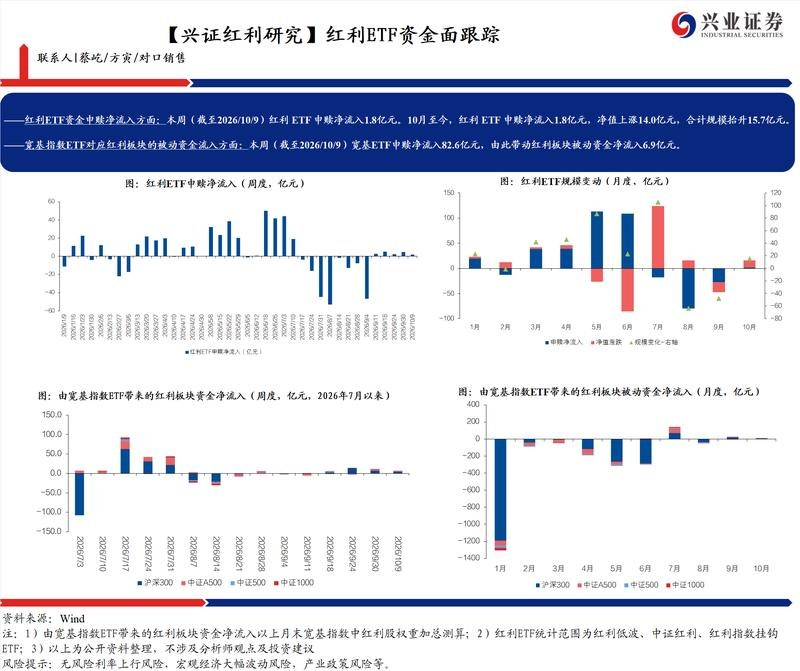
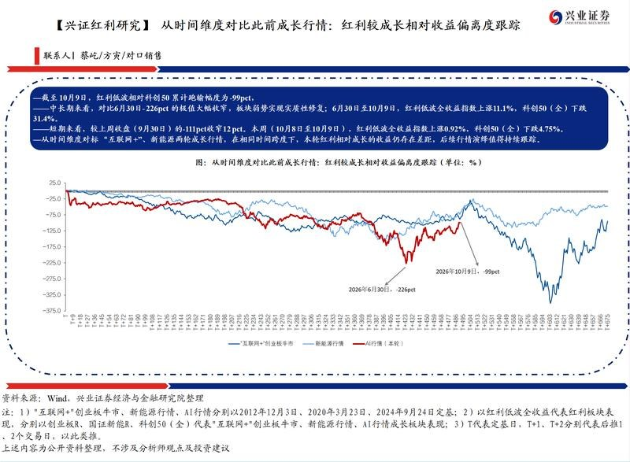

调研纪要 · 2026-10-12 新闻日报
星球 ID: 28855458518111 | 共 298 条帖子 | 精华 81 条
| 查看研究积累
强制同步到研究积累
全部 计算机 电子 电力设备 其他 机械设备 非银金融 汽车 基础化工 医药生物 宏观策略 食品饮料 建筑装饰 传媒 通信 轻工制造 交通运输 煤炭 国防军工 社会服务 建筑材料 家用电器 房地产 石油石化 公用事业 商贸零售 纺织服饰 有色金属 美容护理 银行 钢铁 农林牧渔 环保
书签
美国AI产业链公司三季度业绩时间表
美国AI产业链公司三季度业绩时间表
🚩【长城机械 邓宇亮】工程机械：稳是一种更持久的快❗
🚩【长城机械 邓宇亮】工程机械：稳是一种更持久的快❗
第一，股价压制因素解除，出口退税的变动并不涉及工程机械❗
第二，汇兑从Q3到明年都是非常低的基数，汇兑扰动基本解除❗
第三，位置低+跌的因素解除+Q3业绩比Q2好，明年业绩比今年好❗
【工程机械】未列入出口退税调整名单；汇兑影响边际减弱，三季度业绩有望提速，持续力推龙头！[福][福][福]
【工程机械】未列入出口退税调整名单；汇兑影响边际减弱，三季度业绩有望提速，持续力推龙头！[福][福][福]
10月12日晚，财政部、税务总局出台关于调整部分产品出口退税政策的公告，工程机械未列入出口退税调整名单。市场担心的出口退税调整事宜“靴子落地”。
【工程机械】第三季度业绩有望提速，明年业绩持续较快增长，三季报后有望迎来估值切换。
【挖掘机】9月份，销售各类挖掘机22717台，同比增长14%；其中国内销量9911台，同比增长7%；出口12806台，同比增长21%。2026年1-9月，共销售挖掘机214274台，同比增长23%；其中国内销量104530台，同比增长16%；出口109744台，同比增长30%。
【工程机械】被市场低估。周期向上，海外市占率提升，国内更新周期逐步启动。重点推荐：恒立液压、三一重工、徐工机械、中联重科、山推股份、潍柴动力、杭叉集团等[福][福][福]
【df-qc】[玫瑰]新能源车出口退税政策影响分析
【df-qc】[玫瑰]新能源车出口退税政策影响分析
[太阳]出口退税政策在市场预期之内。财政部、税务总局发布关于调整部分产品出口退税政策的公告，自2027年4月1日起，将新能源汽车的增值税出口退税率由13%下调至9%。
[太阳]考虑车企相应的对策，预计新政对部分车企盈利影响低于10%。经测算，假设在极端情况下，车企自行承担全部新增成本，按2026年新能源车出口量及FOB出口平均单价测算，考虑所得税等，预计新政对比亚迪、吉利等车企2026年利润的影响将在10%以上。目前距离新政落地仍有近半年时间，预计车企将会通过上调FOB价格、推出改款及高毛利新车型等方式转嫁部分成本，假设能转移50%左右退税增加的成本（即单车平均售价大概提升3000-4000元左右），预计新政对出口车企盈利的影响将低于10%。
[太阳]预计未来整车出口将呈现分化，各车企在海外市场的份额拓展及盈利能力将取决于车企自身的综合竞争力；比亚迪、吉利、上汽等部分车企在海外有工厂布局或者和海外车企合作生产等，预计未来受到欧盟进口限制及新能源车出口退税政策调整的影响相对更小。
🔮行业专家怎么看？—王朝成261012
🔮行业专家怎么看？—王朝成261012
🔮王朝成
1）中秋双节酒业预计同比下滑15%—20%，呈现量、价、利齐跌，#市场仍在惯性下行，尚未出现边际改善。次高端价格下探后低端才趋稳，高端同样缩量。
2）四季度预计延续惯性下跌。去年压力更多来自政策因素，今年则是#消费降档比需求缩量更严重，本质上与消费能力变化有关。
3）产业周期通常经历扩量、量价齐升、价涨量滞和量价齐跌四个阶段。啤酒2013年达到销量高峰，目前约为当年的70%；白酒受渠道库存影响，衰退表现更具滞后性。
4）啤酒2019年后依靠6—8元产品扩容并升级至8—10元价格带，实现业绩改善；白酒却在需求下行中持续涨价，且结构升级和集中度提升已基本完成，#不能简单复制啤酒的复苏路径。
5）黄酒比高端化更重要的是全国化，没有全国化就难有持续性；低度酒的高端价格上限相对较低，#产品高端化不宜定价过高。新酒饮对大型酒企是长期探索，对创业者则是重要机会。
6）#不同酒企所处周期不同。全国性酒企主要走高端化、全国化和全球化；地方龙头则以核心系列深耕省内，再向上下价格带延伸。企业周期与产业周期叠加，决定了各家抗跌能力和增长节奏。
7）酒企应采取四类行动：#顺势降价稳份额、系列下延抢份额、用户运营挤份额、创新品类育份额。除茅台、五粮液等强品牌外，多数酒企需要主动调整价格与产品结构。
8）宴席是收割型场景，不是培育型场景。300—600元次高端价格带仍有诞生大品牌的空间，但酒企更应依靠长期用户运营。
9）白酒创新必须有边界。全球烈酒通常以40度为度数下限，新酒种也有自己的消费逻辑打法。
————————————
🔮欢迎联系团队获取完整会议纪要。
【华西电子卜灿华团队】重视国内专家标注行业增长
【华西电子卜灿华团队】重视国内专家标注行业增长
🔥 UniPat拟融资3亿美元，国内高端数据价值加速显现。
根据IT之家援引彭博社，阿里拟领投UniPat AI融资3亿美元，腾讯、红杉等参与，估值约25亿美元，交易仍在磋商。公司聚焦AI训练与评测数据，国内专家数据服务开始进入大厂布局视野。
🌍 海外先行，已走向千亿量级
根据界面新闻、第一财经及投资界
➠Scale AI在25年交易估值超290亿美元
➠Surge在25年获约240亿美元媒体估值。
➠Mercor在26年8月洽谈约200亿美元估值融资
三家公司估值均在千亿人民币量级。
我们认为海外模型相对领先，#对专家标注的需求早已体现，国内将进一步跟上。
🚀 模型升级推动专家数据需求。
我们认为，AI从回答问题走向完成真实工作，任务设计、推理评价、错误发现等环节更依赖专业知识。随着AI模型进入提升AGI能力阶段，专家标注重要性凸显，#有望受益于后训练的大量新增需求，未来国内也有望快速诞生新的千亿公司。
📋受益标的：友邦吊顶、麦迪科技等；
风险提示：新技术落地不及预期等。
具体信息欢迎联系华西电子团队/卜灿华(SAC：S1120524120006)17773137781
REA【逆向一切】：软件行业估值逻辑的潜在重构
REA【逆向一切】：软件行业估值逻辑的潜在重构
开源项目REA（Reverse Engineering Assistant）引发市场关注，截至10月12日，它的 Star 数已突破11万。该项目通过AI辅助逆向工程，尝试将闭源软件的功能逻辑拆解并重建为可独立运行的代码。相关项目在开源社区获得较高关注度，部分演示案例已能实现大型软件功能的复现。
长期看，软件公司价值重心必将转移，参考海外经验，软件企业的竞争壁垒将逐步从''代码本身''转向以下维度。
#客户成功体系：
#用友网络： 大型ERP/财务/人力/供应链系统实施周期长，客户替换成本高，续费和服务收入占比高。
#卫宁健康： 医院HIS/电子病历/临床系统部署深，售后实施和运维粘性强，医疗场景替换风险高。
#数据网络效应：
#同花顺： C端金融流量池大，行情、投顾、AI问答形成数据闭环，用户习惯强。
#金山办公： 文档、表格、PPT使用频次高，企业协同和AI办公功能提升留存。
#生态绑定：
#恒生电子： 覆盖券商、基金、资管等核心交易系统，API/接口生态深，替换成本极高。
#中控技术： 流程工业DCS/工业AI平台绑定产线、设备和工艺数据，第三方集成空间大。
#品牌与合规信任：
#恒生电子： 证券/资管核心系统供应商，金融合规、稳定性、审计能力构成强信任壁垒。
#启明星辰： 政企数据安全/合规治理能力强，政务、央企场景信任度高。
比亚迪计划大规模招聘，将欧洲员工人数增至4万人
比亚迪计划大规模招聘，将欧洲员工人数增至4万人
天风机械 | 杰普特公告点评：无源无畏，业绩无忧1012
天风机械 | 杰普特公告点评：无源无畏，业绩无忧1012
公司公告称，2026年至今已累计收到北美某光纤连接解决方案提供商V客户采购订单1.6亿美元，折合人民币约11亿元（不含税）。
杰普特近期略有调整，我们认为主要跟随市场风偏及光相关外部事件冲击，而公司自身基本面无忧，且无源受到的影响非常小，或为可穿越不同光联接方案的重要板块。
1）光连接：此前我们已经上修全年MPO订单至2亿美元，较年初公司指引的1亿美元有大幅增长。#节前致尚科技公告5亿美元PH客户订单、据我们了解、杰普特拿到的指引也基本一致。叠加新客户新品类的产品，我们中性预期明年公司可达MPO 40e+FAU 10e，较今年大幅增长3倍，且仍有超预期空间。
2）钻针：公司PCD钻针采用前端PCD金刚石+后端钨钢棒结构，极限寿命达涂层针百倍，今年目标完成产品从实验室到客户端验证，#年底月产能达到1万支；目标27年月产能达10万支以上、28年产能达百万支量级。若按当前推广期初步定价1000元/支计算，26/27年底年化收入分别为1.2e/12e，有望成为明年重点增量业务之一。
三季度为公司3C业务确认收入高峰，叠加MPO逐月增长，预计公司Q3业绩有望继续创历史新高。预计全年不考虑股权激励费用利润6亿元（SBC 1.5e）；预计27年15亿利润。建议持续重点关注蘅东光、杰普特、致尚科技🌈
【西南电子hy】联瑞新材已进入击球区，建议重视！
【西南电子hy】联瑞新材已进入击球区，建议重视！
1️⃣硅微粉9月以来全球稼动率🈵，海外大厂寻求国内代工产能，国内大厂寻求新扩产空间，以往价格属性并未在硅微粉行业体现过，但当前结合供需来看，价格弹性一触即发，Q4会是行业变化很大的一个季度。
2️⃣供应链跟踪下来，SY在Q3为m8和更高等级的CCL材料加速备货，多个环节公司接到Q4上修备货的指引。我们相信，以SY为代表的高速CCL公司将在Q4加速拉货，上游高规格硅微粉弹性较大，价值量/毛利率相对传统产品明显增加。
碳氢树脂的CCL和ptfe方案并非互相替代，而是互为补充，且碳氢CCL也有无布版本方案，逻辑上看硅微粉用量也将有提升，这个角度上碳氢和ptfe不管怎么用，对硅微粉都是利好。
3️⃣三季度联瑞产能利用率明显提升，且是液相法完整放量的第一个Q，我们测算公司Q3表现有望较佳。
我们深度报告先前已发，这个位置建议您重点关注！！
[庆祝][庆祝]【财通建筑建材】鸿路钢构经营数据简评：产量再回20%+增速，继续兑现量利双增
[庆祝][庆祝]【财通建筑建材】鸿路钢构经营数据简评：产量再回20%+增速，继续兑现量利双增
[礼物]公司发布Q3经营简报，Q3新签订单82.73亿元，yoy+5%左右，若用热卷4.75均价+1100元加工费的统一口径计算，测算订单加工量yoy+9.5%左右，订单保持稳健增长，我们认为公司当前不缺订单，草根调研9月份订单良好，当前已排产至12月中旬，Q2/Q3按照上述规则计算的订单量达到182/191万吨，高于当前150万吨左右的月产量，进入Q4公司已公告多个大单，对Q4冲击更高产量奠定了良好基础。
[礼物]Q3公司产量151.27万吨，符合我们的跟踪判断。环比小幅增长，从季节性来看，以往公司Q3产量普遍小于Q2，今年实现淡季不淡，除公司自身产效不断提升外，我们认为也与需求不错有关，我们之前反复强调，我们认为今年钢结构供需关系看到了拐点，这也是我们观点中与市场不同的地方。Q3产量同比增长21%，公司自24Q1以来，产量增幅均未超过15%，26Q3重回20%以上增长，是量利双增拐点逻辑的有力证明。展望Q4，若公司能够继续保持20%左右增长，单季度产量或达170万吨左右，全年或达590万吨左右，而公司全年产量目前当前为600万吨。
[礼物]我们认为公司当前订单充裕，拐点逻辑已经历了三个季度的基本面兑现，后续有望延续，预计26-28年业绩10/13/16亿元，对应PE15.1/11.6/9.4倍，维持“买入”评级。
🔥【国盛建筑何亚轩】鸿路钢构：Q3产量提速，业绩高增确定性提升
🔥【国盛建筑何亚轩】鸿路钢构：Q3产量提速，业绩高增确定性提升
🌟 产量看：26Q1-3钢结构产量421万吨，同增17%；其中Q3产量151万吨，同增21%，较Q2提速7pct。公司已铺设超3600台焊接机器人，当前增产效益持续显现。我们预计公司Q4产量有望再上台阶，全年可展望600万吨产量，同增约20%。
🌟 订单看：26Q1-3订单244亿元，同增9.7%；其中Q3订单83亿元，同增4.9%，Q3钢价同比有所下滑（热轧卷板同比-3.2%），影响签单额增速。随着数据中心、半导体等高端制造行业扩产及出海战略推进，公司凭借规模、工期、质量等优势，签单有望持续饱满。
🌟 Q3业绩展望：假设26Q3扣非吨净利190元（Q2为177元，同比+83元、环比+61元）、产量151万吨（已公告）、非经常性损益0.3亿元（参考Q2水平微调），测算单季扣非/归母净利润2.87/3.17亿元，同比+137%/+52%；前三季度扣非/归母净利润6.9/7.6亿元，同比+93%/+52%。随着单位折旧摊销下降、高价钢库存影响消退、机器人降本增效及主动提价，量价齐升逻辑有望持续兑现。
🌟 转债压制解除：10月9日鸿路转债到期兑付，该转债初始发行1880万张，转股1496万张，兑付384万张，兑付比例较低（兑付金额4.2亿元），预计对公司现金流影响较小（26H1公司货币资金+交易性金融资产32.3亿元）。转债兑付后，前期制约公司估值的一大重要因素消除，公司估值有望修复。
👉投资建议：预测公司26-28年归母净利润分别为10.2/12.4/14.9亿元，同增62%/21%/20%，当前股价对应PE分别为15/12/10倍，继续重点推荐。
🔔风险提示：钢价波动风险，智能产线效益不及预期风险等。
☎联系人：何亚轩
【广发机械】联讯仪器业绩点评：Q3业绩环比提速，坚定看好光测试设备龙头 1012
【广发机械】联讯仪器业绩点评：Q3业绩环比提速，坚定看好光测试设备龙头 1012
#Q3业绩环比继续提速。公司发布业绩预告，预计2026Q1-3归母净利润为19-21.亿元，同比增长1866%-2073%。其中26Q3预计净利润13.33-15.33亿元，环比+197%-241%，业绩释放继续加速。
#公司“光+半导体”深度布局，#持续看好公司的长期增长潜力。光测试设备是光模块产线设备端少有的量价齐升环节，公司作为国内龙头深度受益下游光模块扩产大周期。此外公司在NPO、3.2T、CPO光电测试、高速铜缆测试、存储高速FT测试机等新领域进展不断。长期业绩有望持续超预期，坚定看第一市值目标3000e。
孙柏阳/汪家豪/王宁/许贝尔
【中泰电子&机械丨联讯仪器】Q3业绩高增，期待光通信&半导体共振！
【中泰电子&机械丨联讯仪器】Q3业绩高增，期待光通信&半导体共振！
📖事件：公司发布26Q3业绩预告：
【归母】13.33-15.33亿，中枢14.33亿，yoy+3483%，qoq+220%；
【扣非】12.38-14.38亿，中枢13.38亿。
核心增长驱动力来自光芯片设备和光模块仪器。
#光通信领域
1️⃣光芯片：核心是KGD设备，联讯市占率超50%，当前EML和CW光芯片实际良率较低，设备需求量大，公司订单持续高增。
2️⃣光模块：公司1.6T示波器全球领先，正迎来爆发增长；2.4t本月给客户送测，3.2t随后推出。
3️⃣CPO：实现CPO四大测试环节全覆盖，其中OE测试，公司测试效率较行业平均水平提升2倍，优势明显，正在对接全球头部客户。
#半导体领域
1️⃣FT测试机：公司18G高速FT测试机在存储大厂验证顺利，核心芯片一次流片成功，预计26-27年逐步放量。此外，新增CP测试，有望在27年送存储大厂验证，进展可期。存储业务线持续拓宽。
2️⃣soc测试机：国产替代从0到1，联讯自研ASIC芯片，稀缺性突出，且专门针对GPU测试研发设备，样机已送样头部大厂。未来几年GPU测试市场需求有望突破200亿元，高速增长，联讯有望充分受益。
[闪电]风险提示：新品研发和客户拓展不及预期。
☎联系人【中泰电子&机械】：王芳/杨旭/谢校辉
九毛九26Q3经营数据点评：太二内地同店持续改善，品牌间表现分化
九毛九26Q3经营数据点评：太二内地同店持续改善，品牌间表现分化
[太阳]Q3主要品牌经营表现分化，太二内地表现相对较好。 截至9月末，公司共有门店584家，其中太二462家、怂火锅48家、九毛九59家。26Q3太二自营门店翻台率3.8次/天，人均消费73元，同店日均销售额同比+5.1%。
■ 太二内地同店：Q3+10.4%，延续 26H1以来内地双位数的修复态势。主要由客流提升带动，人均消费（66元）保持相对稳定。
■ 太二整体同店：实际+5.1%，低于26H1的+7.4%，主要拖累来自海外（-17.4%）。
■ 怂火锅：Q3 同店 -26.8% 弱于 26H1 的-22.9%，出清对同店与利润的拖累尚未见底。
■ 九毛九品牌：-11.4% 与 26H1 基本持平。
[太阳]太二“鲜活”模式持续迭代，国庆经营表现进一步改善。 截至9月末，太二内地“鲜活”模式门店累计达358家，覆盖90个核心城市，其中最新一代“6.0鲜活模式”已落地5家。国庆期间，太二内地同店日均销售额同比+17.8%，整体翻台率超过5次/天，“鲜活”模式门店表现更优，显示门店模型优化对经营修复具备积极作用。
[太阳]九毛九品牌新模型初见成效。 国庆期间，“九毛九·山西菜馆”可比门店同店日均销售额同比实现双位数增长，优于九毛九品牌整体表现，初步验证新模型在改善门店经营方面的积极作用。但从Q3整体数据看，九毛九品牌自营门店同店日均销售额仍同比下降11.4%，新模型的改善效果及后续推广成效仍有待持续验证。
⭐️核心观点： 九毛九Q3经营呈现明显分化，太二内地同店销售额转为增长，是当前经营修复的主要亮点；但海外太二、怂火锅及九毛九品牌仍面临不同程度的经营压力。国庆期间太二延续改善、九毛九新模型表现向好，为后续修复提供积极信号。建议重点关注。
[庆祝]【华创化工&新材料】新宙邦26Q3归母净利润预计5.46~5.96亿元，同比上升106.73%~125.66%，环比增加8.52%~18.45%
[庆祝]【华创化工&新材料】新宙邦26Q3归母净利润预计5.46~5.96亿元，同比上升106.73%~125.66%，环比增加8.52%~18.45%
[红包] 事件：2026年前三季度归母净利润预计15.30~15.80亿元，同比上升104.53%~111.22%；扣非归母净利润预计15.299~15.799亿元，同比上升113.88%~120.87%。计算得到26Q3归母净利润预计5.46~5.96亿元；扣非归母净利润预计5.61~6.11亿元，同/环比上升125.02%~145.09%/增加12.26%~22.27%。
三大业务协同发力，一体化优势持续释放。据业绩预告，1）电池化学品受益于储能高景气和动力电池增长，联动石磊氟材料、瀚康电子材料，强化六氟磷酸锂及添加剂供给，产销量快速增长，售价稳步修复，销售额及盈利同比大增。2）电子信息化学品受益于新能源、算力中心及半导体发展，新品落地、深耕客户推动市占率提升，业绩大幅增长。3）有机氟化学品稳健贡献利润，布局半导体、数字基建及绿色低碳新品，强化氟精细化学品与氟聚合物协同。4）福建海德福、湖南福邦第三季度进入持续盈利状态。
[红包] 扩产与客户合作同步推进。1）据半年报，海斯福年产3万吨高端氟精细化学品、海德福年产5000吨高性能氟材料项目在建。2）与宁德时代签订电解液合作协议，2026~2028年预计采购5/10/15万吨；湖南福邦拟投资不超过3.5亿元建设年产1万吨双氟磺酰亚胺锂改扩建项目，建设期不超过24个月。
联系人：孙维容/李妍
【开源电新】新宙邦中报预告-1012
【开源电新】新宙邦中报预告-1012
⭕️26Q1-3实现归母净利15.3-15.8e，其中Q3 5.5-6.0e，取中值5.7e，环比+14%，#其中海德福Q3已实现单季度盈利，考虑投资收益拖累，单Q3经营利润看6e+。
🌟坚定27年为冷却液业务放量拐点：1）全球龙一3M退出，去库只是节奏问题，龙二索尔维基于环保政策扩产难度较大，利好国产替代；2）半导体capex高增，行业需求增长。
❗️新宙邦已陆续出货全球龙头台积电、国内长鑫长存等头部半导体客户，具有客户验证的卡位优势。叠加供需刚性短缺，#成为全球半导体氟化液一供是时间问题，不存在挑战❗️
🌟电容明年6e，海外客户占比4成跟随日韩系放量，置信度较高
🧧维持26-28年22/30/38e利润预测，其中半导体相关7/10/14e利润，27年10e半导体+6e电容+2e有机氟+10e锂电=28-30e，综合pe不到20x，是业绩靠谱、成长性、低估值的公司❗️
今天股价扰动主要为不实传闻，一切正常推进，期权业务静待花开；便宜的好公司不该因为谣言被错杀，当前位置重点推荐，维持千亿判断📈
————
欢迎交流：刘小龙/陈诺
[太阳]【金蝶国际】：AI对业绩拉动效应显现，高度重视！
[太阳]【金蝶国际】：AI对业绩拉动效应显现，高度重视！
2026年前3Q公司订阅服务年经常性收入（ARR）约为人民币46.04亿元，同比增长约19.3%；#第三季度单季净新增ARR同比增长约46.9%，主要受益于AI在企业管理领域的应用持续深化，带动客户对金蝶AI套件及灵基的需求高速增长。
2026前3Q，#公司AI原生产品签约合同金额达人民币10.02亿元。此外，AI+SaaS产品（金蝶AI星瀚、金蝶AI星空及金蝶AI星辰）净金额续费率（NDR）分别为101%、97%及95%。集团于2026年第三季度中标签约中国中车、长安汽车、中国光大集团、华住集团、阳光智维等知名企业。
#我们认为AI对公司业绩拉动效应逐渐显现，且公司估值处于历史低位，建议高度重视！
🚀10月金股-金蝶：#迈入AI新产品周期，三季度大超预期！正站在AI业务爆发的起点【天风计算机缪欣君团队】
🚀10月金股-金蝶：#迈入AI新产品周期，三季度大超预期！正站在AI业务爆发的起点【天风计算机缪欣君团队】
点评：
1️⃣淡季不淡，AI新产品周期释放新需求：
根据公告，Q2净增ARR 1.89亿，Q3净增ARR 1.91亿。软件公司Q3环比为负是常态，Q3环比为正即金蝶公司年中正式发布的新产品#AI套件客户反响热烈，体现公司AI转型已阶段性成果达成。
2️⃣ARR提速下，对收入/利润/现金流以及全年乐观
公司目前订阅收入占比已超过6成，高质量AI带来的订阅提速预计亦体现在收入/利润/现金流层面。新产品周期下，全年基本面趋势我们充满信心。重申全年FCF 10亿，FCF 14亿的#核心目标 不变。
3️⃣金蝶2030 AI战略达成，清晰度持续正提升
根据公告，公司AI套件签约达10亿，根据产业调研，灵基签约客户数正爆发增长。我们看好公司AI再造一个金蝶目标的实现，未来五年ARR和收入持续提速，2030年 AI原生收入50%（含AI套件，AI灵基）。
欢迎交流！
天风计算机 缪欣君团队
弘信电子今天官宣，全资子公司安联通拿下英伟达RTX PRO5500新合规卡大额订单！
弘信电子今天官宣，全资子公司安联通拿下英伟达RTX PRO5500新合规卡大额订单！
H20原厂早就停止大批量供货，市场只剩零星二手库存，算力租赁行业持续卡荒。所有人都在等一款合规可稳定进口、完整保留CUDA生态的新卡，RTX PRO5500就是这个答案。
弘信的核心底牌就是安联通——国内英伟达合规卡赛道最核心的代理商，拥有Compute+Networking双Elite精英资质，国内能拿到同级别配额的对手，仅剩超擎数智一家。
市场测算：PRO5500国内全年潜在需求200万张。拿货成本8万/张，对外出货10万/张，单张毛利2万。
如果安联通拿下国内20%份额，对应40万张，直接带来400亿营收，80亿毛利润！
H20时代，弘信拿卡优势有限；进入合规工作站卡时代，局面直接反转，过去的短板彻底变成核心优势。
RTX PRO5500，Blackwell架构，84GB GDDR7大显存，单机70B、120B大模型推理随便跑，自带显示接口，本地AI、Agent、数字孪生、工业仿真一机搞定。
金禾实业：三氯涨价+厄尔尼诺，看到220亿以上，当前80%空间
金禾实业：三氯涨价+厄尔尼诺，看到220亿以上，当前80%空间
1.公司当前年化业绩约5.5-6亿，目前股价位置是近10年股价底部区间
2.核心产品三氯蔗糖涨价的利润弹性：目前三氯蔗糖行业不赚钱，公司1万吨销量，目前估计亏损1.5亿左右，参考2024年7月份，处于预计价格能从9.5万/吨涨价到25万/吨，15.5/1.13（涨价幅度税后）*1万吨销量*0.85（所得税后）=11.65
3.三氯蔗糖行业出清较彻底：金禾1.3万吨，康宝0.8万吨，科宏0.8万吨。前三家占到全球90%的产能。
4.三氯蔗糖是代糖，下游是饮料消费等，需求稳定，公司三氯蔗糖卖给可口可乐，百事可乐等。
5.当前市值125亿，目标空间17亿利润*13X（不是纯周期，有成长，有厄尔尼诺贝塔）=220亿
【东吴计算机】仁东控股：投资太初集成电路，积极布局AI战略
【东吴计算机】仁东控股：投资太初集成电路，积极布局AI战略
[庆祝]事件：公司与关联方星火聚信、水木同德签署《合作设立投资产业基金的意向协议》，拟共同发起设立专项基金，合计投资规模不超过15亿元人民币，专项投资太初（杭州）集成电路有限公司，仁东控股及/或其指定主体拟认缴出资不超过1亿元人民币。
太初发布新一代国产芯片T2 Ultra：2026年7月的WAIC 2026上，太初元碁发布新一代国产 AI 异构芯片 T2 Ultra，T2 Ultra芯片HPC算力（FP64）为38 TFLOPS，可满足科学计算需求；FP4算力则高达4800 TFLOPS（稀疏算力），FP16算力1200 TFLOPS（稀疏算力）应对各种AI训推场景，原生支持FP64至FP4、实现全精度覆盖。单机最大支持 128 卡直连互联。
观点重申：
公司确立了“支付赋能产业，AI引领未来”战略愿景，明确向智能科技生态平台跨越——立足支付主业优势，发力跨境支付业务突破；同步推进“支付+AI”生态建设，以支付为入口，积极培育发展第二增长曲线。
风险提示：投资失败风险、支付牌照续展风险、市场竞争加剧风险。
❗️今晚问【云意电气】的领导很多，统一更新今天调研几个关键亮点
❗️今晚问【云意电气】的领导很多，统一更新今天调研几个关键亮点
1、强强联合（云意+南京迈科思+SuperxAI+ 翌晶能源）已打通SOFC整线各核心环节，技术国内顶尖。战略清晰，瞄准海外缺电场景
1）南京迈科思：高校教授团队，#SOFC最大难点阴极SrCo活性材料专利国内独家，已转让合资公司
2）翌晶能源：国内SOFC电堆商业化进展最快，欧洲兆瓦级商业化订单
3）SuperXAI：#英伟达ELITE合作伙伴，海外AIDC渠道丰富，十多个AIDC项目在进行
2、技术路线：独创SrCo阴极基活性材料，对比其他技术路径，具有降低工作温度、提升电效率、降低成本等优势，是最具商业化前景的路线之一。#目前公司技术路线整线成本已低于BE
3、云意切入核心部件制造+整线系统集成环节，直接对标BE。#单GW价值量100-150e人民币，BE利润率达30%+。每100MW增加4-5亿净利润
4、商业化规划：短期一年内#徐州500kw项目上线，SuperX AI海外10MW示范标杆项目投产。中期3-5年内GW级海外项目投产，几十亿利润体量空间
[礼物]最大的投资亮点是：SOFC蓝海市场，BE 5000e市值 v.s. 公司仅100e市值，业务期权天花板非常高！同时公司主业稳健4-5亿利润，下有主业底，向上空间感非常强
[太阳]【金蝶国际】：AI对业绩拉动效应显现，高度重视！
[太阳]【金蝶国际】：AI对业绩拉动效应显现，高度重视！
2026年前3Q公司订阅服务年经常性收入（ARR）约为人民币46.04亿元，同比增长约19.3%；#第三季度单季净新增ARR同比增长约46.9%，主要受益于AI在企业管理领域的应用持续深化，带动客户对金蝶AI套件及灵基的需求高速增长。
2026前3Q，#公司AI原生产品签约合同金额达人民币10.02亿元。此外，AI+SaaS产品（金蝶AI星瀚、金蝶AI星空及金蝶AI星辰）净金额续费率（NDR）分别为101%、97%及95%。集团于2026年第三季度中标签约中国中车、长安汽车、中国光大集团、华住集团、阳光智维等知名企业。
#我们认为AI对公司业绩拉动效应逐渐显现，且公司估值处于历史低位，建议高度重视！
【天风医药杨松团队】翰宇药业更新：三季报业绩超预期，看好后续GLP1订单
【天风医药杨松团队】翰宇药业更新：三季报业绩超预期，看好后续GLP1订单
🔥事件：2026年10月12日，公司发布三季报预告：2026Q1-Q3实现收入12.3-12.5亿元（yoy+80~83%），归母净利润4.3~4.5亿元（yoy+503~531%），扣非归母净利润4.2-4.3亿元（yoy+726~766%）。
业绩大超预期，系GLP1 API放量，我们看好公司超额完成全年股权激励目标。
⭐#GLP1 API 大订单： 根据公司1月16日及5月19日发布的公告，公司1月及5月均签订GLP-1原料药订单，金额分别为1.8亿元及3.27亿元（合作方A及合作方B，美洲部分市场）。
#股权激励： 2026年7月1日，公司披露了《2026年限制性股票激励计划（草案）》，拟向不超过111名激励对象授予授予不超过1,950万股限制性股票，价格为每股11.61元。
#解锁目标： 本次激励计划以2025年营业收入为基数，设定了三年的业绩考核目标：2026-2028年相较于2025年收入分别增长40%/100%/160%，对应为13.5亿元、19.3亿元及25.1亿元。
#技术储备： 公司此前利拉鲁肽注射液在美国首仿上市、近期（7.1）替尔泊肽获得美国ANDA首仿申请受理，证明公司在多肽领域坚实的技术储备。
我们看好公司下半年经营进一步进展。更多：天风医药 杨松/刘一伯
【tfjx】联讯仪器业绩预告点评：Q3业绩爆发增长环比+220%，新产品循序渐进，调整即是布局好时机
【tfjx】联讯仪器业绩预告点评：Q3业绩爆发增长环比+220%，新产品循序渐进，调整即是布局好时机
[太阳]公司发布公告，预计2026年前三季度归母净利润19.00亿元~21.00亿元，同比增长1866%~2073%。业绩变动主要系受益于人工智能技术快速发展及全球算力需求持续提升，数据中心建设加速推进，高速光通信领域市场需求保持较快增长，带动公司通信测试仪器产品及光电子器件测试设备产品销售增长。
[庆祝]其中，Q3预计实现归母净利润13.33~15.33亿元，同比+3233%~3277%，环比+198%~242%；Q3业绩预期中值实现归母净利润14.3亿元，同比+3483%，环比+220%。Q3业绩持续爆发增长，业绩符合我们之前预期。
[庆祝]光通信及光芯片检测。#以示波器为主的光通信测试设备Q3起逐步放量，核心产品向多家国内外知名用户量产供货，公司市场份额持续扩大，面向高速DAC铜缆测试需求的高速线缆测试仪批量交付。CPO等环节有望带来检测环节整体前置，加大在光芯片及光器件检测方面投入。公司CoC光芯片老化测试系统等产品向国际头部用户的出货规模持续增长。#硅光晶圆测试系统累计出货量突破100台，实现规模化量产。面向CPO/NPO OE芯片裸Die级分选测试需求的OE芯片KGD分选测试系统产品已通过行业一流用户的验证并实现收入。
[庆祝]新产品持续拓展。采样示波器方面，2.4T/3.2T采样示波器自研采样保持芯片已成功流片，预计2026年下半年向行业头部用户送样验证。CPO检测方面覆盖CPO全环节测试需求。CPO/NPO的KGD分选测试系统产品，进一步开展与国内外知名CPO厂商的对接合作。同时，公司拟启动高速光电混合测试ATE项目，已初步完成技术预研，将电学测试与光学测试集成到统一的自动化测试平台中，满足CPO全环节光电混合量产测试需求。
[庆祝]外延存储芯片检测验证取得突破。加速推进存储芯片测试设备的战略布局。高速存储芯片测试系统方面，公司自研ASIC芯片、PE芯片流片成功，已通过国内头部DRAM厂商的ETS工程验证，正在进行整机验证；HBM芯片KGD分选测试系统在客户处的送样验证工作有序推进中；中速存储芯片测试系统的研发项目已启动。
[红包]我们认为，公司在光通信测试领域卡位优势明显，有望抓住下游扩产及国产替代浪潮，实现规模快速攀升；Q3业绩有望实现环比翻倍以上爆发增长。而行业资本开支高点还远未到来，当前估值明显低位，建议重点关注！
强推半导体设备：板块订单有望进一步上修，存储扩产远超预期，估值罕见低估
强推半导体设备：板块订单有望进一步上修，存储扩产远超预期，估值罕见低估
【核心标的】：拓荆科技、盛美上海、精测电子、北方华创、华海清科、中微公司等
[太阳]今年以来，伴随着存储扩产超预期，半导体设备公司订单持续上修，从两存的10万片，到12、14，以及晋华的贡献，明年可以继续展望翻倍的扩产动能，28年以后，存储扩产继续，先进制程订单的国产化率将迎来大幅提升，韬定律还将大幅提升先进制程扩产空间，总之，半导体设备订单将迎来一个3-5年的高速增长，今年只是订单提速的第一年。
[太阳]以龙头【拓荆】为例：之前预期新签订单经历了120亿到150亿的上修，本轮我们判断有望上修至150-200亿的中上限，产业跟踪公司上半年订单增速翻倍以上，Q3叠加CC的订单，增长有望加速，公司作为存储敞口最高的设备公司之一，明年随着扩产翻倍，新签有望继续高速增长至350亿以上；另外，清洗设备龙头盛美，26H1新签增速超过100%，截止9月底在手订单170亿+，同比88%增长，也是订单上修的例证！
[太阳]估值角度，美股设备龙头LRCX4000亿美金市值，预期收入持续上修，2027年410亿、2028年470亿美金左右（近期外资上修口径），对应ps 10x、8.5x；再看国内设备公司，市值/明年订单拓荆5x，华创不到4x，历史罕见低估！
[太阳]越来越多证据表明，半导体设备将是未来几年AI发展的瓶颈，无论是价格再次超预期的存储，还是不断上修的CPU，瓶颈矛头都在指向半导体设备。capex上修、订单超预期、价格上涨的正循环正在形成
🔥优选存储敞口高、弹性大的【拓荆科技】，展望30年国内1200e美金存储+逻辑+封装capex，900e订单空间，200-250e利润空间，叠加HB设备在3D封装时代的爆发力，维持5000亿以上市值空间！另外，看好盛美上海、精测电子、北方华创、华海清科、中微公司等！
详情联系 zxjtdz yk
[太阳]南京秋糖王朝成演讲要点20261012
[太阳]南京秋糖王朝成演讲要点20261012
整体判断：#旺季不旺、分化加剧。双节下滑15%、低于此前春糖提出的Q3边际收窄的预期；其中百元以下基本持平、次高端是重灾区、700元+的高端缩量/从千店调研样本来看茅五个人消费量也有双位数下滑。#虽政策实践有边际放松但由于经济影响和消费力下滑、消费降档。Q4预计延续Q3惯性，春节需求27年才体现。
龙头企业动作：茅台价格市场化是#收回部分渠道价差，i茅台2C但淡季也有不少产品最终流向批发渠道，往后价格市场化空间可能有限、#要看高端消费量怎么演绎。五粮液调整后今年以比较轻松的心态消化前期积压库存。
不同酒种产业周期对比：
1）酒类演绎量增-量价齐升-量稳价增-量价齐跌四个阶段；13-16年是酒精摄入量高峰，啤酒13年往后一直量减13-19年没有演绎高端化、19年之后才开启高端化；但#白酒16-21年先走完了高端化，量很难演绎向上的周期，未来有集中度提升逻辑但空间不大。
2）黄酒：高端化是对的但全国化更重要；高端品定价需要慎重、太贵可能档次比白酒还高，量小的话粘性不足、无复购。#目前找茅台大商是正确的思路因为大商有很多资源、但是价格要合理化；其次需要努力做消费者培育。
#不同酒企: 两端酒企全国化比次高端/地产品牌容易，原因在于低端没钱做渠道、高端品牌地位强不需要投入太多，这类企业表现相对稳定、表现和行业景气度关联度高；中间地方酒企基数小、爆发性强、下行期稳定性差一些。地产企业的表现和当前主导产品所处生命周期关联度高，洞藏、国缘还在成长阶段，金徽在周边化扩张。
#酒企逆周期策略:
1）顺势降价，如1935、红花郎等，只有茅五可以硬扛价格、其他品牌不具备。2）系列下延抢份额，比如国缘淡雅。3）用户运营：现阶段大部分酒企做宴席，但宴席场景是收割型而非培育型场景，300-600元次高端在泡沫破裂阶段企业受损大、缩减市场培育支出，#该价格带坚持培育5-10年挺过周期可能可以慢慢做大。4）品类创新：白酒还是要围绕白酒做、#做有边界的创新，38、39度是低度化比较可行的范围/国际烈酒下限基本也在40度；对于成熟的大企业创新酒种短期贡献的空间有限。
[玫瑰]华泰必选[玫瑰]王朝成秋糖交流要点-261012
[玫瑰]华泰必选[玫瑰]王朝成秋糖交流要点-261012
[太阳]行业整体：中秋双节动销-15%-20%（盛初数据），Q3整体仍承压、动销偏淡，量价利同步回落。分价位看，100元价位相对稳定，300-400元及600元价位回落较多，700-800元以上高端有所缩量；茅五瓶数跌幅约16%-18%（王总自有数据），其中茅台企事业团购基本没跌，宴席市场五粮液一枝独秀。
[太阳]原因：并非政策收紧所致（今年三公相关政策反而略有放松），核心是消费能力走弱，降档的影响大于缩量（销量约-4%、销售额下滑十几个百分点）。后续判断偏谨慎，预计Q4延续偏淡。
[太阳]茅台：茅台价格市场化。改革本质是公司为稳固利润所做的战术性安排，以略低于批价的价格投放、并通过i茅台维持稀缺性。但缩量与保利润较难兼顾：当前投放价与批价之间已无空间，继续提价或将面临倒挂；明年能否延续取决于市场容量。
[太阳]五粮液：若历史销量按每年50亿消化可在今年完成、按每年70亿则需更长时间，其合理销售体量约600-800亿元。当前市场对茅台预期最高、对五粮液最低。
[太阳]产业周期：白酒自21年起进入量价同步回落阶段。量减是行业走向成熟的标志性指标，在量、价空间均有限的背景下，后续增长主要来自集中度提升（26H1上市酒企利润占行业比重超80%）。
[太阳]黄酒：黄酒高端化方向正确，但全国化更为关键，且不宜定价过高（价格过高则量小、缺乏粘性与复购）；借茅台大商渠道方向正确，核心在于放量。
[太阳]酒企路径：分两类，一类是已全国化的名酒企，只能向上提价或走向全球化，高低端更易全国化、中间价位难度较大（中间价位最大单品海之蓝巅峰约140亿元）；二类是地方龙头，路径为省内单系列→系列化→周边化，基数小、弹性大，半年报以今世缘、迎驾较好，迎驾洞藏系列尚未成熟因而相对抗跌。前者易受全国趋势拖累，后者更依赖区域机会。
[太阳]逆周期策略：1）顺势降价稳份额，除茅五外多数企业挺价难度较大，国窖最终或需低于普五约50元；2）系列下延抢份额，需坚定系列化，盲目挺价风险较大；3）用户运营挤份额，剑南春今年下调不到10%、价格相对稳定，宴席属刚需但为一次性场景，用户培育更为关键；4）创新品类育份额，38-39度低度化相对更可能落地。
[太阳]【中信汽车】新能源车出口退税退坡点评：利空落地，自主出海趋势不改
[太阳]【中信汽车】新能源车出口退税退坡点评：利空落地，自主出海趋势不改
事项：今天（10月12日），财政部、税务总局发布公告称：自2027年4月1日起，将新能源汽车的增值税出口退税率由13%下调至9%
[玫瑰]对此，我们点评如下：
1、市场预期在哪？ 26年5-9月密集讨论、阶梯式退出：考虑到中国乘用车全球竞争力的提升，如锂电、光伏一样的出口退税取消较为合理，参考其他行业的节奏，阶梯式退出（可能路径为13%-9%-6%-0%）
2、如何看待后续影响？
1）节奏：本次增值税出口退税税率由13%下调到9%，节奏上符合预期，预计后续阶梯式退坡
2）利润：#头部车企有望通过终端涨价、经销商分担、海外建厂对冲部分盈利压力
3）股价：如阳光电源（光伏）分别为-5.3%/-6.3%/-11.7%/-15.6%（相对于沪深300超额分别为-4.9%/-3.7%/-12.0%/-13.5%），宁德时代（电池）分别为-1.0%/-2.4%/-1.3%/-5.8%（超额分别为-0.5%/+0.2%/-1.6%/-3.7%），头部公司股价短期或有回调；#我们认为考虑到EV出口退税的影响多数或在预期内，我们建议逢低买入，看好出海头部主机厂比亚迪、奇瑞、吉利等
[庆祝]欢迎交流，历史复盘和详细梳理参考一张图看懂~
【广发汽车】新能源汽车增值税出口退税对商用车行业影响总体可控，利空出尽看好估值修复
【广发汽车】新能源汽车增值税出口退税对商用车行业影响总体可控，利空出尽看好估值修复
两部发布新闻，自2027年4月1日起，将新能源汽车的增值税出口退税率由13%下调至9%，我们预计对卡车行业影响极小，对大中客行业影响相对可控。
卡车行业出口新能源产品极少。以重汽集团为例，26H1重卡仅出口300台左右新能源重卡。以福田为例，今年以来整体出口产品中新能源产品预计不超过5%。考虑到中国卡车产品在海外极具性价比，电车售价甚至不高于欧美日韩油车售价，还有较大涨价空间，预计该政策调整对卡车行业影响极小。
大中客出口中新能源产品占比约在1/3左右。据中客网，26年1-9月大中客出口4.4万辆，其中新能源产品1.4万辆，占比30.6%，考虑到中国新能源大中客产品在国际上具有极强产品竞争力，有望通过价格调整来对冲掉一部分影响，预计该政策对大中客行业影响相对可控。出口退税政策利空落地，欧盟出口政策即将清晰，以宇通为代表的标的有望迎来估值修复。
详情请联系广发汽车团队张力月18360857211（微信与电话同号）
🛵 两轮车行业跟踪分析26年9月版【国金轻工&新消费】
🛵 两轮车行业跟踪分析26年9月版【国金轻工&新消费】
#整体：同比转正，环比增长3.4%
9月电动两轮车出货719.1万辆，同比+53.5%、环比+3.4%；内销694.7万辆，同比+59.7%，出口24.4万辆，同比-27.1%。同比高增部分受同期低基数影响，但9月环比+3.4%，剔除基数影响后需求仍在扩张。1-9月整体销量5046.2万辆，同比-6.6%。
#品牌：台铃、爱玛增速高于行业
9月雅迪/爱玛/台铃销量180.2/133.0/108.9万辆，同比分别+113.8%/+152.7%/+159.5%；小牛/极核同比分别/+0.3%/+79.5%。
#份额：头部三品牌单月份额提升
9月雅迪/爱玛/台铃销量份额为25.1%/18.5%/15.1%，同比提升7.1/7.3/6.2pct。1-9月小牛/极核累计份额为2.3%/1.2%，同比提升2.2/0.4/0.5pct。
#机型：九号TOP20环比增速领先
雅迪/台铃/小牛TOP20机型销量环比分别+1.5%/+4.5%/-0.2%，略高于行业整体增速。
详细数据可询问团队成员。
🔮 国金轻纺家电新消费赵中平团队
毕先磊13122270825/储天舒/谢俪丹/叶秋含/单欣彤
【中泰煤炭】扰动加大，逢低必买再提示Call+10
【中泰煤炭】扰动加大，逢低必买再提示Call+10
[玫瑰]事件：受产能核增小作文扰动及资金轮动影响，今日收盘煤炭(申万)下跌0.77%，其中新集能源（-7.60%）领跌。
[玫瑰]观点重申：①“供给越缺、保供越急”，但安监政策加码导致“制度阀门越拧越紧”，增产、超产空间有限。②全球能源共振现实不改，海外煤价带动国内煤价上涨，近期价差拉大。③上市公司Q3业绩同环比普遍改善，幅度有大小，节奏有快慢，向好趋势不变。
🔥结论：持续看好，逢低必买！①炼焦煤盈利释放在即，重点推荐低估【淮北矿业】【平煤股份】【上海能源】【山西焦煤】【潞安环能】，【盘江股份】【神火股份】有望受益；②动力煤关注高弹性【兖矿能源A+H】【兖煤澳大利亚】【昊华能源】【晋控煤业】【山煤国际】【广汇能源】【陕西煤业】，【兰花科创】【中煤能源A+H】【华阳股份】【力量发展】有望受益；③关注红利穿越周期+电价上涨，积极配置【中国神华A+H】【淮河能源】【新集能源】【电投能源】等标的。
[炸弹]风险提示：需求不及预期，政策不确定性等。
[红包]【国投证券化工&新材料】三氯蔗糖价格边际改善1012
[红包]【国投证券化工&新材料】三氯蔗糖价格边际改善1012
我们在报告《厄尔尼诺气候带动糖价走强，甜味剂或迎替代博弈涨价机遇》中曾提示，三氯蔗糖供给呈高度集中态势。当前三氯蔗糖再度迎来供需格局潜在改善催化，据百川盈孚，10月12日，三氯蔗糖生产企业部分报价上调至9.5万元/吨，另有企业暂时停报。
#厄尔尼诺气候带动糖价走强，甜味剂或迎替代博弈机遇
需求侧看，8月国际糖价大涨21.5%，创2010年10月以来最大月涨幅。泰国糖业协会表示，受厄尔尼诺增强预期影响，26—27榨季泰国糖产量可能降至1000万吨以下，较上一榨季下滑200万吨。与此同时中东地缘局势推升油价，全球最大产糖国巴西可能将更多甘蔗转向生产乙醇而非制糖。因此在厄尔尼诺现象+地缘升温加剧糖价上涨背景下，三氯蔗糖等代糖或迎替代机遇。
#寡头格局下静待协同涨价，价格底部反转可期
供给侧看，三氯蔗糖为典型寡头垄断格局，金禾实业（1.3万吨），福建科宏（0.8万吨），山东康宝（0.8万吨），CR3达83%，后续无新增产能背景下，行业竞争环境或更加有序，在行业盈利底部更容易达成自律手段限产挺价。后续我们可类比今年安赛蜜在寡头格局下的涨价路径，达成减产协同后，价格由年初约3.2万元/吨涨至约6.2万元/吨，年内涨幅近翻倍，我们看好三氯蔗糖底部边际向上机遇。建议关注：#金禾实业等。
🔗报告链接：
观点0716：
金禾实业(002597.SZ)：甜味剂有望迎来价格修复，电子化学品打造新增长点【公司动态分析|国投证... ↗
风险提示：宏观经济下行、原料价格大幅波动、下游需求不及预期、产能大幅扩张
☎欢迎联系国投证券化工&新材料王华炳、王友舜及对口销售
[红包]【AI EDA】有望迎来"智能体时代"价值重估丨中信证券计算机
[红包]【AI EDA】有望迎来"智能体时代"价值重估丨中信证券计算机
[礼物]【EDA正从"工具"逐步进化为"智能体"】 AI EDA的本质，是用AI智能体接管芯片设计中最耗人的"设计—验证—修改"循环：从早期的AI辅助PPA优化，到生成式Copilot帮工程师写代码，再到如今的Agentic EDA——多个AI智能体自主编排完整设计流程。Synopsys按自动驾驶逻辑将其划分为L1-L5级，今年已演示L3-L4级多智能体工作流，如自然语言生成RTL、自动验证收敛等，实测效率数倍提升。EDA正从点工具变成Agent运行底座。
[礼物]【Synopsys等EDA龙头进展密集，AI EDA已开始走向验证期】 Synopsys于9月28日发布AgentEngineer七大长周期智能体和Autopilot统一平台，客户实测验证收敛提速50倍、设计覆盖率提升20%；10月1日与OpenAI签署多年期约束性协议，联合开发芯片设计专用模型GPT-Synopsys并建立收益共享机制；10月10日又官宣与亚马逊合作，双方签署一项为期多年、金额超过10亿美元的协议，拓展IP芯片业务。AI EDA已开始走向验证期。
[礼物]【带动EDA公司价值提升，商业模式、壁垒、需求三重升级】 1）模式转变：从卖license转向"Agent订阅+算力消耗"，客单价和粘性双升；2）壁垒提升：大模型是通用能力，真正的护城河是EDA公司的工程知识、工艺数据和签核流程；3）需求扩容：设计效率大幅提升，设计项目数量快速增长，全球巨头集体自研芯片，叠加Chiplet/3DIC复杂度跃升，EDA进入新一轮上行周期。
[庆祝]投资结论：AI EDA正成为AI落地的下一个重要方向，EDA价值有望得以重估。建议关注国产公司EDA公司【华大九天】、【概伦电子】、【广立微】。
[玫瑰]中信证券计算机团队
【中金传媒】3Q26业绩前瞻：游戏板块景气延续，关注AI文娱进展
【中金传媒】3Q26业绩前瞻：游戏板块景气延续，关注AI文娱进展
数字媒体后续关注AIGC内容潜力；游戏板块在存量游戏较好持续性下维持高景气度；营销广告受到去年投放高基数影响略有压力；电影三季度大盘含服票房同降3.9%，呈现旺季愈旺淡季愈淡的需求特征；图书出版与有线广电行业相对稳健。2026年建议关注：1）AI应用深化，提效+商业化变现；2）“华流”出海，网文/短剧/游戏释放潜力；3）IP需求升级/产业价值重估。
☀️关注要点
3Q26我们预览A股重点公司31家（详见图表1），总市值7,249亿元，占比传媒（申万）板块总市值48.7%（截止10月9日）。各子板块关注：
1）数字媒体：我们判断芒果三季度会员受渠道端合作模式调整影响或仍承压，广告收入同比改善，AIGC内容有望在4Q26至27年初陆续上线。
2）网络游戏：7、8月国内游戏市场实现高单位数增长，出海市场维持双位数增长。我们判断重点A股公司存量游戏流水持续性较好，驱动业绩高景气度延续；3Q26因基数提升增速环比略有收窄。建议关注储备产品上线节奏，存量游戏利润释放节奏及低估值、高股东回报下部分个股的高股息价值。
3）营销广告：3Q25即时零售在竞争加剧下加大投放力度，预计3Q26主要广告公司收入将受到高基数影响；建议关注宏观环境改善趋势、AI办公等垂类应用投放增量。
4）影视院线：据艺恩，3Q26全国含服务费票房122亿元，同降3.9%；而2026年暑期档（6月至8月）含服票房125亿元，同增4.4%，需求呈现旺季愈旺淡季愈淡的特征，我们建议关注贺岁春节档票房弹性。
5）图书出版：预计相对稳健，关注头部标的股息价值及国有企业并购重组节奏。
6）有线广电：根据勾正科技，全国7~8月IPTV和OTT平台竞争格局相对稳定。
☀️估值与建议：综合考虑基本面边际趋势与行业估值水位，我们对部分公司盈利预测与估值做出调整。A股推荐世纪华通/恺英网络/三七互娱/芒果超媒；港美股推荐网易/快手/阅文集团等。
风险：宏观政治经济波动，监管收紧，内容或产品表现不及预期
【10月12日ETF资金周度观察】
【10月12日ETF资金周度观察】
[太阳]近一周，股票型ETF净流入+773.89亿元。其中，宽基指数净流入+566.53亿元，行业主题净流入+207.49亿元，策略主题净流入-0.14亿元。
✨宽基指数方面，科创50、创业板指、中证1000指数资金净流入居前，分别净流入+201.95亿元、+88.23亿元、+79.99亿元；上证50、MSCI中国A50互联互通指数资金净流出居前，分别净流出-0.89亿元、-0.43亿元。
🎈行业主题方面，科技、周期行业资金净流入居前，分别净流入+173.83亿元、+17.43亿元；新能源、必选消费行业资金净流出居前，分别净流出-5.93亿元、-4.96亿元。
[玫瑰]大类资产方面，利率债ETF近一周净流入+67.99亿元，其中，国债、政金债分别净流入+35.76亿元、+23.03亿元；信用债ETF近一周净流入+158.43亿元，其中短融债、公司债、可转债分别净流入+89.55亿元、+67.71亿元、+1.16亿元。黄金ETF近一周净流入+30.83亿元。
[烟花]跨境指数方面，近一周净流入+28.86亿元，其中香港市场净流入+2.92亿元。恒生科技、纳斯达克100、恒生互联网科技业、标普500指数资金净流入居前，分别净流入+19.39亿元、+13.28亿元、+8.50亿元、+5.47亿元。
[庆祝]近一周，新成立股票型ETF12只，其中行业主题ETF11只，跟踪工程机械主题、中证数据、创业板金融科技、科创创业AI、创业板算力、国证粮食、机器人、金融科技指数，发行份额合计30.12亿份；策略风格ETF1只，跟踪价值100指数，发行份额3.72亿份。
近一周，新成立跨境ETF2只，跟踪港股通内地金融、港股通互联网指数，发行份额合计4.86亿份。
📑 GS CHINA WRAP 高盛中国市场综述
📑 GS CHINA WRAP 高盛中国市场综述
📊 上证综指 -0.43%，上证 50 +0.43%，沪深 300 -0.68%；科创 50 -2.10%，创业板指 -2.61%，中证 500 -2.18%
💰 全天成交额（单位：万亿元人民币）1.55，较前一日下降 19.09%
📈 境内股票在下午时段震荡走弱，上证综指当日收盘下跌 43 个基点。
📌 上证综指在 3800 点附近徘徊，但未能守住该点位。
🔻 国内硬核科技板块抛压仍存，国内光网络板块表现尤其疲弱。
📉 高盛中国光网络指数下跌 5.41%。
📉 华工科技 (300308.SZ) 与中际旭创 (300502.SZ) 跌幅均超 6%，两只标的已经连续 9 个交易日下行。
🔻 在美国 337 调查消息影响下，工业富联 (601138.SH) 下跌 7.17%，立讯精密 (002475.SZ) 下跌 2.67%，相对抗跌。
🔻 大盘标的长鑫存储 (688825.SH) 受区域半导体板块走弱拖累，下跌 5.22%。
✅ 与之相反，防御板块表现占优，银行股持续创出历史新高。
📊 从名义口径来看，全天成交额未能突破 1.6 万亿元人民币，说明尽管监管层表态支持市场稳定，但市场情绪依旧偏谨慎。
💸 资金流向：当前卖出意愿是买入意愿的 1.1 倍。
📥 买入电池、半导体设备以及银行板块；
📤 卖出 PCB、机械以及电力设备板块。
📑 GS HK MARKET WRAP GS 香港市场综述
📑 GS HK MARKET WRAP GS 香港市场综述
📊 恒生指数 +0.3%｜恒生中国企业指数 +0.3%｜恒生科技指数 -0.7%｜成交额 1620 亿港元
📈 领涨板块：金融 +1.5%、公用事业 +0.3%、能源 +0.3%
📉 领跌板块：原材料 -1.6%、资讯科技 -0.8%、地产 -0.8%
📈 港股当日勉强录得小幅上涨，不过整体走势偏向右下。中东地缘政治紧张局势再度升温，风险偏好下行，韩国、中国台湾等区域市场收跌，港股在这样的环境下展现韧性。
📊 港股成交额明显低于 2000 亿港元关口，说明投资者在香港与中国市场仍然保持观望。
🇨🇳 中国内地市场当日实际收跌，周末出台的刺激政策被市场视作审慎、非大范围的政策；且欧盟实施出口上限后，电动车贸易对话气氛转淡。
💸 资金流方面，我们此时买盘强于卖盘，比例为 1.2 倍；交易台再次在保险板块最为活跃。
📌 交易台在中国人民保险集团（1339 HK）捕捉到一些双向交易，并再次减持平安保险。
🏥 医疗保健板块再度出现单边买盘，交易台积极买入国药控股。
📌 此外，我们还捕捉到科伦博泰生物的新一轮买盘，以及部分京东健康买盘。
🏭 工业板块也出现双向交易，宁德时代终于迎来一些买盘，但供应仍在。
💻 科技板块则出现明显卖盘，我们卖出了快手。
🏠 交易台还捕捉到一些地产卖盘，包括新鸿基地产，以及部分原材料股减持，涉及中国宏桥。
📉 从板块来看，材料和科技板块表现均落后，拖累指数。
🔋 赣锋锂业下跌 6.9%，领跌板块；中国锂期货大幅下挫，因限制混合动力汽车出口欧盟的协议令电池材料的需求前景承压。
🥇 黄金股同样表现疲弱，山东黄金下跌 3.4%，紫金矿业下跌 2.4%。
📱 科技股方面，小米下跌 5.5%，比亚迪下跌 1.7%，投资者正在评估欧盟 35 万辆出口上限带来的直接影响。
🏦 另一方面，银行股上涨 2%，表现突出。随着地缘政治紧张局势再度升温，投资者转向避险资产，防御性板块再度受到青睐。
📑 GS KOREA FINAL - FII SELLING CONTINUES 高盛韩国市场综述
📑 GS KOREA FINAL - FII SELLING CONTINUES 高盛韩国市场综述
📊 韩国综合指数（KOSPI）：下跌 3.65%，点位 6384.2，成交额 160 亿美元，外资净卖出 15.13 亿美元
📊 韩国创业板（KOSDAQ）：下跌 4.83%，点位 849.2，成交额 48 亿美元，外资净卖出 2.1 亿美元
📌 市场复盘
📉 韩国综合指数开盘后单边大幅下挫，收盘点位刚好落在 200 日移动平均线支撑位（6376 点）上方。地缘紧张局势升级叠加美国存储芯片板块走弱，拖累整体市场表现。
💱 外资延续连续五日净卖出态势，集中抛售科技板块，净卖出规模达 13 亿美元；散户资金则呈净买入，买入方向集中在科技板块（净买入 12 亿美元），不过净买入规模呈下降趋势。
🏦 境内机构大多保持观望（净卖出 8300 万美元），资金从科技板块撤出（净卖出 4.36 亿美元），转向银行板块（净买入 2.22 亿美元）。
📉 绝大多数板块承压下行，韩国半导体指数跌 5.2%、韩国电气指数跌 4.5%、韩国化工指数跌 5.0%、韩国电力指数跌 7.4%、韩国保险指数跌 4.3%、韩国国防指数跌 3.1%、韩国医疗指数跌 2.8%、韩国酒店休闲指数跌 4.8%、韩国消费指数跌 2.1%、韩国建材指数跌 5.3%、韩国 IT 软件指数跌 1.7%，全线收跌。
📊 韩国综合指数成交额较 20 日均值高出 2.7%。
💴 韩元升值 60 个基点，汇率至 1 美元兑 1333.9 韩元。
📰 主要头条新闻
🔻 半导体板块（下跌）：SK 海力士 (000660) 下跌 4.5%，三星电子 (005930) 下跌 4.4%，跟随美股半导体指数在复市后连续两日走弱。
💸 外资持续净卖出海力士与三星电子，卖出金额分别为 7.82 亿美元、4.15 亿美元；散户资金（分别买入 1.44 亿美元、7.10 亿美元）以及其他公司资金（海力士获 4.85 亿美元流入）提供资金支撑。
🏢 境内机构小幅净买入海力士（1.55 亿美元），净卖出三星电子（3.20 亿美元）。
📋 另外，高盛研究团队认为，在三星电子 2026 年第三季度业绩电话会（10 月 29 日）中，需要重点关注以下核心内容：1）该公司是否和美光一样，提出 2028 年存储芯片供给将进一步收紧；2）披露与客户新增长期供货协议相关信息；3）HBM4 产能爬坡进展，以及对于 HBM 降规格及其潜在影响的看法；4）更新资本开支预期；5）晶圆厂产能利用率、先进制程的紧张程度，以及产能扩张计划，尤其是 HBM 基底晶圆相关规划；6）股东回报方案更新，包括回购 / 注销与分红的配比，以及自 2027 年起实施的全新股东回报政策（尽管高盛研究团队认为，市场一致预期该部分更新会在 2027 年 1 月举办的 2026 年第四季度业绩电话会上公布）。（高盛研究团队对三季度预告的观点）。SK 海力士预计将于 10 月最后一周发布业绩。
🔻 电信板块（下跌）：据报道，韩国三大主流电信运营公司均未能入选新一届全球移动通信系统协会（GSMA）董事会。
📌 这是自 2003 年以来，韩国首次在 GSMA 董事会中没有席位，市场担忧这可能削弱韩国在电信市场政策、6G 与 AI 等新兴技术标准领域的全球影响力。
📌 KT 自 2003 年起担任董事会成员，SK 电讯于 2008 年加入，多年来两家公司轮流占有席位。SK 电讯 (017670) 下跌 5.2%，KT (030200) 下跌 4.2%。
✅ 航运板块（上涨）：地缘紧张局势升级背景下，HMM (011200) 上涨 4.8%，泛洋海运 (028670) 上涨 7.0%。
📄 当地券商最新航运研报提到，包括超大型油轮在内的油轮运费大概率维持坚挺。中东供应链扰动收紧有效船舶供给，同时原油采购需求转向美国、巴西长距离运输油源。
✅ 韩华机械 (0220W0) 上涨 24.0%：
📈 上涨源于一则消息，韩华 M&S 未来战略部门总裁金东宣将发起要约收购，以每股 8000 韩元的价格收购该公司 19% 股份。
💰 本次要约收购总额达 1.285 万亿韩元，若收购完成，金东宣的持股比例将从 5.81% 提升至 24.81%，成为该公司单一最大股东。
今日纯债基金净申购，净申购强度1.53%；固收+净赎回，净赎回强度-22.31%；可转债基金净赎回，净赎回强度-16.42%；权益基金净赎回，被动净赎回，净赎回...
今日纯债基金净申购，净申购强度1.53%；固收+净赎回，净赎回强度-22.31%；可转债基金净赎回，净赎回强度-16.42%；权益基金净赎回，被动净赎回，净赎回强度-29.18%，主动净赎回，净赎回强度-9.29%
Kpler船舶追踪数据显示，9月份，印尼海运煤炭出口量为3645.16万吨，同比-18.11%，较前一月降幅收窄5.23个百分点，环比微增0.52%。当月，主要...
Kpler船舶追踪数据显示，9月份，印尼海运煤炭出口量为3645.16万吨，同比-18.11%，较前一月降幅收窄5.23个百分点，环比微增0.52%。当月，主要受监管不确定性和河流水位下降的共同影响，印尼海运煤炭出口量仍偏低运行。
分出口目的地来看，当月，印尼向中国大陆出口煤炭量最多，为1241.77万吨，同比-32.97%，环比-15.48%；向印度出口煤炭852.64万吨，同比-3.63%，环比+22.03%；向菲律宾出口煤炭336.91万吨，同环比分别+6.97%和+9.02%。
2026年1-9月份，印尼累计出口海运煤3.38亿吨，同比-6.16%。其中，向中国大陆出口海运煤1.29亿吨，同比-6.38%。
传英特尔、高通、AMD接力调涨CPU价格
传英特尔、高通、AMD接力调涨CPU价格
10月12日丨据媒体消息，有供应链称，英特尔已自9月起率先调涨多款PC处理器价格，高阶Panther Lake涨幅达15％至20％，Meteor Lake、Arrow Lake调涨约5％至10％。其中，Panther Lake并非全系列同步涨价，本波调整集中在由台积电N3E制程代工、搭载高阶GPU tile的产品。高通Snapdragon X／X2 Elite等平台10月起调涨约10％。AMD亦传出准备调整部分CPU价格，涨幅、范围及生效时间仍待确认。
由于限制混合动力汽车出口到欧盟的协议打击了电池材料的需求前景，中国锂期货价格暴跌。
由于限制混合动力汽车出口到欧盟的协议打击了电池材料的需求前景，中国锂期货价格暴跌。
【国信互联网&海外科技】兑吧管理层交流更新20261012
【国信互联网&海外科技】兑吧管理层交流更新20261012
26H1短剧驱动收入增长：兑吧26H1营收4.3亿元，同比+24.3%；SaaS/互联网广告/AI短剧/其他业务分别收入0.5/1.2/2.2/0.4亿元，分别同比-42.5%/-46.4%/不适用/+24.9%。AI短剧新增收入2.2亿元，占总收入51.2%，抵消传统业务下滑。
26Q3播放量延续高增，爆款率显著高于行业平均：26H1短剧累计播放量50亿次+、过亿播放量爆款13部；26Q3单月播放量环比增速均为100%+，截至26M9抖音原生端单月新增播放量已突破71亿次；26M8-M9抖音原生端播放量排名第三。26H1爆款率保持3%，显著高于行业平均的千分之几，主要源于全链路AI能力与广告运营经验；爆款可延展多季内容并摊薄投流成本，并沉淀为可复制AI经验。
产能提升与低成本制作支撑规模扩张：26Q4目标单月产能1000+部；单部制作成本下降至1万元以内。生产效率提升与采购规模扩大仍有望推动成本继续下降、带动毛利率改善。
26H1投入压制利润，26Q3短剧开始兑现盈利：26H1短剧基础设施及业务拓展投入压制当期利润，集团毛利率17.1%，同比+0.8pct；净利率-5.8%，同比+1.8pct。预计2027年审计口径净利率6%-8%。
国内布局APP短剧联盟，26H2拓展变现：依托原积分商城客户资源，联合中大型APP形成短剧联盟，通过SDK为合作APP运营短剧频道并参与收益分成，预计增厚利润。
海外市场正在验证，未来上线独立APP与投流：美国市场先通过TT小程序测试自然流，待爆款率稳定后上线独立APP，采用IAP与IAA双模式。目标27Q2单日投流消耗30万美元以上、对应单日收入可覆盖投流。
绿泡泡渠道成为新增量：上线仅2周，日均投流消耗已达300-400万元、峰值400万元+，对应单日毛收入可覆盖投流消耗，且绿泡泡平台增长潜力很高。
26H2收入预计继续放量，全年争取扭亏：26H2将进一步扩大短剧生产及商业变现规模，预计集团H2收入不低于8亿元、全年收入12亿元以上，H2净利润目标不低于2500万元，全年争取盈亏平衡或盈利。
欢迎联系国信互联网&海外科技团队张伦可
【中泰机械】#🧊冰轮环境：预计2026年前三季度净利润同比增长30%-50%
【中泰机械】#🧊冰轮环境：预计2026年前三季度净利润同比增长30%-50%
#公司披露业绩预告。预计2026年前三季度归属于上市公司股东的净利润为5.56亿元-6.42亿元，同比增长30%-50%。业绩变动主要系控股子公司#顿汉布什海外数据中心冷源装备业绩较快上升。公司Q3净利润中枢预计2.88亿、同比+78%、环比+48%。
#订单外溢、北美一次侧“能进场+能拿单”的稀缺平台。#壁垒 子公司顿汉布什深耕北美IDC冷机，UL/ETL与百年品牌构筑进入门槛；#订单 北美竞对订单高增不减、扩产滞后至28年，订单外溢#是长期趋势，年内订单目标100e+，27H1确收斜率起飞；#产能 26年底/27年中对应产值120e/200e+，ASP仍提升中、产值有望继续上修。
#量价+盈利能力齐升、估值持续修复：冷机有望持续放量、27年订单充足、盈利能力提升。目前在手订单预计结转至27年80亿+，与公司''马来西亚+北美''产能释放节奏相衔接；产品结构“螺杆占比下降、磁悬浮及去板换等高ASP占比提升''，单机价值量与盈利能力有望继续抬升。订单-产能-交付的兑现链条进一步清晰。
⚠️风险提示：下游需求不及预期。
—————————
☎联系人：谢校辉 王子杰 杨培梁
冰轮环境：业绩预告超预期！！
冰轮环境：业绩预告超预期！！
今年Q1-3实现归母净利润5.56-6.42亿元，同比增长30%-50%。
其中，Q3单季度归母净利润2.45-3.31亿元，同比增51.2%-104%，环比增26%-71%。
昨日子公司顿汉布什近期收到4份海外数据中心冷源装备采购订单，包括一体式风冷磁悬浮机组、风冷螺杆机组及高压离心冷水机组等，合计金额约1.1亿美元，交付时间为 2027年。
预计2026-2027年归母净利润8.9亿元、22.7亿元，PE估值38x、15x。
海信视像更新1012
海信视像更新1012
Q3整体：电视业务额高单增长，量约两位数下滑（国内个位数、海外两位数），价两位数以上增长（国内、海外均是）
【招商传媒】光线传媒：参投动画电影《 》累计票房突破20亿元，主投发行《 》国庆档上映，《 》探索原创动画及IP衍生变现，丰富片单与动画产能持续推进，AI赋能影...
【招商传媒】光线传媒：参投动画电影《
八仙！ ↗ 》累计票房突破20亿元，主投发行《
活色生香 ↗ 》国庆档上映，《
去你的岛 ↗ 》探索原创动画及IP衍生变现，丰富片单与动画产能持续推进，AI赋能影视制作及IP价值开发有望打开长期成长空间，建议持续关注
点评：
1、国庆档影片上映，动画与真人电影片单持续推进。 公司主投、发行的真人电影《
活色生香 ↗ 》已于2026年10月1日上映；暑期档期间，《
想你了 ↗ 》《
去你的岛 ↗ 》分别于7月17日、8月7日上映，参投动画电影《
八仙！ ↗ 》于7月18日上映。截至10月7日24时，《
八仙！ ↗ 》中国大陆累计票房约20.40亿元，公司来源于该影片的营业收入约为1,250万—1,600万元。后续公司真人电影项目的储备有《
第十七条 ↗ 》《
三心两意 ↗ 》《
四十四个涩柿子 ↗ 》等，动画方面持续推进《
罗刹海市 ↗ 》《
后羿 ↗ 》《
涿鹿 ↗ 》《
大鱼海棠2 ↗ 》《
相思 ↗ 》《
朔风 ↗ 》《
西游记之大圣闹天宫 ↗ 》《
茶啊二中2 ↗ 》等项目；同时，原创动画《
去你的岛 ↗ 》已同步推出IP衍生品，后续动画项目亦在制作过程中。丰富的项目储备有望为公司后续内容供给及IP运营提供支撑。
2、高基数影响下半年报业绩阶段性承压，核心IP及业务结构调整值得关注。 公司2026年上半年实现营业收入3.24亿元，同比下降90.00%；归母净利润0.33亿元，同比下降98.52%；扣非归母净利润0.05亿元，同比下降99.79%，主要受上年同期《
哪吒之魔童闹海 ↗ 》现象级票房带来的高基数影响。2026年上半年，公司投资、发行并计入当期票房的影片包括《
不过是上班 ↗ 》《
飞驰人生3 ↗ 》《
惊蛰无声 ↗ 》《
重返·狼群 ↗ 》（重映）、《
大鱼海棠 ↗ 》（重映）等，合计票房约58.21亿元，影视剧及相关衍生业务实现收入1.34亿元；经纪业务及其他实现收入1.90亿元，同比增长35.58%。整体来看，单部爆款对业绩仍有较大影响，后续需关注重点影片票房表现、动画项目交付节奏及IP衍生业务变现能力，推动经营表现由单片驱动向多项目、多环节协同逐步拓展。
3、AI赋能影视制作，IP价值开发有望打开成长空间。 随着生成式AI在剧本创作、视觉设计及动画制作等环节持续迭代，有望提升影视制作效率、丰富内容供给。公司与七维科技合作开发综合性生成式AI工具集，推动AI技术向影视制作流程渗透；同时，公司具备动画制作、影视发行及IP运营等优势，未来有望借助AI工具迭代与优质IP储备，进一步提升内容开发效率、拓展IP衍生价值，打开长期成长空间。
风险提示： 影片上映不及预期风险、IP 衍生业务拓展不及预期风险、行业政策变化风险、市场竞争加剧风险等。
【银河社服】东方甄选今日上涨情况更新
【银河社服】东方甄选今日上涨情况更新
今日公司行情表现亮眼，核心驱动来自政策利好释放与板块情绪共振，具体如下：
#1）品质电商政策落地，经营基本面确定性强化
#a. 低价恶性竞争持续纠治：七部门 “五优” 行动明确整治 “全网最低价”、自动跟价等无序竞争行为，平台流量权重向品质、口碑维度倾斜。公司长期坚持自营严选的品质化经营路线，与政策导向高度契合，无需卷入低价内卷，盈利端压力逐步缓解，行业出清背景下优质商家份额稳步提升；
#b. 平台佣金规则进一步规范：政策明确要求规范平台佣金抽成、商家评级等规则，避免挤压品质商家生存空间，公司佣金提价风险降低，成本端稳定性显著增强。
#2）AI 电商板块联动催化：近期 AI 电商主题活跃，行业加速 AI 落地应用，公司同步布局，享受板块行情催化。
【招商机械】新股掘金-鸿富诚：TIM材料核心卡位
【招商机械】新股掘金-鸿富诚：TIM材料核心卡位
#公司主营热管理、屏蔽、以及吸波材料，主要产品包括碳基、金属基、硅基高端导热材料等，广泛应用于大功率芯片、IGBT、激光、卫星通信站等应用场景。公司与H客户联合研发导热石墨烯，在25年以前为H客户相关产品独供，后期预计也将维持主导供应地位。公司产能远超同行，拥有稳定的石墨烯压制固态产线，交付能力完全满足大客户需求，同时与上游供应商建立了主导合作关系，无设备和原料“卡脖子”风险。
#近年公司海外业务进展显著，目前给N客户供TIM1.5和TIM2材料，去年前年已送样，今年开始大批量出货。N客户是公司石墨烯导热材料主要客户，今年预计拿到N客户相关产品大比例份额，预计明年维持高比例份额。其余重点客户包括A客户，现正处于小批量验证阶段。
#石墨烯价格约3-4w一平、平均价值量大约100元每芯片。按照一个机柜108片、27年Vera Rubin出货量10w柜估算，短期仅Vera Rubin的石墨烯导热材料市场空间已超10亿元。随着高性能服务器的加速放量、以及其他应用场景的拓展，碳基等高端导热材料的整体市场空间有望突破千亿。
☎️联系人：郭倩倩/葛小川/郑笑东
【华创家电】博力威：大涨10%📈海外两轮电动化卖铲人
【华创家电】博力威：大涨10%📈海外两轮电动化卖铲人
近期我们与大家沟通交流下来，大部分投资者一开始对公司都不太了解，因为公司所处的赛道是一个看起来并不起眼的小细分赛道，但具体聊下来以后，都表现出强烈兴趣，我们想再和大家聊聊，当前两轮电动板块最看好的标的#博力威。
#公司做什么？海外、锂电池电芯到pack、2b。老板早期靠卖笔记本电脑适配器起家，后拓展#ebike锂电池、做到份额20%龙头，现ebike+电摩锂电池收入约70%，消费电子锂电池约20%，储能电池10%。
#我们为什么看好？我们认为#公司是最能受益海外油摩电动化beta红利的卖铲人公司。先发优势下公司卡位非常好，目前是Vinfast（越南电摩龙头）、Spiro（非洲电摩龙头）、Alva（印尼电摩龙头）核心供方（一二供），将显著受益于下游电摩市场的快速增长、Vinfast 26年销量预计翻倍以上、Spiro同比增长接近4倍。
#增长驱动是什么？首先公司股权激励目标27/28年收入60亿/80亿、利润3/4.5亿、现金流3/5亿，收入利润现金流需全部满足。公司逻辑的稀缺性在于#海外非欧美区域、电摩渗透成长性赛道，Vinfast、Spiro、国内两轮品牌出海都将驱动公司增长。
☎️欢迎与我们交流#模型、观点细节、对接公司交流 韩星雨18652689415/杨家琛18621058152
【中信电子】京仪装备——中信电子10月金股，现价持续推荐，强烈看好！
【中信电子】京仪装备——中信电子10月金股，现价持续推荐，强烈看好！
[太阳]核心观点：先进逻辑与高层数存储扩产，持续提升晶圆厂对高精度温控和工艺废气处理设备的需求，我们估计NAND客户订单占比超50%，存储订单占比超70%。我们看好公司受益于“客户扩产＋国产替代＋品类延伸”，真空泵的客户验证进展提供新的中长期看点，持续推荐。
#看点一：受益扩产。我们认为，随着国内存储扩产需求持续增强，制程升级和NAND堆叠层数提升，使刻蚀等工序对控温精度、温区及设备稳定性的要求提高，公司Chiller和Scrubber有望随客户新产线建设及工艺升级获得增量需求。公司和国内头部存储客户合作深入，在客户份额较高，我们认为有望充分受益于下游客户扩产，公司收入业绩有望加速成长。
#看点二：产品&客户强。公司产品已批量应用于14nm逻辑芯片和192层3D NAND产线，温控区间覆盖-120℃至120℃，并具备贴近客户的现场服务能力。公司产品已应用于长江存储、中芯国际、华虹集团、长鑫存储等主流晶圆制造客户，并可适配境内外主要前道主设备。
#看点三：产能交付提升。根据公司公告，公司安徽研发生产基地按计划推进，为后续交付提供产能支撑。公司自主开发的爪式和多级罗茨式干式真空泵，已有部分型号送往国内晶圆厂验证，后续关注其批量订单进展。
☎欢迎联系中信电子团队～
吉林化纤：新乡化纤关停3.12万吨/年生物质纤维素长丝产能
吉林化纤：新乡化纤关停3.12万吨/年生物质纤维素长丝产能
2026年10月9日，新乡化纤公告因新乡市凤泉区政府拟有偿收回公司98.85亩工业用地，公司决定自10月12日起对北区生物质纤维素长丝生产线及子公司星鹭科技实施停产，本次涉及生物质纤维素长丝产能3.12万吨/年，预计2026年因此减少长丝产量约8500吨、营业收入约2.6亿元、利润总额约4000万元。
2025年国内生物质纤维素长丝产量约23.3万吨，目前国内主要在产企业为新乡化纤、吉林化纤、宜宾丝丽雅等，行业产能集中度较高。吉林化纤粘胶长丝业务2026H1收入已达到16.23亿元，占收入比重59%。吉林化纤粘胶长丝产能约11万吨/年左右。
【华通线缆】我们预计2026-2028年公司归母净利润为8、20、31亿元，同比增长177%、156%、52%，对应PE分别为20倍、8倍、5倍；持续力推！[福...
【华通线缆】我们预计2026-2028年公司归母净利润为8、20、31亿元，同比增长177%、156%、52%，对应PE分别为20倍、8倍、5倍；持续力推！[福][福][福]
我们对公司第三季度单季度净利润超3亿元，全年净利润8亿元充满信心。对于明后年，目前的盈利预测是比较保守的；如果铝价保持平稳、新兴业务拓展，业绩有望大幅超预期！
预计新兴业务将打开成长空间，未来不仅仅是非洲电解铝！公司核心竞争力是非洲便宜的水电。如果有了稳定且便宜的巨量电力，我们预计公司可能拓展比电解铝更赚钱的新兴产业，期待业绩和估值双提升！[福][福][福]
[红包] 重点关注 |＃永吉股份：AI 漫剧工业化产能落地，打开成长新空间
[红包] 重点关注 |＃永吉股份：AI 漫剧工业化产能落地，打开成长新空间
[太阳] 公司前瞻布局 AI 漫剧，爆款短剧持续验证商业化
公司 2025 年 12 月合资设立重庆叁圭（公司持股 51%）、2026 年 2 月设立贵州灵伍捌，构建 AIGC 内容生态；26H1 累计完成作品 135 部。2026 年下半年，贵州灵伍捌将继续深化“AI+内容”推动产能规模化，利用自研 Agent 平台进一步降低边际成本，产能与成本优势突出。公司内容端已产出《
狄公诡案录 ↗ 》系列、《
反派炮灰妻子的求生法则 ↗ 》、《
莞城往事 1998 ↗ 》等爆款，红果热度均超3500万，持续验证商业化跑通。
[太阳] AI 漫剧赛道高景气，公司绑定头部平台多元变现
DataEye 预计 2026 年国内 AI 剧及漫剧市场规模破 400 亿元(同比+138%)。公司已与红果、阅文等头部平台签署年框锁定 IP 供给，覆盖广告变现、付费点播、会员分账等多重变现路径，有望受益于行业放量。
风险提示：AI 漫剧监管与分账政策退坡风险；作品爆款率不及预期风险。
[太阳]【华泰地产】香港房地产月度跟踪：9月香港住宅仍处于调整期
[太阳]【华泰地产】香港房地产月度跟踪：9月香港住宅仍处于调整期
[玫瑰]9月香港住宅量价和租金均出现调整，我们认为在美联储加息预期反复、港股难言反转的背景下，短期调整或仍将持续，但依然对未来2-3年的复苏周期抱有信心。此外，香港2026年施政报告和五年规划未涉及短期地产举措，符合市场预期；商业地产景气度延续改善，写字楼租金接近同比回正。我们维持对于香港市场占比高的港资房企的推荐，阶段性更看好受住宅量价波动影响较小、租金表现逐步迎来拐点、股息率更具吸引力的持有类房企，重点推荐太古地产、新鸿基地产、领展房产基金、港铁公司。
[玫瑰]私人住宅：量价和租金均现调整，房贷利率暂未上行
9月香港住宅量价和租金均出现调整。成交量方面，根据香港土地注册处的数据，9月香港新房私人住宅成交合约数量为1500份，在西九龙叡璟热销提振下环比+62%，但同比依然-26%；二手房成交3029份，环比+11%，同比-13%。房价方面，9月末中原地产领先指数月环比-1.2%（8月+1.4%），继7月后再度出现调整。租金方面，9月中原地产私人住宅租金指数环比-0.3%，在暑期旺季结束后迎来小幅回调。利率方面，由于港币流动性较为宽松，9月香港Prime rate并未跟随美联储加息而上升，这使得房贷利率仍维持在3.25%，略低于70平以下私人住宅平均租金收益率（8月为3.20%）。但港币兑美元已接近弱方兑换保证，若后续触发金管局收紧港币流动性，Hibor和Prime rate（以及房贷利率）均有上行压力。往前看，在美联储加息预期反复、港股难言反转的背景下，我们预计香港住宅市场短期调整仍将持续，但依然对未来2-3年的复苏周期抱有信心。
[玫瑰]施政报告&五年规划：未涉及短期地产举措，聚焦北都和公屋建设
9月16日，香港政府公布2026年施政报告和历史首份五年规划，其中房地产相关表述符合市场预期。其一，未对印花税等可能影响短期市场的政策进行调整，仅在鼓励生育组合拳中为合资格购房家庭提供最多2万港币印花税减免。其二，更多聚焦北部都会区建设和公营房屋供应，其中北都将进入建设高峰期，未来五年计划产出900-1000公顷熟地（全港1400公顷）和7万个住宅单位，争取年内通过《
北部都会区发展条例草案 ↗ 》；公屋将继续增加供应，未来十年香港公屋建屋量将达19.6万个单位，推动公屋综合轮候时间从当前的4.5年，至2030-31年度下降到4年以下。其三，再度提出尽快落实REITs的互联互通。
[玫瑰]商业地产：零售额和空置率延续改善，写字楼租金接近同比回正
根据香港政府统计处的数据，8月香港零售业销货价值同比+5.6%，其中奢侈品零售同比+11.9%，高端零售复苏程度继续强于必选消费。根据JLL的数据，8月香港甲级写字楼空置率为12.5%，环比-0.3pct，较年初-1.6pct；其中中环空置率7.8%，已较年初-3.2pct。宏观经济和前端指标的复苏继续推动商业地产租金筑底，根据香港差饷物业估价署的数据，8月香港零售/写字楼/工厂大厦租金指数分别环比持平/+0.05%/持平，同比-2.9%/-0.1%/-0.9%，写字楼租金已连续5个月环比上涨，同比亦接近回正。
陈慎 刘璐 林正衡
【HY交运ZFZ】油运板块大跌点评：情绪扰动不改基本面、坚定拥抱“油运大时代”
【HY交运ZFZ】油运板块大跌点评：情绪扰动不改基本面、坚定拥抱“油运大时代”
油运板块今日普跌，核心是短期资金借美俄柴油制裁松绑与伊朗袭击增多消息集中兑现离场，属于消息面触发的情绪性波动，并非产业基本面发生实质性转向。
美俄柴油协议增量杯水车薪：本次松绑本质是特朗普中期选举前打压国内柴油价格的选举导向操作。俄乌冲突已导致俄罗斯约30%炼能受损，2025成品油月出口超950万吨，其中柴油250万吨；本次承诺的柴油出口在初期仅有30-50万吨/月，且受遇袭炼厂产能需要半年以上恢复，对全球成品油紧缺格局几乎无实质影响。类比国内8月以来月均300万吨以上的成品油出口，都未撼动全球裂解差高位格局，这点增量影响极其有限。
海峡暗航货量韧性超预期：近期伊朗袭船频率升至战时高位，但并未阻碍中东国家通过霍尔木兹暗航持续放量的节奏；过去两周袭船加剧背景下，霍尔木兹日均原油出口仍维持在1000万桶水平，货量韧性远超市场预期，反而进一步推高运输效率损耗，强化运力紧张格局。
产业链共振逻辑未破：当前VLCC处于历史级高运价，是上游放量、中游运输效率下降、下游炼厂高利润三大环节共同共振的结果，核心支撑坚实牢固。高运价的强持续性仍是后续股价上行的核心锚点，建议借本次情绪波动，坚决承接低价筹码。跟着麦哲论、航运不彷徨
今日油运调整点评：供应增量有限，无法缓解裂解价差高企现状。“停火”真实性有待验证，若落地利好VLCC
今日油运调整点评：供应增量有限，无法缓解裂解价差高企现状。“停火”真实性有待验证，若落地利好VLCC
消息1：美俄恢复能源供应：本月供应30万吨柴油，11月再供50万吨，随后再供100万吨，并称将在短期内追加300万吨。
→①10-12月30、50、100万吨，换算分别8、13、25万桶/天，占全球成品油贸易分别0.4%、0.7%、1.4%；#占全球柴油消费量0.2%、0.4%、0.7%。供应有限，对当前柴油供应短缺的缓解微乎其微。
→②#俄罗斯出口减少并非因美国/欧洲禁令，主要系产能下滑显著。俄罗斯名义炼油产能650万桶/天，2025年原油加工量约520万桶日，目前约350-420万桶日产量因乌克兰袭击停产/降负，剩余产能100-170万桶日，柴油出率约35-65万桶日。因此美国（甚至欧洲）禁令的解除并无法让俄罗斯短期增加大量供应。
消息2：11日晚间特朗普表示俄乌达成“能源停火”。
→①美国“特朗普”发言，真实性有待验证
→②“能源停火”≠欧洲对俄禁令取消
→③原油方面，俄罗斯本身原油出口并没有因为冲突而减少，所以没有额外增量可补充，主要是路线上变化。
假设欧洲取消禁令，俄油重回欧洲，极端情况回到2021年贸易路线，则：
#VLCC吨海里需求+2.8%（基于美伊冲突前的吨海里测算，当前测算则约3.3%）。逻辑链条：中印从中东、西非或美湾采购主要用VLCC（若直接从俄罗斯采购只能用Suezmax或Aframax)，大船需求替代小船，VLCC吨海里增加（该逻辑已在2025年冬天VLCC运价大涨中得到验证）。
化工：博弈情绪影响，导致调整，非业绩差所致
化工：博弈情绪影响，导致调整，非业绩差所致
自从9月初以来，化工板块震荡调整，不少公司调整幅度较大，尤其今天回调不小。更多体现高油价之下，所谓传统“金九银十”旺季并未如期而至，产业链多观望和去库为主，市场更在意短期需求的因素，风险偏好明显回落，有些博弈资金兑现。这并非是化工的个性，而是诸多行业的共性
回到Q3业绩，一些子行业业绩却也可圈可点，诸如纺服链品种，供给格局好，业绩依然非常靓丽，行业中长期趋势并未走坏；一些核心龙头业绩同比依然保持增长；有些新材料公司业绩也还不错。当然，像地产链部分品种消费疲弱，业绩延续亏损，波动可以理解
所以，目前市场情绪主导为主，都在静候一些转机，诸如国内外宏观方面会否出现积极因素（需求的，供给的等等）。即便什么都没有，大部分品种景气也位于底部了，经过最近一波杀估值，龙头等PE也仅为10x附近，所以建议保持一份乐观，中长期安全边际强，慢慢往上磨。短期确实是投票机
【中信汽车】中欧贸易磋商第二次例会联合声明【再解读】
【中信汽车】中欧贸易磋商第二次例会联合声明【再解读】
[玫瑰]周五发布的《中欧贸易投资磋商机制第二次例会联合声明》，中欧就“混动汽车贸易”以 WTO 合规方式达成谅解，并延续 EV 反补贴价格承诺与复审程序。此前我们在10月2日外发报告指出，市场普遍担心欧盟对PHEV会单方面增加关税。根据目前表述，10月底极端单边加税的“定时炸弹”被拆除，板块风险偏好修复。
我们收到了不少投资人的讨论，再次和大家做一个我们的解读：
1，这次磋商不是终局，欧盟并没有承诺放弃限制性政策，后续更可能转入价格承诺、复审、最低售价/配额等方向继续增加进入壁垒。预计最快在本月16号或者17号会看到来自官方的政策细节。
2，欧盟方面在周末的发布会上，关于插混和混动车型进口的量的表态非常模糊。虽然有媒体报道，插混和混动总量“减半”，也有媒体提及35万的总配额。但是，我们认为目前相关量化的消息并不准确，中欧双方还有继续的政策博弈空间。我们认为合理的低关税配额的量，应该不低于【50万】❗外媒报道的35万这个数字大概率是不准确的。
3，配额的获得可能会绑定本土化设厂，鼓励龙头企业通过本土生产+进口方式进入欧洲。因此我们认为最终会利好在欧洲有产能或者有能力建厂的龙头企业（比亚迪，奇瑞，吉利，上汽等）
[太阳]对板块来说：摩擦烈度好于此前预期。但不宜理解为贸易摩擦一次性解决，建议持续跟踪欧方发布会与复审口径。政策落地后，PHEV 对欧出口链可反弹（对比亚迪，奇瑞，吉利汽车，上汽集团等企业是利好）
AI短剧及出海赛道高景气度持续，迎AI时代红利
AI短剧及出海赛道高景气度持续，迎AI时代红利
1、AI短剧及AI短剧出海赛道的高景气
当前行业正处于技术迭代、供给爆发、海外渗透率快速提升的三重红利窗口。据DataEye《
2026上半年AI剧漫剧数据报告 ↗ 》，2026年前5个月国内AI短剧（含漫剧）市场规模已经突破220亿元，同比增长138%，全年有望冲击400亿元；国内整体微短剧（真人+AI）市场2026年预计合计规模突破1210亿元。传统真人短剧长期受制于拍摄周期、演员成本、本地化难度，产能扩张存在刚性瓶颈，而AI全链路赋能彻底重构短剧行业成本与效率，将单剧制作成本大幅压缩、制作周期显著缩短，行业供给天花板被彻底打开。
2、短剧出海进入全面放量阶段、北美/东南亚/拉美多区域共振增长
海外短剧的核心商业模式以用户付费IAP内购为主（前几集免费试看，后续剧集付费解锁），广告变现更多作为补充手段。根据DataEye统计，2025年海外微短剧整体市场规模约40亿美元，其中App双端内购收入22.79亿美元，同比增长129%。2026上半年海外短剧App双端下载量14.41亿次，同比增长79%。相较于海外本土内容厂商，国内团队具备极强的体系化优势，拥有完整的IP储备、工业化AI生产能力与成熟变现模型，海外竞品难以复制。当前AI短剧出海仍处渗透率低位，远期市场空间有望持续扩容。
3、从产业链投资视角、我们重点看好赛道两端：上游IP版权方与下游渠道平台方
上游IP是短剧的底层核心资产，短剧的爆款根基来自成熟网文故事框架，AI大幅降低文字IP向视频内容转化的门槛，海量存量网文IP可以反复进行多语种、多版本AI短剧改编，持续变现，IP储备越丰富，长期内容供给池越深厚，能够持续降低单剧IP采购成本，放大爆款概率。而下游渠道平台方掌握流量分发、用户运营与付费转化闭环，平台直接沉淀用户、积累付费行为数据，拥有投流模型、用户推荐体系，能够持续优化投放ROI。在出海市场，平台同时承担本地化运营、支付链路搭建、合规风控职能，具备极强的规模效应；一旦用户付费习惯建立，平台可依托AI持续上新内容，实现用户LTV长期提升。相比之下，中游纯内容制作端竞争激烈、爆款不确定性高，而IP+平台拥有更强护城河。
相关标的：【中文在线】【掌阅科技】，及【上海电影】【芒果超媒】【昆仑万维】【德才股份】【华策影视】【慈文传媒】【欢瑞世纪】【新经典】等
＃华大九天：1.49亿元参股芯行纪、补齐数字EDA全流程关键一环
＃华大九天：1.49亿元参股芯行纪、补齐数字EDA全流程关键一环
🔥＃战略投资芯行纪、布局布线工具版图再下一城
✔10月8日：公司公告以自有资金14,904.47万元受让芯行纪926.91万股股份。本次投资完成后，＃公司预计持有芯行纪6.90%股权，该事项已于9月30日经公司董事会审议通过。
✔芯行纪是国内数字实现EDA领域的创新企业，核心产品包括＃国内首款全自研数字布局布线工具AmazeSys、智能布局规划工具AmazeFP、机器学习优化工具AmazeME系列等，已形成较为完整的数字实现EDA产品矩阵，并获国内知名IC设计公司验证认可。
🔥＃与亿方联创形成协同、加速构建数字EDA全流程
✔公司已于2023年投资亿方联创（持股7.13%）。＃本次投资芯行纪将与亿方联创形成技术协同，加快突破数字布局布线工具卡点，缩短补齐数字电路EDA工具短板的时间。
✔在数字电路设计EDA工具领域，公司已先后推出特征化提取、仿真验证、静态时序分析、物理验证等十余款商业化工具，并投资了芯達芯片、亿方联创、阿卡思微电子、奇捷科技等近十家企业。＃数字电路EDA全流程工具系统有望显著拓展公司数字EDA工具市场规模。
🔥＃2026H1进展：EDA全流程多点突破、AI赋能加速
✔2026H1公司在数字/模拟/存储/射频/平板显示/晶圆制造/先进封装/3DIC等EDA领域持续取得重大突破，＃相关产品已成功导入国内龙头芯片设计和制造企业的核心设计流程。
✔存储EDA：全定制设计平台Aether突破两项技术难题，＃仿真反标率提升20%+、全版图显示提速5倍、关键线路追踪提速6倍、网表输出提速8倍，PyAether Python生态系统使代码量减少40%，开发效率提升2倍。
✔AI赋能：＃异形OLED面板智能版图设计工具将传统4-6周人工周期缩短至1周以内；平板显示物理验证同类型伪错过滤率超98%。
✔生态建设：＃公司PDK套件覆盖国内晶圆代工厂70%以上工艺节点；携手海光完成DCU深度适配，打造国产EDA软硬件融合标杆。
＃深度覆盖：超节点OEM/GPU/Switch/CPU/EDA/算力租赁/液冷/电源/AIDC…
【中泰建筑】继续重点推荐山东路桥
【中泰建筑】继续重点推荐山东路桥
9月下旬推荐以来，底部上涨超30%，继续强call！
市值与分红预期提升
9月24日，公司大股东发布大额增持计划，预计在未来6个月内增持4.5-9亿元，且不设价值区间，彰显大股东对上市公司长期发展的信心与积极的市值管理态度，分红比例的提升或可期待。目前公司股价仍深度破净，有较大上涨空间
订单先行基本面改善明显
26Q2公司新签订单303.5亿，同比+12.82%，保持逐季改善；26H1公司新签订单546.14亿，同比+10.88%，且预计公司下半年订单仍有望保持增长，全年订单仍可实现千亿目标，海外和多元化业务亦保持较高增速。
区域基建仍有增量
根据《山东省综合立体交通网规划纲要2023-2035》，至2035年底，省内高速公路15000公里以上，当前仍有5700公里建设需求，对应投资额超6000亿，预计年均投资600亿。
风险提示：订单结转不及预期，收入超预期下滑等；
中泰证券：保险和固收+被动赎回是本轮核心卖盘，并测算险资二季度集中增配的科技仓位，尚有约20%至30%待消化。
中泰证券：保险和固收+被动赎回是本轮核心卖盘，并测算险资二季度集中增配的科技仓位，尚有约20%至30%待消化。
所以在大a炒股是真的难……它是存量博弈+政策市+情绪市。真正决定短期涨跌的，往往不是公司好不好，而是边际资金在干嘛。
你得研究几种巨鲸动向：
保险：钱多、怕亏、要绝对收益。涨多了止盈，考核期到了减仓，红利和科技之间来回切。
公募：看排名、看申赎。越涨越买，越跌越卖，抱团的时候一起抱，踩踏的时候一起踩。
外资：看全球配置、汇率、美债收益率。外面一收紧，它就撤。
量化：流动性好的时候助涨，流动性差的时候助跌，小盘股尤其明显。
GJD：一般是托底，买ETF，稳市场
游资和产业资本：解禁……定增……融资…
【东吴电新】逆变器：中欧贸易战缓和，估值低位重点看好龙头！
【东吴电新】逆变器：中欧贸易战缓和，估值低位重点看好龙头！
#事件：中欧贸易战缓和，欧盟对逆变器项目的融资指导文件不针对特定国家，双方将就该问题进一步磋商。
观点重申：
#IAA影响较小且有延迟可能。 当前欧洲对逆变器无任何限制措施。前期3月欧盟公布的《工业加速法案》IAA草案，拟推动公共采购类项目所用核心组件的本土化，计划12月投票。实际落地或延迟 或进一步放宽；且IAA划定范围仅占10%左右项目量 可以靠本土生产规避。我们认为对逆变器公司基本面几乎无影响。
#全球能源价格仍高位、储能继续高增。 欧洲天然气价格仍处于75-80欧元/MWh区间，较年初已翻倍，10-11月将进入居民电价调整期，电价上涨有望进一步拉动需求。27年我们预计海外储能增速50%+ 其中工商储有望继续翻倍，可推动逆变器公司持续增长。
[玫瑰]当前逆变器估值已回调至27年 10-13x 为历史底部水平，重点推荐：德业股份（27年股息率约6.3%）、阳光电源、海博思创、思格新能、锦浪科技、固德威；推荐：正泰电源、艾罗能源、禾迈股份、昱能科技等
风险提示：行业竞争加剧、需求不及预期
【华通线缆】预计三季报业绩开启大幅增长！明后年业绩持续高增长！[福][福][福]
【华通线缆】预计三季报业绩开启大幅增长！明后年业绩持续高增长！[福][福][福]
公司年产12万吨电解铝已经投产，三季度满产满销，预计出货量在3万吨以上，按照三季度的吨利（预计近1万元/吨），叠加主业贡献部分业绩，我们预计单三季度净利润超3亿元，单三季度同比增长150%以上（去年第三季度为1.2亿元净利润）。明年新增24万吨电解铝投产，预计明后年业绩持续高增长！
华通线缆：预计新兴业务将打开成长空间，未来不仅仅是非洲电解铝！公司核心竞争力是非洲便宜的水电。如果有了稳定且便宜的巨量电力，我们预计公司可能拓展比电解铝更赚钱的新兴产业，期待业绩和估值双提升！重大推荐！[福][福][福]
【飞亚达重要更新】
【飞亚达重要更新】
今日飞亚达宝安新桥的液冷生产基地举行乔迁仪式，公司积极转型，精密制造板块迎来重大进展。
周总掌舵飞亚达不到一年，通过开关店、控费、去库存，调结构等，手表业务整体稳定。4月投建精密制造产品线，7月完成长空收购，10月液冷工厂乔迁，积极推进公司转型。
目前长空机器人相关业务供不应求，液冷预计10月底开始试生产，11月、12月拿到订单，开启批量供货。
欢迎联系详细交流。
🚘摩托车行业出海深度报告：引擎轰鸣出海 欧陆攻守易势【国联民生汽车 崔琰团队】
🚘摩托车行业出海深度报告：引擎轰鸣出海 欧陆攻守易势【国联民生汽车 崔琰团队】
—————————————
我们发布摩托车行业出海专题报告：《引擎轰鸣出海 欧陆攻守易势》，一文看懂中国摩企在欧洲突围进展。坚定看好中大排摩托车出口高景气延续、欧洲市场需求复苏及自主品牌高端化突破。
—————————————
🚘出口展望：中大排高景气延续 全球化空间广阔
2025年中国中大排摩托车出口53.3万辆，同比+48.5%；2026M1-8出口44.9万辆，同比+25.3%。预计2026年出口72.0万辆，同比+35.0%，海外份额提升至12.0%。
🚘区域格局：欧洲成为核心增长市场 出口量价齐升
2026H1欧洲占中国中大排出口比例达47.1%，800cc以上车型85.1%流向欧洲；欧洲出口单价达1.8万元/辆，同比+4.6%，显著高于其他地区。
🚘欧洲市场：需求复苏 自主品牌加速渗透
⭐总量维度：Euro5+扰动出清后，欧洲五国市场已重回增长，复苏呈“德国反弹最强、西班牙韧性最足、法意英温和修复”梯次。2024年五国合计注册117.6万辆（+11.9%），2025 年受提前上牌透支回落至101.7万辆（-13.5%）；2026H1合计63.7万辆（+16.8%）。
⭐格局维度：欧洲四国中，中国品牌实现跨越式突破：
①2026M1-7 法国 CFMOTO（春风动力）份额升至4%，Voge（无极）、Zontes（升仕）各3%，三家合计10%；
②德国CFMOTO由2025年M1-7的0.8%跃升至2026M1-7的5.5%，Voge升至 2.1%，中国品牌合计近 8%；
③西班牙非踏板车细分 Voge 以 15.1%居首、CFMOTO以3.3%进入前十，踏板车细分Zontes以13.4%位列第三；
④意大利Voge以8%逆势上升，凸显中国品牌在欧系高端市场的渗透加速。
🚘投资建议：看好中大排出海高景气及自主品牌高端化突破，推荐【春风动力、隆鑫通用】。
🚘风险提示：行业竞争加剧、海外关税政策变化、海运费及原材料价格波动等。
—————————————
☎欢迎联系国联民生汽车团队：崔琰15800865715（SAC NO:S0590525110023） /姜煦洲
中联金新能源：10月12日碳酸锂盘面异动分析--又到了10万关口
中联金新能源：10月12日碳酸锂盘面异动分析--又到了10万关口
10月12日，网传宁德10月排产下修10%，电解液和石墨口径据说也接到C通知减量，开盘主力合约2701跳空低开大幅下探，跌破11万元关口，仍在继续下跌，暂未看到企稳迹象，今日空开占比最大。
当前价格较z本轮下跌开始的位置16.2万元已下跌约33%。9月初z就开始的宁德排产下修传闻和JXW来回环评公示是9-10月主要的市场情绪催化因素，另外z市场预期重新修正，从2025年10月-2026年4月的供应缩减预期+储能需求爆发预期，到2026年6月至今的矿端供应恢复+储能需求增速放缓（装机量已逐步接近远期300GW的目标）+锂价中枢向成本回归（主流成本7-10万）等预期，因此目前从价格走势来看，本轮从2025年10月开始的行情z已基本结束，持续时长约11-12个月。
对比钴锂，本轮行情主要是矿端供应问题配合2025年下半年的需求超预期共振而来，钴是2025年2月刚果金禁矿，加上钴酸锂需求爆发，锂是2025年8月江西云母停产换证+2026年2月津巴锂矿暂停出口，加上储能需求爆发和出口退税取消等政策面催化，上述内容充分交易后，一年的时间高价格高利润z足够刺激供应端逐步恢复，且供应端原料更加多元化，供应链抗风险能力显著增强，此时z叠加需求边际走弱或转差，市场将重点交易供增需减的右侧机会，将价格z尝试打回行情启动的原点，虽然z现在仍存在较强的基本面利好，但资金预期对盘面价格的影响，与基本面现实之间，总是会出现z提前或者兑现后才交易的背离，只有小部分时间二者走势一致。
从情绪面来观察，2025年5-10月是市场情绪极度z偏空的窗口期，而盘面价格在6-7月完成筑底，2025年10月开始走出前期震荡区间，逐步冲击本轮行情的诸多市场认为不可能的高点，而10万、12万、15万、18万等z诸多关口被突破后，市场情绪自2026年1月开始到2026年6月进入z极度看多的窗口期，而盘面价格在5月见顶，而后虽有几波强度不低的反弹修复，但z整体处于下行通道，9-10月更是z击穿上半年保持了很久的14-18区间的下限，并逐步接近10-14新区间的下限，而6-10则是行业进入低景气区的重要z价格区间，这三个区间是根据本轮行情的走势特点划分的，10和14都曾是资金博弈的重要关口。
综上，当前z处于下行调整中，需求预期z虽然依旧很好，但不能用超预期来形容了，供应端虽然有所恢复，但也没有超预期，矿端的市场可流通量z依旧处于低位，且很多矿是高成本矿，与当前盘面价格相比形成深度倒挂，急速下跌z带来的供应端负反馈也将逐步出现，而需求端快速增长带来的问题也将时有发生，而需求端的行业集中度z显著大于供应端，因此价格或将优先反馈需求端问题。
---以上为个人看法，不作为投资建议，仅供参考，谢谢！
建议积极关注#储能各环节龙头公司！
建议积极关注#储能各环节龙头公司！
欧洲:从中欧申明的表述看至少#不会有关税，而且从中国官方这边看很重视之前欧洲对逆变器的一些限制，#中国官方重视就不会轻易被拿捏，短期#欧洲光储没啥边际利空，尤其是对一些#欧洲占比高的公司情绪会好转！
关于q3储能业绩:
#小储q3目前看环比都还行，总体符合预期，静态看#q4小储预计环比稳定，26年估值15-20倍，德业对27年展望乐观，#电池包可能翻倍；
#大储q3业绩可能有分化，目前看海博上能还不错，阳光q3可能会有压力（海外为主，电芯传导周期更长，运费及汇率等利空），但是#大储q4预计业绩都会不错！
关于美国大储持续性:目前跟踪#近期仍有美国相关订单签订，与同期相比，#北美签约➕中标订单增速基本符合预期；
关于海外大储格局:我们#维持27年龙头厂商市占率（明显）提升的判断，尤其是阳光和宁德两家，预计#最晚12月就会验证到阳光27年出货指引可能会大超市场预期！
往未来半年看，#阳光电源赔率最高（结合最新碳酸锂价格27年很可能只有7-8倍估值），#确定性推荐上能电气，此外海博思创德业思格等！
医疗器械几个龙头公司反弹，重点推荐更新，看好估值修复和板块性机会
医疗器械几个龙头公司反弹，重点推荐更新，看好估值修复和板块性机会
过去几年板块业绩和估值承压受政策等多方面影响。今日迈瑞、惠泰、新产业等上涨。
[太阳]短期来看：医疗设备招标有所改善，多个高值耗材和IVD产品的集采或降价影响将于下半年逐步出清（IVD密切关注新产业等），建议把握业绩改善个股的业绩和估值修复机会，多家细分赛道龙头将于2026-2027年迎来加速增长。
[太阳]长期来看：医疗器械板块投资机会来自创新、出海和并购整合，板块的创新和国际化能力得到认可，估值正在重构。
1）看短期催化：如惠泰医疗、奕瑞科技、海泰新光、美好医疗等。
Q3高增长，或Q4有新产品新业务放量催化的公司。其中设备上游相关公司需关注Q4潜在催化、科技板块情绪。
2）看长期拐点：新产业、迈瑞医疗、南微医学等。
近期建议密切关注近期IVD收费价格调整相关政策进展，若相关文件对龙头公司的出厂价影响不大，板块有望迎来估值修复，关注迈瑞医疗、新产业等公司的长周期拐点和长线布局价值；南微医学等高值耗材公司的集采已落地，展望27年将加速增长。
3）持续看好创新能力较强且海外高增长：联影医疗等。
感谢支持，欢迎随时联系我们[抱拳]
中国与欧盟已同意就欧盟对逆变器进口的限制展开讨论。
中国与欧盟已同意就欧盟对逆变器进口的限制展开讨论。
东山精密据称将评估高达30亿美元的香港上市需求
东山精密据称将评估高达30亿美元的香港上市需求
【华创计算机｜AI 】# 网络安全 板块纪要汇总 20261012
【华创计算机｜AI 】# 网络安全 板块纪要汇总 20261012
1. 深信服：AI驱动攻击使攻击成本下降、攻击量上升 → 客户迟早会为安全增加投入;全球安全产业受AI攻击驱动持续高增长，平台型厂商机会大.
链接：
有道云笔记 ↗
2. 绿盟科技：去年AI订单1.45亿 → 今年上半年已1.17亿 → 全年预估3亿
链接：
有道云笔记 ↗
3. 三六零：用AI重塑安全、用AI应对AI带来的新安全问题
链接：
有道云笔记 ↗
4. 启明星辰：核心场景集中在API防护与数据防泄露（用户把AI交互界面挂进OA/CRM后最担心接入口被攻击），目前形成点状需求。
链接：
有道云笔记 ↗
5. 安恒信息：存量产品AI原生+AI增强全面重构，以恒脑为中心贯穿网络安全与数据安全；商业模式跑通。
链接：
有道云笔记 ↗
6. 永信至诚：反萃取/AI安全：管理层把AI风险概括为四阶段——数据主权挑战 → 岗位/能力被萃取 → 企业/行业被吞噬 → 更强AI形成对手关系；公司使命是帮助用户“用好AI且安全”，旗帜鲜明做反萃取。
总链接：
有道云笔记 ↗
详细 ☎️ 华创计算机 胡昕安 18258801361
高盛——宁德时代（300750.SZ）：3Q26业绩前瞻：出货量强劲，但单位盈利成焦点；维持买入评级（确信名单）
高盛——宁德时代（300750.SZ）：3Q26业绩前瞻：出货量强劲，但单位盈利成焦点；维持买入评级（确信名单）
高盛预计宁德时代（CATL）将于2026年10月20日发布3Q26业绩。我们预测3Q26净利润240亿元人民币（同比增长30%，环比增长7%），基于电池销量260GWh及单位净利93元/kWh。我们认为储能系统（ESS）结构（按地域及产品划分）、原材料库存减值损失以及电池消费税传导是业绩的关键波动因素。在业绩电话会上，预计投资者将重点关注需求前景、电池消费税谈判进展、电池出口增值税退税退坡，以及管理层对近期“去宁德化”叙事的看法。我们重申对CATL-A/H股的“买入”评级（均为确信名单，on CL），12个月目标价分别下调至559元人民币/859港元（前值565元/947港元），较10月9日收盘价（A股297.75元/港股491.40港元）分别存在87.7%和74.8%的上行空间。我们认为近期市场对需求与竞争的担忧过度。
出货量：生产强劲，产能利用率进一步攀升
基于月度运行率，宁德时代3Q26产量有望突破300GWh（同比增长64%，环比增长17%），尽管有效产能持续扩张（环比增3%），但产能利用率进一步走高。我们预计季度销量260GWh（同比增长58%，环比增长11%），其中长周期系统集成及海外储能项目的收入确认是核心波动变量。截至2Q26末，库存仍处高位，约1310亿元人民币（2025年末约950亿元），包含400亿元已发出商品及约480亿元产成品。
单位盈利：预计环比小幅下滑
行业层面，动力电池定价环比基本持平，而储能电池均价环比上涨1%（年初至今涨19%，动力电池涨12%），表明储能成本传导优于动力电池。期内，多数电池材料价格环比下跌或持平，铜箔是主要例外（环比涨4%）。整体而言，我们预计单位净利由2Q26的97元/kWh环比下降4%至93元/kWh。
关键波动因素：储能结构、库存减值与消费税
• 储能结构：长周期系统集成及海外项目的收入确认会影响报告销量和单位盈利，因其利润率高于电芯。
• 库存减值损失：碳酸锂价格环比下跌14%，可能导致季度内存货减值损失。
• 电池消费税：电池消费税部分恢复（从0%升至2%）于9月生效。季度内传导谈判是否完成及完成程度尚不明朗。假设无传导，我们估算3Q26潜在盈利拖累最高达7亿元（未计入模型）。
盈利预测微调与估值更新
反映最新数据点，我们下调2026E-2028E每股收益（EPS）预测1-2%，因更高的销量预测被更保守的单位净利假设所抵消。我们将估值时间框架从2027年年中推移到2027年末，并赋予较低的目标EV/EBITDA倍数，以反映近期国内外同业估值回调——将H股动力电池/储能电池倍数分别降至18倍/20倍（前值20倍/25倍），A股储能电池倍数降至16倍（前值18倍）。相应下调H股12个月目标价9%至859港元（前值947港元）；A股目标价微降1%至559元（前值565元）。
财务预测摘要
• 营收：2026E/2027E/2028E分别为6206亿/7262亿/8048亿元人民币（此前为5986亿/7122亿/7873亿），上调主因销量假设提升。
• 净利润：2026E/2027E/2028E分别为934亿/1159亿/1368亿元人民币（此前为951亿/1184亿/1381亿）。
• EPS：2026E/2027E/2028E分别为19.83/24.25/28.60元（此前20.19/24.77/28.88元）。
• 估值倍数：A股目标估值对应2027E EBITDA倍数11倍（动力电池）及2030E EV/EBITDA折现（储能，退出倍数16倍，折现率9.5%）；H股采用全球框架，动力电池按2030E EV/EBITDA 18倍、储能按退出倍数20倍，反映CATL卓越的ROIC、全球领导地位及稀缺性，隐含H股较A股41%溢价。
投资论点
CATL是全球最大电池制造商，凭借领先的规模、电池技术与成本竞争力，动力电池业务仍是坚实盈利锚，需求结构性扩张及份额恢复后更具韧性的市占率轨迹提供支撑。更重要的是，CATL正从电芯向综合能源解决方案转型，依托电池专长与战略生态构建，电池储能系统（BESS）集成将推动份额整合、更高项目价值获取、经常性服务收入、更强利润率及潜在估值重估。
主要风险
1. 全球电动车需求增长慢于预期；
2. 全球储能需求增长弱于预期；
3. 原材料成本（主要是电池金属）意外上涨；
4. 储能集成进展慢于预期；
5. 海外扩张的执行与贸易政策风险；
6. 动力电池及储能电池竞争加剧。
高盛——沪电股份（002463.SZ）：AI服务器与交换机需求攀升驱动AI PCB放量；产品规格升级推动毛利率改善；维持买入评级
高盛——沪电股份（002463.SZ）：AI服务器与交换机需求攀升驱动AI PCB放量；产品规格升级推动毛利率改善；维持买入评级
高盛维持对沪电股份（WUS）的“买入”评级，并基于AI服务器及高速交换机平台迁移所带来的PCB规格升级，持续看好AI PCB需求增长。公司正积极扩充中国及泰国AI PCB产能，并推进新产品与新技术研发，以承接更多客户订单。
财务预测与业绩修正
• 短期展望：预计2026年第三季度营收环比增长5%至78.6亿元人民币；毛利率受AI PCB产品组合升级带动，由2025年三季度的35.8%提升至2026年三季度的37.6%。
• 盈利修正：结合2026年二季度实际业绩及最新产业链调研，将2026E-2028E净利润分别上调8%、4%、4%。上调主因：1）数据中心高端AI PCB随规格升级加速放量，拉动营收；2）产品组合向高层数、高毛利PCB倾斜，使2026-2028E毛利率分别上调1.5、0.6、0.8个百分点。
• 关键预测：2026E/2027E/2028E营收为304.12亿 / 480.15亿 / 646.32亿元人民币；净利润为69.99亿 / 124.18亿 / 175.74亿元人民币；毛利率38.2% / 38.2% / 39.2%，净利率23.0% / 25.9% / 27.2%。
估值与目标价
• 估值方法采用2027年预期市盈率：目标PE倍数维持23倍，由同业PE与前瞻净利润增速回归得出，并与公司历史平均+1倍标准差PE（约24倍）基本吻合，体现市场对AI及高速连接PCB带动盈利与利润率扩张的溢价认可。
• 12个月目标价由142元上调至148元人民币；以2026年10月9日收盘价112.29元计，隐含31.8%上行空间。当时市值约2,161亿元。
主要风险
1. 高端AI服务器及高速交换机平台迁移慢于预期；
2. AI PCB市场竞争超预期加剧；
3. 中国/泰国等新产能扩张进度不及预期。
野村——AI数据中心电源市场：新型GPU供电网络演进与被动元器件需求
野村——AI数据中心电源市场：新型GPU供电网络演进与被动元器件需求
本研究基于与英伟达Blackwell及Rubin系列电气特性等效的虚拟处理器，构建电源输送网络（PDN）仿真模型，对比分析从传统横向供电（Lateral Power Delivery）向垂直供电（Vertical Power Delivery, VPD）及集成式电压调节器（Integrated Voltage Regulator, IVR）系统的技术迁移路径与投资影响。
供电架构演进与仿真核心结论
• 横向供电的瓶颈：在Blackwell等效模型（功耗1,000W）中，横向供电可满足50%负载阶跃（step-load）设计标准；但在Rubin等效模型（功耗2,300W）中，即使增加电容，目标阻抗仍超标约70%，必须将负载阶跃条件放宽至30%方能达标。这印证了单纯增加电容和提升电压调节器响应速度已无法应对未来高功耗GPU的瞬态负载波动。
• 垂直供电与IVR的突破：将电压调节器置于GPU正下方（VPD）或将调压功能集成至封装内（IVR），可大幅缩短供电路径，降低环路电感与电阻。在50%严苛负载阶跃下，VPD的阻抗峰值仅超出容忍上限约2%（条件性兼容），而IVR完全满足标准，且电压纹波显著改善。
• 电容配置的结构性变革：新架构大幅削减电压调节器输出侧有效电容（VPD约13.1mF，IVR仅约1.77mF，对比横向供电的31.5mF），但输入侧电容需求激增（尤其IVR系统，需大量高耐压MLCC）。电容需求不再单纯随GPU功耗线性增长，而是呈现“输出侧减少、输入侧增加、封装内嵌入化、耐高压化”的定性转变。
• 功率损耗优化：供电路径缩短带来能效质变。在2,300W功耗下，从电压调节器输出到GPU的布线损耗：横向供电约260W（占调节器输出20%），VPD降至约50W，IVR仅约20W。若功耗升至4,000W，横向供电损耗将高达820W，凸显近处理器供电的必要性。
• 电感器的关键地位：电压调节器小型化、高密度化要求电感具备低矮化、低损耗、高耐热及抗磁饱和特性。薄膜电感（thin-film inductors）与磁耦合技术（如TVLR）将成为下一代PDN的核心增量部件。
被动元器件产业影响与投资标的
• 村田制造所（Murata Manufacturing, 6981 JP, 买入）：全面受益于PDN架构迭代。优势在于：1）横向供电所需的小型大容量MLCC；2）垂直供电用集成封装方案（iPaS），可将电容电感嵌入基板，预计2027年量产用于VPD输出侧；3）IVR系统所需硅电容（silicon capacitors）；4）广泛的被动件与模块技术组合，能灵活应对架构变迁，提升单部件附加值。
• TDK（6762 JP, 买入）：核心优势在于薄膜电感技术（采用HDD磁头工艺，低损耗、低DCR），预计2027年应用于IVR及VPD系统。同时，其高温额定MLCC（与太阳诱电合作开发）契合近GPU封装的高温环境需求。此外，TDK在数据中心配电侧高压被动件（铝电解电容、薄膜电容等）亦具竞争力。
• 其他关注：太阳诱电（Taiyo Yuden）的金属复合电感（MCOIL）与堆叠技术；京瓷（Kyocera）的贯通电极MLCC及嵌入封装基板技术。
终极投资逻辑
AI数据中心电源市场正从“堆砌电容”转向“系统级供电设计”。GPU功耗飙升倒逼供电网络从横向转向垂直/IVR架构，驱动被动元器件需求发生结构性分化：单位价值量提升（高温、高压、嵌入式、薄膜化）将取代单纯的数量增长，具备全产品线布局与模块级解决方案的厂商（村田、TDK）将攫取超额收益。
伯恩斯坦—— 美国对垂直供电系统启动337调查——对电源供应链的影响
伯恩斯坦—— 美国对垂直供电系统启动337调查——对电源供应链的影响
▍事件速览：Vicor发起337调查，20家企业被列为应诉方
10月9日，美国国际贸易委员会（USITC）基于Vicor（VICR US，未覆盖）的投诉，正式对特定垂直供电系统（VPD）、相关组件及包含该产品的计算系统启动337调查。Vicor指控专利侵权，寻求有限排除令及停止令。调查共涉及20家应诉实体，包括台达电子（Delta）、立讯精密（Luxshare）、英飞凌（Infineon）及广达电脑（Quanta）等。USITC尚未就侵权是否成立作出裁定，将在立案后45天内设定目标完成日期。
▍Vicor历史诉讼与337调查脉络
Vicor此前曾发起两起涉及电源转换器产品的337调查：
• 第一起（337-TA-1370）：2023年7月投诉，2025年2月USITC作出终裁，认定Vicor两项专利有效且被侵权，发布有限排除令。并行德州诉讼于2025年5月撤诉。
• 第二起（337-TA-1484）：2026年1月投诉，2月立案，目前仍在审理中，目标完成日期为2027年9月。
• 第三起（本次，337-TA-1526）：2026年9月投诉，10月立案，涉及20家企业，初始裁决及终裁日期尚未确定。
▍VPD技术背景与产业应用
VPD将电压调节器置于AI处理器下方而非侧方，缩短大电流供电路径，较传统横向供电降低电阻损耗与压降，支持更高电流并释放板级信号布线空间。但采用VPD需重新设计板布局、开发可置于处理器下方的紧凑型稳压器并解决底部散热问题。2025年8月，英飞凌与台达宣布合作开发AI芯片VPD方案，预计每机架三年生命周期可减排150吨CO₂。目前Google是VPD在TPU服务器中的关键采用者。
▍对覆盖标的的影响评估
• 台达电子（评级：跑赢大市，目标价2,620新台元）：VPD约占其今年营收的5%，其他AI电源产品（PSU、BBU、UPS）及液冷贡献约40%。调查本身不要求暂停出货，预计台达将积极抗辩、与客户评估风险并在必要时开发替代设计。公司可能在10月下旬的三季报中澄清潜在影响。
• 立讯精密（评级：跑赢大市，目标价86元人民币）：VPD产品仍处于认证阶段，短期营收贡献微乎其微，预计影响有限。
• 广达电脑（评级：跑输大市，目标价250新台元）：可根据客户需求采用替代板卡或机架设计，规避风险。
• 英飞凌（评级：跑赢大市，目标价102欧元）：目前是VPD主要电源半导体供应商之一（另一家为MPS，未覆盖）。鉴于整体AI电源半导体仍严重短缺，预计实际影响较小。
• 瑞萨电子（评级：跑赢大市，目标价6,300日元）：虽未被点名，但预计年底前进入VPD领域，需持续监测潜在影响。
▍投资评级与估值
• 立讯精密：基于2027年EPS 3.5元人民币，给予25倍PE，目标价86元人民币。
• 台达电子：基于2027-28年平均EPS 74.6新台元，给予35倍PE，目标价2,620新台元。
• 广达电脑：基于2027年EPS 23.1新台元，给予11倍PE，目标价250新台元。
• 英飞凌：基于Q5-Q8 EPS预估3.72欧元，给予27倍PE，目标价102欧元。
• 瑞萨电子：基于前瞻Q5-Q8 EPS预估337日元，给予19倍PE，目标价6,300日元。
▍主要下行风险
• 台达电子：AI服务器电源组件及热管理方案竞争加剧或HVDC技术采用延迟；中国自动化及全球基础设施市场复苏推迟；美国关税政策风险。
• 立讯精密：iPhone 18换代周期弱于预期；AI服务器关键产品份额提升放缓；新产品的利润率压力；存储芯片价格上涨。
• 广达电脑：AI服务器需求低于预期；毛利率拖累超预期；PC出货疲软。
• 英飞凌：汽车需求或电动车渗透率放缓；SiC解决方案价格侵蚀与产能过剩；半导体需求整体走弱。
• 瑞萨电子：模拟市场复苏延迟；汽车MCU及AI电源市场份额增长不及预期；汇率波动。
核心结论：本次337调查是Vicor在电源技术专利领域的又一次激进维权，短期对台达等企业的VPD业务构成法律不确定性，但鉴于调查程序漫长（通常12-16个月出裁决）且AI电源半导体整体供不应求，实际供应链冲击可控。中长期看，VPD作为AI数据中心供电升级的关键路径，技术迭代与本土化替代方案将并行推进，具备专利护城河及多元产品线的头部供应商仍具配置价值。
高盛——GS SUSTAIN与亚太数据中心：从承诺到产能——瓶颈、缓解路径与受益标的
高盛——GS SUSTAIN与亚太数据中心：从承诺到产能——瓶颈、缓解路径与受益标的
AI与数据中心基础设施领域的核心辩论正从“产能承诺”转向“产能兑现”。美国近期出现的社区抵制表明，仅靠需求已不足以保证数据中心增长，电力可负担性、水资源消耗、排放、噪音及审批许可正日益左右项目成败。随着运营商在亚太区规模化部署多吉瓦级AI园区，我们预计类似争议将在区域内加速浮现。本报告构建了一套数据中心产能兑现评估框架，系统识别瓶颈、缓解路径及受益标的，并以乌兰察布（中国）和柔佛（马来西亚）为案例，剖析资源约束如何从运营考量演变为基础设施规划与审批问题。
核心要点
1. 硬瓶颈（Hard Bottlenecks）：电网接入与可靠性仍是首要产能兑现门槛，互联延迟促使超大规模企业加速采用表后（BTM）发电、储能及备用电源以缩短上市时间。关键电力设备（变压器、开关柜、发电机、UPS）全球供应短缺，因替代路径有限，已成为实质性瓶颈，制造产能、长交货期及供应商集中度成为部署速度的关键变量。光网络设备（光模块、激光器、光纤等）在AI集群中从“数据传输”升级为“算力释放”的关键，其约束同样缺乏弹性，技术领先与产能稀缺性价值凸显。在亚太，中国香港、新加坡、东京等地土地约束最为突出，受益方集中于具备工业用地储备的开发商与园区运营商。
2. 新兴约束（Emerging Constraints）：环境温度、湿度与干旱风险正限制制冷技术可选性，预计亚太89%的新建数据中心将位于物理风险上升区域，推动先进液冷与绝热方案采用。水资源需求已从运营层面上升为审批变量，马来西亚与泰国监管机构正将水管理纳入项目审批；中国因政策侧重PUE优化，运营商可能倾向走“高水耗”路径，利好水循环、废水回用、反渗透及节水型制冷技术。东盟市场（印尼、泰国、马来西亚）的“具备基础设施条件的土地”稀缺性超过土地本身，电力交付、光纤接入与水务配套成为真正瓶颈。熟练劳动力（尤其是电工）短缺在马来西亚、印尼等快速扩张市场构成执行风险。
3. 社会运营许可（Social License-to-Operate）：噪音与振动（源于冷却设备、备用发电机）正引发社区抵制，特别是在住宅邻近区域，开发商面临审批延迟与额外降噪成本，声学屏蔽、液冷技术采用将增加。局部热岛效应与城市热污染（如犹他州项目争议）推动废热回收与热能再利用需求，将数据中心从“热源”重构为“能源供应商”。空气污染与排放（尤其是备用柴油发电机的NOx与PM2.5）在新兴亚洲可能因依赖自备电厂而面临更严监管，利好电池备用单元（BBU）、选择性催化还原（SCR）及净化技术。
4. 投资启示与受益标的：关键基础设施组件供应商（电力设备、表后电源、光网络）及缓解方案提供商（先进液冷、绝热冷却、水技术、噪音控制、废热回收）将最直接受益。报告筛选出53只买入评级股票，其中生益科技（600183.SS）、潍柴动力（2338.HK）、松下控股（6752.T）入选亚太确信名单（Directors' Cut）。重点推荐Vertiv（VRT）与英维克（002837.SZ）作为亚太数据中心关键制冷赋能者。对亚太运营商而言，具备可信水资源管理策略、再生水利用及夏季峰值水耗控制能力的企业，将更易将承诺产能转化为运营产能；同时，数据中心运营、GPU即服务（GPUaaS）与液冷的整合（如润泽科技、东阳光）正成为差异化竞争要素。
5. 案例研究启示：
◦ 乌兰察布：规划产能12.5GW，气候凉爽利于免费制冷，但完全建成后年新增水耗或达1700-6700万立方米（占全市年均耗水量3%-14%），实际路径取决于制冷技术选择（从先进液冷到蒸发冷却）。夏季峰值水需求与农业灌溉重叠，管理峰值比管理年均更具挑战。再生水（目前占比5%-10%）是未来最具扩展潜力的水源。
◦ 柔佛：受益于新加坡溢出需求，预计2030年运营产能达4.3GW，但当地已因水资源压力暂停高WUE项目审批约18个月。政府引入专项高水价（RM5.33/立方米）以抑制淡水消耗，并强制要求使用再生水。案例表明，水约束可在成为物理短缺前就演变为审批与规划瓶颈。
伯恩斯坦——亚洲汽车/全球汽车：欧盟混动配额构成中国OEM短期障碍；本土化仍是终局之战
伯恩斯坦——亚洲汽车/全球汽车：欧盟混动配额构成中国OEM短期障碍；本土化仍是终局之战
▍事件速览：中欧达成混动配额“共识”
10月9日，中国与欧盟宣布就混合动力及插电式混合动力（PHEV）汽车达成“共同谅解”。据欧盟贸易专员透露，该协议将在未来4年内将中国对欧盟的混动及PHEV出口削减逾半。作为交换，中国预计将放宽稀土出口许可，并可能降低包括汽车零部件在内的部分商品关税。下一关键节点为10月15-16日的欧盟峰会，相关措施最早或于12月生效。
▍配额细节：年度上限40万辆，四年渐进实施
据报道，欧盟预期将混动车型年进口量上限设定为约40万辆（2026年原预期约80万辆），削减幅度分四年逐步落地。具体执行机制仍存变数：配额将如何在各OEM间分配、是否仅针对中国品牌（抑或涵盖所有中国产混动车型）均待明确。此前有报道称可能采用关税税率配额（TRQ）框架实施。与此同时，针对中国纯电车（BEV）的最低价格承诺谈判仍在推进中。
▍中国OEM敞口测算
2026年前8个月，中国OEM在欧盟注册混动及PHEV约38.6万辆，占该地区混动市场12%（含中国收购的欧洲品牌如沃尔沃、极星）；剔除后注册量为28.5万辆，市占率9%（2025年同期为20万辆/5%份额）。细分来看，上汽集团在欧盟混动市场占据约4%份额，比亚迪与奇瑞各占约3%，吉利汽车（不含沃尔沃与极星）份额约0.5%。从销量占比看，欧盟混动销售约占上汽总销量的8%、比亚迪的5%、吉利汽车的3%——整体盈利敞口相对可控。
▍投资影响：短期逆风，中长期中性偏积极
基于中国OEM的销量敞口及四年过渡期安排，我们认为短期影响为温和负面但可管理；中长期影响基本中性，因主流中国OEM已推进欧洲本土化生产：比亚迪匈牙利工厂将于2026年底投产，零跑借助Stellantis西班牙产能，吉利目标2028年在福特西班牙工厂启动生产。因此，我们预期该措施不会实质性阻碍中国OEM市场份额的长期提升（类似此前欧盟BEV关税的先例）。核心变量在于本土化生产后单车经济性能否维持。我们测算，比亚迪欧洲工厂全面达产后，其本地制造的单车盈利有望与出口模式持平甚至更优——节省的关税、运费、物流及进口商相关费用将大体抵消更高的本地制造成本。
▍比亚迪欧洲制造经济性推演（文字版）
以元Plus（Atto 3）车型为例，欧洲终端售价约3.9万欧元。出口模式下，单车营收约2.88万欧元，扣除车辆成本（约1.47万欧元）、进口关税（10%）、反补贴税（17%）、增值税、运费（约1700欧元）及海外管理费后，单车贡献利润约5350欧元（利润率19%）；若加征反补贴税，利润降至3584欧元（利润率13%）。本地制造模式下，虽车辆成本因安全标准适配及BOM/运营成本上升而提高至约2.32万欧元，但省去了进口关税、反补贴税及运费，叠加经销商返点降低，单车贡献利润约4038欧元（利润率13%），与加税后出口模式相当，且具备规模效应提升空间。
▍投资评级与建议
• 中国车企：短期配额或拖累销量增速，但中长期份额扩张逻辑未破。覆盖标的中，比亚迪、小米评级“跑赢大市”（Outperform）；小鹏、理想、蔚来评级“与市场同步”（Market-Perform）；传统OEM中吉利评级“跑赢大市”，长城、广汽、上汽评级“与市场同步”。
• 欧洲OEM：尽管短期市场份额流失压力暂缓，但欧洲车企仍面临竞争加剧的格局，中国车企在技术与性价比上优势显著。“欧洲制造”本土化规则或在一定程度上拉平竞争差距，同时供应链本土化要求可能使传统供应商地位较当前估值隐含的预期更为重要。评级方面，Aumovio为“跑赢大市”，阿斯顿·马丁为“与市场同步”，沃尔沃汽车为“跑输大市”。
核心结论：欧盟混动配额是中国汽车出海的又一道贸易壁垒，但四年缓冲期叠加本土化产能的实质性落地，将有效对冲政策风险。产业趋势正从“中国制造+出口”不可逆地转向“欧洲制造+本地供应链”，具备先发本土化能力的OEM及受益于供应链区域化的零部件企业有望持续跑赢。
高盛——中国策略：AI改变游戏规则——中国正在崛起
高盛——中国策略：AI改变游戏规则——中国正在崛起
自2025年初DeepSeek里程碑事件以来，中国AI相关公开股票通过股价上涨和IPO已创造近5万亿美元市值。目前AI股票占A股和H股总市值的42%，占成交额的57%。高盛研究部认为，AI已彻底改变中国股市的游戏规则，全球正形成中美双寡头AI生态系统。中国已从全球AI供应链的关键出口国，逐步构建起内部循环、自给自足的AI价值链，覆盖先进半导体、（开放权重）大语言模型和应用层，具备与美国主导的AI生态竞争的潜力。
• 生态位变化：中国从“AI 供应链出口国”升级为“内部闭环、自给自足 AI 价值链”——先进半导体、开放权重大模型、应用层全栈推进；稀土精炼、电力设备、PCB、光模块等全球份额超 50%，先进封装/开源模型/物理 AI 追赶西方。但市值、盈利、定价仍落后美国，单点瓶颈可放大为代际效率落差，全面自主并非无风险。
• 两条主线
1. AI 出口领军者（360+ 家，1.7 万亿美元）：海外收入＞40%，吃全球 AI CapEx 红利；2025 初至 2026/6 涨 126%，6 月后回撤 23%，对全球 AI Beta 与地缘摩擦最敏感。
2. 本土 AI 冠军（880+ 家，3.2 万亿美元）：国内收入＞90%，受益大厂 CapEx、应用爆发、“十五五”AI+ 政策；国际资金分散化敞口，对国内政策/CapEx 更敏感。
• 选股框架
◦ 出口组 20 只：高全球份额、海外收入加速、高研发、FCF 正、地缘低敏；26H1 海外收入均值 66%，27E PE 21x，两年 EPS CAGR 38%——中际旭创、新易盛、沪电、胜宏、药明康德等。
◦ 本土组 20 只：高研发、紧绑国内 CapEx/政策、PEG 合理；海外收入仅 7%，27E PE 23x，两年 EPS CAGR 33%——寒武纪、中芯、北方华创、腾讯、阿里、长鑫等。
◦ 高盛中国 AI 50：电力/半导体/基建/模型/应用五层均衡，远期 PE 31x，两年盈利 CAGR 46%，58% 收入直连 AI；本次换仓 15 进 15 出（进：中芯、比亚迪、联想、宏发、生益等；出：小米、快手、浪潮、隆基等）。
• 估值与风险：出口组估值回至区间下沿，风险收益改善；本土/国产半导体有政策溢价，怕“为自主付太贵”；核心风险＝制裁升级、技术瓶颈、国内 CapEx 不及预期、全球 AI 周期回撤、贸易摩擦。
📢📑高盛中国午评
📢📑高盛中国午评
📊大盘指数表现
📌上证综合指数下跌 0.12%，科创 50 指数下跌 0.78%。
📌上证 50 指数上涨 0.46%，创业板指数下跌 1.27%。
📌沪深 300 指数下跌 0.15%，中证 500 指数下跌 1.36%。
📌总成交额 1.02 万亿元人民币，较前期下降 15.68%。
💡市场盘面解读
📌中国市场早盘走势震荡，上证综合指数小幅收跌。
📌上午 10 点左右市场曾小幅冲高，收复早盘跌幅，但上涨动能很快再度消退，说明当前市场信心偏弱。
📌继周五成交额冲高之后，今日预估全天成交额回落至 1.6 万亿元人民币水平。
📌板块层面，AI 硬件板块持续承压。
📌高盛光网络板块指数下跌 3.66%，拖累科技板块整体表现。
📌受美国 337 调查影响，工业富联（601138.SH）下跌 4.94%，立讯精密（002475.SZ）下跌 2.08%。
📌目前这两只个股下跌主要由市场情绪主导，市场多数观点认为实际业务层面影响有限。
📌韩国市场走弱也对国内半导体个股形成拖累，长鑫存储（68825.SH）下跌 3.10%。
📌与之相对，在科技板块走弱的背景下，银行板块表现亮眼，多只个股创出历史新高。
📌建设银行（600036.SH）上涨 2.49%。
📈资金流向与交易观点
📌资金流向：当前卖方力量强度是买方的 1.15 倍。
📌交易策略：买入电池、半导体设备板块，卖出 PCB、通用机械以及电力设备板块。
更新版：
更新版：
【大参林】Q3收入接近双位数增长，利润增长约20%；股息率5%。全年门店有望破2W家。
【益丰】Q3收入大个位数增长，利润增长10%+；股息率3%。并购有望加速。
【老百姓】Q3收入约5%增长，利润增长30%+；股息率5%。
【一心堂】Q3收入有望回正（零售收入7-8%增长，批发下滑），利润1亿（+400%增长）；股息率4%。
全年利润：
老百姓：7亿（+83%）
益丰：18.5亿（+10%）
大参林：14.5亿（+17%）
一心堂：5亿（+280%）
【富乐德】持续推荐，散热核心标的。#底部区间
【富乐德】持续推荐，散热核心标的。#底部区间
1️⃣ 双主业格局，利润高增：公司是国内泛半导体精密洗净先行者，2025年完成对富乐华收购，切入覆铜陶瓷载板赛道，形成"精密洗净+陶瓷基板"双主业。2025年营收28.67亿元，归母净利润4.03亿元，可比口径归母净利同比+58.54%。盈利结构上，洗净板块毛利率维持42%以上，陶瓷基板随产能爬坡与产品升级毛利率持续改善。#收入结构正由传统洗净主业转向"洗净+陶瓷载板"双主业。
2️⃣ 洗净业务壁垒高、客户粘性强：洗净服务供应商认证周期长、产线适配风险高、驻厂深度绑定，客户粘性较强。技术上自2002年130nm起步，历经65/28/22nm迭代，2020年实现14nm制程覆盖，并打破日韩欧美对28nm以下洗净再生技术的垄断。客户端已覆盖中芯国际、台积电、英特尔、华虹、长江存储等头部晶圆厂，以及应用材料、泛林集团、东京电子等设备商；下游晶圆厂资本开支提升、稼动率维持高位，叠加制程向先进节点演进，带动洗净需求上行。
3️⃣ 陶瓷基板放量，DPC/AMB保持高增：富乐华是国内少数实现全流程自制的覆铜陶瓷载板生产商，掌握DCB、AMB、DPC、DBA等工艺路线。AMB端，随碳化硅渗透率提升、单车功率器件价值量上行，拉动基板用量与规格升级，已覆盖意法半导体、博格华纳、比亚迪半导体、中车时代等客户；DPC端，作为TEC封装的关键载体，随光模块迭代升级需求量价齐升。产能上，东台基地已封顶、绍兴项目达产后将新增DCB与AMB产能、马来西亚基地已投产。
4️⃣ 公司有望持续受益泛半导体产业景气上行，首次覆盖，给予"推荐"评级。
风险提示：下游扩产与稼动率不及预期、产能建设不及预期、客户认证不及预期、新业务需求不及预期、市场竞争加剧与价格压力、原材料价格波动。
[玫瑰]惠泰医疗（已重大推荐）：Q3业绩有望延续高增长态势，看好PFA产品快速放量
[玫瑰]惠泰医疗（已重大推荐）：Q3业绩有望延续高增长态势，看好PFA产品快速放量
[太阳]Q3业绩有望延续高增长态势
在PFA（脉冲消融）产品快速放量的驱动下，预计Q3收入有望延续上半年的高增长态势，利润端需要考虑季度费用投入节奏，考虑去年Q3净利润基数相对较低，预计Q3净利润增速不低于收入增速。
[太阳]电生理业务持续高增长，26H1 PFA手术量已超25全年
26年H1电生理业务实现营收3.6亿（+46%），其中PFA累计完成PFA手术7200余例、超过25全年的5900余例。
[太阳]福建电生理续约即将落地
26年7月，福建电生理省际联盟集采续约工作正式启动，建议关注后续集采落地进展。
[太阳]股权激励彰显公司长期发展信心
根据此前发布的业绩考核目标（以A类考核目标为例）计算，2026-2029年营收年复合增长率需达到23%（目标值）、20%（触发值）。
[太阳]展望2026年，收入和净利润有望实现稳健增长
【分业务来看】冠脉和外周有望保持稳健增长；电生理业务：PFA（脉冲消融）今年有望加速放量，高密度标测导管和压力消融导管有望借助福建省牵头的27省联盟电生理集采续约实现以价换量和加速入院。
【国际业务】产品注册工作正加速推进，市场不断开拓，自有产品出海有望维持高增长趋势。
[太阳]盈利预测：预计公司2026-2028年归母净利润分别为10.43亿元、12.93亿元、16.08亿元，同比增长27.14%、23.94%和24.33%，对应10月9日收盘价的PE分别为33、27、21倍。
以上内容来自公司公告和外发报告，欢迎联系中信建投医药贺袁清慧/王在存/朱琪璋/郑涛/贺菊颖 沟通交流
🌸继续强Call鑫宏业-1012
🌸继续强Call鑫宏业-1012
‼️进展更新：首批700mw订单基本落地，金额大超预期（#远大于此前预期的2-3亿美元），年内贡献巨额增量收入和利润。基于北美大客户的更新指引，明年大订单继续上修（#远超此前预期的100亿美元）。
#本周我们安排了公司上海线下反路演、欢迎交流
#继续坚定看好、长期看千亿市值
By Lsk
AI 逆向难防，数据水印守权益——汉邦高科、安妮股份
AI 逆向难防，数据水印守权益——汉邦高科、安妮股份
AI 辅助编码大幅降低了软件逆向与克隆门槛。传统代码混淆、加壳、反调试等"防破解"手段，既挡不住 AI 驱动的洁净室重写，也难抵人机协同的逆向博弈，"完全阻止逆向"在技术与经济上已愈发不现实。
当代码层"事前防御"难以为继，权益保护应转向"留痕溯源"。数字水印在不影响内容使用的前提下，将版权方、授权用户、分发渠道等标识隐形嵌入音视频、图像、文档及模型产物；一旦泄露或盗版传播，即可精准回溯源头、固定证据，形成法律威慑。加密内容解密后难以追溯，水印的"证明性"正好补足这一缺口，二者构成完整保护链。
🚀【汉邦高科】（300449）是少数拥有成熟数字水印体系的企业，其 Viewmark 系列已通过 ChinaDRM 及广电总局认证，广泛用于版权保护与内容溯源；
🚀【安妮股份】（002235）则以"版权家"区块链平台布局确权—监测—维权全链条。二者分别从技术溯源与链上确权两端发力，在 AI 逆向难以根除的背景下，共同构成内容与软件企业维护权益、降低维权成本的关键基础设施。
CPU漲聲不斷 英特爾、高通、AMD接力調價台積電竟是幕後最大推手！
CPU漲聲不斷 英特爾、高通、AMD接力調價台積電竟是幕後最大推手！
月之暗面创始人杨植麟被指未经授权转移旧公司技术谋取利益
月之暗面创始人杨植麟被指未经授权转移旧公司技术谋取利益
【AI新材料】金丹科技：需求旺盛叠加供应阶段性趋紧，公司发布乳酸系列产品涨价函
【AI新材料】金丹科技：需求旺盛叠加供应阶段性趋紧，公司发布乳酸系列产品涨价函
事件：10月10日，金丹科技发布乳酸系列产品涨价函，对公司乳酸系列产品（含乳酸、乳酸盐等）的销售价格在现有基础上统一上调8%。
乳酸价格年内三连涨。根据生物塑料前沿公众号，金丹科技分别在3月11日、7月20日上调500元/吨，本次为年内第三次涨价。从涨价原因上看，不同于前两轮涨价主要受原料硫酸、玉米等成本推动；此次涨价主要基于需求持续旺盛与供应阶段性趋紧影响。
关注金丹科技，海正生材，家联科技、禾昌聚合
🔥海外 AI 逆向狂飙，二进制可被 AI 反编译还原，闭源软件壁垒形同虚设；同时大模型场景下敏感数据泄露、模型窃取频发，传统安全防护捉襟见肘。
🔥海外 AI 逆向狂飙，二进制可被 AI 反编译还原，闭源软件壁垒形同虚设；同时大模型场景下敏感数据泄露、模型窃取频发，传统安全防护捉襟见肘。
⭐#603232格尔软件。推出**AI 大模型安全保险箱**，依托内核级防护 + 密码学能力，守护权重、训练数据、知识库等 AI 核心资产全生命周期安全，业务零改造适配异构算力。以**加密、权控、可信**三位一体闭环，实现防窃取、防越权、防篡改。
#英唐智控 重大更新
#英唐智控 重大更新
给领导汇报下进展，英唐旗下光隆集成已拿到lumentum、甲骨文大批量OCS订单，约3500台，平均27万一个，毛利45%，比国内价格高40%左右，同时320×320超大规格OCS送测顺利，坚定600亿市值不动摇！
汽车大涨的几点看法[合十]
汽车大涨的几点看法[合十]
1、港股整车逆势大涨，说明内资确实也没有定价权[破涕为笑]（我了解下来内资普遍不想博弈整车）
外资空的观点确实中欧贸易是很重要的一项（内资更倾向于认为欧洲影响有限，出口退税取消才是大boss）
2、彭博35w辆我更倾向于是假的，周五才说要给个增长，周日就锁死在35w了？貌似变得太快了很不合理
3、大boss出口退税取消：我一直认为出口退税取消主要是做低姿态不被欧盟制裁，欧洲都制裁我们了，我们没必要自己搞自己了
也可能有财政压力的原因，那就循序渐进先4个点（非常合理，又一定程度缓解了财政压力，又不至于干废出口）
4个点车企普遍都认为影响不大的，5000rmb完全可以传导（海外也不打价格战，消费者对价格没国内敏感）
4、一切的一切都可以用海外建厂解决，问题变成海外建厂是否赚钱。
吉利收购福特的工厂，加技改总成本1w rmb一辆车，这个工厂去年20不到的产能利用率单车净利5000rmb……暴利啊
盈利没有想得那么难，起码纯电省了将近30％的关税呀
5、很多领导会说你说这些都是假设，都是逻辑推演，不想博弈只想完全落地才参与
确实也是，这些逻辑的历史胜率都不高，因为黑天鹅太多
但我还是觉得悲观预期压的太弯了，因为港股成交量太小了是超跌
我倾向于先部分修复，比如吉利先回到2000e，再等待时间验证落地
欢迎讨论交流哈[合十][玫瑰][玫瑰][玫瑰][玫瑰]
【招商机械】工程机械Q3业绩拐点，切换27年估值性价比突出_1012
【招商机械】工程机械Q3业绩拐点，切换27年估值性价比突出_1012
[烟花]看好工程机械板块三季报表现：
1️⃣经营端继续向好：Q2整机厂收入增长站上双位数10-25%，Q3收入预期维持双位数表现
2️⃣Q3迎表观业绩拐点：增速预期普遍在20%左右，汇损影响边际减弱，迎来季度业绩拐点。
[烟花]对贝塔的持续性保持乐观：
1️⃣挖机1-8月累计内+17.4%、外+31.8%，9月数据即将发布，趋势不改 #内销稳健、出口弹性
国内-中大挖边际提速正增，更新启动
海外-亚非拉维持高增，欧美边际改善
2️⃣卡特补库周期启动：建筑机械板块26年同/环比加速向上，销量、价格均正贡献，其对北美、拉美、非州、欧洲需求判断乐观。
[烟花]基金持仓目前处于低配水平
1️⃣Q2板块主动权益基金重仓占比0.25%、板块市值标配比例0.43%，低配幅度-0.19pct
2️⃣Q2三一、徐工基金持股比例7.13%、10.19%，不及25Q2峰值50%，重点个股资金面抛压较轻、赔率合适
[红包]整机厂#估值性价比突出： 2027年，三一重工12X，徐工机械9X，中联重科9X，柳工8X，山推8X。
[红包]零部件#β＋α弹性更甚： 2027年，恒立液压27X，艾迪精密20X。
☎️招商机械 郭倩倩/高杨洋
🔥🔥🔥【大元泵业】重大更新1012
🔥🔥🔥【大元泵业】重大更新1012
1）本周OCP大会最大变化，NV确认下一代产品屏蔽泵地位，大元作为NV核心泵供应链参与展示（可向我们索要展会现场图），预期差在于NV屏蔽泵用量以及大元的份额地位；
2）大元近期落地台商及英维克UL整机认证在即，四季度公司订单有望开始正式交付；
3）谷歌及NV屏蔽泵产品新一代联合开发，份额或将由二供提升到一供，按照60%份额，屏蔽泵100亿元市场空间测算，20%净利率，30PE，对应AIDC屏蔽泵市值360亿元，当前公司市值136亿元，空间充足。
🌸最大预期差在于NV对于屏蔽泵方案的进展+大元与友商在下一代产品份额上的可能变化，屏蔽泵作为格局优+空间大赛道，建议重点关注龙头公司持续成长机会！
领导好，今天光智科技和磷化铟板块调整幅度较大。消息面上，美国FCC公布10月29日公开委员会议程，未涉及中国光模块，市场可能因此认为磷化铟板块反制作用被削弱，产...
领导好，今天光智科技和磷化铟板块调整幅度较大。消息面上，美国FCC公布10月29日公开委员会议程，未涉及中国光模块，市场可能因此认为磷化铟板块反制作用被削弱，产生较大抛压，这一逻辑不适用于光智这类已明确有海外头部客户大订单、已在真实交付的龙头公司，FCC缓和对光智的出口反而应该是利好。
另一方面，大光今天的表现也比较疲弱。我们认为归根结底还是当前科技的叙事和市场情绪太差了，但越是这种情况下，被错杀的核心龙头才有舒服的买入机会，产业本身的角度，公司近期磷化铟、锗业务均有重大进展，持续向您坚定推荐光智科技。
【亚翔集成】：台积电拟在美国再建厂，投资超亚利桑那州，亚翔作为台积电二供有望受益
【亚翔集成】：台积电拟在美国再建厂，投资超亚利桑那州，亚翔作为台积电二供有望受益
[啤酒]台积电拟再建晶圆厂，规模超2650亿美元。据台湾经济日报近期（9月底10月初）报道，台积电拟在德州达拉斯规划第二园区、评估再建6座先进晶圆厂，#新增总投资或超越此前亚利桑那州2650亿美元。亚翔集成作为台积电二供有望充分受益。
[啤酒]台股汉唐9月中以来已涨30%，亚翔集成股价尚未反应利好。台股汉唐（2404.W）9月15日以来受上述新闻刺激已累计上涨30%，汉唐为台积电洁净室一供，亚翔集成为二供，股价完全未反应德州晶圆厂项目利好。
[啤酒]27年估值仅10倍，新项目2650亿美元投资额增强远期业绩天花板。HBM项目在今年Q3开始进入结转高峰，26-28年业绩预期16/26/33亿元，此前新加坡美光项目落地，此次台积电德州新增2650亿+美元项目，增强远期业绩天花板，当前市值对应27年业绩仅10倍，坚定看好。
【浙商电子】强call【燕东微】:硅光+存储+先进逻辑三重共振，弹性最大FAB!
【浙商电子】强call【燕东微】:硅光+存储+先进逻辑三重共振，弹性最大FAB!
1、【硅光】公司是国内少数、北京首家实现硅光芯片规模化代工量产的企业(8英寸量产、12英寸突破)，打破了Tower、GlobalFoundries的垄断。
2、【存储】依然是今年半导体投资主要抓手公司4F2+CBA工艺进展迅速，有望承接头部DRAM企业工艺升级需求;能可达3万片+;
3、【二季度国产算力催化密集】:顶级团队下场，永芯科技通线加速，当前已入场3台浸没式设备，一期预计8台，对应7nm产
[红包]【天风轻纺】泉峰控股：旗下FLEX新进Meyer渠道，专业渠道获突破！
[红包]【天风轻纺】泉峰控股：旗下FLEX新进Meyer渠道，专业渠道获突破！
■9月公司超预期引入新CEO及其团队后我们密集推荐；
近期据报道，Meyer Distributing与FLEX达成渠道合作，将FLEX专业级无线工具、附件和收纳产品加入其工业用品产品线。首批产品类别包括冲击起子、冲击扳手、钻机与冲击钻和抛光工具以及便携式工具收纳；更多汽车相关产品计划在未来数月推出。
■我们认为该事件或具备重要意义，过去Flex主要依赖零售渠道，本次合作是开辟专业分销渠道关键第一步，可直接触达下游专业级用户，逐渐树立口碑
专业经销商主要服务B端独立门店，譬如Meyer主要对接汽修/改装承包商；该模式一方面可以提高品牌议价，另一方面更利于在专业技工圈逐步建立品牌认知培养用户习惯等。
Galli此前成就Milwaukee路径之一或为深耕专业分销渠道；本次Flex联手Meyer或一定程度借鉴渠道打法。
■新任管理团队到位后，渠道开辟超预期；或为Flex带来新的发展思路及机遇，建议积极关注！
//近期结束多轮电动工具专家及公司电话会，欢迎交流！
----------------
欢迎交流 | 天风轻纺
孙海洋/徐琳
瑞穗证券：磷化铟（InP）供应
瑞穗证券：磷化铟（InP）供应
> InP衬底瓶颈：InP衬底仍然是供应链中最紧张的瓶颈，住友电工和AXT控制着约85%的市场份额。
>产能增长：受人工智能数据中心（DC）需求激增和光带宽含量增加的推动，预计全球InP衬底产能将在2026年显著增长81%，2027年增长32%，2028年增长34%。
> 电磁激光切割（EML）和激光发展趋势：EML是近期的主力军，其中LITE占据约33%的市场份额，高速EML市场份额约为50%。同时，连续波（CW）激光器产能正迅速增长，从2025年的约8300万台增长到2029年的约4.27亿台。
>外延供应商：外延仍然是生态系统中的关键环节，IQE和LandMark是领先的外部供应商。
美银如今预计，AI 网络市场规模将从 2026 年的 956 亿美元增长至 2030 年的 3940 亿美元。
美银如今预计，AI 网络市场规模将从 2026 年的 956 亿美元增长至 2030 年的 3940 亿美元。
• 光通信：150 亿美元 → 1110 亿美元
• CPO：0 → 141 亿美元
• NPO：0 → 107 亿美元
风电今日板块如预期大涨，大金重工、天顺风能涨近10%，周五海风单桩受假新闻错杀后修复。周末国信大丰、东台、华润CZ10-2等海风项目招标推进，江苏8.3GW即将...
风电今日板块如预期大涨，大金重工、天顺风能涨近10%，周五海风单桩受假新闻错杀后修复。周末国信大丰、东台、华润CZ10-2等海风项目招标推进，江苏8.3GW即将开建，国管海域持续落地。继续重点看单桩标的（大金重工、天顺风能），海外订单进展是后续催化；风机板块看估值切换。
户储/工商储：Q4景气回升，中欧摩擦缓和+东南亚渗透提升支撑需求；27年退税新政或催出口抢装，波兰补贴落地、英国计划可期。314Ah+大电芯放量摊薄成本，盈利稳中向上；海外价格企稳、价格战缓释。27年18-20X PE看德业、固德威、思格新能，收入预期均60%+，仍有弹性。
🔥🔥🔥【国联民生医药】mRNA疫苗重磅催化不断，关注国产产业链投资机会
🔥🔥🔥【国联民生医药】mRNA疫苗重磅催化不断，关注国产产业链投资机会
[庆祝]近期mRNA疫苗赛道迎来三大重磅催化：
🔸Moderna个性化肿瘤疫苗黑色素瘤三期数据获得ESMO大会主席报告资格，将于本月底读出详细数据；
🔸艾博生物mRNA编码TCE药物授权诺华，首付款高达5.75亿美金
🔸Moderna 10月9日大涨14%，创22 年以来新高，主要系美媒披露NIH国家级癌症疫苗计划12月启动，以及Moderna获纳入纳斯达克100指数
[庆祝]后续海外龙头还有啥看点？
🔸Moderna个性化疫苗黑色素瘤三期研究ESMO重磅读出
🔸Moderna个性化疫苗肾癌、胰腺癌早期数据有望26年内读出
[庆祝]针对国内产业链投资，我们建议重点关注两条主线
#主线一：mRNA肿瘤疫苗&mRNA编码抗体疗法研发企业
🔸康希诺：自研三组分LNP递送系统，横纹肌肉瘤IIT研究进行中，与德普世合作，借助其抗原筛选优化能力共同开发肿瘤mRNA疫苗，递送技术授权磐如生物开发前列腺癌疫苗。
🔸云顶新耀：通用型疫苗EVM14二期临床研究（头颈鳞癌、sq NSCLC、ESCC）进行中，个性化疫苗EVM16一期临床研究进行中。
🔸安科生物：参股阿法纳生物，通用型疫苗AFN0328宫颈上皮内瘤变等适应症二期临床研究进行中；个性化疫苗AFN18一期临床阶段。
🔸长春高新：传信生物肿瘤疫苗TMT101治疗NSCLC和胰腺癌的一期临床研究进行中。
🔸恒瑞医药：子公司瑞宏迪个性化疫苗RGL-270治疗NSCLC二期研究进行中，通用型疫苗靶向KRAS相关抗原已获批IND。
🔸石药集团：通用型疫苗SYS6026宫颈上皮内瘤变等适应症二期临床研究进行中。
#主线二：mRNA疫苗上游供应链企业
🔸LNP四大组分之一PEG：国内龙头企业键凯科技，LNP订单增厚收入
🔸RNA合成相关酶：诺维赞、近岸蛋白、百普赛斯等
🔸分离纯化耗材：纳微科技、赛分科技等
参考报告《医药周报20261011：mRNA疫苗产业走到哪个阶段？近期有何变化？》、《医药周报20260808：AIDD放大实验验证需求，建议关注生科上游相关标的》
风险提示：临床试验进度不及预期，竞争格局变化风险，商业化不及预期
联系人：偌碧/彦迪
2026年9月台湾液冷散热厂业绩追踪
2026年9月台湾液冷散热厂业绩追踪
[玫瑰]AVC奇鋐：
➡️公司营收：9月实现营收44.4亿元人民币（按照26年9月汇率1:4.73换算，下同），环比+7.9%，同比+44.9%；
➡️业绩变动原因：AIDC功率提升带动液冷需求持续上升，不仅NV主导的GPU，ASIC的订单也持续涌入
[玫瑰]Auras双鸿：
➡️公司营收：9月实现营收6.09亿元人民币，环比-8.2%，同比+23.2%；
➡️业绩变动原因：营收同比增长系AI服务器市占率持续提升
[玫瑰]Jentech健策：
➡️公司营收：9月实现营收6.45亿元人民币，环比-5.3%，同比+80.0%；
➡️业绩变动原因：主要受到客户需求端增长
[玫瑰]Taisol泰硕：
➡️公司营收：9月实现营收0.92亿元人民币，环比-4.9%，同比+43.4%；
➡️业绩变动原因：受下游客户需求增加，公司三季度营收有望创新高。
胡赛打击沙特机场，油价创新高军贸关注度提升20261012
胡赛打击沙特机场，油价创新高军贸关注度提升20261012
——————
10月上旬胡塞已经多次打击沙特机场、炼油设施，10月10日利雅得哈立德国王国际机场航站楼被打击，造成12人死亡、309人受伤。也门战场胡赛武装已经完成对塔伊兹包围，亚丁对曼德海峡多次反击失败，胡赛对海峡控制进一步加强，受地缘政治影响，近日原油价格再次上冲，布伦特原油期货价格多次触及105美元/桶。在伊朗已经逐步掌握主动权的情况下，油价高企推高通胀，将逼迫特朗普主动打破僵局（加大力度或者彻底放弃），后续关键时间点包括10月27日以色列大选、11月3日美国中期选举等。
事件显示中东国家防空能力几乎耗尽，补库存需求旺盛，在美俄供给能力下滑的情况下，阿联酋、沙特等国转向中国几乎是必然，而且不同于传统军贸的长周期，调研显示这一轮军贸客户需求急迫，交付节奏大幅增快，部分企业已经开始兑现，企业反馈军贸产品交付和订单落地均超预期。
关注该事件对大宗商品影响，局势趋紧也有望提振军贸关注度。
军机：洪都航空、中航沈飞、中航成飞、中航西飞
雷达：国睿科技、航天南湖、四创电子
无人机：航天彩虹、航天电子、中无人机
弹药：国科军工、长城军工、高德红外
地面：内蒙一机、光电股份、北方导航
若欧盟配额35万，整车出口敞口测算
若欧盟配额35万，整车出口敞口测算
＃若PHEV+HEV限额至每年35万辆，预计较今年出口量砍半或更多。
根据海关总署，
1）2026H1我国出口欧盟的HEV为16万辆，PHEV为24.3万辆，合计40.2万辆；
2）2026年1-8月我国出口欧盟的HEV为22万辆，PHEV为35万辆，合计57万辆；
3）＃2026年全年出口HEV+PHEV预计超80万辆。
＃上汽、比亚迪、奇瑞集团PHEV+HEV欧盟零售量较高
根据marklines，
1）2026H1中国品牌欧盟HEV+PHEV零售销量约21万辆，＃上汽、比亚迪、奇瑞集团、吉利汽车分别为8.4/7.3/4.3/0.9万辆，其余主机厂量较小；
2）2026年1-8月中国品牌欧盟HEV+PHEV零售销量约28万辆，＃上汽、比亚迪、奇瑞集团、吉利汽车分别为10.5/9.8/5.9/1.3万辆，其余主机厂量较小。
＃上汽、比亚迪、奇瑞集团、吉利汽车PHEV+HEV欧盟零售量占其整体全球零售量（不含中国）的22%/15%/8%/4%
根据marklines，
1）2026年1-8月上汽、比亚迪、奇瑞集团、吉利汽车PHEV+HEV欧盟零售量占其整体欧盟零售量的65%/57%/53%/51%。👉＃也即这些主机厂欧盟乘用车零售中超半数都为PHEV+HEV。
2）2026年1-8月上汽、比亚迪、奇瑞集团、吉利汽车PHEV+HEV欧盟零售量占其整体全球零售量（不含中国）的22%/15%/8%/4%。👉＃上汽、比亚迪欧盟PHEV+HEV敞口相对较高，奇瑞集团、吉利汽车敞口相对较低。
注：1）marklines数据统计可能存在不全的情况；2）均为乘用车口径。
⭕锂电已经到了利空不跌的加码阶段，静待预期差修正#建投电新
⭕锂电已经到了利空不跌的加码阶段，静待预期差修正#建投电新
1⃣️上周五传宁德排产10月下修，今日又增加材料企业下修，除了碳酸锂股价已经基本不反映利空。
2⃣️中欧等政策的利空也已经包含在股价中，今日已经利空不跌（实际政策好于此前悲观预期）。
🚀说明筹码已经干净，估值下杀到位（27年6-12x估值）。
🚀后续基本面的变化来自
1⃣️对于政策出台利空出净，预计后续会有车出口退税
2⃣️27年过于悲观预期的修正机会，基本面12月底到27年3月反应
3⃣️对于供需和政策对业绩影响的担忧，27Q1基本单位盈利底部确认
目前已是布局时刻，推荐！
9月及国庆餐饮上市公司更新
9月及国庆餐饮上市公司更新
#餐饮：龙头稳健、受益中秋错期
[太阳]海底捞：
海底捞26年9月及十一情况更新：
9月：海底捞整体门店翻台率同比25年9月基本持平，由于客流量季节性波动，9月翻台率环比8月有所下降；
公司在9月新开【11】家门店，其中加盟店是【3】家，关闭了【5】家门店。
十一：基于25年国庆假期叠加中秋节基数影响，26年十一（1-7日）翻台率同比25年十一（1-8日）实现微增趋势。
[太阳]KFC：专家口径，9月同店+1%，国庆七天同店+3%+。专家口径或有偏差，公司维持此前口径：7月符合预期、8月有压力、9月假期错配正向拉动。目前我们预期公司Q3收入和利润增长10~11%（考虑汇率）
[太阳]九毛九：公司口径，9月和国庆前6天都很不错，太二内地均有高双位数同店正增长（8月为中高单增长）。正向因素包括中秋错期影响，以及去年西贝事件拉低基数。
[太阳]绿茶：公司口径，9月受消杀事件影响较大，同店高双位数下滑（8月为中双位数下滑），降幅逐周收窄，国庆同店为中双位数下滑，最新门店数超过790家。
[太阳]小菜园：
9月堂食客流同比增长58%（8月+42%），门店数量同比增速约13%（8月+18%）；翻台率强劲，由同比2.7进一步提升至3.7。外卖自年初精细化管理以来，同比收入双位数改善，9月外卖收入占比约37%（8月36%）。同店持续改善，年初至今同店销售降幅持续收窄至高单位数（8月为10%左右）。
国庆假期，1）接待客流超270万人次，同比增长24%，增速放缓主要由于假期翻台基数太高；翻台率强劲，由去年同期的5.1进一步提升至5.8。2）堂食收入持续同比双位数增长，客单价在51元左右。3）外卖自年初精细化管理以来持续复苏，收入同比增长超17%。
#茶饮：随基数回落同店改善
[太阳]沪上阿姨：公司口径，Q3同比还是有差距的，国庆表现不错，符合预期，预计国庆持平左右
[太阳]茶百道：公司口径，9月份好于8月，预计9月中单左右下滑，国庆是持平左右
[太阳]古茗：专家口径，9月同店gmv增长5%左右，国庆增长8%左右
[太阳]蜜雪：公司口径，9月同店降幅收窄，去年国庆基数较高有影响
*专家口径仅供参考
【国联民生电子】Vicor再启337调查：企业竞争个案，印证中国AI电源供应链竞争力
【国联民生电子】Vicor再启337调查：企业竞争个案，印证中国AI电源供应链竞争力
＃Vicor诉讼无政治背景 ：25年vicor的专利授权费与诉讼和解金收入合计超过1亿美金，占总收入的20%以上。本次诉讼的对象也包括多家美国公司，＃本质是针对大客户供应链进行，可借由诉讼维持大客户专利费以及潜在的和解金的利益。本次诉讼与Vicor自身的经营策略相关， 不属于政治行为或众案。
＃实际对供应链公司业务产生的风险可控 ：调查周期或长达18个月+，调查中不会对供应链的业务开展产生直接限制，且生效前不会追溯已进入美国的产品，Vicor已是第三次开启诉讼，第一次23年诉讼判决后供应链基本可通过与Vicor和解和主动技术规避解决，最终几乎不可能真正限制供应链公司的正常业务开展。
＃侧面印证了中国AI电源供应商的能力 ：Vicor多次诉讼的背后往往针对特定大客户/方案商展开，本次针对VPD专利展开诉讼亦是在某大客户量产节点前夕进行，立讯、富联等公司在列反而说明了公司在服务器电源端的良好进展与客户的认可——立讯目前被涉及的这部分业务尚在客户验证而未量产；富联被涉及的产品尚处于内部验证评估。
[玫瑰]观点：立讯已调整至接近今年3月的位置，当前市值仅勉强反应消费电子部分估值，已不含有对明年光模块放量和液冷电源等高增AI业务的定价，立讯、富联均已仅明年10x出头，在行业β压力、政策风险以及汇率等多个利空因素已反应的当前不应进一步悲观，建议领导底部布局，若受短期情绪扰动反而更是良机[加油]。
风险提示：贸易摩擦风险，客户进程不及预期
☎️国联民生电子 薛宏伟/仇方君
【东方地产|吴胤翔团队】从已出台地方细则看828新政执行力度和影响
【东方地产|吴胤翔团队】从已出台地方细则看828新政执行力度和影响
核心观点：828新政后，目前已有北京、上海、广州、武汉、天津相继发布住房销售制度改革细则。整体上看，地方细则相较于中央版本给予了更加明确和灵活的过渡期安排，一定程度上削弱了改革对楼市的短期供应冲击和对房企的流动性冲击。城市执行力度对比上看，北京＞上海＞天津＞广州＞武汉，这也意味着后续低能级城市的执行力度或将更趋灵活，市场可进一步下调新政对房企的负面影响预期。具体来看：
1、新老划断方面，所有城市都对过渡期项目给予了更灵活的安排，828前已拿地（含正在出让）但未取得工规证的项目，在区政府确保能交付且加强预售资金监管的情况下，27年底前可按原预售条件执行，相较于中央政策给予了更宽松的腾挪空间。我们预计后续所有城市都会效仿这一细则，这意味着2026年四季度至2027年仍有一批旧规或过渡项目能够上市，短期不会出现供应急剧下降的冲击，中期供应收缩将在2027年后逐步显现。
2、土地分期付款方面，所有城市都给予了两年的宽限期，除武汉允许半年内缴纳不低于50%外，其他城市均要求30日内缴纳50%。预计后续其余城市也将效仿两年的分期付款期限，但50%首付的支付时间乃至于首付比例或仍将有所分化，低能级城市条件将更加宽松。
3、预售资金监管方面，京沪津明确要求预售资金全额、全过程监管，过渡项目均设重点监管额度，额度外资金可以依规使用。值得一提的是，除武汉外其余城市均未提及保函置换，武汉明确旧规项目可用保函置换30%的交付保障资金，新项目保函置换政策另行制定。我们预计后续保函置换政策会释放更多灵活性空间，市场可上调相应预期。
4、竣备条件方面，京沪细则未专门明确分栋、分阶段竣备，武汉支持项目按最小单元分批竣工备案，且可按地上/地下、毛坯/室内装修分阶段办理竣备手续，广州和天津支持项目分期、分栋开发和办理相关手续，但未像武汉一样明确地上地下、毛坯装修拆分竣备。此前市场曾疑虑拆分竣备的技术可行性，预计后续实操层面仍有充分想象空间。
5、现房定金方面，广州、武汉、天津均设置了相同的不超过5%的上限要求，北京要求不超过1%，上海要求不超过3%，高能级城市要求更加严格。预计后续多数城市将效仿5%的现房定金上限要求。
详情联系东方证券吴胤翔18117166023，派点请多多支持
各位大佬好，本周建议关注新方向边际变化及主线业绩超预期标的。具体来看：
各位大佬好，本周建议关注新方向边际变化及主线业绩超预期标的。具体来看：
1、新方向边际变化和后续催化值得期待，机器人9月底供应商反馈周产抬升至800-1000，后续关注特斯拉三季报10月21日、万圣节产品发布预期。固态交易十五五规划催化，后续关注是否有发布会、设备招标等进一步进展。铜箔锂电涨价落地，电子边际趋紧预期明确，此外关注m-SAP等新技术对载体铜箔催化。周度重点标的#福赛科技#斯菱智驱#田中精机#嘉元科技#德福科技等。
2、主线方向更建议关注三季报超预期及超跌标的，本周欧贸易相关新闻暂未涉及锂电池、储能，等待本月15-16日欧洲理事会进一步明确；风电关注度提升，可关注三季报后国内深远海政策和海外订单落地；电网继续关注年底美国细则落地。周度重点标的：#宁德时代#德业股份#海博思创#思源电气#东方电缆#特锐德等。
浙商机械 邱世梁|王华君【具身智能】人形机器人零部件厂交付量高增，26Q4景气度有望延续，持续推荐！
浙商机械 邱世梁|王华君【具身智能】人形机器人零部件厂交付量高增，26Q4景气度有望延续，持续推荐！
一、国内：人形机器人零部件厂交付量高增，26Q4景气度有望延续
2026年1-8月，长盈精密人形机器人精密零组件交付量超110万件（2025全年交付量69万件），#预计26Q4订单增速高于上半年。
#2026H1全球人形机器人出货量1.9万个，上半年出货量同比增长272%，#中国人形机器人出货占比超97%。
二、海外：特斯拉新一轮审厂启动，Optimus量产加速。
特斯拉Optimus产量已在近几个月提高了约十倍，8月机器人周产量达数百台。据观点网，#2026年Optimus有望下线约5万台，应用于特斯拉内部超级工厂。
9月17日，特斯拉团队开启新一轮机器人审厂工作，#有望向供应链企业下达相关订单。
国际巨头特斯拉量产在即，国内巨头扩产频繁，人形机器人产业化进展加速。
🚀【具身智能】重视：
1、确定性强的零部件供应商：恒立液压、三花智控、拓普集团、浙江荣泰、汇川技术、双环传动、绿的谐波、五洲新春、金沃股份、奥比中光、中大力德、雷迪克等
2、整机及应用场景：杭叉集团、中力股份、杰克科技、咸亨国际、杭州柯林、新时达、横河精密、中坚科技、优必选、安徽合力等
3、新技术或低估值转型标的：涛涛车业、上海沿浦、华翔股份、峰岹科技、安培龙、柯力传感、汉威科技、福莱新材、日盈电子等
[太阳]【华源地产】周观点20261011：核心城市成交边际改善，板块筑底修复可期
[太阳]【华源地产】周观点20261011：核心城市成交边际改善，板块筑底修复可期
[玫瑰]9月末以来，北京、上海、广州、武汉、天津先后印发落实《
关于完善商品住房销售制度的通知 ↗ 》实施意见，总体来看落地细则较828新政刚落地时市场预期要宽松：一是预售条件以8月28日新老划断，828后新获取项目须单体主体结构封顶，828前项目在取得工规证、当地政府评估可如期交付的前提下，可于2027/2028年底前按原预售条件申请预售；二是土地款首付不低于50%、余款两年内缴清且不计利息。土地款分期缴付与预售条件新老划断，一定程度上缓解房企短期资金压力，各地现房销售细则亦未如市场初期设想的那么严苛。另一方面，9月29日财政部、央行等多部委联合出台居民购房贷款贴息政策，为中央财政首次贴息购房贷款：家庭首套住房面积不超120平米、总价不超150万元（新房、二手房均可），按贷款本金给予年化1个百分点、最长5年贴息，单户上限100万元。成交方面， 核心城市成交持续改善。9月全国重点20城二手住宅成交环比+6%、同比+7%；国庆假期热度延续，据冰山''楼市日历''，10月1-10日，25城二手房成交同比+36%。价格端，据国家统计局数据，8月一线城市新房与二手房价格环比均上涨，其中上海二手房价自2月起连续7个月环比上涨，显示核心城市量价边际改善、企稳迹象增强。
我们认为，房地产板块新的政策制度框架基本确立，行业从规模扩张转向品质竞争，库存去化、租金企稳、核心城市供需改善等积极信号正在逐步显现。此外，机构主动持仓占比已达历史最低点，市场正处筑底阶段，核心城市有望率先企稳修复，继续看好周期拐点下地产股底部配置价值。选股思路上，我们认为受现房制度影响，前期调整幅度较大，但中长期品质竞争下更为受益的优质房企值得关注。
🧧建议关注： #地产开发：建发国际集团、华润置地、保利发展、滨江集团；二手房中介：贝壳、我爱我家。
【中信证券金属】周观点：加息降温、购金托底，金铜领涨有色
【中信证券金属】周观点：加息降温、购金托底，金铜领涨有色
近期有色金属市场的关注点：1）金价触底回升；2）铜股票滞涨；3）中欧贸易争端背景下战略金属关注度提升
美国9月新增非农就业低于预期，加息预期降温，金价经历又一波压力测试守住4100美元/盎司关口，较6月底部抬升，有效提振了市场信心。近期铜矿端扰动持续升级，美铜关税影响缓和，铜价重回14500美元/吨，市场密集反馈铜股票相较于铜价的滞涨以及国内外铜股票的估值差异，我们预计铜股票估值存在修复可能。
我们判断市场虽然目前仍处于左侧，更明朗的方向有待于10月议息会议以及中期选举等一系列事件落地，但股票方面最悲观的时间点已经过去，金属板块的配置体验会好于9月。板块排序延续此前金铜-战略金属-铝锂的判断。
碳酸锂网传信息：
碳酸锂网传信息：
1. 宁德排产10月排产 下修10%，114-104，PMC
2. 隔膜：下修，source 东吴/追光
3. 电解液：下修- C减量+重定价/ 天赐下修，幅度未定 （一手）
4. 正极：裕能 15万吨开14万吨 (-6%) MS / 裕能轮流设备大检修 (德方排产口) / 德方 -1000多吨 (-2%) / 龙蟠+6000吨
5. 石墨：C通知减量
【关注小米底部机会】澎程系列订单表现亮眼，汽车业务有望迎来持续增长
【关注小米底部机会】澎程系列订单表现亮眼，汽车业务有望迎来持续增长
订单表现：
1）上周小米公布澎程系列上市首月锁单量已突破7万辆，此前官方披露开售当晚锁单约1万台，后续持续新增订单约6万台，订单增长表现亮眼。我们认为，澎程系列快速获得消费者认可，说明其用户群体已逐步突破传统米粉圈层，更多普通消费者在到店体验后，被车型的大空间设计、智能化配置以及产品力所吸引，并满足家庭出行等多元化需求，因此后续订单表现有望持续向好。
销量展望：
1）澎程系列覆盖25–30万元主流SUV市场，我们预计两款车型稳态销量有望达到3万辆/月。同时，SU7、YU7两款纯电车型明年有望维持较高交付水平，其中YU7预计迎来改款周期，进一步提升产品竞争力。综合考虑增程及纯电车型放量，我们预计2027年小米汽车销量有望超过70万辆，汽车业务收入有望超过1,600亿元。
随着小米汽车持续完善产品矩阵，并于明年底逐步拓展欧洲市场，叠加海外出口带来的新增量，公司汽车业务有望连续三年保持高速增长，建议关注小米集团底部投资机会。
宏和科技新产能建设进度更新261012：
宏和科技新产能建设进度更新261012：
高性能电子材料产业园正进行厂房内部地坪和墙面板施工。目前，厂房的主体结构施工已完成，预计11月生产设备将陆续进场安装。预计年底前到300台丰田织布机，明年每月到100台。满产后新增特种布1亿米，产能优先T布。
【方正电子】鸿富瀚持续推荐❗️Q3业绩高增，关注后续液冷放量机会
【方正电子】鸿富瀚持续推荐❗️Q3业绩高增，关注后续液冷放量机会
🔥公司发布2026年前三季度业绩预告，预计实现归母净利润1.7-2.0亿元，同比大幅增长108%-145%。
其中，Q3单季实现归母净利润0.97-1.27亿元，同比增长64%-115%，环比增长185%-274%。#液冷业务正式进入大幅放量阶段！
[玫瑰]我们认为，本次业绩预告重点验证三点：
1、液冷散热业务已从前期投入和订单储备阶段进入利润兑现阶段，#后续订单有望逐季增长持续突破；
2、随着产能利用率提升、生产良率优化，液冷业务有望进一步释放规模效应，带动利润率进一步提升。
3、消费电子功能性组件、自动化设备等传统业务持续为公司提供基本盘和制造能力支撑。
🌟公司业绩侧面印证国内CSP厂商机柜需求高增。随着现有项目持续交付、后续订单落地，公司业绩有望持续超预期！
🌟我们预计公司2026-2028年分别实现归母净利润4.9、11.5、20.3亿元，对应PE为36.0、15.4、8.7倍，持续重点推荐❗️
风险提示：下游需求不及预期；行业竞争加剧；地缘政治风险等。
☎欢迎联系方正电子马天翼/鲍娴颖18768190852/王之灏18814647777
【华创机械】强call杭氧股份：氩气再入涨价通道，重视攻守兼备的优质龙头
【华创机械】强call杭氧股份：氩气再入涨价通道，重视攻守兼备的优质龙头
#节后氩气价格表现亮眼、量价齐升带来利润弹性。26Q3氩气价格快速增长，由均价1000左右最高冲至3200+，后因双节临近价格有所回落。节后氩气价格再次转涨，#10月9～12日分销价分别为1800、1900、2050、2150元/吨（以山东杭氧为例）。氩气涨价受供需同步影响，下游中高端制造业相关细分方向景气度高，#预计涨价具有一定的持续性。气体行业价格弹性显著，杭氧作为行业龙头，有望充分受益于量价齐升！
#设备&运营订单均超预期、公司后续业绩有保障。得益于新增气体运营项目大幅提升、公司在大型空分行业地位优势，2026年公司新签订单表现亮眼， #新签设备订单52亿（24、25年全年40亿量级）、新签气体项目约39万方（包含海外26万方），远高于25年全年订单。订单储备充足，公司后续基本盘有保障。
#切入电子大宗、打开成长空间！公司设立合肥杭氧电子气体有限公司，拟投资建设电子大宗气项目，#一期预计投资5亿元、目前子公司已完成工商备案。公司从空分设备和工业气体王者拓展至电子大宗领域，加速国产替代，有望进一步打开成长空间。
[红包]投资建议：公司主业好于预期，核聚变、量子计算等领域持续推进，切入电子大宗带来业绩和估值的双重提升，26/27利润分别13/15亿，对应PE 19/16倍，建议重点关注！
☎欢迎联系华创机械团队范益民/陈宏洋19901608931或对口销售
【国海传媒】分众传媒：收购新潮获反垄断审查通过，整合提效可期！
【国海传媒】分众传媒：收购新潮获反垄断审查通过，整合提效可期！
🔥收购新潮获附条件批准： 10月9日，市监局批准分众传媒收购新潮传媒，据公告，#2024年分众、新潮在国内梯体广告市场份额分别为50%-55%、5%-10%，合并后市占率达55%-60%。此外，2025年互联网广告渠道占整体广告投放渠道超85%，交通出行广告、传统户外大屏等亦形成一定竞争约束，收购提案获通过。限制性条件包括：#（1）广告定价限制：后续年度成交价不超过过去2年实际成交价；#（2）解除独家物业合同：分众需放弃独家物业条款权利，满5年后可申请解除。
🔥并购或增厚利润，加速协同效应释放：
❶25年新潮收入为17.27亿元（yoy-13.2%），归母净利润为5406万元（yoy+29%），#并表后新潮有望贡献增量收入（17亿元+）、增量利润
❷资源整合、费用控制、销售能力提升、新客挖掘等均可提升新潮刊挂率和经营效率，释放盈利空间（#25年新潮净利率3.1%，其中销售/管理费率分别20.7%/12.2% ；分众净利率为41%，其中销售/管理费率分别19.0%/4.3%）。
❸加速分众全国大盘的资源整合效率提升，发挥梯媒广告的网络效应。
🔥投资建议：看好分众受益于广告需求复苏、新潮整合及AI智投业务拓展的多重驱动。预计26/27年归母净利润55.7/57.0亿元，对应PE为12.7/12.4X，股息率7%（假设分红比例90%），#顺周期+高股息提供安全边际，并购协同及新业务拓展贡献向上弹性！
☎方博云13127695927
☎肖江洁13651740073
🔥国海证券-传播与文化-杨仁文/方博云/谭瑞峤团队
软银的下一个 1000 亿美元计划凸显了 Ray Dalio 的人工智能警告
软银的下一个 1000 亿美元计划凸显了 Ray Dalio 的人工智能警告
罕见的“超级”厄尔尼诺现象出现的可能性越来越大。以下是可以预期的情形
罕见的“超级”厄尔尼诺现象出现的可能性越来越大。以下是可以预期的情形
🔥10月是国产大模型较好的布局窗口（1012）@华泰计算机
🔥10月是国产大模型较好的布局窗口（1012）@华泰计算机
🌟结论：#短期悲观预期已反映，#后续新模型发布有望成为估值修复的重要催化，10月值得积极关注国产模型的布局机会。
🌟近期国模板块承压，主要来自三方面：①OpenAI ARR数据及统计口径反复变化，扰动全球模型Beta；②Anthropic Haiku 5.5性价比突出，对国产模型竞争力及定价预期形成冲击；③国产模型近期处于更新真空期，缺乏新模型催化。
🌟展望10月，模型密集更新叠加估值优势，有望推动板块预期修复。 ①模型催化：#智谱下一代GLM、MiniMaxM3.1正式版/H3.1代、#KimiK3.1预计陆续发布，DeepSeek V4.1 Pro、Qwen 4也存在更新可能，#修复市场对国产模型竞争力的预期。②估值：Anthropic、OpenAI目前约按2026年底20x ARR交易，智谱、MiniMax约10–15x。考虑国产模型商业化进度落后海外龙头一年以上，#当前估值已反映一定折价 ，切换至2027年后估值倍数有望进一步降低。
#智谱 #MiniMax
☎️From 华泰计算机 郭雅丽/范昳蕊/袁泽世/岳铂雄/王浩天/徐诚伟
昨晚电话会核心结论 | 国海传媒
昨晚电话会核心结论 | 国海传媒
①AI大模型及应用
GPT-6技术突破显著提升3D生成与视频可控性，是AI长内容技术端的标志性拐点。
当前处于基础设施投入阶段：类比移动互联网早期，仍处于偏硬件的基础设施投入与准备期，大模型价格战利好应用渗透。
应用端机会将逐步显现：未来6-12个月，AI长剧与AI电影大概率将迎来重大变化。
寻找技术拐点方向：需动态跟踪Personal Agent等新兴应用形态。
（注：OpenAI收入口径澄清：总额法与净额法差异导致统计波动，实际业务未出现放缓。）
②#AI长内容 迎来产业拐点，大幅压缩制作成本与周期，有望打破题材同质化并扩容受众需求。核心标的：#上海电影/博纳影业/芒果超媒。
③AI广告与短剧漫剧市场景气度持续，海外短剧头部平台合并代表行业整合方向，头部公司市占率有望提升。汇量科技/中文在线/昆仑万维…
[玫瑰]分众传媒收购新潮传媒预计增厚利润/正向对冲广告阶段景气度问题/叠加7%股息率。另关注上海十五五规划指引的传媒国企改革线（上海电影/新华传媒）欢迎☎️
[抱拳]派点多支持[玫瑰]国海传媒
【中信医药】美国拟推进TCVI加速肿瘤疫苗研发，建议关注mRNA主题性机会
【中信医药】美国拟推进TCVI加速肿瘤疫苗研发，建议关注mRNA主题性机会
[玫瑰]美国拟推进国家级治疗性癌症疫苗计划TCVI，聚焦未满足临床需求和肿瘤疫苗可及性。近期纽约时报报道美国国家癌症研究所（NCI）与美国国立卫生研究院基金会（FNIH）拟联合学术机构、制药企业、慈善基金会及患者组织，共同推动国家级治疗性癌症疫苗计划TCVI。第一阶段（前三年）拟投入2亿美元，侧重于建立基础设施，启动示范或概念验证研究，并建立支持持续学习所需的系统；第二阶段侧重于扩展、规模化、决定性临床试验、监管进展和长期可持续性，目标是2035年前实现治疗性癌症疫苗可及性。TCVI预计于今年12月启动，初期重点关注胰腺癌、肝癌、结直肠癌及部分儿童肿瘤，希望加快治疗性癌症疫苗的临床验证，并在未来7-10年内推动其更广泛的临床应用。
[玫瑰]首期2亿美元主要用于建立国家癌症疫苗研发生态系统。资金来源方面：1亿美元计划来自联邦资金，另外1亿美元通过企业、慈善基金会等合作伙伴筹集资金及配套资源。资金投入方向：其中60%投向创新研发（疫苗平台创新15%、临床证据生成30%、抗原发现、验证与优化15%），40%投向基础设施及治理（共享基础设施25%、数据与AI体系10%、项目治理与管理5%）。
[玫瑰]美国拟推进TCVI，将肿瘤疫苗研发纳入国家战略，计划本身不在于支持单个项目商业化，而在于建立标准化的临床研究和配套基础设施、整合分散的临床资源和数据资源等，将有助于加速肿瘤疫苗研发和商业化进程，拓展肿瘤疫苗适应症范围，提升产品可及性。建议关注mRNA肿瘤疫苗主题性机会。
联系人：陈竹/宋硕/陈逸飞
周观点 | 中欧贸易摩擦缓和 头部车企估值压制因素解除【国联民生汽车 崔琰团队】
周观点 | 中欧贸易摩擦缓和 头部车企估值压制因素解除【国联民生汽车 崔琰团队】
► 本周行情：汽车板块本周表现弱于市场
本周（10月8日-10月9日）A股汽车涨跌幅-1.86%，在申万子行业中排名第27位，较沪深300涨跌幅-0.93%。细分板块中，汽车服务、乘用车、摩托车及其他、汽车零部件、商用车分别变化+0.79%、+0.43%、-1.92%、-2.20%和-5.20%。
► 本周观点：
本月建议关注核心组合【比亚迪、吉利汽车、奇瑞汽车、中国重汽H、潍柴动力、宇通客车、金龙汽车、春风动力、拓普集团、新泉股份】。
► 中欧贸易摩擦缓和 头部车企估值压制因素解除。
10月8—9日中欧经密集磋商，就混动汽车贸易达成谅解，欧方预计未来四年中国对欧盟混动及插混累计出口量较政策不变情景减少逾半。今年1—8月我国乘用车出口614.3万辆，同比+75.5%，其中混动约134万辆。根据MarkLines，2026H1中国产乘用车欧洲上牌量约为86.5万辆，占我国总出口20.0%；混动在欧上牌20.6万辆，同比+221%，约分别占对欧洲及整体出口的23.8%、4.8%。假设远期对欧混动稳态出口60万辆/年，对应占比约34.7%、7.0%。头部车企欧洲本地化布局持续推进，奇瑞与EBRO合作的西班牙工厂已开展混动车型组装，比亚迪匈牙利工厂计划于2026Q4启动生产。我们认为，磋商进展缓解出口担忧，对欧混动占整体出口比例较低，叠加头部车企在欧洲本地化产能释放，有望推动估值压制逐步解除。
► 乘用车：出口保持高增，内需承压下关注四季度基数改善。
8月乘用车批发、零售、出口分别为237.5/155.4/89.5万辆，环比分别+4.5%/+5.4%/-3.9%，同比分别-5.5%/-23.7%/+77.7%，内需环比改善但同比仍承压，出口延续同比高增。1—8月批发、零售、出口分别为1,732.1/1,182.6/614.3万辆，同比分别-5.3%/-20.9%/+75.5%，出口持续对冲内需下滑。我们认为，9月内需仍承压，尚未看到传统旺季带来的需求拐点，出口有望延续较好表现。展望2026Q4，考虑到去年同期部分地区补贴收紧、销量偏弱，低基数下内需同比降幅有望收窄。
► 机器人：特斯拉推进中国供应链审厂 Optimus产量爬坡取得新进展。
据澎湃新闻，特斯拉在长三角地区开展潜在机器人供应商审厂。根据The Information，Optimus周产量由2026Q2数十台升至8月数百台，目标年底建成周产逾1,000台的连续自动化产线。产量爬坡与审厂同步推进，有望带动核心零部件需求。
► 投资建议
乘用车：内需好转+油价上涨带来新能源出口高增大趋势，看好出海+高端化+智能化，推荐【比亚迪、吉利汽车】，建议关注【奇瑞汽车、零跑汽车、江淮汽车】；
零部件：智能化方向推荐【伯特利、小鹏集团、地平线机器人、中国汽研】，建议关注【千里科技、小马智行、瑞立科密】
机器人：推荐机器人标的【拓普集团、新泉股份、伯特利、双环传动】，关注汽车机器人主机厂【宇树科技、小鹏集团】、零部件【浙江荣泰、福赛科技、斯菱智驱】；
商用车：重卡-以旧换新政策驱动内需向上，叠加出口稳增，推荐【中国重汽、潍柴动力】；客车-出口盈利能力强劲，推荐【宇通客车】，建议关注【金龙汽车】；
北美缺电：AI算力快速增长带来数据中心建设及散热需求增大，动力方面建议关注【潍柴动力、银轮股份】；液冷方面建议关注【银轮股份】；
摩托车：推荐中大排量龙头车企【春风动力、隆鑫通用】。
【金刚石散热】台积电AI芯片背面散热有望全面导入单晶金刚石[福][福][福]
【金刚石散热】台积电AI芯片背面散热有望全面导入单晶金刚石[福][福][福]
多家媒体援引一位曾任职台积电、后创办半导体咨询公司的工程师吴梓豪（其为《
每日经济新闻 ↗ 》访谈对象）的表述：台积电已同步测试碳化硅与单晶金刚石作为AI芯片的背面散热贴片材料，并初步选定CVD单晶金刚石，计划自2026年下半年起在高端AI芯片的背面散热贴片上采用该材料。
无论台积电这一选型最终何时获官方确认，单晶金刚石进入全球最先进封装工艺的候选序列本身，已经构成了对中国乃至全球金刚石产业的重大信号。
从产业定位看，这标志着金刚石正从"工业磨料""培育钻石"的传统标签，向"半导体级高端材料"的战略角色跃迁。AI芯片热管理的刚性需求，为金刚石打开了远超传统应用的价值量空间。单晶、高品质多晶金刚石在半导体散热中的定位，也随之从"备选实验"提升为"主流候选”。
我们预计单晶金刚石、金刚石铜有望率先产业化，
1、单晶金刚石：热导率最高，长晶速度快，可用于Chip-to-Wafer键合。
2、多晶金刚石：目前散热片尺寸可达8英寸以上，可用于Wafer-to-Wafer键合。
3、金刚石铜：相较纯金刚石可加工性更优，成本更低。目前已落地我国首个全国产十万卡AI超集群曙光8000、联想部分型号笔记本等。
投资建议：金刚石散热未来有望“订单为王”！期待上亿元、十亿元、甚至几十亿元级别订单落地！
重点推荐九州一轨[福][福][福]、国机精工、四方达、斯莱克、杰美特等；关注宏昌科技、沃尔德、黄河旋风、晶盛机电、中兵红箭、力量钻石等。
[太阳]【中信建投】10月12日晨会要点[太阳]
[太阳]【中信建投】10月12日晨会要点[太阳]
💡#【ESG及绿色金融】 零碳筑园，金融活水——零碳园区资金需求、金融工具与投资机会(祁星)
→ 在我国，园区兼具经济增长载体与碳排放管控场景的双重战略地位，在中央经济工作会议及多部门配套政策的指引下，零碳园区建设成为我国的系统性工程。
→ 根据我们测算，仅国家级零碳园区的零碳改造投入在千亿级。可持续金融工具层面，绿色信贷、ESG债券、绿色租赁等已具规模，与园区资本开支大、回收期长、部分资产现金流稳定的项目特征高度适配。
→ 鄂尔多斯蒙苏、盐城大丰港等案例已验证“低成本可溯源绿电+产业集聚”的商业闭环，零碳园区有望成为绿色金融与产业投资共振的下一个主线。
💡#【政策研究】 出口系列研究（一）：量价切换与结构分化(胡玉玮)
→ 本轮出口高增长并非全面扩张，而是由AI相关电子产品、电动汽车和锂电池等优势品类集中驱动，且不同产业的量价结构明显分化。
→ AI相关电子产业链和“新三样”构成主要增量来源，其中AI链当前更多依靠单位价值和产品结构提升，汽车和锂电池主要依靠数量扩张，光伏仍处调整阶段，“老三样”更多发挥出口基本盘作用。
→ 基准情形下，预计2026年全年出口增长约22%，2027年和2028年分别回落至15%和10%；AI链与“新三样”仍将贡献主要增量，但增长动力将逐步由价格和产品结构向数量切换。
→ 中长期出口韧性最终取决于AI需求能否转化为实际交付、新能源产品终端需求能否支撑持续出货，以及中国高价值产品的全球市场份额能否继续提升。
💡#【金工】 公募基金运作规则迎系统性修订(姚紫薇)
→ 10月9日，中国证监会对《公开募集证券投资基金运作管理办法（征求意见稿）》及配套规则进行修订。
→ 主要修订内容包括完善基金投资运作监管要求、支持权益类基金发展、优化部分投资运作指标和机制等。
→ 未来随着相关制度逐步落地，公募基金行业竞争格局有望从规模驱动转向能力驱动，为公募基金行业实现高质量、可持续发展奠定基础。
→ 本周消费板块基金整体表现相对领先，近一周平均收益为-0.47%。本周基金仓位总体下降，处于近1年中等水平。风格来看，基金较多加仓中盘成长，行业加仓医药生物等。本周基金发行热度处于近2年较高水平，类型以指数型为主。
欢迎索要报告/预约路演交流[玫瑰]
汇报3❗️【天风电新】SOFC系统厂商更新：云意电气&华丰股份-1011
汇报3❗️【天风电新】SOFC系统厂商更新：云意电气&华丰股份-1011
————————————
节前BE在Fremont新增厂房布局，产能上限有望从5GW上修至10GW，背后反应SOFC需求有望超预期。燃机产能释放之前，SOFC定价锚定燃机，降本都会留存为自身利润。国产SOFC系统厂商云意电气、华丰股份也将迎产业化机遇。
🌟【云意电气】
公司氮氧传感器HTCC陶瓷芯片与SOFC电芯底层材料、工艺、技术同源：
1）氮氧传感器所用氧化锆陶瓷基体，与SOFC电解质主流原材料体系一致，材料研发、配方调配技术可高度复用。
2）HTCC高温共烧、精密流延、丝网印刷、气密性封装等成熟量产工艺，与SOFC电池片制备工艺相通。
3）两类产品同属高温电化学体系，在界面调控、工况稳定性控制、抗老化设计、电化学性能等核心技术逻辑相近。
云意电气通过产业基金间接完成对翌晶能源战略投资，翌晶能源选择阳极支撑技术路线，目前翌晶能源拥有30MW产能，覆盖流延、烧结、堆叠等工艺。云意可借助翌晶产能快速推出SOFC电堆样机，翌晶也可借助上市公司渠道拓展更多SOFC应用场景。
公司与实际控制人、技术团队、渠道方（SuperX AI）成立合资公司羿能能源。SuperX AI业务方向为AI全栈式基础设施解决方案服务商，业务覆盖亚太、北美、澳洲。SuperX AI 将开放全球渠道网络与海外市场运营经验，将帮助云意率先在东南亚落地MW级示范项目，共同探索SOFC产品的北美应用场景。
投资建议：汽车零部件业绩承压，但是收入端预计保持增长，26Q4业绩有望看到拐点。预计26、27年规模净利润分别4亿、5亿。目前市值主业有支撑，SOFC提供向上期权。100MW SOFC订单即可再造一个云意，建议关注。
🌟【华丰股份】
公司主业为发动机和发电机组，公司体内包括柴发机组（2-4MW）、气发机组（2-3.2MW），战略投资SOFC（泛氢，目前10%股份）、AIDC建设运营等。
SOFC进展：泛氢已有微电网、超充电站等多个示范项目，AIDC依托上市公司算力基建投资获得示范项目资源，预计首个国内示范项目50KW 26Q4装机、27Q1落地；27Q4有望与气发协同打捆、落地美国示范项目。
泛氢为阳极支撑路线，燃烧温度约750°C、未来可降至650-700℃，规模化后理论材料成本（占总成本30-40%）可降至BE一半以内。当前系统成本约3万元/KW，28-29年产业化后有望降至1.2万元/KW。
公司特点为SOFC系统全产业链布局（本体材料、电池片、电堆等均自研自产），当前电堆功率2kW，26-28年逐步迭代至3kW、5kW。当前系统已连续运行近万小时，向4、8万小时迭代。
时间节奏上，预计26年电池片产能扩至百万片，27-28年推出100kW系统、落地海外示范项目、28-29年电池片产能扩至千万片、落地10-100MW AIDC产业化交付。
整体看，预计27年公司气发出货200-300台（发货高峰27Q4）、叠加主业预计27年净利润4-5亿元，当前约20X。27-28年SOFC产业化落地、预计股份将增至55%+。主业估值有支撑，看好公司SOFC布局，建议关注。
————————————
欢迎交流：孙潇雅/敖颖晨/吴佩琳
张忆东香江策论1011《深秋反弹：精选红利价值与科技成长》
张忆东香江策论1011《深秋反弹：精选红利价值与科技成长》
（一）回顾：“夏日寒风”已经如期兑现， 9月份趁宏观利空而逢低“播种秋天”
（二）行情展望——维持深秋反弹的预判，10月下旬全球股市有望由risk-off转向risk-on
一、深秋反弹行情的资金面展望：维持“美债10年期收益率10月将从急升转向高位震荡回落”的预判
首先，美债高收益率开始吸引配置需求，深秋行情的海外资金面重点关注四件事。
1） 进入10月，随着季末交易性因素消退，美债10年期收益率在9月急升之后，基本面高增长背景下的美债高收益率开始吸引配置需求，收益率走势由急升转向高位震荡。
上周10年期和30年期美债拍卖均获较强需求，投标倍数分别为2.77倍和2.54倍，均高于此前6次拍卖均值，表明在当前收益率水平下，长端供给仍能获得较强的市场承接。
2） 深秋行情，海外资金面重点关注四件事：一是美国通胀与就业数据，10月14日CPI数据，11月6日非农数据，关注美国通胀和就业数据是否释放降温信号；二是10月27日至28日FOMC决议及会后表态；三是11月3日美国中期选举；四是美国财政部11月4日公布2026年第四季度再融资公告（QRA），10月16日启动向一级交易商发放季度调查问卷则是潜在风向标，关注是否调整债券发行策略。其中，经济数据、美联储和财政部行为是战术性事件，中期选举是更具影响的关键性事件。
3） 随着11月初美国中期选举临近，美方将持续积极通过多方协调缓解成品油等燃料供应紧张，美方对于中东局势也有望保持克制，为通胀压力缓解和美债收益率回落创造条件。
其次，美债收益率急升之势转向放缓甚至震荡回落，有望为美股乃至新兴市场的深秋行情提供支撑，支撑美股行情从M7向具备业绩和估值性价比的更多领域扩散。
二、深秋反弹行情的中国基本面展望：重点关注经济政策的“预期差”及股市基本面和估值的“性价比”
基于基本面，我们依然维持港股10月份大概率出现反弹行情的判断。
10月4日周报我们指出，港股当前盈利和估值的性价比较好，风险偏好极低，卖空和估值等指标已到极端值；美债长端利率能否结束急升、中国经济基本面能否企稳回暖，是打开港股修复空间的两个关键变量。
首先，上周港股指数探底回升，部分情绪指标开始从极端水平修复，但风险偏好依然处于低位。港股整体、恒生科技及互联网龙头的卖空成交占比分别降至19%、22%和18%。
其次，内资仍将有望是港股深秋反弹的主要动能，当前对于中国逆周期调控政策有两大“预期差”，一是总体预期较低，二是外资相对内资的信心和预期更低。10月8日至9日，南向资金净流入68亿港元，已连续七周保持净流入，为市场提供承接。
海外投资者应该更合理地预判中国的逆周期政策：方向比节奏重要，政策方向调整之后政策力度持续加码，直到达到政策目标。我们判断，四季度政策将持续发力，以实现全年GDP目标，这是中国股市反弹的基本面基础。
第三，盈利方面，四季度随着中国经济政策落地，港股盈利预期有望改善，有利于深秋反弹，建议重点关注基本面改善较强的港股部分细分领域。当前，恒指和恒科未来12个月每股盈利预期分别较前周上升0.16%和0.75%，较9月11日分别累计增长1.18%和2.51%。
（三）投资策略：“防守反击+杠铃策略”参与深秋反弹，精选红利价值和科技成长
——四季度，中、美股市行情反弹的催化剂：1、美国中期选举之前，美债长端收益率震荡回落，海外资金面迎来转机；2、基本面的催化剂关注，美国超级智能的应用持续扩散，而中国经济政策持续发力。
——基于基本面，我们继续维持四季度看多美股的判断。
未来数月，如果美债长端利率如期从急升转向震荡回落，有助于科技资产的成长行情从科技龙头进一步扩散到AI应用的细分领域，还有助于在高增长高利率的格局下，能源板块、优质银行、医药、高端制造等现金流较强的优质资产的配置价值。
——基于基本面，我们继续维持中国股市的深秋反弹行情，其中，港股10月份有望先抑后扬，在情绪修复、盈利预期改善与政策支持下厚积薄发，启动一轮具有可操作性的反弹。
港股前期调整已充分释放情绪压力，10月份，随着南向资金信心的逐步恢复以及港股自身龙头股票的“short cover”，港股有望确认见底企稳。后续，随着美债收益率冲高回落，为港股估值修复和反弹延续创造更有利的外部条件。
——投资建议：杠铃策略参与深秋反弹行情，进攻的弹性方向聚焦科技成长，防守配置方向立足深度价值红利资产。
主线一、科技成长：精选全球科技龙头，把握应用扩散的成长机会。
首先，AI产业链：AI行情有望以AI应用为主导，聚焦安全可靠和推理应用扩散，兼顾AI硬件的反弹。
其次，重视生物医药、能源科技（电力设备、储能等）、高端装备、具身智能、有色金属等领域受益于AI应用落地带来的机遇。
主线二、配置价值资产：中国经济降速转型期、海外高利率高波动时代，港股和A股有一种确定性的硬核资产就是“熬出来的精华”——具备中长期价值的中国核心资产。
首先，四季度，我们预判中国经济政策将持续发力、中国经济四季度有望企稳，可以立足中期，配置运营商、电网、电力、煤炭、能源炼化、化工、金融等领域的红利型价值资产。
其次，四季度，具有较强价值安全边际的成长价值型资产，在反弹行情下将有更大的弹性，特别是港股可能迎来风险溢价收缩与盈利边际改善的共同支撑。具体而言：有色金属、 保险、香港本地股、精选具备现金流支撑的传统互联网领域的细分龙头等。
情绪极差时，仍然看多光互连。
情绪极差时，仍然看多光互连。
市场担心的点：
1.宏观。宏观是AI影响后的结果（美债高利率/贸易摩擦等）。拿结果当原因是本末倒置。#AI影响宏观、而不是宏观影响AI。
2.筹码拥挤度。光的拥挤度不高不低，近三年一直来回波动。Q3预计已在低位。
3.贸易制裁。每年都有的话题，空头口头禅。不多讨论没啥意义。
4. AI持续性。AI的低普及率是AI可持续的唯一解释。并且AI更多是改造供给而不是增加需求，所以开支来源不必是资产端，而是费用端。
AI作为增长斜率最高的方向,光是AI硬件里斜率最高的方向,继续看好。弹性首选无源，确定性首选大光。
🐴【建投食饮||杨骥】周度高端酒+区域酒数据跟踪更新（二）（20261011）
🐴【建投食饮||杨骥】周度高端酒+区域酒数据跟踪更新（二）（20261011）
[玫瑰]口子窖：#回款较慢，动销承压，库存3-4个月。口子20年/10年/新6年批价320-330/215-235/115-120元。
[玫瑰]迎驾贡酒：#双节期间销售整体符合公司预期。公司要求26合同年至少与25合同年持平，#部分区域反馈双节回款同比正增、经销商扫码出库同比下降，渠道库存2-3个月。洞6/9/16批价110/185/285元。
[玫瑰]山西汾酒：#回款约80-85%，#Q2平台仓库存去化较多，Q3青花20和30控费挺价，库存约2-3个月。青花30/青花20/老白汾10/玻汾批价670/350-360/115/41元。
[玫瑰]酒鬼酒：#预计26年收入可达12亿、利润扭亏，全年预计内参持平或微降、酒鬼整体增长、湘泉全年大几千万，预计全年胖东来产品贡献3亿以上。回款推进中，省内库存约3个月。内参/红坛批价680-750/240-280元。
[玫瑰]水井坊：#回款较慢，动销承压，库存约3.5个月。典藏/井台/臻酿8号批价560/430/280-310元。
[玫瑰]舍得酒业：#品味舍得入驻山姆；唐珲当选为公司董事长、并兼任总裁，聘任蒲吉洲为高级荣誉顾问。26H1全部核心产品开瓶扫码金额同比实现双位数增长，26H1品味扫码同比持平略有增长、Q2企稳回升，#内部目标为下半年收入同比企稳，目前库存约2个月。舍之道/品味舍得/智慧舍得批价约135/310-320/450元。
[玫瑰]珍酒李渡：#中秋国庆珍酒动销增长15%+，出库端增长略高于动销，主要为大珍和珍十五的增长；李渡增长30%+，主要1975和200价格带产品带动；湘窖基本持平。大珍目前累计回款超17亿元、已签约4500家，珍十五联盟商已有8000家；#9月珍30已开始推广月月红模式；#预计26年珍酒增长15%、李渡增长28-30%、湘窖和开口笑增长10%左右，#全年利润预计9亿+。大珍约550元，珍30/珍15/珍8/珍5/老珍酒批价约580/270/175/125/70元。
[玫瑰]金徽酒：#年份系列上半年增长7-8%，18年增长约10%，柔和上半年控量导致下滑10%+，能量系列增长30-40%，星级系列上半年增长10%，老窖系列上半年同比持平；Q2以来西北区域相对宽松，公司实施灵活宴席政策+发力商务和团购，#7、8月动销同比增长。
建投食饮团队
🐴【建投食饮||杨骥】周度高端酒+区域酒数据跟踪更新（一）（20261011）
🐴【建投食饮||杨骥】周度高端酒+区域酒数据跟踪更新（一）（20261011）
[太阳]【我们认为】#中秋国庆双节白酒整体动销下滑约10-15%，略低于节前预期。普飞动销双位数增长，五粮液、今世缘、古井、迎驾动销同比持平或略增；节后普飞批价略有回落、稳定在1720元左右、普五批价回落至750-760元；双节酒企库存普遍有所去化。关注27年春节表现，推荐贵州茅台、今世缘、古井贡酒、迎驾贡酒等。
[玫瑰]贵州茅台：按照社会组织规范化建设、运行相关要求，目前各省区经销商联谊会、传承人工作部已停止日常工作，上述机构停止日常运营，不会影响区域市场业务，茅台并未停止对渠道市场活动的支持。#双节普飞动销同比双位数增长、非标仍下滑较多，10月配额已陆续回款，#目前回款比例约91%，飞天库存10-15天。#飞天散装/原箱/精品批价1710/1730/2350元，节后批价略有回落。
[玫瑰]五粮液：2026年度分红不低于200亿元。#目前回款约80-85%（部分大商已完成年度回款），#双节普五动销略增，预计中秋后库存1个月。#普五批价750-760元。
[玫瑰]泸州老窖：#目前回款约65%（四川省内回款80%），库存3个月+。国窖/特曲60批价820-830/410元。
[玫瑰]洋河股份：#回款约65-70%，#部分渠道Q3回款同比高单增长，库存2-3个月。M6+/水晶梦/天之蓝/海之蓝省内批价为570/370-380/270/115元。
[玫瑰]今世缘：26H1末渠道库存较年初增加、较一季度末小幅下降，二季度增长具有真实动销支撑，#确保全年渠道库销比有减无增; 政商务宴请占比较高企业的相关消费规模较2024年下降约20%，不同企业降幅可能上下浮动5至10个百分点。#目前回款约75%，#目前核心单品省内动销速度仍快于洋河，库存约3-4个月。淡雅/对开/四开/V3批价110/245-255/410/480-500元。
[玫瑰]古井贡酒：#截止9月底回款约75%，#预计Q3古20下滑约20%、古16增长约10%、古8个位数下滑、古5持平略增，目前经销商库存3-4个月。古20/古16/古8/古5批价470-510/300-320/ 195-210 /100-110元，近期价格略有下降。
建投食饮团队
✨【GF批零社服】26双11李佳琦美妆节（10.15预售）上播跟踪：国货龙头加码上新、折扣力度多有提升
✨【GF批零社服】26双11李佳琦美妆节（10.15预售）上播跟踪：国货龙头加码上新、折扣力度多有提升
🧴#珀莱雅： 上播SKU 17个、同比略增，整体折扣力度更大，红宝石面霜迭代至4.0版本，新品蕴白系列首次登陆直播间。
💄#彩棠： SKU同比有所减少（由8至4个），整体折扣力度略有提升。
💋#毛戈平： 上播SKU 7个、同比增加2个，上新粉衣、花花底妆套组、防晒隔离乳、金曜灌肤面膜。
💉#巨子生物： 可复美上播SKU 8个、同比增加3个，超透棒等新品上播；可丽金SKU同比持平，价格变化不大。
🌿#贝泰妮： 薇诺娜上播SKU 11个、同比略增，有较多新品上新直播间。
👀#丸美股份： 丸美SKU增加至2个，小红笔眼霜4.0上新；恋火SKU有所减少，主推捧花限定版本。
🎁#上美股份： 韩束SKU降至2个，较去年丰富了套装及赠品的组合搭配，折扣力度更大。
💧#华熙生物： 润百颜SKU有所减少，上新次抛4.0；夸迪SKU减少，保留悬油次抛；米蓓尔、肌活仍不参加首日预售。
🍃#上海家化： 佰草集SKU增至3个，仙草油、仙草油霜膜首次登陆直播间。
💎#水羊股份： 伊菲丹上播SKU增至2个，新上超级面膜2.0与氧气防晒；瑞维斐一夜回春油参与大促。
🌊#福瑞达： 颐莲SKU整体有所减少，上新高保湿修护喷雾；瑷尔博士主推益生菌面膜2.0与益生菌287面膜。
🌹#小结： 本届美妆节国货龙头多以「上新+加大折扣」抢跑首日预售，其中珀莱雅、毛戈平、可复美、薇诺娜、丸美、佰草集、伊菲丹上播SKU同比增加。此外，产品端密集迭代，红宝石面霜4.0、小红笔眼霜4.0、润百颜次抛4.0等升级款集中亮相。
联系人：嵇文欣/张望/陈又铭
💡关注美股PLTR及安全龙头新高的映射效应 1012
💡关注美股PLTR及安全龙头新高的映射效应 1012
#预计三季报将维持Q2趋势。从三季报业绩摸底情况来看，计算机行业整体维持Q2趋势，算力板块相对强势，市场预期也相对更高。展望Q4，需求、成本均对利润释放有所压制，但雨过天晴便有彩虹。
#美股PLTR及安全龙头新高。从美股映射来看，应用龙头PLTR、安全龙头Palo Alto创历史新高，对a股应用及安全板块信心提振带来支撑。目前，虽相关A股公司业绩仍有压力，但悲观预期已充分释放，筹码结构较好。
#关注云大厂资本开支数据。10月中下旬，微软、亚马逊、Meta、谷歌、Oracle等云大厂将披露资本开支最新数据，同时国内算力龙头将密集披露三季报，届时有望成为判断算力板块跨年行情的重要试金石，需密切关注。
#重点推荐：海光信息、中控技术、新大陆、金山办公、浪潮信息、紫光股份、中科曙光、迈富时、汉得信息、鼎捷数智、泛微网络、剂泰科技
欢迎沟通交流~
看好AI应用行情贯穿Q4【建投AI互联网】
看好AI应用行情贯穿Q4【建投AI互联网】
⚡#个人助理：
Muse全球DAU突破200万，已布局B端。我们预计27年北美Agent可渗透的电商交易规模或在3000亿美元，广义个人助理的盈利有机会向上（#Muse完整测算请联系我们获得PPT）。
全球具备生态优势的互联网大厂C+B双线布局。谷歌依托个人数据、Chrome与办公生态；阿里连接生活服务和企业办公；腾讯小微进行灰度测试。我们认为未来多助理可共存，将有一个主助理通过长期任务+偏好积累提升黏性。#建议关注【腾讯控股、阿里巴巴、Meta、谷歌】
⚡#全球大模型：
国产模型进入AWS等企业采购渠道，商业化拓展至企业预算。智谱新模型计划向Computer Use及专业协同延伸；Anthropic潜在IPO有望提供公开估值参照，当前P/ARR约为18～20x。按10月9日市值及年底ARR目标测算，智谱约13.4x P/ARR，MiniMax约9.6x P/ARR。
#建议关注【智谱、MiniMax】新品与收入兑现。
⚡#AI营销
随着新系统算法的上线，以及中重度游戏、电商等新预算的加入，预估营销板块将迎来业绩拐点。同时关注素材生产提效、AI流量入口和Token运营
#重点推荐【汇量科技】/推荐【分众】（新潮测算欢迎联系），关注【易点天下】
⚡#AI影视
AI视频的一致性、编辑能力和生成速度提升，推动中长内容及互动形态落地。《
后西游记 ↗ 》验证长内容生产流程，Higgsfield估值超50亿美元，截至9月ARR突破10亿美元。看好AI降低改编门槛、拓展中长尾IP变现，#建议关注【芒果超媒、上海电影、阅文、美图】。
⚡#AI游戏：
Roblox Build、谷歌Playground、TapTap Maker等推动普通用户参与创作；Maker已开发并发布超6000款游戏。作品供给增加后，核心看推荐分发能否带来持续游玩、广告和内购收入。
#优先关注具备既有用户与消费体系的【网易、哔哩哔哩、心动公司、世纪华通、恺英网络】，跟踪【赤子城】Aippy的MAU进展。
#可联系我们获得完整46页PPT~[玫瑰]
建投AI互联网团队：杨艾莉/杨晓玮/郭子萱/蔡佳成/马晓婷
[礼物]AI/光模块随笔：机会在悲观中产生
[礼物]AI/光模块随笔：机会在悲观中产生
[太阳]FCC预期淡化：MS的报告提到10月会看到FCC相关政策机制出现，#但从FCC披露的2026年10月公开会议的初步议程目前没涉及光模块。我们预估中国光芯片厂商在27年市场份额或超过50%，且在InP衬底的上游仍有政策反制空间。Trump反复强调AI发展不可放缓，因此任何限制中国供应商的政策框架都难执行。
[太阳]收入口径差异厘清：AI大模型收入口径差异或来自云渠道收入：把AWS、Google Cloud等渠道销售全额计入收入，再把平台分成列作费用，或只确认自身保留的部分渠道收入。#无论按照净口径或gross-up后的口径，#OpenAI从7月底到9月底的增长都在70%。到26年底，A和O和合计净口径收入或达1700-1800亿美金，口径差异厘清。
[太阳]光芯片短缺仍显著，海外厂商供给难以支持：据彭博消息，Lumentum的CEO在最新采访中提到，#公司光电产品完全售罄至2029年初，#部分产品到2028年预计存在30%的供应缺口，#新建产能仍需3至5年，显示AI光互连需求远超产能。
[太阳]继续看好10月AI板块反弹，关注催化10/12 OCP、10/21 NV GTC、AI链三季报（尤其是云商财报，#GPU租赁价格上涨最终带来云业务回本更快）、11 月中期选举期间偏观望、11月末到12月Anthropic上市则又是催化剂，关注Anthropic的财务数据将是关键点，下一个阶段，#除了模型的ARR更关注毛利率等盈利指标。
[玫瑰]美股台股表现强势，偏离度和时间已超过25年4月时期，聚焦超跌大票 #中际旭创 #新易盛 #天孚通信 #东山精密 #源杰科技 #联讯仪器，二线模块厂商 #光迅科技 #华工科技 #剑桥科技。
（长江通信团队）
[庆祝]【长江通信黄天佑团队】26Q2海外算力财报综述：云业务ROI兑现，算力基建淬火验真金
[庆祝]【长江通信黄天佑团队】26Q2海外算力财报综述：云业务ROI兑现，算力基建淬火验真金
[太阳]云厂商AI投入回报进一步显现，云收入及在手订单持续增长，资本开支指引再度上修。算力侧Blackwell持续放量，Vera Rubin、MI450及Helios等新平台进入量产及爬坡阶段。高速互联侧1.6T、CPO持续推进，InP、硅光等上游环节加速扩产并通过长协锁定产能。AIDC配套侧，交换机、液冷及800VDC供电架构持续升级，基础设施加快向机架级、系统级演进。
📢【中信传媒】周观点：AI应用催化持续，分众收购新潮反垄断审查通过
📢【中信传媒】周观点：AI应用催化持续，分众收购新潮反垄断审查通过
🎁【AI应用】
本周AI应用板块表现活跃，AI影视方向领涨，市场关注度持续提升。产业层面，OpenAI推出ChatGPT新型视觉广告形式，并扩展广告归因及效果衡量工具，推动AI原生流量商业化；谷歌推出AI游戏平台Playground，支持通过自然语言生成、试玩及分享游戏，进一步降低游戏开发门槛。我们认为，随着多模态模型能力迭代、Token成本下降及Agent应用生态完善，AI应用有望加速从技术验证向规模化商业化延伸，市场关注方向亦有望由AI影视进一步扩散至AI营销、AI游戏等领域。其中，AI剧受益于内容生产提效及精品化升级，AI营销受益于广告素材生产、投放优化及AI原生流量变现，AI游戏则有望在研发降本、内容供给扩张及玩法创新等方面持续兑现应用价值。建议持续关注AI剧、AI营销及AI游戏等方向。
🎬【并购重组】
10月10日，市场监管总局公告附加限制性条件批准分众传媒收购新潮传媒股权案，传媒行业重点并购项目取得关键进展。根据此前交易方案，分众拟以发行股份及支付现金方式收购新潮传媒90.02%股权，交易对价约77.94亿元；监管认定双方在国内电梯媒体广告市场合计份额达到55%-60%，并对广告价格、公平服务及点位独家合作等提出为期5年的限制性条件。本次反垄断审查通过有望降低交易不确定性，后续双方通过点位网络互补、重复资源优化及运营体系整合，有望进一步提升经营效率、释放成本协同效应。结合此前新华传媒拟收购界面财联社100%股权等案例，传媒行业资产整合及并购重组持续推进。我们认为，分众收购新潮取得重要进展有望进一步提升市场对传媒并购重组方向的关注度，建议持续关注优质内容及渠道资源整合、地方国有文化传媒资产注入等方向，把握行业整合及上市公司业务转型带来的投资机会。
📈【投资策略】
① 绩优及高分红标的：游戏建议关注#世纪华通、#完美世界、#三七互娱、#恺英网络、#巨人网络、#吉比特；营销建议关注#分众传媒；线下娱乐关注#大麦娱乐。
② 新技术及新消费趋势：新技术建议关注AI，新消费趋势建议关注IP商业化。AI建议重点关注游戏、营销、教育等方向，2C应用建议关注陪伴类产品，推荐#浙数文化；IP商业化建议重点关注谷子经济、AI玩具以及动画电影等方向。
③ 监管宽松下，游戏以及影视行业进入稳定发展通道：有优质内容储备的公司经营有望持续向上，推荐#恺英网络、#芒果超媒、#上海电影。
🌹详询：中信传媒 叶敏婷/林圳杭/卞榛
【中信组合策略|周思考】权益的垃圾时间，但10月好于9月
【中信组合策略|周思考】权益的垃圾时间，但10月好于9月
单看权益资产自身的角度，目前属于典型的“中波”垃圾时间。从多资产比价的角度，10月我们上调了A股权重，大幅调低了黄金。前3名权重资产为能化、有色、豆粕。
1、由于滚动夏普率的相对提高，A股在多资产间的性价比在提高
1）10月最新组合模型持仓调整为：【能化+有色+豆粕+A股】。相较9月，下调了黄金，上调了A股。
商品类资产整体仍保持强劲的夏普动量（涨得好，波动低），从宏观的角度理解，这是典型的“过热”（主要是美国）周期状态。
A股的横向性价比提升则主要得益于自身波动率的快速下降。分子端的约束和分母端的低弹性仍是关键制约。
2）对于我们“目标波动率10%”的中波组合，债券资产的持仓权重保持30%不变。
这意味着尽管最近债券快速走牛，30年和10年国债期货均创新高，并未显著提升固收类资产在多资产间的性价比。
基于目前海外过热的经济状态和资产价格动量，商品资产仍是重点，债券属于标配，权益较为鸡肋。
2、对于A股单资产而言，目前是垃圾时间
目前A股【波动率】在17%左右，属于【中波】区间，这是最没有性价比的状态。没有收益趋势，纯贡献波动和回撤。通常没有主线，以快速轮动为主。
尽管上周下跌后，绝对位置回到前低。但从情绪指标来看，目前38%左右，尚未触及20、10的底部反弹阈值。
也就是说，目前市场处于趋势没看到，抄底又略早的阶段。
风格层面，我们的动量夏普策略给出的短期月度建议是【红利低波】。从季度级别来看，我们认为成长风格，尤其是大盘成长的再度risk-on，需要两类前提条件：一是产业层面的显著积极变化，“显著”指的是足以吸引外围资金进场。二是流动性层面的积极变化，这主要取决于美国的通胀预期。
中信策略 邓宇林
#逐步磨底，曙光初现
#逐步磨底，曙光初现
1、周末的市场人士座谈及新华社转载基金运营新规（核心解读指向逆周期布局），#我们认为政策底的特征开始逐步显现，这是值得乐观的信号。
2、在没有明确基本面主线方向的背景下，市场成交仍然处在缩量磨底的阶段，#这个位置对利多利空都较为敏感。大家体感不好的原因是资金面的存量博弈，在短期没有明显加仓意愿的时候，就得卖一个买一个，或者直接减仓，非常质朴的逻辑。
3、#三季度的回撤对绝对收益导向的资金造成心理冲击，短期回流速度较慢，但偏又是今年入市的主力之一，市场需要一些耐心。
4、目前看市场有基本面就会自然启动，没有基本面就要靠政策引领。#这个阶段Benchmark（基准）的重要性回归，‼️继续建议配置金融（防守的时候是救市主力品种）优选个股！
🔥🔥推荐：
🌟保险：人保+太保
🌟券商：广发，关注财通。
🌟多元：南华期货（业绩稳健、多标签叠加）
🌟红利（四季度基本盘）：中信股份、江苏金租+优质城农商行
AI驱动下，全球缺电，电是AI算力的前提！
AI驱动下，全球缺电，电是AI算力的前提！
AI和资源，是市场高度重视的两端
十月金股：华通线缆！[福][福][福]
预计新兴业务将打开成长空间，未来不仅仅是非洲电解铝！
预计三季报业绩开启大幅增长，明后年业绩大幅增长！
公司核心竞争力是非洲便宜的水电。如果有了稳定且便宜的巨量电力，我们预计公司可能拓展比电解铝更赚钱的新兴产业，期待业绩和估值双提升！重大推荐！[福][福][福]
【东财煤炭*李淼/王涛】动力煤逼近千元，关注复产及冬储节奏❗️1011
【东财煤炭*李淼/王涛】动力煤逼近千元，关注复产及冬储节奏❗️1011
🔥节后煤炭板块上涨2.77%，跑赢沪深300/东方财富全A 3.69/3.75 pct，主因煤价延续韧性上涨超预期，秦港煤价已升至998元/吨。我们认为，近期合规煤矿复产有所加快，但政策核心仍是安全稳产，叠加大秦线检修、冬储补库及进口倒挂，#动力煤供需偏紧格局仍在强化，千元关口突破及冬储行情值得期待，继续坚定推荐煤炭板块❗️
1️⃣#动力煤：大秦线检修叠加冬储、煤价仍易涨难跌
截至10月10日，秦港煤价升至998元/吨，较节前上涨12元、同比上涨41.4%。节日期间需求偏弱，但北港库存并未明显累积；10月7日至26日大秦线集中检修，日发运量预计减少约20万吨，叠加内陆电厂库存同比偏低、冬储需求逐步启动，#供给调入收缩与补库需求可能形成共振、动力煤有望突破千元并继续挑战年内新高。
2️⃣#供给：复产有所加快、但有效增量仍然有限
截至10月10日，山西停产炼焦煤矿降至40座、涉及产能4250万吨，较9月28日减少9座、960万吨。近期复产主要修复前期临时停产和验收滞后的合规产能，但产地检查依然频繁，复产及在产煤矿仍受核定产能、井下条件和安全要求约束，实际增量有限。#保供强调的是安全前提下应产尽产，并不意味着超产量和表外量重新回归。
3️⃣#进口：印尼、蒙古出口同步收缩、海外补充能力受限
8月印尼煤炭出口3647万吨，同/环比分别下降25.8%/6.3%；9月蒙古煤炭出口841万吨，同/环比分别下降13.2%/10.8%。印尼仍面临RKAB、DMO和河道水位偏低等约束，蒙煤通关则受到口岸节奏、煤种结构及政治因素影响。#国内供给边际恢复的同时，进口端减量正在兑现，海外资源难以快速弥补国内缺口。
4️⃣#焦煤：短期负反馈延续、回调后安全边际提升
截至10月10日，京唐港主焦煤回落至2420元/吨，较节前下降110元，但同比仍上涨48.5%。当前焦炭第二轮提降、钢厂采购谨慎及保供复产预期仍压制焦煤价格，短期或维持偏弱震荡；但焦煤库存仍处低位，山西灰色产量回归困难、蒙煤增量受限，#供给约束并未逆转，若冬储补库或终端需求改善，焦煤仍具较强价格弹性。
🔔投资建议：动力煤率先兑现“低库存+检修+冬储”逻辑，焦煤回调后估值和安全边际进一步提升，叠加三季报业绩改善及高股息属性，继续坚定推荐煤炭板块❗️
✅#动力煤：重点推荐高现货弹性及业绩改善标的【广汇能源】【兖矿能源】【昊华能源】【兰花科创】【山煤国际】，关注具备核增潜力的【陕西煤业】；
✅#焦煤：重点推荐受山西减量影响较小、具备价格弹性的【淮北矿业】【平煤股份】【Mongol Mining 0975】；
✅#红利：新增推荐煤电铝一体化、盈利稳健的【电投能源】，继续推荐高分红龙头【中国神华】。
☎️欢迎交流：李淼18601368014/王涛18516681791/朱彤
⛽️石油石化行业更新20261011
⛽️石油石化行业更新20261011
1️⃣原油价格中枢抬升，截至10.9收盘，布油报收104.72美元/桶，WTI报收91.85美元/桶。
2️⃣炼厂开工小幅下降：主营炼厂最新装置开工率73.1%，独立炼厂51.9%，山东地炼58.2%。国内柴油最新价格9306元/吨（相比上周-24元/吨），裂解价差1745元/吨（相比上周-150元/吨）；汽油最新价格10600元/吨（相比上周-223元/吨），裂解价差1617元/吨（相比上周-185元/吨）。本周海外成品油裂解价差仍维持高位：#美国柴油裂差107美元/桶，汽油40美元/桶；#欧洲柴油裂差82美元/桶，汽油37美元/桶；#新加坡柴油裂差65美元/桶，汽油40美元/桶。
3️⃣烯烃产业链主要产品价格随原油上涨，需求被高价抑制，利润收缩，乙烯/丙烯/丙烯酸/丙烯酸丁酯价格分别为9050/10405/8150/9750元/吨，环比-2.9%/+6.2%/+3.8%/+2.1%；乙烷制乙烯/PDH制丙烯/丙烯酸/丙烯酸丁酯利润为3550/238/-238/-913元/吨，环比变化-488/-884/-130/-148元/吨。
4️⃣聚酯产业链价格整体上行，PX/PTA/MEG/长丝POY/DTY/FDY/短纤/瓶片价格分别为10127/7655/5880/9800/10600/9900/9200/9100元/吨，环比-13.2%/+6.3%/-5.4%/+4.6%/+1.9%/+4.5%/+5.2%/+3.9%。利润方面，PTA/煤制MEG/长丝POY/DTY/FDY/短纤/瓶片利润分别为541/1488/85/-165/-65/-215/-115元/吨，环比+1735/-315/+140/-110/+140/+170/+46元/吨。
[爆竹]风险提示：原油价格大幅波动、需求不及预期
【开源医药】26Q3医疗设备招采回暖，细分龙头公司表现突出
【开源医药】26Q3医疗设备招采回暖，细分龙头公司表现突出
2026Q3我国医疗器械招投标整体市场规模+7.83%，结束上半年负增长态势，实现同比转正。
细分来看：
[玫瑰]1、医学影像：26Q3医学影像设备公开招中标市场规模+20.64%。从细分产品来看，磁共振成像设备占比提升5个百分点至30%，为提升最明显的品类。
[玫瑰]2、放射治疗设备：26Q3放射治疗设备公开招中标市场规模+74.33%，在整体市场调整期逆势高增。
[玫瑰]3、外科手术设备：26Q3外科手术设备公开招中标市场规模+1.82%。从细分产品来看，手术机器人占比提升2个百分点至12%，为提升最明显的品类。
[玫瑰]4、生命支持设备：26Q3生命支持类装备公开招中标市场规模+12.51%。血液/腹膜透析设备以30%的占比居首,山外山市占率27.07%位居第一。
[礼物]相关标的：山外山、迈瑞医疗、联影医疗、开立医疗等
[太阳]我们强烈看好医疗设备板块的困境反转，建议多重视。
[太阳]欢迎联系我们交流公司招采数据观点
联系人：余汝意/陈峻/石启正
周观点：AI应用机会布局
周观点：AI应用机会布局
一、市场关注AI应用机会，我们梳理行业近期变化总结如下：
【AI游戏】AI+UGC游戏创作平台Astrocade MAU破1000万，拥有分发、创作和推荐功能。相较Roblox更像小游戏版的tiktok，国内类似产品【腾讯Craft】【心动taptap maker】。
重点推荐：#心动公司。 今年10xPE，老游戏稳，27Q1《
RO2 ↗ 》，taptap是游戏板块2倍做多（27年新游推广需求有望好于26年，今年回购多）
【AI剧】可端到端交付使AI短剧渗透较快，Dataeye预测26年AI剧有望突破400亿，渗透率33%（微短剧1200亿以上），市场有预期，分歧在除了字节和算力还有谁能享受行业红利。近期2个变化，1）AI向长内容（长剧和电影）渗透，叠加“边审边播、边改边播”的监管变化，对传统影视是一次创新机遇；2）出海加速：字节海外签订版权MOU，PineDrama下载破亿。相关标的：上海电影（IP运营能力得到验证）芒果超媒（AI剧《
后西游记 ↗ 》）阜博集团（AIGC版权保护）
【AI广告】：#汇量科技10月拟推AI infra，升级算力、数据、模型训练和实时决策能力，有望打开IAP投放空间，拉动年底至27年增长（我们预计27年39%增长，对应16xPE）。
【AI for science】：#晶泰控股（纳入恒科，有望持续获得BD验证商业化）。
【办公agent】：腾讯控股向上催化的核心在于论证AI投资的ROI，workbuddy拉新及逐步商业化及HY4的发布将是重点。
【Personal agent】Meta muse和国内腾讯小微、豆包等的差别，1）相较国内目前已经上线或正在灰测的个人助手，依托自有产品矩阵生态，Meta muse是独立app且更开放，可跨app，2）海外互联网流量碎片化且依赖PC及邮件渠道，Agent的边际变化更大。
二、低波红利重点推荐#南方传媒和分众传媒。1）南方传媒：广东教育出版国企，经营较为稳定，探索AI内容版权，AI教育。2）分众：国家市场监督管理总局发布公告，决定附加限制性条件批准分众传媒收购新潮传媒股权案，并购取得实质性进展。
三、大模型：OpenAI约500亿美元年化ARR引发预期差讨论。根据媒体报道，公司9月底年化ARR约500亿美元，低于此前约680~700亿美元的报道，#实际为总额/净额法差异、Anthropic按总额计入相关客户付款、将云商分成列费用；OpenAI部分合作销售则按净额确认收入。
重点关注AI影视：海外头部短剧平台合并，AI原生影视公司进入交付期
重点关注AI影视：海外头部短剧平台合并，AI原生影视公司进入交付期
#红果用户规模持续扩大，短剧、漫剧加速成为主流内容消费形态。据QuestMobile，2026年7月红果短剧独立App日活达1.68亿、同比增长107%，2月用户人均单日使用时长约125分钟；漫剧独立端侧，5月红果免费漫剧月活达3914万。
#GoodShort与DramaBox据悉战略合并，海外短剧头部加速整合。据短剧自习室报道，两家平台已达成战略合并。2026年9月，DramaBox与Goodshort分别位居海外短剧App内购收入榜首和第五，均具备较强的付费内容变现基础。
#增长承压叠加AI供给扩张，关注内容与分发协同。2026年9月海外短剧App内购收入2.14亿美元、环比下降2.14%，下载量2.82亿次、环比下降17.83%。行业短期增长承压叠加AI内容供给扩张，推动头部平台整合资源。随着多应用布局及AI短剧供给持续丰富，具备制作、投放与用户运营协同能力的平台有望强化竞争优势。
#AI原生影视向长篇延伸。AI原生影视公司Utopai坚持创作者主导、AI辅助，通过自有PAI平台提升制作效率和优化项目管理，与华策影视、DeNA及好莱坞创作者合作，推动AI技术融入专业影视制作流程。
#2027年片单有望陆续交付，商业化验证推动产业跟进。Utopai参与制作的剧集《
Space Nation ↗ 》与电影《
Cortés ↗ 》若按计划交付，版权预售收入合计最高可达约1.1亿美元；另有《The Most Serious Fart》《
Half Moon ↗ 》等电影计划于2027年上映，与华策合作的《
西游记：消失的500年 ↗ 》亦探索向院线延伸。上述项目有望成为AI长篇内容商业化落地的重要标志，看好后续项目交付、发行验证带动产业持续发展。
#建议持续关注AI影视与AI+IP两条主线，推荐具备成熟内容制作与平台分发能力的公司。1）AI短剧制作及平台方向，推荐关注 #中文在线、#华是科技、#捷成股份 等；2）AI剧集与电影制作及平台方向，推荐关注 #芒果超媒、#华策影视、#博纳影业 等；3）AI+IP方向，推荐关注 #上海电影、#奥飞娱乐等。
【申万宏源tmt】261012:科技或转守为攻的思路转变-从赛道Beta到Alpha
【申万宏源tmt】261012:科技或转守为攻的思路转变-从赛道Beta到Alpha
无论近期fcc，模型ARR变动，之前CAPEX上下修，加减订单，#都说明一个问题：这种资产需要Beta：包括景气Beta_经营杠杆Beta_风险偏好Beta_催化剂Beta_股票映射Beta.
#但+Beta短期很难获得支撑，有目共睹。例如7月回调50%（我们或尽力帮大家贡献绵薄之力），9月下旬到10月上旬的美债/海外进展/国内科技/成交量。如果大家计算ERP或WACC，当前科技股WACC或高企。
#虽说不是彻底和景气无关_投资者可以在波特五力较强科技标的_寻找筑底，此后才好寻求其他。例如201506-08，2024H2，都是这样。
#以下是我们各科技分支本周部分推荐：
通信：移远通信，锐捷网络，亿联网络
电子：长鑫科技，中芯国际，嘉立创
半导体：长鑫科技，中微公司，瑞芯微
计算机&智能科技：浪潮信息，海光信息，优讯网络，
互联网传媒：心动公司，汇量科技，上海电影，
海外：谷歌，博通，台积电，英伟达
#其中，嘉立创，亿联网络，长鑫科技，中微公司 ，海光信息属于这种（可以比对间接法现金流量表和周转率）。心动公司、上海电影、浪潮信息也有局部特征。
【申万宏源tmt】261012
【华创计算机】AI 安全：产业景气确认，模型伴生范式 20261011
【华创计算机】AI 安全：产业景气确认，模型伴生范式 20261011
💡 核心结论：安全是继 Coding、AI4S 后确认的新高景气方向。海外 2026 年企业保护 AI 工具支出约 28.3 亿美元、同比增 83%，2027 年增速超过 60%；国内 AI 安全-2028 年 CAGR 超过 200%。
1）行情复盘：美股安全资产（CIBR） 3-4 月率先见底，6-7 月逻辑确认后震荡上行；国内网络安全指数（884133） 7 月下旬见底，此后至上周五上涨约 23.7%，走势克制、产业驱动趋势行情；
2）产业逻辑：海外强调 Security for AI，大模型带来越狱、突破沙箱等新型威胁，驱动安全预算刚性抬升，运行时护栏商业化最快；安全事件已常态化，模型越强攻防越频繁、安全需求越刚性；
3）推荐标的：#深信服，安全收入增速上半年重回两位数，现金流（经营现金流 13.42 亿元）与转型能力突出，基本面兑现度最高；#绿盟科技，与智谱等模型厂商合作推进快，PS 相对偏低、具估值弹性，是''PS 便宜+合作紧密''的弹性标的。
❗️详细会议、系列调研及ppt
☎️ 华创计算机 胡昕安 18258801361/吴鸣远
【天风军工】磷化铟行业更新：衬底价格高涨传递高景气，FCC影响下供给或进一步集中
【天风军工】磷化铟行业更新：衬底价格高涨传递高景气，FCC影响下供给或进一步集中
[庆祝]根据SMM官网数据，磷化铟衬底2英寸10月9日出厂价格为1200-1300元/片，均价1250元/片，年初至今涨幅63.8%；3英寸出厂价格为3700-4000元/片，均价3850元/片，年初至今涨幅94.4%；4英寸出厂价格为6600-7500元/片，均价7050元/片。
[庆祝]通美出厂价及海外价格较国内厂商更高，2英寸磷化铟衬底报价1200元；3英寸报价4500元；4英寸报价7000元，海外3英寸报价3150元；4英寸报价7000-8000元；6英寸3万元。#国内衬底片价格有望逐渐向通美水平靠拢、大尺寸片稀缺性未变、海外衬底片盈利能力仍十分突出。
[福]FCC政策假设下光通信中游供给格局重构，但上游高纯磷铟资源的稀缺性决定供应格局反而向国内集中。厂商生产排单饱满，下游库存仍处低位，近期需求急迫性仍未改。伴随未来上游资源的进一步整合与集中，#未来国内可能保持全球磷化铟供给核心地位、上游材料的卡点若扰动供应、衬底价格有望进入新一轮大幅上涨周期，从而供给端估值仍有提升空间。
[礼物]我们认为，#相较国内厂商、光智科技深度布局上下游、具备光芯片一体化布局优势；#相较海外厂商、光智科技具备上游材料全部自供优势。综合来看，光智科技在全球范围内均为最具竞争力磷化铟厂商，且报价属于较高档，同时率先拿到海外coherent与lumentum大厂认可，横向对比盈利能力在价格与成本方面均具备显著优势。保持核心推荐。
[红包]浙商机械 邱世梁|王华君【金刚石散热】美国热管理公司发布金刚石冷板，金刚石散热产业化提速，持续推荐！[福][福][福]
[红包]浙商机械 邱世梁|王华君【金刚石散热】美国热管理公司发布金刚石冷板，金刚石散热产业化提速，持续推荐！[福][福][福]
1️⃣美国热管理公司发布金刚石冷板，可适配现有芯片封装及液冷方案
1）10月8日，美国热管理公司Frore Systems发布LiquidJet Diamond液冷冷板。该方案在#冷板底部、GPU裸片热点正上方，集成一层7mm×7mm的金刚石均热片。
2）LiquidJet Diamond方案#无需改动芯片封装及现有液冷基础设施，可应用于GB300定制、Rubin Ultra、Feynman、MI455/MI500及定制ASIC。
2️⃣我们预计单晶金刚石、金刚石铜有望率先产业化
1）单晶金刚石：#热导率最高，长晶速度快，可用于Chip-to-Wafer键合。
2）多晶金刚石：目前散热片尺寸可达8英寸以上，可用于Wafer-to-Wafer键合。
3）金刚石铜：#相较纯金刚石可加工性更优，成本更低。目前已落地我国首个全国产十万卡AI超集群曙光8000、联想部分型号笔记本等。
3️⃣头部企业产业化进展加速，未来有望“订单为王”，例如：
①九州一轨：投建金刚石芯片基板建设项目（一期），产品覆盖单晶、多晶金刚石片，#项目部分分包合同已经落地。
②国机精工：金刚石铜、单晶、多晶金刚石均已向重点客户送样验证，#年内有望获小批量订单。
③四方达：#金刚石散热片已取得小批量测试订单，控股子公司天璇半导体（合计持股50.3%）拟投资4.5亿元扩产CVD金刚石散热片，#达产后可实现年产2.5万片4英寸级CVD金刚石散热片。
④斯莱克：#与北科大联合开发的金刚石复合材料热沉样品已进入测试阶段，未来有望在AI光模块领域取得突破。
⑤杰美特：子公司戴尔蒙德（持股52%）拥有全国最大的CVD纳米金刚石涂层产业化基地，#CVD金刚石涂层成本、交付优势显著。
⑥宏昌科技：拟收购昆吾半导体和尤品新材料各45%股权，#标的公司核心产品包括金刚石散热材料。
⑦沃尔德：投资5.2亿元扩产金刚石散热衬底，#达产后年产能65万片。12英寸多晶已实现高平整度、高良率的稳定生长，#目前处于小批量验证阶段。
⑧黄河旋风：拥有国内首条8英寸金刚石热沉片生产线，#大尺寸热沉片已经通过华为、中芯国际等头部企业验证。
[太阳]投资建议：推荐九州一轨、国机精工、四方达、斯莱克、杰美特等；关注宏昌科技、沃尔德、黄河旋风、晶盛机电、中兵红箭、力量钻石、惠丰钻石、恒盛能源等。
风险提示：市场需求不及预期、技术迭代不及预期、市场竞争加剧
☎【浙商机械 邱世梁/王华君18610723118/蒋逸18158576706/秦乐恒15221680140】
【华泰汽车】中欧混动车贸易风险阶段性缓解，看好全球化与盈利修复的整车龙头-1011
【华泰汽车】中欧混动车贸易风险阶段性缓解，看好全球化与盈利修复的整车龙头-1011
#结论：本周中欧就混动汽车贸易达成阶段性谅解，预计15-16号欧洲理事会峰会有正式结论。当前乘用车行业机构持仓处于近五年低位，龙头全球化持续推进、国内盈利预计修复，建议关注新能源车龙头比亚迪、吉利。
#谅解缓解摩擦升级风险，对欧混动出口增速仍可能受到影响
1）10月9日，中欧双方以符合世贸组织规则的方式就混动汽车贸易达成谅解。商务部认为，本轮磋商避免了局面升级，维护了中国企业实际出口利益及中欧混动汽车贸易的稳定发展。
2）欧方测算，未来四年相关出口量可能较“政策不变情景”下的预测规模减少一半以上。我们认为，中国混动车对欧出口增速放缓，但量化影响仍需细则明确后评估。关注10月15—16日欧洲理事会峰会对相关安排的审议进展。
#直接出口约束将加快本地化，全球化空间仍取决于企业经营能力
1）以日欧汽车贸易谈判史为鉴，1991年的相关安排主要约束日本直接出口，同时为日企在欧洲投资生产保留空间；日企欧洲汽车产量由1993年的约50万辆增至1999年的约93万辆。
2）我们认为，直接出口约束并不等同于中国车企全球化的上限，但客观上会加快欧洲本地化进程。
3）本地生产有望部分抵消出口端受限压力：中国车企正推进欧洲制造布局，比亚迪匈牙利工厂（规划年产能30万辆）、奇瑞西班牙项目（2026年底目标年产能5万辆）、零跑与Stellantis的生产合作（B10首个完整年度产量计划约4万辆），以及吉利体系的沃尔沃欧洲制造资源（瑞典年产能30万辆、斯洛伐克规划年产能25万辆），均构成本地化的重要基础。
电动两轮车9月跟踪要点20261011
电动两轮车9月跟踪要点20261011
#9月销量。 9月总体环比8月略好，同比增幅较大（因去年同期接受度低、基数小）。我们预计雅迪9月220万辆，同比约160%；爱玛约140万辆，同比约140%；台铃约110万辆，同比约120%；九号约60+万辆，同比约50%+；小牛约17.4万辆，同比不到10%，去年9月有违规产销致基数高；极核约7.3-7.4万辆，去年约4.2万辆，同比70%以上
#9月价格。 9月价格政策与8月基本延续。具体看：九号MZ1-30由7月4199元调至8月3999/3899元，9月延续、10月回升；Q70C由7月3199元调至旺季2999元（部分地区再降100-200元）；M90由4599元调至4399元；N70C由3199元调降100元至3099元。雅迪、爱玛除部分区域特价外价格基本稳定
#四季度展望。 四季度为淡季，雅迪仍按260-270万辆目标发力，同比10%+，行情低于预期会下调；爱玛、台铃类似，四季度不会为冲量做促销或价格战；九号预计能维持全年550万辆销量目标，四季度不放水；极核三季度24万台左右，今年大概率完成70万辆
#华诚事件影响。 华诚因认证操作尺度过分被同行举报，被工信部暂停资质，雅迪、爱玛、台铃均有车型在认证。因10月才发酵且旺季已过、经销商库存偏高，整体市场影响较小，个别车型可能短期缺货；涉事车型需1-2个月整改修模具，对四季度终端影响约10-20万辆，预计11月左右可通过新的3C认证。华诚市占约20%-30%，主要影响新国标车型，简易车型基本不受影响，目前无扩大检查趋势。
#台铃上市。 台铃上市因高管刑事案件、新国标处罚等延后，路条尚未拿到，仍计划上市但节奏后推。内部评估目前估值不划算，希望等2026年市场表现后再定，估值上限约12-13倍市盈率，今年价格战下10亿利润可能有雅迪
#小牛收购。 爱玛、台铃都在接触，爱玛推的比较深，双方主要分歧在价格。小牛现金流若持续亏损最多撑约两年，出售只是时间问题。雅迪此前选收金箭而非小牛，因金箭低端渠道可与雅迪中高端互补、利润约1亿元更划算，且同在无锡便于供应链整合
#行业销量展望。 只要华诚事件不扩大，整改后一二线市场将回温：两轮车置换周期约6-7年（一二线约5-6年），2027年将逐步回到常态化置换，总量接近2021年高位水平；单看一二线市场2027年约有10%-15%回弹，全行业大盘约5%
【东吴电新】锂电：中欧贸易战缓和，Q3业绩预计持续增长，估值低位看好板块反弹，推荐核心标的！
【东吴电新】锂电：中欧贸易战缓和，Q3业绩预计持续增长，估值低位看好板块反弹，推荐核心标的！
#事件：中欧贸易战缓和，双方达成16条成果共识，并约定27年1月举行部长级会议、3月召开第三次例会。汽车方面，双方将继续推进欧盟对华电动汽车反补贴案企业价格承诺和复审相关程序；混动汽车则以“尊重事实、非歧视和符合世贸规则”为基本原则达成谅解，避免局面升级，维护中国企业实际出口利益和中欧混动汽车贸易稳定发展。
观点重申：
#锂电悲观预期已充分反应、预期及估值历史低位、叠加Q3业绩预计同环比持续增长、看好板块反弹：
1）10月排产恢复旺季显现、环增5%+。产业链反馈10月行业排产修复，整体环增5%+，其中龙头排产110GWh+，环增6%，已显著修复。明年储能维持40%+增长，叠加动力需求恢复，预计27年行业维持25%增长，此外宁德对明年增速维持25-30%预期，远好于市场悲观预期！
2）板块Q3涨价陆续落地、预计Q3业绩同环比增长。电池龙头盈利受消费税影响，但预期已充分下修，预计同增30%，环增5%+；电解液VC Q3均价提升至15-18万，单吨净利环比提升，9月散单价格上涨至22万+，Q4预计进一步体现；铜箔Q3涨价落地，单吨净利预计修复至0.4-0.5万；隔膜、铝箔、负极受益于Q2涨价充分体现，单位净利预计环比进一步增长。
3）锂电5月以来已回调50%，当前估值已降至10-12x，市场悲观预期已充分反应，叠加油价回升至100美元+，海外储能、动力需求依然强劲，支撑27年行业增长。
#产业链涨价陆续落地、行业估值低位。电池龙头盈利受消费税+出口退税合计对利润影响1分/wh+，但市场已充分反应，预计26H2-27年单wh利润9分有支撑，对应27年仅12x，二线电池厂预计单位盈利稳定；隔膜Q3头部单平利润有望升至0.15-0.2元/平，环比进一步提升；铝箔Q2大客户涨价1k落地，龙头盈利有望升至0.3万/吨；铜箔Q3涨价落地，单吨净利预计修复至0.3-0.5万，27年龙头盈利有望恢复至0.6-0.8万/吨；负极头部已顺价1k/吨，其余厂商有望跟进；
#投资建议：龙头公司对应27年估值10-12x，低估明显，继续强推格局和盈利稳定龙头电池（推荐宁德时代、亿纬锂能、蔚蓝锂芯、鹏辉能源、比亚迪、中创新航、欣旺达）、以及具备涨价弹性和优质锂电材料龙头，推荐隔膜、铝箔、铜箔、六氟、结构件等环节（推荐璞泰来、恩捷股份、鼎胜新材、佛塑科技、尚太科技、天赐材料、科达利、湖南裕能、诺德股份、富临精工、星源材质、华友钴业、嘉元科技等，关注海科新源、德福科技、多氟多、万润新能、龙蟠科技、石大胜华等）。
风险提示：价格竞争超市场预期。
20261011看好锂电材料+储能，情绪见底+优质三季报
20261011看好锂电材料+储能，情绪见底+优质三季报
#车：中欧谈判初步结果好于此前预期
中欧谈判初步落地，中方表态是会在一定规则下继续谈，欧盟之前的嘴炮已经基本失效，目前的表态也基本是糊弄自己人，我们判断最终大概率好于预期（最差也就是之前预期的混动进口限制一半，边际不会更差了）
#储能汇报多次了可以查看之前的观点
#整体看27年行业还是至少25%增速、与板块27年10倍上下的估值极致错配
#材料板块Q3业绩好、隔膜负极确定性高
-隔膜：Q3预计环增20%～40%，单位盈利继续环增，当年估值15倍，27年估值落到10倍左右
-负极：Q3预计环增20%左右，当年估值15~20倍，27年估值8倍左右，最便宜
-电解液：26年估值10~15倍，VC的Q3吨净利整体6w以上，对应环增50%以上，Q4价格还在新高，溶剂的吨盈利都好于Q1~Q2，电解液整体业绩预计环增15~100%不等，6F和电解液还有一定的碳酸锂减值和VC顺价的不确定性
#投资建议：
-业绩确定的龙头：海博 #恩捷🔥 璞泰来 尚太 鼎胜 天奈
-电解液（油价挂钩的溶剂和业绩高增的VC）：海科 石大 富祥 华盛
-低估值的固态核心产业链：厦钨 当升 先惠
[玫瑰]此外，明天周一晚石大胜华北京晚餐交流，聊聊公司经营和行业情况，报名请私信
字节世界模型近期有望发布，锐度建议关注 Ai interactive 应用内容
字节世界模型近期有望发布，锐度建议关注 Ai interactive 应用内容
字节世界模型近期已在产业端放出演示，我们看到核心要点如下：
1，实时生成，挖掘互动内容 ，探索更高质量的电影级影视生成
2，游戏化视频体验
3，辅助物理 ai&vr 内容开发训练
后续或有催化带来的反复交易机会，建议逢低关注
AI 互动剧及 agent 平台建议关注：德才股份等
AI 中长剧内容建议关注：华策影视、芒果超媒等
AI 视频模型工具建议关注：Minimax
❗️字节PineDrama短剧爆了，9个月1亿用户，超越Muse
❗️字节PineDrama短剧爆了，9个月1亿用户，超越Muse
据Sensor Tower数据，字节跳动旗下短剧应用PineDrama上线约9个月后累计下载量突破1亿，日活跃用户约700万——成为海外短剧赛道增长最快的应用之一。
【三维通信】26年中报短剧投流业务爆发增长，子公司巨网科技#是字节跳动“TikTok for Business”的全球授权代理商，【独家运营TikTok（抖音海外版）】、TopBuzz（今日头条海外版）等海外流量产品，为字节跳动海外业务的全球化提供精准数字化营销服务。
【华创化工&AI新材料】金丹科技：需求旺盛叠加供应阶段性趋紧，公司发布乳酸系列产品涨价函
【华创化工&AI新材料】金丹科技：需求旺盛叠加供应阶段性趋紧，公司发布乳酸系列产品涨价函
事件：10月10日，金丹科技发布乳酸系列产品涨价函，对公司乳酸系列产品（含乳酸、乳酸盐等）的销售价格在现有基础上统一上调8%。
1、乳酸价格年内三连涨。根据生物塑料前沿公众号，金丹科技分别在3月11日、7月20日上调500元/吨，本次为年内第三次涨价。从涨价原因上看，不同于前两轮涨价主要受原料硫酸、玉米等成本推动；此次涨价主要基于需求持续旺盛与供应阶段性趋紧影响。
2、3D打印成为PLA需求重要新增量。国家统计局数据显示，2026H1国内3D打印设备产量同比+48.5%，增速在主要工业产品中排名第一。出口方面，2026H1我国累计出口3D打印机362万台，同比+90.2%，出口金额达96.11亿元，同比+109.3%。设备保有量快速提升进一步带动耗材复购需求。设备放量带动耗材复购，当前消费级市场以FDM路线为主，基础耗材包括PLA/PETG，其中PLA市场份额约70%。海正生材最新预估2026年全球聚乳酸在3D打印行业整体消耗量约12-14万吨。
我们深度跟踪公司，拥有完善产业资源，欢迎联系我们交流。
联系人：孙维容/徐思博
【国联民生军工】ADI提前收购Empower，核心代工新雷能受益本次专利事件——1011
【国联民生军工】ADI提前收购Empower，核心代工新雷能受益本次专利事件——1011
事件：Vicor发起VPD架构专利战。
10月9日ITC正式立案，Vicor指控多家电源企业侵犯其专利US10,903,734，请求有限排除令+停止令；被告20家、覆盖全产业链：台达、MPS、立讯精密、工业富联等。此次为Vicor近年来第三轮（第一轮23年8月转换模块/第二轮26年2月IBC模块）专利战。标志着Vicor从供货商向专利收租人的进一步转型。
新雷能为ADI的战略ODM合作方，ADI收购Empower的三次电源路径与Vicor不冲突。
Vicor是模块化、分立两级FPA分比架构（PRM稳压+VTM电流倍增器，ChiP封装电源模块）；Empower是单颗集成IVR+自研硅电容ECAP，目标直接合封/近芯、基板级垂直供电，二者都是AIGPU垂直供电路线，但实现范式完全不同。不存在专利问题
1、各种可能性下新雷能均将明确受益
Vicor的主张如果被美国支持，更多说明了美国制造业回流的决心，那么作为美系ADI核心ODM合作的新雷能同样也会在本轮美国制造业回流过程中充分受益，核心ADI芯片模组代工不再是影响估值的因素，反而是确定性的体现。
如果诉讼成功，各家会有两种应对方式：1、若Vicor的VPD专利可以绕开，则诉讼提到的各家（台达/MPS/工业富联等）都将重新设计VPD方案，届时新雷能作为最初就全新设计者将领先三次电源身位；2、若Vicor专利绕不开，则专利壁垒进一步提高护城河，而ADI已15亿美元收购Empower发力三次电源，本次或将进一步加大投入（包括购买专利授权）以提升三次电源市场份额，各种可能性下均将利好新雷能。
新雷能当前受贝塔影响再次股价处于低位，如果电源情绪带动继续下跌我们认为是绝佳加仓机会，持续重点推荐！
欢迎联系【国联民生军工团队】吴爽/叶鑫
景旺电子三季报预告点评：否极泰来，Q4更值得期待
景旺电子三季报预告点评：否极泰来，Q4更值得期待
Q3营收61.2亿–69.8亿元（yoy53.48%–75.05%，QoQ29.67%–47.90%）；归母净利润9.12亿–10.89亿元，（yoy205.46%–264.74%，qoq147.20%–195.18%）；扣非净利润为9.39亿–11.16亿元，（yoy294.34%–368.68%，qoq239.90%–303.97%）
扣非中值10.28亿，超出市场预期，考虑股权激励费用和汇兑损失，Q3经营性利润实际更好，根据我们测算Q3股权激励费用约7100w，环比多出约5200w，单季度汇兑损失预计也过亿，还原回去看经营性业绩接近12亿，按中值预估季度经营性利润率提升到18%；从业务变化看净利率的大幅提升主要来自产品结构优化，一方面高端AI服务器及光模块类产品开始放量，ASP及毛利率显著提升，另一方面传统汽车通信消费电子业务也在优化订单结构，放弃低价订单转向更好毛利的产品。
Q3的业绩爆发再次证明了重资产制造业的盈利弹性，此刻的景旺非常像25Q1的胜宏以及24年Q3的生益电子，PCB制造最性感的时刻莫过于此，大客户单品放量推动ROE进入快速上升通道，利润弹性有望持续超预期，稼动率/产品结构/高端品良率共振必将持续上修盈利预测，Q3不过是一个小小的起点，按市值/（固定资产+在建工程）看依然是头部PCB中最低的，伴随AI类产品占比提升推动ROE继续上升，PB估值必将向头部靠齐。
展望Q4，AI类产品伴随Rubin拉货及1.6t放量，产品结构因子将贡献更大利润弹性。产业跟踪显示rubin系列料号自9月中旬开始大规模排产，10月预计能开始体现大量收入，四季度仅N客户单月有望贡献10亿营收，公司在switch/midplane/cx9均有可观份额，而且伴随量产规模爆发，良率已经进入快速提升通道，四季度业绩必将看到显著爆发，新案子方面M客户交换机/N客户计算主板均有显著突破，HLC+HDI+MSAP产品矩阵已经成型。
投资建议：传统汽车通信与AI共振，公司在高多层及HDI/MSAP产能储备丰厚，积极加码扩产，业绩已经进入加速爆发期，上修公司26/27年业绩至30/80亿，强烈推荐
【国海传媒】泡泡玛特（9992.HK）每周跟踪1011：美国Tiktok环比大增，关注下周The Monsters毛绒新品！
【国海传媒】泡泡玛特（9992.HK）每周跟踪1011：美国Tiktok环比大增，关注下周The Monsters毛绒新品！
🎈美国Tiktok环比大增，全球开店节奏稳健：
1️⃣据Fastmoss，本周（10.4-10.10）tiktok渠道合计GMV为679万元，环比+33%，其中美国GMV为563万元，环比+59%，推测主要受Hirono×哈利·波特系列手办等推动。
2⃣截至10月11日，共有海外已开门店（不含港澳台）268家（26年新开83家），本周新开1家门店（美国1），官宣2家门店（法国1/英国1）。
🎈关注下周The Monsters毛绒新品销售数据：
1⃣据蝉妈妈，UV区间中值计算，本周（10.4-10.10）抖音合计GMV1371.6万元。下周将发售THE MONSTERS-喵边猫系列搪胶毛绒挂件、THE MONSTERS DANCE WITH WIND 可动搪胶公仔、Merodi的点心时间系列手办等，关注销售数据。
2⃣IP运营持续推进：①10月10日至11月1日，The Monsters家族成员KINGMON抵达The Monsters十周年巡展北京站，将持续到11月1日；②10月16日，Hirono小野暂泊系列产品将在Hirono乌镇快闪空间及线上同步发售；③10月16日-11月15日，星星人《
星星护梦队 ↗ 》限定夜间演出将在泡泡玛特城市乐园城市广场“星”舞台演出。
🎈盈利预测：预计26年收入349亿元，经调整净利润105亿元，对应PE 17倍。
资料来源：泡泡玛特官方公众号&小程序、蝉妈妈、fastmoss、官方ins/tiktok/小红书等
风险提示：行业竞争加剧，ip拓展不及预期等
#数据库详询：
☎方博云13127695927
☎吴倩15520922210
☎国海证券-传播与文化-杨仁文 | 方博云（首席）| 谭瑞峤（首席）
【德才股份】被严重低估的漫剧核心标的，Pine Drama+互动影游最受益标的
【德才股份】被严重低估的漫剧核心标的，Pine Drama+互动影游最受益标的
26年对赌2e收入，现已实现，实际有望4亿，3Q预计2e左右收入，年底国内业务ARR达到12e，明年预估国内15e+出海15e收入。估值看200e，切换明年看330e+互动影游期权
1️⃣AI剧与agent：德才控股奇想无限51%，分为3块业务：#估值对应26年95e/明年205e
1）agent服务商：①背景硬（绑定字节与阿里，是字节和阿里线下大会的主要签约合作方），②2B为主，用户稳定，销售费用低，净利润率10-15%，目前客户1500家，单月消耗2W，10月收入约7000W，近几月接近翻倍增长，26年收入3-4亿，预估明年10-12亿，目前9月计算ARR 6亿rmb（对标6月libTV ARR3亿美元一级估值20e美元）#公司agent业务保守估值增量40e RMB/明年70e；③token进价低且服务内容扩展快：漫剧生成、互动游戏生成（已上线）、一键出海转会、电商广告，空间大且有性价比；
2）漫剧生产：①月产值20部to红果、阅文，部均收入30W，国内漫剧月收入600W；②海外转译月产值100部to红果海外（Pine drama）/tiktok，海外转译月收入约1500W，毛利率50%+；合计月收入约3000W，ARR 2.4亿RMB，明年预估6亿收入#漫剧生产估值增量15亿（5Xps），明年30亿；
看点：已转向精品剧已布局头部真人爆剧《
金枝欲孽 ↗ 》导演与日本悬疑导演合作；
3）互动影游：已上线《零号档案：降临》等3部小游戏在抖音/微信小程序，月产值目前2部，平台分账政策好，单部游戏成本降至百万，依赖字节世界大模型催化（11月）#能炒的期权
4）出海：投放tiktok、pine drama、youtube等，毛利率50-70%，今年出海刚起步，预计27年海外收入占比提升至50%，预估对应海外15亿收入，净利润率20%#对应估值增量约今年/明年 30亿/105亿；
2️⃣德芯智算：算力租赁、token工厂，#26/27年估值增量46e/116e
1）算租：26H1签订10亿服务器订单，全年20亿订单，还在扩厂11月投产福州算力中心；26年利润约2亿；27年收入30亿，token分成模式净利润率将提升至20%，明年利润3-6亿不等；#对应今年/明年估值增量 40/80亿
2）token进出口远期实现token路由，毛利率5%，净利润率2-3%，在手订单2亿美金，对应利润3000W rmb；明年有望收入12e美金，利润1.8e rmb利润；#对应今年/明年市值增量：6e/36e；
3️⃣原有主业：建筑设计8kW-1e利润，#预计估值20e
周二、周四均有公司线上/线下交流演示，欢迎联系团队
[红包]名创优品26Q3业务更新点评：国内GMV增速提至25%-30%，美国9月GMV增速回升至30%以上
[红包]名创优品26Q3业务更新点评：国内GMV增速提至25%-30%，美国9月GMV增速回升至30%以上
📰事件：公司发布自愿性业务更新公告。26Q3名创优品中国内地GMV同比增长25%-30%，较上半年进一步加速，同店销售高个位数增长；国庆7天内地GMV同比增长20%-25%，同店低个位数增长。美国市场Q3 GMV同比增长约20%，9月回升至30%以上且同店转正。自有IP YOYO前九月GMV超过10亿元。
📝 点评：
（1）国内增速好于指引，店效是核心驱动。据cb，下半年国内收入指引为中双位数增长，7-8月收入增速接近20%，年初至今同店为中个位数，Q3 GMV与同店增速均高于上述口径。Q3国内净开店预计仅个位数，我们认为GMV高增长主要来自扩面后未纳入同店的大店、乐园店及线上即时零售。国庆同店回落至低个位数，需注意去年同期《
疯狂动物城 ↗ 》形成的高基数。
（2）美国9月GMV同比增速回升至30%。市场预期北美全年收入约40亿元、同比约30%。Q3略低于全年水平，9月增速受新产品到货带动，回升至超30%，缺货边际缓解。
🚀 推荐逻辑：国内大店调改与货盘升级推动同店持续加速，是今年业绩最确定的支撑；美国补货后重回30%以上增长，Q4假日季有望验证北美利润目标；海外代理今年完成系统性出清后，预计2027年成为利润拐点，盈利有望逐步修复。我们预计公司26年实现经调整利润25亿，当前估值仅8x PE。
欢迎交流：嵇文欣/曹敦鑫
【国联民生计算机】🚀10月金股【星环科技】：AI原生基础软件稀缺标的，中国的“Databricks”
【国联民生计算机】🚀10月金股【星环科技】：AI原生基础软件稀缺标的，中国的“Databricks”
[太阳]星环科技是当之无愧的中国的“Databricks”（最新估值1900亿美元），全球稀缺的AI Infra技术力全球领先标的。
GPU原生数据库进入发展黄金期，Databricks估值逼近2000亿美金，Sowflake近半年股价上涨超200%。星环科技旗下 Transwarp Cognitive Database（星环认知数据库）落地成果被英伟达中国开发者官网专题收录，成功切入GPU原生数据库蓝海市场
[太阳]公司GPU原生认知数据库在全球先发卡位，将关系数据库、向量检索、图计算、文档解析与记忆管理统一运行于GPU之上，面向AI Agent“规划—执行—反馈—再规划”的循环模式提供实时数据处理与知识管理能力，相对开源CPU数据库整体性能提升70倍‼️
风险提示：市场竞争风险；渠道销售风险；国产替代产品推行不及预期的风险；新产品商业化不及预期风险；公司盈利改善不及预期风险。
联系人：国联民生计算机吕伟/白青瑞
[红包]【申万通信】移远通信金股推荐（20261011）：端侧AI模组领军alpha，与NV合作高算力产品
[红包]【申万通信】移远通信金股推荐（20261011）：端侧AI模组领军alpha，与NV合作高算力产品
#端侧AI+被低估+业绩alpha显现的成长型领军
#已打造1‑2000TOPS算力产品矩阵。
#基于英伟达JetsonThor完成2070 FP4 TFLOPS的AI算力盒子产品研发，可应用于工业智能、通用机器人等高算力场景。
#端侧AI相关占比大。26H1端侧AI相关业务线占比已达47%，数据传输类通信模组及天线业务仅53%。
#率先业绩拐点。26Q2归母净利4.6e（QoQ+227%），预计下半年持续向好。
#重视底部机会，长期看端侧AI放量。此前存储涨价等影响，目前存储顺价/压力逐步缓解，端侧AI+机器人+车载等下游增量明确，H2有望模型政策产品等多重催化。
#端侧从1到10预计逐步进入规模化落地阶段。8月底Hugging Face推出双足机器人Microduck机器鸭，24小时内订购突破260万美元。
#被低估的成长型领军。若按明年20e利润预计则PE仅15x，可比公司27年约35xPE。
【资本市场背景高管加入，值得关注】
[玫瑰]欢迎联系申万宏源通信团队（刘菁菁/郝知雨15316860352/陈力扬/包轩豪/林起贤等）
【国泰海通传媒】分众传媒：收购新潮反垄断审查有条件获批，进一步推进收购节奏
【国泰海通传媒】分众传媒：收购新潮反垄断审查有条件获批，进一步推进收购节奏
10月10日，分众传媒收购新潮传媒反垄断审查取得市场监管总局有条件获批。具体附加要求5年期：1）继续履行现有客户合同及其所有商业条款。2）继续保持对客户的服务水平。3）没有正当理由，集中后实体各城市的年度实际成交价不得超过生效日前二十四个月的分众传媒和新潮传媒各自的对应城市实际成交价。4）以公平、合理、无歧视的原则继续提供电梯媒体广告服务，没有正当理由，不得拒绝向客户提供电梯媒体广告服务、不得以搭售或附加不合理交易条件等方式限制客户的自由选择权。5）放弃与物业公司等电梯媒体点位资源持有方已订立、生效的独家条款产生的全部相关权利；与电梯媒体点位资源持有方新签或续签点位时，不得达成独家条款和自动续约条款。6）应进一步完善反垄断合规制度，建立健全反垄断合规管理体系，定期开展反垄断合规培训。
因部分原交易对方不参与本次交易，本次收购新潮传媒变更为90.02%股份，交易总价变更为77.94亿元，其中现金对价2965万元。本次交易后，实控人江南春及其一致行动人合计持有分众传媒股份比例21.44%（较交易前下降2.28pct）。
2024-2026Q1，新潮传媒营收分别为19.88亿元，17.26亿元和3.65亿元，平均媒体点位数分别为82.07万个、82.92万个（同比+1.04%）和81.79万个（同比-1.37%），单媒体资源收入分别为0.24万元、0.21万元和0.18万元；归母净利4190万元、5406万元和1877万元。
反垄断审查有条件获批，将有效加速收购推进节奏。本次收购落地后，将加强分众电梯数字媒体网络建设，整合后公司梯媒数量扩充、区域互补，新潮原单媒体收入有望得到提升。同时，进一步巩固公司在梯媒行业的龙头地位，把握线下消费人群核心流量入口。公司整体梯媒主业有望持续实现稳健增长，此外，公司现金流转化能力持续提升，高分红持续。
【国泰海通传媒 陈筱 孙小雯】
东百集团：拟控股快灵光电，切入光芯片赛道培育第二曲线
东百集团：拟控股快灵光电，切入光芯片赛道培育第二曲线
事件：1）10月11日，公司审议通过收购杭州快灵光电部分股权的议案，公司全资子公司东百创智拟以暂定对价3.16亿元收购快灵光电52.6667%股权，对应标的公司100%股权整体估值6亿元，资金来源为自有资金及银行贷款。交易完成后，快灵光电及其全资子公司浙江光特科技将纳入公司合并报表，东百集团将由商业零售及仓储物流领域跨界进入光探测芯片行业。
2）10月11日，东百集团因资产收购事项收到监管工作函。
#标的详情：主营光探测芯片，业务重心向高速光通信芯片倾斜。快灵光电主要从事磷化铟基光探测芯片的研发、生产与销售，采用覆盖芯片研发、制造和销售的IDM模式，产品包括PIN-PD、APD及MPD等，应用于激光雷达、光通信和气体探测。2025年、2026年1-8月，公司分别实现收入3976万元、3487万元，实现净利润-1507万元、-252万元，经营亏损已明显收窄。分业务看，2026年1-8月激光雷达、光通信和气体探测收入占比分别为52.2%、40.1%和7.3%，其中光通信占比较2025年提升23.3pct，业务重心逐步向高速光通信芯片倾斜。产品进展方面，单波100G PD芯片已通过部分客户认证并取得约1300万元小批量订单；单波200G PD及50G APD已进入客户送样验证阶段，后续客户认证及规模量产是收入增长的主要驱动。交易设置2027-2029年扣非归母净利润不低于0.10/0.40/1.00亿元的业绩承诺，三年累计不低于1.50亿元，对应6亿元整体估值下动态PE约60/15/6倍。同时设置估值调减、股权或现金补偿、减值补偿及创始人股权质押等安排，并要求核心人员服务不少于五年。
#影响：公司正式布局光电芯片，有望形成第二增长曲线。交易完成后，快灵光电及光特科技将纳入合并报表，公司有望依托上市公司平台、资金资源及规范化管理体系，在保持原有核心技术团队稳定经营的同时，强化标的公司治理、财务管控和产能建设，推动高速光通信产品客户认证及规模量产。若100G产品实现规模出货、200G及50G产品顺利通过认证，标的收入和盈利有望在2028-2029年加速释放。但现阶段标的收入体量较小且尚未盈利，短期并表对收入贡献有限。公司现有主营业务经营相对稳健，亦可为产业转型和后续研发、产能投入提供一定支撑。
【大元泵业】 继续推荐
【大元泵业】 继续推荐
液冷泵是CDU的“心脏”，正快速向电子屏蔽泵切换，具备竞争格局好、验证壁垒高、盈利能力强的优势。
公司技术卡位领先，已完成与海内外重点CDU厂商的对接覆盖，正加快日产200台以上液冷泵专用产线建设。
[红包]【长江周期】全球能源周度高频跟踪
[红包]【长江周期】全球能源周度高频跟踪
✨跟踪总结：本周中国港口&澳洲纽卡斯尔动力煤平稳上涨，大秦线检修但日耗趋弱中国港口库存偏平，冬储需求逐步释放中国&印度终端库存趋垒，后续重点关注产地供给趋势、日耗需求表现、冬储补库释放节奏；此外，本周国内电价环比下降、国外电价环比增加，布伦特原油价格、亚欧天然气价格均上涨，霍尔木兹海峡海峡通行量低位维持下滑，后续需关注美伊局势进展、美国原油供给变化、终端库存走势。
【CPU】【DSP】【量检测设备】【光芯片】【VLCC】【生物类似药】调研要点
【CPU】【DSP】【量检测设备】【光芯片】【VLCC】【生物类似药】调研要点
【CPU】
1）CPU配比正在提升，受AI Agent需求拉动，今年推理需求CPU与GPU配比基本在1:2，接近1:1。
2）目前国内算力消耗中，训练约占10%-15%，推理占85%-90%。在推理中，对话推理占比约55%-60%，AI Agent推理占比约30%，预计明年Agent推理将反超对话推理，占比达到60%。
3）当前x86架构凭借生态优势仍占统治地位，但未来三到五年，ARM架构将是最大受益者；HBM降规可能导致DRAM和SSD的需求变大，利好DRAM。
【DSP】
1）DSP方案仍是主流，28年NPO方案替代新增光模块需求中的一半。27年DSP仍是保交付，价格约110美元。预计800G和1.6T合计出货约2.5亿只。集成Driver的DSP并非主流。
2）1.6T DSP全球仅Marvell、博通、MaxLinear和Credo四家供应，Marvell与博通26年预计出货4000~5000万只。博通独一档领先，MaxLinear、Marvell与Credo整体处于同一梯队，各有优劣。
3）26年MaxLinear的400G和800G预计出货约1000万只，27年保守预计约2700~2800万只，27年1.6T保守预计出货约500~600万只。迈凌800G DSP对大客户售价约40~45美元，小客户售价约60~70美元，1.6T DSP价格预计约90~100美元。
【量检测设备】
1）今年图形类检测设备销售额大增，明暗场设备计划合计交付28台，明年的交付量预计会翻2-3倍；飞测目前在明场设备中市占额接近100%，预期后面长期稳定拿到近80%的份额。
2）KLA设备采购周期超出18个月，飞测的交期是8到12个月，价格大约是KLA的一半左右；目前飞测产能瓶颈主要集中在海外核心零部件，广州工厂预计今年12月启动，顺利的话明年产能会有进一步释放。
3）国内量检测设备赛道主要玩家为中科飞测、新凯来、上海精测，40纳米以上成熟制程的量检测设备国产化率已超过75%；飞测三大增量来源为明暗场检测设备、高端无图形缺陷检测、TSV量测设备，其中TSV国内独家，目前在三星开展验证。
【光芯片】
1）在EML方案中，美系或非国内供应环节的合计成本占比可以较为轻松地达到65%以上。硅光方案难度稍大，要看硅光芯片是认定为国内供应还是国外供应。
2）公司光芯片的月产能约15KK，其中EML约11KK，CW约4KK。明年全年产能预计将达到4-5亿颗之间，以自用为主。
3）公司26年光模块预计出货约850万只，其中1.6T产品约150万只，800G产品约700万只。
【VLCC】
1）当前中东至中国航线TCE已达145万美元/天，较去年同期上涨约20倍，但霍尔木兹海峡当前通航船只数量有限，这一价格存在失真。
2）阿曼至中国航线更具代表性，最新成交价约为86万美元/天，三大主力航线当前平均价格约为55万美元/天，约为去年同期的8倍。
3）预计今年至明年航线价格都将高位震荡，中东局势难以在短时间内缓和，且VLCC本身供需格局紧张，28年后价格才可能出现明显变化。
【生物类似药】
1）本次生物类似药集采规则较仿制药更为温和，但考虑到医保基金控费需求，价格实际降幅可能仍大于50%。
2）由于生物类似药实际生产成本较低，且此前费用投入较高，因此即便集采后价格降幅较大，企业利润空间也可能大于集采前。
3）生物类似药价格降低后，在国内自免领域的用药渗透率有望得到大幅提升。
20261011复盘
20261011复盘
宏观：
1. 吴清召开座谈会，强调要建设资本市场，更好回报广大投资者，还提及研究储备更多增量政策工具等。
2. 特朗普在10日的沙特首都机场遭袭事件发生后作了声明，但仅表示美国有可能加入沙特对胡塞武装的打击行动，并未明确承诺。
3. 中欧双方在混合动力汽车贸易问题上达成共识，中国同意在未来4年内将出口到欧盟的混合动力汽车数量削减大约一半。
4. 中共中央、国务院印发《关于发展新质生产力的意见》。
5. 下周三公布的美国9月消费者价格指数（CPI）。
6. 美俄元首通话就俄柴油投放全球市场达成政治共识。
7.特朗普：俄乌双方同意“能源停火”。
8.泽连斯基称支持“能源停火” 乌武装部队已收到相关命令。
9.伊朗外长称拟提供协助，促进沙特与胡塞武装之间的对话。
10.伊朗最高安全官员：美国对伊朗最新提议的回应“并不充分”。
短剧：
1. 微信官方推出免费短剧小程序绿泡泡 多家媒体称对标红果。
2. PineDrama下载破亿，字节想在海外再造一个红果。
3. 周星驰剥离内地影院业务，转向AI+IP赛道。
人工智能：
1. 美国对立讯精密、富士康等多家中国企业发起337调查，属于企业之间的知识产权诉讼。卖方：常规专利纠纷，代工端影响有限。
2. Anthropic“欺诈性”使用政府系统促使白宫出台AI报告强制令。
3. 本周OCP 全球峰会、SEMICON West 2026 相继召开，ASML、台积电等半导体产业链核心企业也将陆续公布财报。
4. Lumentum：直至2029年初的光器件产能已全部售罄。部分产品的需求在明年仍有约70%无法得到满足，另有部分产品直到2028年还存在30%的需求缺口。
5. 美国热管理公司发布金刚石冷板，可适配现有芯片封装及液冷方案。
6. 野村：如果 65% 美国成分豁免方案最终成立，旭创、新易盛等头部光模块厂商有望维持业务连续性，美国光芯片企业则可能获得更大的市场份额和定价能力。由于 PCB 和无源光学组件在光模块 BOM 中的成本占比相对较低，且全球供应链较为多元化，预计受到的影响有限。
7. 景旺和巨石发了预期内很不错的业绩。
8. 蚂蚁“灵光”开启小范围内测，新版对标“Meta Muse”。
半导体：
ASML宣布对韩国客户实施零部件价格全线上调10%，三星电子与SK海力士已接受这一方案，涨价将于明年1月起正式生效。
苹果：
全新轻薄双屏机型iPhone Duo订单量获追加30%，iPhone18 Pro砍单10%—15%，同时对iPhone18 Pro Max加单10%—15%，总体pro系列总量未变。
医药：
1. NIH 基金会（FNIH）与国家癌症研究所（NCI）联合发起的治疗性癌症疫苗计划（TCVI）预计 12 月启动，总额 2 亿美元/三年，首批聚焦胰腺癌、肝癌、结直肠癌及部分儿童肿瘤。
2. Moderna正式纳入纳斯达克 100 指数后大涨。
3. 美国暴发麻疹疫情 确诊病例为1991年以来年度最高水平。
4. 卖方：9 月国内医疗设备招采同比 + 16%；整个 Q3 环比大涨 33.5%。
化工：
1. 金丹科技乳酸系列产品的销售价格在现有基础上统一上调8%。
2. 三丰化工对氧体涨价3万至18万/吨，对硝体涨价3万至18万/吨。
市场相关：
1. 观点认为美股当前和2018年秋相似，2018 是利率直接压垮指数，而 2026 因 AI 利润高增对利率脱敏，所以指数级下跌的必要条件是 AI 自身（杠杆最高的云厂商/数据中心/私募信贷层）先断裂，利率继续涨只是刺破这一层的导火索之一。
2. 韩国股市成交量已较今年5月下旬的峰值暴跌70%，外国投资者撤离速度在亚洲位居榜首，本土散户也在逐步退场。
3. 本周宏观事件重要性排序：美国通胀数据＞沃什讲话（世界银行年会）＞美股三季报开启（持续事件）＞欧洲理事会（可能讨论中欧贸易问题）＞美国财政部交易问卷（债市供给等问题）。
[太阳]【周末信息】
[太阳]【周末信息】
1、政策端——管理层：印发《关于发展新质生产力的意见》，全面实施“人工智能+”行动 强化算力、算法、数据等高效供给。监管:建设好资本市场更好回报广大投资者，研究储备更多增量政策工具等
2、AI安全——美签署《超级智能协议》首次将外部AI安全评估写入国家级承诺，要求AI公司在发生安全事件后立即上报
3、AI短剧——PineDrama下载破亿，字节想在海外再造一个红果。微信官方推出免费短剧小程序绿泡泡
4、医药——美国暴发麻疹疫情 确诊病例为1991年以来年度最高水平。呼伦贝尔市疾控中心鼠疫防控风险提示
📄GS 中国开盘速递
📄GS 中国开盘速递
📊市场情绪
📰A 股将在周一开盘，周末出台多条重磅消息，周五收盘后证监会发布多项重要资本市场政策。其中市场讨论度最高的是证监会拟对公募基金规则实施 12 年来首次重大修订，将股票型、混合型以及 FOF 基金的最低首发规模由 2 亿元下调至 5000 万元，放宽小型基金清盘要求，同时取消种子基金 3 年存续期、2 亿元的强制清盘门槛。证监会主席吴清于周六与上市公司及金融机构代表召开座谈，探讨市场现状，会议提出关于市场稳定机制、长期资金引入、股东回报等相关建议，被市场视作监管层释放支持市场的信号。
🌍行业层面，美国国际贸易委员会针对 AI 服务器与数据中心供电系统发起 337 专利调查，涉及立讯精密与工业富联，地缘相关消息仍带来压力。不过立讯精密已经发布公告，预计本次调查不会对公司产生实质性重大影响。另一方面，光迅科技披露其 AI 光组件产能订单已经排至 2029 年初，尽管中国供应商面临地缘扰动，但这一信息印证该赛道基本面强劲、行业前景向好。
📰市场要闻
📈宏观
📌中国：财政部新增 5500 亿元债券发行额度，保障全年经济增长目标达成
▪我们预计未来几周，国债发行与资金投放节奏将会加快，8000 亿元新增政策性金融工具落地速度也将提升。
▪在我们看来，上述举措意在扭转此前偏紧环境、保障全年4.5%-5.0%经济增长目标，并非开启持续宽松周期。
📌国家发改委表态，将动用更多政策工具以完成经济发展目标
💹资本市场
📌中国拟对公募基金规则开展 12 年来首次重大修订，支持逆周期投资
核心要点：
(1) 股票型、混合型、FOF 基金的首发最低规模由 2 亿元下调至 5000 万元
(2) 被动基金豁免部分交易与信息披露限制；非 FOF 基金投资其他基金的投资上限由 10% 提升至 30%
(3) 鼓励发行以估值为核心考量的基金产品，遏制同质化产品，收紧非行业主题基金的集中度限制。
(4) 放宽小型基金清盘条件，简化股东大会相关流程。
(5) 设置一年过渡期，相关规则仍处于公开征求意见阶段。
📌证监会主席吴清 10 月 10 日与上市公司、金融机构座谈，研判市场形势，提出做强资本市场、提升投资者回报相关安排。
🖥️TMT 板块
📌美国国际贸易委员会针对 AI 服务器、数据中心供电系统发起 337 调查，涉立讯精密、富士康等公司。
📌苹果供应链公司立讯精密 (002475.SZ) 称，本次美国调查预计不会带来实质影响；涉事产品仍处于客户验证阶段，暂未进入量产。
📌天孚通信 (300394.SZ) 表示，近期海外贸易限制条款并未覆盖光器件产品，不会对公司业务造成影响。
📌光迅科技表示，公司 AI 光组件订单已排产至 2029 年初，部分产品到 2027 年的供给最多仅能满足 70% 的市场需求。
🚗汽车 / 新能源车
📌欧盟将中国混动汽车年度进口总量限制在 35 万辆，该项保障措施将于 12 月 1 日正式生效。
📌中国发布汽车零部件再制造管理规则征求意见稿，建立全国统一标准，涵盖旧件来源、产品质量、溯源管理与市场监管等要求。
📌有报道称，华为与江淮汽车相关事件发生后，中国汽车研究中心向车企开展制动踏板材料相关调研。
💰业绩预告
📌中国巨石 (600176.SH) 预计前三季度归母净利润同比增长 100%-110%，至 51.4 亿 - 53.9 亿元，环比提升 32%-48%。
📌景旺电子 (603228.SH) 受益 AI 相关 PCB 需求旺盛，预计三季度净利润同比增长 205%-265%，至 9.12 亿 - 10.9 亿元。
🏠地产
📌最新刺激政策落地后，中国商品房销售出现小幅回暖。
中东局势升级推高油价，美元小幅走强：市场综述
中东局势升级推高油价，美元小幅走强：市场综述
月之暗面高管正就计划中的 IPO 前与股东解决纠纷进行谈判
月之暗面高管正就计划中的 IPO 前与股东解决纠纷进行谈判
美国债券交易员等待 CPI 和沃什就美联储利率路径提供线索
美国债券交易员等待 CPI 和沃什就美联储利率路径提供线索
铜在先进封装中开始达到其极限。
铜在先进封装中开始达到其极限。
纯 Cu 的导热系数约为 400 W/m·K，而在 Semicon Taiwan 上，Cu/金刚石复合材料首次亮相，导热系数达到约 800 W/m·K，有助于更快地散热并减少局部热点。它们还能减少翘曲：硅的热膨胀系数约为 3 ppm/K，而铜约为 17 ppm/K，而 Cu/金刚石可以调整到接近 6–10 ppm/K。
挑战在于 Cu/金刚石界面。铜与金刚石无法自然良好结合，因此通常添加 Ti、Cr、Mo 或 W 来形成碳化物结合层。但过多的碳化物会损害导热性能，这使得界面厚度至关重要。与简单合金化 Cu 相比，行业正在研究使用 PVD 或 CVD 预涂层金刚石颗粒，从而实现更精确的控制。
每周AI大模型&应用进展
每周AI大模型&应用进展
2026北美OCP大会前瞻 (电力分配、机架与电源板块)
2026北美OCP大会前瞻 (电力分配、机架与电源板块)
【中信海外策略|周聚焦】2026-10-11：回归基本面
【中信海外策略|周聚焦】2026-10-11：回归基本面
【兴证红利研究】红利ETF资金面跟踪
【兴证红利研究】红利ETF资金面跟踪
【兴证红利研究】从时间维度对比此前成长行情：红利较成长相对收益偏离度跟踪


2 图
美国总统特朗普11日在社交媒体发文称，即刻起，俄乌冲突进入“能源停火”状态，双方均已同意。
美国总统特朗普11日在社交媒体发文称，即刻起，俄乌冲突进入“能源停火”状态，双方均已同意。
欧盟将把中国混合动力汽车的进口量限制在每年35万辆，这项保障措施最早将于12月1日生效。
欧盟将把中国混合动力汽车的进口量限制在每年35万辆，这项保障措施最早将于12月1日生效。
⭕中欧磋商对PHEV达成谅解协议，对锂电影响小于1%
⭕中欧磋商对PHEV达成谅解协议，对锂电影响小于1%
➡结论：
1️⃣不对中国phev启动双反调查（显著好于预期），继续推进bev的价格承诺协议，中方也会维持对欧盟的稀土、永磁体出口管制绿色通道。
2️⃣量化影响：欧盟提出的PHEV销量占比15%的出口规模限制没有得到中国同意，目前PHEV在欧洲本土销量占比50%，预计最后还要进一步协商和措施实施下达到15-50%之间双方能达成一致的销量占比，预计27年影响65-70万台插混车进口，对应电池需求仅约20GWh；30年将减少约100万辆销量，对应电池需求约30GWh，对锂电影响很小。
➡具体内容：
🚀10月8-9日中欧贸易投资磋商机制第二次例会达成16项共识：
👉🏻实质性成果：#不对中国phev启动双反调查，并继续推进bev的价格承诺协议，中方也会维持对欧盟的稀土、永磁体出口管制绿色通道。
👉🏻其余的共识，比如FSR（外国补贴条例审查）、医疗器械准入、逆变器融资指导等，定性在“开展对话”、“保持沟通”，暂无实质性变化。
👉🏻虽然欧盟发言人在欧盟内部讲话中提到“中方将调控输往欧盟混动和插混车出口规模”、“中方将下调欧盟商品最惠国关税”，#但这些内容并未出现在中方的声明中，预计后续还需要继续谈判磋商。
#中国目前出口欧洲的电车规模如何？2026年1-8月中国出口欧洲电车约108万辆，其中插混/纯电约48/60万辆，在当地对应动力市占率分别约50%/27%，占比中国整体电车出口规模的30%左右；全年预计实现插混/纯电出口80/95万辆，在当地市占率分别约47%/25%，占比中国整体电车30%的出口规模。
#如果欧盟采取极端措施对车和电池需求影响多大？参考9月欧盟希望中方通过自愿限制出口把混动车（phev+hv）在欧份额压缩至15%，以及欧盟发言人提到的未来4年减少数百万台混动车进口的预期，如果欧方强制执行，则意味着27年将减少约65-70万台插混车进口，对应电池需求仅约20GWh，30年将减少约100万辆销量，对应电池需求约30GWh，影响很小，#政策对电池需求的影响远小于整车，且在欧洲本土供应提升下中国电池企业的市占率持续提升，最终来看电池销量未必会出现下滑。
#哪怕是整车端，其实中国的纯电车哪怕在欧盟双反调查加征17-35%的关税后，销量表现依然强势，今年1-8月同比+90%以上，插混车也会同理。
#这次中欧磋商结果能够体现欧盟不会像美国那么激进搞一刀切。虽然还没有到贸易摩擦完全缓解的地步，但趋势上向好。叠加国内多家电池厂、材料厂已赴欧建厂，预计将不会受到关税扰动。
[礼物]【国联民生军工】MLCC跟踪更新1010：
[礼物]【国联民生军工】MLCC跟踪更新1010：
[玫瑰]行业涨价再更新：
1️⃣5‑7 月行业完成第一轮涨价，主要是下游为三、四季度备货补库驱动。#MLCC新一轮价格上调预计在26年10月底-11月落地，将与27Q1 季度议价、部分客户年度议价同步推进。高容MLCC 涨幅至少50%以上；一般规格维持季度调价模式，涨幅区间 10%-30%。
2️⃣涨价模式发生变化：此前以官方涨价函为主，#后续大概率转向客户自主报价、价优再供货的市场化模式，较少再发布公开大范围涨价通知。
[玫瑰]需求和供给的新变化：
[庆祝]需求端：非GPU平台爆发，Google TPU、AWS ASIC订单激增，需求已传导至EMS及电源系统厂，26Q4 开始进入集中拉货，27 年将大规模起量。#带动高容、高压、大尺寸MLCC紧缺加剧（1206、1210等规格）。
[庆祝]供给：需求旺盛订单开始延长至28年，头部厂商加大中长期扩产规划，整体可控
1️⃣村田原有年扩产节奏约10%-15%，受Google TPU、AWS ASIC等需求增长影响，扩产幅度可能提升至约25%，相关信息或于27年1-2月披露，已在冈山县推进高阶粉末扩产。
2️⃣三星已与6家大型客户签订LTA，预计签完LTA后也会宣布针对AI相关需求的扩产计划，产品聚焦0201/0402小尺寸，大尺寸意愿低。
3️⃣太阳诱电：已完成两轮车规及高容涨价，后续以“客户报价”模式为主，隐藏产能或与国巨合作。
[玫瑰]收并购：大家关注的台系巨头收购日系巨头仍然可能发生，虽然日系两大巨头有公告战略合作，但实质上无法有效防止并购的发生，格局的巨幅优化仍然值得关注。
[玫瑰]持续重点推荐MLCC板块，首推可实现高端化的原厂：三环、风华、火炬、宏达电子。
☎ 欢迎联系【国联民生军工团队】吴爽/殷超
🔥【GLMS电子|#存储 】长鑫4F²年底亮相：架构创新打开“去EUV”追赶路径
🔥【GLMS电子|#存储 】长鑫4F²年底亮相：架构创新打开“去EUV”追赶路径
🚀事件：长鑫存储总裁曹堪宇在第四届集成芯片和芯粒大会上宣布，预计年底推出融合4F²架构与混合键合技术的新一代DDR5 RDIMM产品
🤔我们认为：4F²的意义不止于密度提升，更在于用架构创新替代单纯制程微缩，为国产DRAM打开一条不依赖最先进光刻机的追赶路径
🎁投资建议：关注技术升级带来的投资机遇
1️⃣ 份额追赶：4F²单元面积较主流6F²理论缩小约30%，若良率与服务器认证顺利，长鑫在DDR5及服务器市场有望加速上量。#国产DRAM
2️⃣ 去EUV路径：4F²与阵列/外围分工键合（CBA）搭配，通过结构设计与堆叠获取密度收益，降低对最先进光刻节点的依赖——对受出口管制的长鑫，这是战略级“换道”而非普通工艺升级。#自主可控
3️⃣ 设备材料增量：高深宽比刻蚀、薄膜沉积、CMP、键合与量检测价值量全面提升，国产设备材料迎来技术迭代+产线改造双轮驱动。#设备材料
🌹建议关注：
➠4F²及CBA：长鑫科技、晶合集成等
➠设备：拓荆科技、华海清科、中科飞测、强一股份等
➠材料：鼎龙股份、上海新阳等
⚠️风险提示：长鑫4F²技术推进不及预期；国产设备材料导入不及预期
【招商通信】大立光法说会佐证FAU价值通胀逻辑-261011
【招商通信】大立光法说会佐证FAU价值通胀逻辑-261011
☀️10月8日，中国台湾光学厂商大立光召开三季度法说会，涉及FA/FAU业务进展及产业动态，要点如下：
1️⃣大立光用于CPO的单排FA及FAU，预计2027年年中完成产线建设并进入量产；多排FA目前送样，预计2028年落地。
2️⃣大立光2027年量产产品针对光栅耦合方案，量产初期仅面向1家客户，边缘耦合方案仍在沟通阶段。
3️⃣当前代际产品，大立光不直接对接终端，下一代产品将与终端客户直接接触。
4️⃣CPO用的FA/FAU单价较高、生产难度也高，良率是量产的最大挑战、且直接决定毛利率。
5️⃣FA/FAU产能非常紧缺，部分FA产能可能需要外包。
6️⃣非VCSEL方案的NPO FAU与CPO FAU产品差异不大。
☀️综合上述要点，我们继续强调：
🔹#高通道FAU市场大、壁垒高、格局好。2027年是Scale up光互联元年，NPO/CPO等新产品未来两三年上量快，所需的高通道FAU制造难度大、迭代路线清晰（V槽通道数提升、从一维到二维排布），将为领先厂商带来极可观业绩增量。
🔹#FAU厂商产业地位有望提升。9月初市场曾传言NV未来或直接筛选供应商采购FAU，大立光法说会佐证FAU厂商未来可直接触达终端厂商的可能性。此外，FAU等无源器件受外部不确定政策扰动的概率及动机更低。
🔹#大陆头部FAU厂商能力领先、份额预计也有优势。交付能力及交付节奏是取得有利份额的最关键因素。26H2，大陆头部厂商已具备高通道FAU的量产能力乃至开始批量交付，较台湾等地区厂商明显更快。
🔥无源器件通胀的逻辑明确，相关公司预计三季度也将看到业绩进一步兑现，推荐关注：蘅东光、天孚通信、仕佳光子、长芯博创、光库科技、太辰光、宇特光电。
如需法说会纪要、FAU格局测算、产业报告及相关公司细节，欢迎联系。
【国金空天】商业航天本周新闻 | 2026.10.11
【国金空天】商业航天本周新闻 | 2026.10.11
【国内新闻】
🚀#中国星网"GW星座"首次完成跨极区视频通话 2026年10月9日，据央视新闻报道，中国星网"GW星座"在中国第16次北冰洋考察期间首次试验成功，实现跨越南北极的实时视频通话。"雪龙"号、"极地"号、"探索三号"及南极秦岭站完成通话，视频延时不超过1秒，为我国首次利用国产通信卫星系统实现跨最大纬度视频通话。极区测试最大上下行速度约30兆，标志着我国极区通信实现自主可控、数据不出境。
🚀#中共中央、国务院印发意见：确保安全前提下推动商业航天健康有序发展 2026年10月9日，中共中央、国务院印发《
关于发展新质生产力的意见 ↗ 》，部署19项重点举措，涵盖科技创新、产业创新、体制机制创新等5大方面。意见明确提出，加快航空航天等战略性新兴产业发展，并在确保安全前提下，推动低空经济、商业航天健康有序发展。
【国际新闻】
⭐#星舰第14次试飞首次入轨，成功部署26颗星链V3卫星 2026年9月28日，SpaceX星舰从得州星港2号发射台升空，完成星舰历史上首次真正入轨，并首次将26颗星链V3卫星作为正式载荷送入太空。本次使用V3构型助推器B21与飞船S41，热分离后助推器在墨西哥湾预定海域平稳溅落，飞船在约275公里高度进入近圆轨道，随后完成卫星部署。任务提前返航，全程约3小时，为星舰史上最长飞行。
⭐#FCC正式批准SpaceX1.5万颗星链手机直连专用星座申请 2026年10月7日，FCC正式批准SpaceX二代星链DTC（星链移动）星座申请，该星座完全用于手机直连卫星组网，轨道集中在330km上下、涵盖10个不同倾角轨道层，使用从Echostar收购的S波段MSS频谱，提供5G级别通信服务。SpaceX需在2032年10月前完成50%（7500颗）部署，预计2028年上线手机直连服务，为明年中旬星链移动V2卫星大规模部署扫清监管障碍。
详细信息请联系：#国金空天 军工、计算机、电新、机械、电子组
【国金策略丨策略周论】近期中美科技股背离是全球科技股缩圈的一种体现，背后是全球AI产业链利润的再分配带来了非美科技股的估值压制，同时伴随着A股交易结构仍然拥挤。...
【国金策略丨策略周论】近期中美科技股背离是全球科技股缩圈的一种体现，背后是全球AI产业链利润的再分配带来了非美科技股的估值压制，同时伴随着A股交易结构仍然拥挤。未来来看，在AI投资不确定仍在+加息预期缓和下，全球投资视角下持有美股AI科技股+黄金的组合可能是一个对冲组合。但对于国内投资者而言，A股科技股在科技缩圈过程中不占优势。内需也是一个潜在的对冲领域，但弱现实制约了股价表现的持续性。未来依旧需要保持全面防御的思路，能源+黄金是A股投资者相对占优组合。
本轮传统PCB的涨价是非常超预期的，务必要重视，分歧点无非是在于涨价不是需求推动，怕持续性。
本轮传统PCB的涨价是非常超预期的，务必要重视，分歧点无非是在于涨价不是需求推动，怕持续性。
1、先看产业情况，世运指引Q4价格普涨30%，净利率提到20%
2、大量拿不到CCL的板厂直接停线，供给急剧减少
3、CCL的紧张两个原因，AI的挤占和现有产能转向高速板。
4、AI的挤占比例是非常大的，曾经PCB全球市场是5000e，现在AI带来的增量是2000e，且还在增加，同时头部CCL企业普遍30%以上的产能转去做AI，新扩的产能也全部是AI。即便现在普通CCL利润率甚至更高，但AI才是未来。
所以CCL紧缺的周期会很长。如果往后面去推演，下游客户实在接受不了涨价了，板厂才能反过来让CCL停止涨价。
那么对于规模小/客户结构差的小板厂，【可能】慢慢会看到分化，但是对于景旺/世运这种大厂，客户更多的是要保供，持续性一定更强。
假设按照世运的指引，Q4价格普涨30%/净利率20%，世运（特斯拉超大客户）的Q4利润可能到5e，明年特斯拉还有一堆期权
景旺的客户结构也非常优质，Q4大概率也会大超预期（汽车板全球龙一），明年一定是要大幅上修。
5、PCB：重点关注景旺电子/世运电路这类曾经担心传统业务拖累的优质板厂，行业情况已经变了。
覆铜板：Q4重点关注（生益科技/南亚新材/华正新材），业绩极大概率很炸裂
【非AI PCB 涨价链】涨价周期及持续性增强，汽车方向有望领涨
【非AI PCB 涨价链】涨价周期及持续性增强，汽车方向有望领涨
一、涨价传导：上下游一体化下顺价顺畅，Q3-Q4为利润反转关键窗口。 PCB产业链呈电子布→覆铜板→PCB 的一体化传导，上下游协同性强，顺价基础稳固。传导存在时间差，PCB 环节通常在原材料涨价后1-2个季度完成顺价；#Q3起PCB进入加速顺价期 ，预计为传统PCB业绩释放的首个密集季度，亦是利润拐点确认的关键节点。
二、涨价持续性：供给偏紧叠加格局优化，需求稳健升级，支撑涨价趋势延续。
#供给端： 原材料紧缺下转为配置制，龙头集中度提升。上游电子布、覆铜板已转为配置制（配给制）行业，PCB厂作为制造与上游材料的核心拿货环节，顺价过程中增量利润同时覆盖制造端与分销端，传导顺畅。行业格局同步优化：高端产能加速向 AI 倾斜、非 AI 需求收缩；Q2 涨价过程中三线小厂 CCL原材料供给份额下降，中端龙头公司集中度提升。
#需求端： 非 AI 需求稳健升级，汽车带动高端材料用量。 非 AI 类需求整体稳健，汽车行业中高端需求（如智能座舱 PCB）已升级至 M7 材料等级，对高端覆铜板及电子布形成增量拉动。
#涨价持续性。根据当前上游电子布及覆铜板涨价预期，行业紧缺将持续到27年中，当前PCB仅为涨价第一季度，后续加速上行，且PCB货值较上游更大，实际涨价幅度有望超过Q2覆铜板环节。
三、板块内部演绎：自 8 月起轮动上涨，核心看汽车涨价超预期。
传统 PCB 板块自 8 月起内部轮动上涨，第一波为估值修复，后续核心看涨价持续超预期与 AI 突破方向。 板块上涨按梯队依次展开：兼具AI与传统涨价的【景旺电子、方正科技】等，二线大规模中军【奥士康、崇达技术、超声电子】等，小市值弹性【金禄电子、四会富仕、博敏电子、中京电子、威尔高、满坤科技、伊顿电子、澳弘电子】等；当前第一波上涨仅为估值修复，后续核心看涨价持续超预期与AI突破方向。
#涨价超预期方向核心在汽车。 Q3 汽车行业连续涨价，部分料号累计涨幅超 100%。主因汽车对供应链稳定性与产品品质要求高、对价格敏感度相对低；客户资源丰富、上游 CCL 拿货稳定的 PCB 企业，本轮涨价议价能力预计持续增强。相较其他行业季度涨价频率，汽车客户已形成月度涨价频率，新供应商认证周期大幅缩短。
#继续推荐中小PCB方向： 核心看好汽车占比高【奥士康】，AI+涨价【景旺电子、方正科技】，涨价持续超预期的【崇达技术、超声电子、金禄电子、四会富仕、博敏电子、中京电子、威尔高、满坤科技、伊顿电子、澳弘电子】等。
欢迎联系 浙商电子田发祥17317150564
[烟花]【中信电子】如何看待PCB的制裁风险？261011
[烟花]【中信电子】如何看待PCB的制裁风险？261011
[礼物]短期内中国PCB行业预计不受到实质影响：事件起因为9月中旬美国印刷电路板协会发布声明，敦促美国国防部严格执行于2027年1月1日起的军工PCB供应链的调整和限制，但并未引发市场过多关注，10月起市场关注以FCC光通限制为代表的制裁风险，部分将PCBAA声明解读为PCB制裁，板块大面积回调，对此我们认为此系避险情绪下的超跌，短期内PCB厂商经营面不会受到实质影响，原因如下：
1）PCBAA声明仅代表美国PCB行业利益，不等于美国政府态度
2）PCBAA提及的是2021年已通过的NDAA《
国防授权法案 ↗ 》，27年初为约定执行日期，PCBAA只是要求按时执行，法案本身并无变化
3）该法案仅涉及军用PCB，军用PCB行业占比仅约5%，中国大陆头部PCB厂商当前基本已不涉及对美军用PCB出口，而flow-down机制即便落地目前看主要增加管理及合规成本，对当前产业分工及份额影响有限
[礼物]后续是否会向商用/AI领域扩大？我们认为风险相对有限，原因如下：
1）全面严格制裁概率低，全球高端PCB制造产业链已高度集中至中国大陆，绝对去中国化并不现实：我们预计2026年全球70-80%AI PCB产值由中国大陆厂商贡献，行业高端产能仍持续短缺，美国本土PCB制造基础已较为薄弱，考虑到PCB产业链的重资产、长建设周期的特点，中国PCB厂商的产能优势难以被复制；同时PCB在终端成本占比仅约5%，也不会成为成本溯源的重心
2）长期来看美方对大陆供应链降权需求客观存在，但存在诸多有效应对措施：长期来看，对于降低中国权重、减少供应风险的诉求，大概率仅限制生产地，目前中国大陆PCB厂商已有明确海外产能建设计划，沪电、广合等海外产能已稳定运行，客户承担成本溢价，中国厂商业务实质上有望正常开展；对于极端场景/客户的特殊要求，可考虑申请豁免、叠层股权、合资公司等方式应对，风险敞口可控
[礼物]综合来看，我们认为PCB当前不存在对核心主营业务有实质影响的制裁，未来风险亦相对可控，本周调整主要系制裁担忧情绪的蔓延，Q3 PCB/CCL业绩整体强势，有望进一步夯实市场信心，后续基本面趋势均持续向好，我们建议关注超跌后的逢低布局机会，重点推荐：【沪电股份、深南电路、生益科技、景旺电子、兴森科技】，建议关注【广合科技】
PCB Q3业绩前瞻我们已有详细梳理，欢迎联系交流
[礼物]欢迎联系 中信电子 雷俊成/桑轶
🍁🍁🍁我们从去年开始一直在推荐跟踪vicor，vicor是一家技术很牛的公司，有些业内人士认为他的技术底蕴是电力电子行业里最强的，他的垂直供电技术是三次电源实现...
🍁🍁🍁我们从去年开始一直在推荐跟踪vicor，vicor是一家技术很牛的公司，有些业内人士认为他的技术底蕴是电力电子行业里最强的，他的垂直供电技术是三次电源实现最低成本方案，降低电源体积和bom成本，总体我们判断他调查的目的还是希望去收取专利费，最终其他公司不一定会绕开，大概率可能会达成和解，因此继续看好vicor。包括军工pcb也看好美股本土pcb ttm，铸件看好鹰普精密，sofc看好be，美国本土保护的趋势是确定的。
🍁🍁🍁VPD电源 337调查点评及历史梳理：企业商业纠纷、不涉及政府意志、影响可控
🍁🍁🍁VPD电源 337调查点评及历史梳理：企业商业纠纷、不涉及政府意志、影响可控
🍁点评：#企业发起、非政府要求、影响可控、核心诉求就是要钱。Vicor是美国一家高端电源厂、核心盈利模式为电源产品+专利授权费，本次 ITC 337 调查是其为进一步收取专利授权费而主动发起的。
🍁三次ITC梳理：#如果ITC最终裁定这些公司侵权、该机构有权下令禁止这些侵权产品进入美国市场，通常在 12-18 个月内出结果。立案不等于判定，最后结果如果判定不侵权、不会有任何措施；如果判定侵权、给Vicor付专利授权费。
1）337-TA-1370：2023 立案，2025-02 终裁认定专利有效且被侵权，发有限排除令 + 禁止令，台达等付和解。
2）337-TA-1484：2026年2月正式立案，#被告名单包括： ①电源模组厂商： MPS、台达、立锜科技 ；②ODM： 纬创、纬颖、广达、鸿海/富士康；③EMS：伟创力。
4月上旬，#多家ODM厂商正在联系Vicor公司申请“紧急许可证”，以确保其Blackwell和早期Rubin测试系统不会在边境被扣押。
5月下旬，某 OEM 巨头与Vicor签订全包式授权。上调Q2收入指引。
9月16日， Vicor 授予一家新的 OEM 被许可方非独家许可，使其有权从未经授权的供应商处采购受 Vicor 专利保护的VPD 模块。#目前已有4家客户获得Vicor专利电源技术许可。
3）337-TA-1526：10月9日（美东时间）正式立案，被告约 20 家，覆盖全球 AI 服务器供应链：大陆的立讯精密/东莞立讯、工业富联、成都芯源系统（MPS）、芯源信息咨询（上海）；台湾的台达、鸿海、鸿佰、广达/云达；美国 MPS、伟创力、英飞凌、Celestica 等。
#Vicor明确采用“早签优惠、晚签惩罚”的阶梯费率： 许可费率随其维权进程逐级上升，由 Royalty Escalator（RE）系数决定，从 1X 起步，在海关（CBP）执行排除令时趋近 7X。
即将到来的中国模型前瞻：
即将到来的中国模型前瞻：
🔹DeepSeek V4.1 Pro：预计10月下周至10月底
🔹GLM 5.5 ：预计下周至10月底
🔹Kimi K3.1 ：预计下周至10月底
🔹Qwen 4.0 Max & 27B（阿里）：预计10月底-11月初
🔹Hy-4 Pro（腾讯混元）：预计下周至10月底
🔹MiMo V2.7 Pro：预计10月底-11月中
🔹MiniMax M3.1 ：stealth中，正式版随时跟进
【tmt】周度大模型趋势跟踪（261011）：模型能力下沉、OpenAIARR口径争议，国内外个人助理加速布局
【tmt】周度大模型趋势跟踪（261011）：模型能力下沉、OpenAIARR口径争议，国内外个人助理加速布局
【海外模型降价趋势显著、当前AA榜单帕累托最优（斩杀线）除mimo外皆为海外模型】
一、GPT-6.1Sol上线、主力模型接近旗舰能力。9月29日推出，标准API输入/输出价维持2/10美元每百万Token（输入不超272K）。AA智能指数max档仅低于Astra1分，同项评测单任务成本约为Astra的22%，复杂编码、ComputerUse与专业工作能力进一步下沉。
二、Anthropic更新Sonnet与Haiku、扩大低价Agent供给。9月28日Sonnet5.5输入/输出价维持2/10美元每百万Token，强化Coding与知识工作；10月7日Haiku5.5输入/输出价降至0.1/0.5美元每百万Token（输入不超10万Token），较Haiku4.5降90%，AA智能指数max档达43分、较前代提高26分，适合高频及子Agent任务。
【ARR预期差引发激烈讨论】
OpenAI约500亿美元年化ARR引发预期差讨论。10月8日媒体披露，公司9月底年化ARR约500亿美元，低于此前约680~700亿美元的报道，实际为总额/净额法差异、Anthropic按总额计入相关客户付款、将云商分成列费用；OpenAI部分合作销售则按净额确认收入。另据外媒，Q3OAI整体与企业业务ARR分别增长77%和107%，2B仍是重要增长来源。
【个人助理加速产品化、大厂流量与服务生态有望成为竞争优势】
一、OpenAI推出Dots、从单次对话转向持续任务。9月29日宣布，用户设定目标与权限后，Agent可在自己的计算机上跨已连接应用持续工作。
二、腾讯、字节推进个人助理，国内入口竞争升温。腾讯开始内测HandyBot，已上线微信服务号、计划推出独立App；豆包个人助理据报定名“小豆”（原Spell项目），拟与豆包整合并推出独立App，仍处内测阶段，大厂既有用户与服务生态或成为冷启动优势。
OpenRouter数据track：DeepSeek与Claude5.5系列放量，SpaceBunny明显回落。
截至10月10日近7日，可比样本Token约163.53万亿、文本请求约64.30亿次，环比分别+0.1%、+0.8%（放缓）。
按slug口径，DeepSeekV4.1-Flash为38.72万亿Token、约+51.0%；Opus5.5、Sonnet5.5分别约+102.4%、+197.8%。SpaceBunnyAlpha为10.92万亿、约-69.6%。
交流及详情联系林起贤/任梦妮/王昊
近期医疗器械行业更新
近期医疗器械行业更新
【脑机接口】
9月22日，东星医疗布局脑机接口：
公告拟与常州国星投资管理有限公司共同投资设立控股子公司常州灵脑智能科技有限公司，聚焦医疗类脑机接口、脑神经疾病、精神系统疾病相关器械研发。
9月24日，PrecisionNeuroscience新融资：
宣布完成2.5亿美元D轮融资，主要用于扩大临床试验、推进Layer7皮层接口进入下一阶段FDA审评，并建设商业化所需的生产与运营体系。
9月29日，博睿康新进展：
披露其植入式脑机接口产品NEO-ONESCI已完成国内27个省份挂网，挂网价格为47.5万元/套。7月以来已完成13套产品销售，其中8套已经完成终端植入，在手及意向订单超过70套。
10月5日，迈联医疗完成1亿元B轮融资：
长期聚焦非侵入式脑机接口（BCI）在情绪情感障碍精准治疗诊疗、脑疾病康复与长期照护领域的应用。
10月9日，成都市前沿类脑人工智能创新中心完成天使轮融资2.5亿元：
投向脑机接口专用自研芯片、医疗产品临床与注册申报、脑机接口耳机规模化量产、脑健康垂类大模型、海内外市场拓展五大方向。
【政策】
10月8日，国家发改委和卫健委牵发布《关于印发医疗康复护理扩容提升工程实施方案的通知》，以基层为重点统筹增加医疗康复护理资源供给，增强城乡居民康复护理服务可及性。
【产品研发】
9月29日，国家药监局批准无锡蕾明视康"后房型有晶体眼人工晶状体"创新产品注册上市。这是继爱博诺德“龙晶PR”之后，国内第二款获批的ICL产品。
9月30日，东软医疗自主研发的NeuPhotonixE317全能版、NeuPhotonixE319高端科研AI版两款8cm宽体光子计数CT，顺利取得国家药品监督管理局注册认证。
【收并购&商业合作】
9月27日，医科达宣布已与西门子医疗签署意向书，计划围绕双方肿瘤诊疗平台，提升互操作能力。
9月30日，根据上交所披露，手术机器人公司华科精准在科创板的首次公开募股申请的审核状态，从“已问询”变为了中止。
10月9日，美的集团完成对意大利百胜医疗（Esaote）控股收购，百胜医疗在超声影像设备、小型专用磁共振、医疗IT解决方案领域拥有领先技术。
10月8日，红杉中国完成对江阴佩尔科技控股收购（约80%股权，9月底交割），佩尔科技主要布局医用镍钛材料与部件CDMO，是惠泰医疗等公司供应商。
【投融资&IPO】
10月8日，显微外科手术机器人企业MMI完成1.25亿美元D轮融资，其核心产品为Symani手术系统，用于显微外科领域，全球累计装机约50套。
10月9日，深圳鲲为科技完成4亿元B+轮融资，红杉中国、腾讯、夏尔巴等投资，公司主攻计算超声与成人经颅超声。
以上内容来自各公司公告或官网、经济日报、发改委、药监局、器械之家、眼未来等，欢迎联系建投医疗器械团队沟通交流
1、10月29日FCC暂定议程一共7件事：频谱拍卖、卫星/无人机频段、海外第三方实验室资质限制、国际电信监管、农村宽带补贴、无障碍改造。
1、10月29日FCC暂定议程一共7件事：频谱拍卖、卫星/无人机频段、海外第三方实验室资质限制、国际电信监管、农村宽带补贴、无障碍改造。
2、里面没有3.2T光模块、国产光模块限制相关议题。
3、但是⚠️只是本次会议不上会表决；
①暂定议程理论上开会前还可以临时加议题（现实极少发生）；
②光模块限制本身从来没有FCC正式提案，只是市场传闻/政策讨论，不是已经排期的法案，不等于以后不会拿出来。
4、结论：消除10月底这个时间点的即时风险，但远期政策悬念没有彻底消失。
可给予光互联更多信心@261011
可给予光互联更多信心@261011
市场对光互联板块过于悲观。FCC禁令虽依然悬而未决，但从近期传闻信息来看，落地节奏和影响范围均已有明显的妥协，对光互联成长性的冲击逐步在削弱。从我们交流情况看，市场当前对光互联核心标的未来成长性过于悲观，存在较大修复空间。
后续产业催化不断。10月进入Q3业绩考核期，较多标的受益于下游需求的释放和传递，或出现较强业绩表现。下周OCP开幕在即，供应链导入方面可能出现短期强催化，CPO/NPO的产品化逐步落地同样贡献较强预期。
核心观点：我们认为当前行情低迷更多是流动性原因，光互联的成长性依然具有高确定性和充足空间！既然是流动性原因，重回上半年的赚钱效应需要时间对叙事的修复，因此在当前时点，我们建议应着重从确定性和短期催化两个维度去寻找交叉机会：
#1：天孚通信。Q3受益于光芯片等重要物料的供应修复，业绩具有强支撑，同时持续受益CPO/NPO催化；
#2：长盈通。节前已披露保偏光纤订单，Q3业绩或有所体现，预计近期还将有关于明年更大规模的订单落地；
#3：光迅科技。Q3销售收入支撑强，切入海外客户预期高，定增和H股不断强化成长性；
#4：联特科技。近期传闻海外客户1.6T已有确定性进展，下周OCP或有更多供应链催化；
#5：仕佳光子。短期受光芯片冲击出现较大回调，但公司Q3业绩预期强，DFAU等无源业务确定性高，估值修复可能性大；
#6：中际旭创&新易盛。大光受禁令冲击预期在减弱，光模块+NPO+CPO+轻相干等产业催化持续从量变到质变，继续长期看好！
建议积极关注临近三季报分水岭Q4业绩大拐点向上公司【浪潮】、【寒武纪】，另外最佳网络安全公司实际是【智谱】
建议积极关注临近三季报分水岭Q4业绩大拐点向上公司【浪潮】、【寒武纪】，另外最佳网络安全公司实际是【智谱】
本月金股【星环科技】，期待A股最稀缺AI基础软件公司从0到1落地[抱拳]
AIDC调研反馈，更新推荐3个标的-1011
AIDC调研反馈，更新推荐3个标的-1011
#【特锐德】
1、预制化逻辑：高压预制舱集成能力稀缺，公司具备一体化承接设计、施工、设备集成能力，为客户节约土建及走线成本，同时可大幅缩短交货周期。公司预制舱业务毛利率20-30%+显著高于常规产品，市场对于集成仍停留在壳体组装认知，存在预期差。
2、海外有望落地大体量订单：沙特电网改造规划126台套变电站，首批20台套约50亿元等待开标，公司有望争取第一份额（若60%份额则对应收入约30亿），公司直接对接终端电网客户，盈利水平高于平均。
3、数据中心需求反馈良好：AIDC订单目标由年初的10亿已经上调至20亿、目前已获取15亿，在国内大厂具备较高认可度，2027年订单目标增速50%以上，集成三件套方案落地进一步抬升单项目价值量。
#【科士达】
1、ODM基因，有望抢先实现北美AIDC业绩放量。复盘公司成长路径，每轮规模跃升均绑定核心大客户：早期施耐德UPS代工完成产线工艺升级；2019年与宁德时代成立合资公司切入储能；2022 年通过SE切入欧洲户储；如今2026年通过施耐德、台达、鸿海、colo商等有望切入北美数据中心供应链。
2、估值安全垫充足。预计26年利润7亿+（汇兑+股权激励费用影响1亿+），27年10亿利润，对应当前市值不到20xPE。
#【威迈斯】
1、车载主业拐点确立。当前公司产能利用率120%，毛利率20%+高于同行；出口占比超50%（后续受益海外车型放量弹性），近几年国内份额下滑系公司战略选择主动聚焦海外，2026年已拿回多个定点、逐步回升。预计逐季度业绩向好。
2、AI电源为期权，估值有安全垫。目前与TI每周推进研发，谷歌、亚马逊等大客户也在接触中，顺利情况有望2027年实现小批量供货；预计当前对应28年仅10倍PE，AI业务尚未定价。
🌞周观点更新：基建之上，应用领航1011，周更新part3
🌞周观点更新：基建之上，应用领航1011，周更新part3
1️⃣对于AI硬件端，我们维持观点，#短期基本面因素影响弱于筹码影响、同时基建升级趋势仍在继续演绎，伴随Q4拉开帷幕，明年Ultral和G V9升级趋势确定，整体看PCB的二阶导似乎更强劲（晚些更新PCB）。
2️⃣AI安全&AI医疗&物理AI持续演绎，低位板块共振，#AI叙事正在往需求端倾斜，符合市场演绎的逻辑顺序，AI应用演绎的第二阶段，#正在从过去的模型侧→模型安全/落地场景/数据专业性方向演绎。
相关标的：
#1）AI应用&数据&安全：金马游乐、美年健康、能科科技、友邦吊顶、安恒信息、亚信安全、江顺科技等；
2）PCB：景旺电子、生益科技、安德利、博敏电子、四会富仕、华正新材、德福科技、瑞丰高材、东材科技、圣泉集团、凌玮科技、联瑞新材；
3）Msap：红板科技、兴森科技、深南电路、鹏鼎控股、三孚新科；
4）液冷&金刚石：远东股份、国机精工、沃尔德、宏昌科技、黄河旋风、金洲管道、美湖股份、飞龙股份、瑞玛精密；
5）光&小光：华源控股、光库科技、杰普特、灿瑞科技、天孚通信、海泰新光、天通股份；
6）玻璃基板：京东方、奥来德、力诺药包；
7）缺电&电源：海星股份、三环集团、风华高科、晶丰明源、四方股份、京泉华、壹连科技、振华股份、江海股份、颀中科技；
8）算力租赁：香江控股、宏景科技、行云科技、利通电子、协创数据等。
对“速成车”说不的影响梳理
对“速成车”说不的影响梳理
虽然此次《
征求意见稿 ↗ 》仅针对新增电子电器部件，但我们合理假设原有开发流程也有可能严格审查。因此，我们推断：
1.更高的单车研发投入和周期↑单车研发↑单车全生命周期销量以维持毛利率更多车型胎死腹中供给侧格局改善
2.更高的单车投入中小企业现金流压力↑主动↓车型数量供给侧格局改善
3.仿真测试↓+实车测试需求↑测试场需求快速↑
4.“两冬一夏”，边际增量在冬，利好有北方试车基地的公司
5.27年7月前在售车辆补齐资料，或许将加速边缘车型退出市场，谨慎观察资本化率较高的中小型车企的减值损失
建议关注：中国汽研（测试服务），中汽股份（测试场），比亚迪/吉利（平台化+头部）等。
汽车检测需求预计提升，关注中国汽研、信测、广电、苏试、华测检测、谱尼等。
汽车检测需求预计提升，关注中国汽研、信测、广电、苏试、华测检测、谱尼等。
🔥近期尊界V800出现刹车板支架断裂事故，#10月10日工信部等4部委发布《关于进一步加强汽车产品创新设计和研发测试验证有关管理工作的通知（征求意见稿）》，明确：1️⃣新申报产品必须完成综合可靠性与耐久性、结构可靠性、软件功能可靠性等测试；2️⃣自2027年1月1日起，未按要求进行测试验证、验证不充分或提供虚假材料的产品不予公告；已取得公告的产品须在2027年7月1日前补报相关材料，逾期且存在安全隐患的，停止生产并实施召回。
[礼物]汽车在上市销售前需要经过严格检测，包括强制性测试和自愿性测试，国内部分车企一年推N款“速成车”，降低实际检测测试要求，致使部分车型存在安全隐患。本次政策加码预计将带动：
1）新车型实际测试需求提升，尤其是2027年7月之前的存量车型合规补测需求将增加。
2）提高单车/单项目检测复杂度和客单价：政策强调“充分测试验证、确保安全可靠”，说明未来不是简单做标准项，而是要针对创新设计做场景化、边界条件、失效模式验证。
[礼物]相关标的（按照汽车检测利润占比）：中国汽研（占比90%+）、信测标准（50%左右）、广电计量（20%-25%）、苏试试验（10%-20%）、谱尼测试（10%-20%）、华测检测（个位数）、中国电研等。
【广发公用 郭鹏/郝兆升】超强厄尔尼诺来袭，关注水电Q3电量及明年电力供需
【广发公用 郭鹏/郝兆升】超强厄尔尼诺来袭，关注水电Q3电量及明年电力供需
[太阳]#9月正式确认形成东部型超强厄尔尼诺事件，长江中下游汛期降水异常主要兑现在厄尔尼诺次年夏季。三季度长江流域来水偏枯，雅砻江水电Q3来水显著好转。测算长江电力2026Q3发电量939.92亿千瓦时，同比-13.3%；测算2026Q3雅砻江水电发电量约316.90亿千瓦时，同比+11.9%。
[庆祝]#装机增速放缓、电力供需周期面临拐点。截至10月9日，统计火电投产装机约65.25GW（去年1-9月为59.52GW），年初至今火电核准17.80GW（去年1-9月为28.88GW），我们统计2020-2026年累计核准火电装机约300GW，2023年至今投产火电约283GW，预期明年开始火电投产量将逐渐下滑。此外，1-8月风光新增装机150.45GW，去年同期为288.45GW，同比减少47.8%。
[强]#电力行业周期底部、投资下降现金流持续改善。火电在周期下行压力下仍普遍实现正利润；板块自由现金流改善，分红能力持续提升；基金持仓五年低位；电价面临周期拐点，将显著修复行业盈利水平。总体来看，火电在周期上行后盈利弹性突出，水电有望量价齐升，核电进入装机投产高峰，绿电期待困境反转，燃气期待需求修复。
[礼物]建议关注电价预期改善水火核盈利弹性：1.火电：华能H、华H、国电、宝新、江苏国信、申能、蒙电；2.水电：电价提升、来水好转的川投、国投；3.核电：电价预期扭转、装机投产高峰的中核、广核；4.燃气：气源多元化的九丰、佛燃。
AI影视行业：模型能力与制片流程协同，产业化进入验证期【东吴传媒互联网张良卫团队】
AI影视行业：模型能力与制片流程协同，产业化进入验证期【东吴传媒互联网张良卫团队】
事件：按最新公布的Artificial Analysis含音频文生视频榜单，Wan 3.0、Utopai X、Seedance 2.5和MiniMax H3分别位列前四；博纳影业出品的《
三星堆：未来往事 ↗ 》将于10月23日登陆全国院线，AI影视产业化进程持续推进。
观点重申：
1）AI影视走向产业化，短内容先行验证，长片制作加速落地：AI剧、漫剧凭借低成本、快速迭代和系列化生产，率先形成内容供给，行业由短视频向电影、剧集和院线延伸。博纳影业出品的《
三星堆：未来往事 ↗ 》将于10月23日登陆全国院线，AI内容开始进入大银幕交付阶段。我们认为，行业竞争将从单一模型能力转向技术、内容和制片流程协同，核心在于优质IP和规模化交付能力。
2）模型竞争从通用生成走向场景分化，Utopai切入头部：按最新公布的Artificial Analysis的含音频文生视频榜单，Wan 3.0、Utopai X、Seedance 2.5和MiniMax H3分别位列前四。Wan 3.0更强调全能型多模态生产，支持文本、图像、视频、音频及文档输入，可生成最长30秒视频，并强化原生音频、参考一致性和视频编辑能力；MiniMax H3采用33B-parameter Dense Single-Stream Transformer，将文本、视觉和音频信息组织为统一序列，重点提升音视频协同生成能力；Seedance 2.5采用统一多模态音视频联合生成架构，突出多素材参考、多镜头叙事和时间戳级编辑。Utopai X以MiniMax H3为底座进行影视场景后训练，在音画同步、物理表现和摄影机控制等方面进行针对性优化，并通过PAI将模型接入剧本、角色、场景和版本管理。我们认为，头部模型之间已形成不同的能力侧重，Utopai的差异化不只在于位列第二，更在于将底座模型、影视后训练和制片流程结合，推动竞争从“生成单个好镜头”转向“完成一部可持续修改和交付的电影”。
3）商业化由工具服务走向内容资产：行业目前主要有两条路径：一是工具生意，将视频模型和制片工具以订阅、API调用或生成时长收费的方式提供给创作者和影视机构；二是内容生意，由公司承担项目开发、融资和制作风险，再通过版权预售、电视及流媒体播映权、院线发行和后续IP授权回收投入。Utopai是一家由Cybever发展而来的AI原生影视公司，同时布局Utopai X视频模型、PAI制片平台和影视项目开发制作。其核心做法是将模型嵌入剧本拆解、角色与场景管理、镜头生成、版本迭代和后期协作流程，提升AI内容的连续性和可交付性，从而突破AI作品难以进入传统采购体系的障碍。Utopai已将《
Space Nation ↗ 》和《
Cortés ↗ 》的部分国际发行权预售给Globo TV、ZDF Studios等买家，并采用与非AI内容相当的市场价格。据Forbes估算，在项目完成交付的前提下，两部作品合计潜在收入最高约1.1亿美元。我们认为，工具模式能够较快形成现金流，内容模式则拥有更高的收入上限和IP价值，未来行业可能形成“工具服务提供基础收入、内容制作放大商业回报”的组合模式。
我们看好AI影视从技术展示迈向商业化交付，模型能力提升与制片流程协同有望推动内容供给扩容、制作效率改善。建议关注具备优质IP储备、内容制作能力或AI工具平台布局的相关公司，把握产业化验证带来的发展机会。
相关标的：
AI漫剧：中文在线，昆仑万维，捷成股份，德才股份等。
AI影视：博纳影业，华策影视，光线传媒等。
风险提示：AI影视行业竞争加剧，监管与版权合规风险。
联系人：张良卫/张家琦
📢【中信传媒】周观点：AI应用催化持续，分众收购新潮反垄断审查通过
📢【中信传媒】周观点：AI应用催化持续，分众收购新潮反垄断审查通过
🎁【AI应用】
本周AI应用板块表现活跃，AI影视方向领涨，市场关注度持续提升。产业层面，OpenAI推出ChatGPT新型视觉广告形式，并扩展广告归因及效果衡量工具，推动AI原生流量商业化；谷歌推出AI游戏平台Playground，支持通过自然语言生成、试玩及分享游戏，进一步降低游戏开发门槛。我们认为，随着多模态模型能力迭代、Token成本下降及Agent应用生态完善，AI应用有望加速从技术验证向规模化商业化延伸，市场关注方向亦有望由AI影视进一步扩散至AI营销、AI游戏等领域。其中，AI剧受益于内容生产提效及精品化升级，AI营销受益于广告素材生产、投放优化及AI原生流量变现，AI游戏则有望在研发降本、内容供给扩张及玩法创新等方面持续兑现应用价值。建议持续关注AI剧、AI营销及AI游戏等方向。
🎬【并购重组】
10月10日，市场监管总局公告附加限制性条件批准分众传媒收购新潮传媒股权案，传媒行业重点并购项目取得关键进展。根据此前交易方案，分众拟以发行股份及支付现金方式收购新潮传媒90.02%股权，交易对价约77.94亿元；监管认定双方在国内电梯媒体广告市场合计份额达到55%-60%，并对广告价格、公平服务及点位独家合作等提出为期5年的限制性条件。本次反垄断审查通过有望降低交易不确定性，后续双方通过点位网络互补、重复资源优化及运营体系整合，有望进一步提升经营效率、释放成本协同效应。结合此前新华传媒拟收购界面财联社100%股权等案例，传媒行业资产整合及并购重组持续推进。我们认为，分众收购新潮取得重要进展有望进一步提升市场对传媒并购重组方向的关注度，建议持续关注优质内容及渠道资源整合、地方国有文化传媒资产注入等方向，把握行业整合及上市公司业务转型带来的投资机会。
📈【投资策略】
① 绩优及高分红标的：游戏建议关注#世纪华通、#完美世界、#三七互娱、#恺英网络、#巨人网络、#吉比特；营销建议关注#分众传媒；线下娱乐关注#大麦娱乐。
② 新技术及新消费趋势：新技术建议关注AI，新消费趋势建议关注IP商业化。AI建议重点关注游戏、营销、教育等方向，2C应用建议关注陪伴类产品，推荐#浙数文化；IP商业化建议重点关注谷子经济、AI玩具以及动画电影等方向。
③ 监管宽松下，游戏以及影视行业进入稳定发展通道：有优质内容储备的公司经营有望持续向上，推荐#恺英网络、#芒果超媒、#上海电影。
🌹详询：中信传媒 叶敏婷/林圳杭/卞榛
[太阳]行业点评：AI带来网络安全新变革【KYJSJ】
[太阳]行业点评：AI带来网络安全新变革【KYJSJ】
1️⃣AI时代，网络安全进入“AI对抗AI”的阶段
随着人工智能技术的广泛应用，网络攻击领域迎来关键性迭代，攻击者已开始用AI完成目标筛选、信息整合、路径规划、实施攻击与策略调整，运用AIAgent发起自动化攻击，使得攻击效率与隐蔽性均实现指数级提升。#网络安全攻防博弈的规则已从过去人与人的较量，进化到了“AI对抗AI”的阶段。同时，随着大模型与智能体等AI应用在政务、金融、工业、医疗及企业内部管理等场景加速落地，AI带来安全风险随之向业务核心环节渗透，也衍生出了提示词注入、模型投毒、多智能体协同欺骗等全新系统性风险。
2️⃣Anthropic、OpenAI推出AI安全防御模型，高度重视AI安全
（1）根据Anthropic披露，一个被追踪为GTG-1002的黑客组织，利用Claude Code工具对全球目标发起了高度自动化的渗透行动。攻击者没有使用任何自研恶意软件，而是组合公开的渗透测试工具，通过Claude Code加MCP（Model Context Protocol）搭建了一套多代理攻击架构。他们让Claude相信自己是一家合法网络安全公司的员工，正在做授权的安全测试。此后，Anthropic推出了Claude Mythos项目——一个专门用于安全防御的AI系统。它在2026年4月的测试中发现了数千个零日漏洞，覆盖所有主流操作系统和浏览器。此外，OpenAI推出了GPT-5.4-Cyber，作为GPT-5.4的专门优化版本，针对网络安全防御场景进行了特别优化。（2）8月27日，OpenAI发布了一封题为“集体行动呼吁网络防御”的公开信，获得至少116家企业和组织的联署，其中包括Anthropic、Google、Microsoft、AMD、CrowdStrike、Palo Alto Networks、Okta、Fortinet、花旗银行、Capital One、Visa、万事达卡等横跨AI、网络安全、金融和基础设施领域的重量级机构，公开信的核心警告是：AI驱动的网络攻击将在未来数月内变得“更加广泛和复杂”。
3️⃣随着AI渗透率提升，全球AI安全市场将实现高速增长
Gartner预计，2027年全球AI安全市场规模将较2026年增长69%，达到47.83亿美元，并在2028年进一步升至约77亿美元。AI安全市场高速增长主要源于企业急需保护人工智能系统、解决新兴漏洞并加强对复杂网络威胁的防御能力。2027年，人工智能应用安全仍将是最大的支出类别，预计将达到近8.51亿美元，其次是AI使用控制，支出预计将达到7.49亿美元。
4️⃣投资建议
AI时代，网络安全进入“AI对抗AI”的阶段，行业也迎来新发展机遇。受益标的：深信服、绿盟科技、安恒信息、天融信、奇安信、永信至诚、盛邦安全、启明星辰、山石网科、安博通、麒麟信安等。
🔥🔥🔥【创新药旗手】Moderna 单日大涨14%，NIH 国家级癌症疫苗计划12月启动！国内映射两条线：肿瘤疫苗及mRNA TCE，重点关注石药集团、云顶新耀...
🔥🔥🔥【创新药旗手】Moderna 单日大涨14%，NIH 国家级癌症疫苗计划12月启动！国内映射两条线：肿瘤疫苗及mRNA TCE，重点关注石药集团、云顶新耀、康希诺、恒瑞医药、剂泰科技等！【支持东吴医药朱国广团队】
[礼物]【事件】10月9日 Moderna 收涨 14.21% ，创 2022 年 1 月以来新高。触发点是《
纽约时报 ↗ 》当日盘前（05:03 ET）独家披露：NIH 基金会（FNIH）与国家癌症研究所（NCI）联合发起的治疗性癌症疫苗计划（TCVI）预计 12 月启动，总额 2 亿美元/三年，首批聚焦胰腺癌、肝癌、结直肠癌及部分儿童肿瘤。同日 Moderna 盘前正式纳入纳斯达克 100 指数。
1️⃣ 大涨主因：肿瘤疫苗政策面利好
• TCVI 不是出钱帮某家公司做临床，而是 NCI 牵头做国家级头对头平台比较：把 Moderna/默沙东的 mRNA 个体化疫苗、BioNTech 的肿瘤疫苗、学术机构的肽疫苗放在同一套检测标准与免疫监测方法下直接比，配套共享试验网络、数据系统、生物样本库
• 两阶段推进：前三年打基础+早期示范研究，第二阶段放大至更大规模试验与监管推进，目标 2035 年广泛使用
• 对照英国 Cancer Vaccine Launch Pad（2024 春上线，30 家医院起步，2030 前 1 万人入组）：英国解决入组，美国解决"哪条技术路线才对"，层级更高
2️⃣ 国内映射主线一：肿瘤疫苗，看"选靶点+递送系统+CMC"三方面
• #云顶新耀： 自研"妙算"EVER-NEO-1 新抗原预测系统；个性化 EVM16 读出中国首个同类人体数据（9 例多线失败晚期实体瘤 8 例诱导出新抗原特异性 T 细胞应答，1 例胃食管结合部癌确认 PR）；现货型 EVM14 中美双 IND
• #康希诺： 自研三组分 ISL-3C-LNP 递送系统，绕开四组分 LNP 专利体系；横纹肌肉瘤疫苗已进入 IIT
• #石药集团： SYS6026（HPV16/18 E6/E7）宫颈 HSIL II 期为国内进度最快的治疗性 mRNA 疫苗，SYS6077（结直肠癌）年内预计获批 IND；平台为国内唯一跑通 mRNA 工业化落地（自主阳离子脂质绕开海外 LNP 专利、度恩泰 2023 年获批验证），SYS6020 为全球首款获批临床的 mRNA-LNP 体内 CAR-T
• #恒瑞医药： RGL-270 为国内首个 IND 获批的个性化新抗原 mRNA 疫苗，已进 II 期（NSCLC 术后辅助）联合自研 PD-L1；ASCO 2026 胰腺癌 IIT 16 例 18 个月 RFS 100%、应答率 100%；另有现货型 KRAS 疫苗 RGL-232 在 I 期
• #康方生物： AK154（Flex-Nano 平台）胰腺癌术后辅助 I 期，2025 年 11 月首例给药，探索单药及联合卡度尼利/依沃西，期权价值突出
3️⃣ 国内映射主线二：mRNA TCE，对标艾博72亿美金总包授权诺华
• #剂泰科技： MTS-105（GPC3×CD3，肝癌）是全球首个进入临床阶段的 mRNA 编码 TCE 实体瘤疗法，0.15 μg 剂量小鼠实现肿瘤完全清除并诱导长期免疫记忆，已获 FDA 孤儿药资格；MTS-109（CD19×BCMA×CD3）IIT 阶段，NHP 中清除外周血及组织驻留 B 细胞
• #艾博为定价锚： 艾博生物 ABO2203（CD19×CD3）10 月 2 日授权诺华，首付 5.75 亿美元、里程碑最高约 72 亿美元。艾博未上市，但 mRNA-TCE 单资产定价已由 MNC 确认，为国内同赛道资产提供重估参照
• #药明生物： AACR 2026 披露 SORT-LNP 肺靶向 EpCAM×CD3 双价 mRNA-TCE，递送平台侧映射
风险提示：研发及商业化不及预期等
联系人：朱国广/杨智灿
[红包]AI4S+医药行业动态（10.11）
[红包]AI4S+医药行业动态（10.11）
[玫瑰]10月7日，丹纳赫宣布计划推出其首个AI驱动的自主实验室，旨在帮助研究人员更快、更高效地开发定制抗体和其他分子工具。该实验室预计2027年初规模化运营，将结合人工智能、机器人和Danaher多家运营公司的技术，形成一个连接的工作流。该自主实验室基于Danaher运营公司Abcam建设，与英国实验室自动化公司Automata合作设计机器人编排系统。平台设计目标是将亲和试剂发现速度提高8倍，每年试剂产量提高10倍。这是Danaher更广泛的「智能实验室」计划的第一步，标志着全球生命科学巨头正式进入AI自主实验室赛道。via AI自主实验室
[玫瑰]10月8日，美国宣布进一步扩大AI for Science国家级战略“创世纪计划”（Genesis Mission）计划，并推出科学领域综合投资计划，总投入金额达到了60亿美元。其中英伟达、AMD、OpenAI、Anthropic和谷歌等11家科技巨头承诺为计划提供总价值24亿美元的资源，合作内容已经远远不止简单的模型或算力支持，而是正在试图为美国打造出一套前所未有的庞大公共科研体系。via智药局，ps.中美均已将AI4S上升为国家层面战略。
[玫瑰]10月9日，中共中央、国务院印发了《
关于发展新质生产力的意见 ↗ 》，提出：加快新一代信息技术、新能源、新材料、智能网联新能源汽车、机器人、生物医药、高端装备、航空航天等战略性新兴产业发展；以人工智能引领科研范式变革，助力提升科研效率；全面实施“人工智能+”行动等内容。via中国政府网
[玫瑰]10月9日，Chai Discovery官宣与GSK达成合作，此前GSK已成功评估Chai的模型，并在自己的湿实验室中测试了来着Chai模型的设计，这些设计采用零样本生成方式，无需针对特定目标的训练，并发现了与所有测试目标的结合物。但值得关注的是，这已经是Chai九个月内签下的第六家制药合作伙伴。礼来、辉瑞、诺华、argenx、BMS，GSK。via智药局
[玫瑰]10月9日，Natera宣布其多癌早筛（MCED）检测方法已获得美国食品药品监督管理局（FDA）授予的突破性医疗器械认定（BDD）。至此，Natera的肿瘤学检测拼图基本完整，横跨遗传性肿瘤、用药指导、复发监测（MRD）、单癌筛查、多癌筛查全链条。via循因缉药，ps.AI制药+基因堪称当前最强主线之一
[玫瑰]10月10日，TestingCatalog报道，OpenAI价格页出现新名字：gpt-rosalind-discovery，OpenAI全新生命科学模型曝光，或瞄准AI制药。药物发现已写进 Rosalind 的官方定位，6 月更新也强调药物化学与基因组学，一种猜想是，Discovery更强调候选与假设的筛选，Research承担广泛研究任务。via BioTender
[玫瑰]10月10日，广州医科大学附属第一医院与金域医学联合开发的肺癌病理基因多模态大模型DeepGEM 2.0正式发布。DeepGEM 2.0依托常规数字病理切片图像开展分析，无需额外取材，最快1分钟即可输出分析结果。DeepGEM 2.0已实现当前国内肺癌获批靶向药对应的基因全覆盖，可以实现最快1分钟内完成“看图识基因”，帮助临床精准锚定基因检测的范围，有望将部分肺癌患者靶向基因的检测费用降低至数百元区间。via金域医学，ps.AI+影像+病理+基因+制药是可以形成闭环的。
[玫瑰]10月11日，Anthropic的技术团队成员Alec Tarashansky宣布，将跳槽加入AI医疗龙头OpenEvidence。Claude Science的最初原型就来自Alec Tarashansky，从Anthropic离职前他已经做到了Claude Science的开发负责人职位。今年9月，OpenEvidence正式发布全新的医学AI模型家族，其中Darwin据悉能在病毒学、免疫学和人类遗传学等领域进行前沿推理模型。OpenEvidence希望从医生提出的大量问题中识别医学证据缺口，甚至通过高频问题发现潜在的新药物相互作用，并推动前瞻性研究。via智药局
周观点：下周双11将进入预售阶段，板块迎来旺季催化窗口20261011🔥
周观点：下周双11将进入预售阶段，板块迎来旺季催化窗口20261011🔥
[烟花]26年双11大促预热预计将于下周开启，天猫平台李佳琦美妆节预计将在10月15日晚上8点开始，开启26年天猫双11揭幕战。抖音平台今年双11拉长促销周期，10月8日开启抢先期，10月18日开始正式大促期各大电商平台陆续释放活动规则。国货品牌已完成备货、达人排期与秋冬新品、大促套装投放，多平台简化优惠机制，叠加平台补贴，有望拉动消费者囤货需求。当前消费更趋理性，功效护肤、医美敷料赛道韧性较强，头部国货凭借产品力与渠道运营优势，有望在大促中实现亮眼表现。
[烟花]本周重点回顾：
美容护理行业26H1业绩回顾：需求韧性助力营收稳健，盈利端持续分化。化妆品板块业绩表现：营收彰显韧性，利润端分化加剧。
1️⃣在港股方面，毛戈平延续较快增长，上美股份、巨子生物阶段性承压。
2️⃣在A股方面，若羽臣维持高增长，上海家化、贝泰妮、润本股份等表现相对较好，珀莱雅业绩趋稳，润本股份等公司营收利润双高增，华熙生物、丸美生物等业绩仍处调整阶段。整体来看，板块由前期普遍增长逐步转向结构性分化，头部公司的品牌、渠道与经营效率差异进一步体现。在盈利能力方面，化妆品板块毛利率整体提升，但受投流费用高企等因素影响，销售费用率持续攀升，叠加管理效率等因素，板块整体净利率表现分化。
[烟花]本周新闻回顾：
上美式科研亮相双顶会。全球化妆品科研学术话语权长期被欧美集团掌握，国内美妆企业多为跟随者。如今格局改变，中国美妆逐步从学术参与者转变为输出者，上美股份是典型代表。上美今年同期亮相 IFSCC、EADV 两大国际顶会。在 IFSCC，上美共有 30 项成果入选，包含竞争激烈的口头报告，聚焦光防护活性物源头创新，解决阿魏酸稳定性痛点；在 EADV，它成为首个进驻品牌展区的国货美妆，围绕敏感肌、皮肤屏障开展临床循证研究。
[烟花]投资推荐
1⃣核心推荐：珀莱雅、毛戈平、上美股份、林清轩、上海家化
2⃣期待业绩增速边际改善的：润本股份、巨子生物、贝泰妮、丸美生物、华熙生物、四环医药、美丽田园医疗健康
3⃣电商代运营+个护自有品牌推荐：若羽臣、水羊股份、青木科技、壹网壹创
基础化工观点1011
基础化工观点1011
1、#细分龙头白马： 持续看好兼具规模和成本双重优势的龙头白马。#万华化学： 聚氨酯产品价格上涨，利润收缩，纯MDI/聚合MDI/TDI价格分别为2.19/1.82/1.75元/吨，环比3.3%/+2.8%/+1.1%；利润分别为5102/3702/653吨，环比变化-66/-66/-389元/吨。#华鲁恒升： 原油上涨抬升甲醇等原料成本，公司多数产品价差收窄，尿素/醋酸/草酸/DMC/尼龙6价格分别为1770/4671/3645/6480/14475元/吨，环比-0.26%/+0.8%/-0.5%/-0.3%/0.0%；价差分别为596/2582/-280/2423/615元/吨，环比-4/-94/-23/-215/-60元/吨。#宝丰能源： 煤价下跌，煤制烯烃成本优势凸显，叠加价格环比上涨，产品价差走扩、盈利改善。聚乙烯/聚丙烯价格分别为9461/10241元/吨，环比+2.3%/+2.5%；价差分别为1380/2111元/吨，环比+232/+268元/吨。
2、#农化： 超强厄尔尼诺引发关注，或于年末达到厄尔尼诺高点。#尿素 10月7日印度IPL的尿素进口招标共收到25家供货商总计534.9万吨的货源，最低投标到岸价，东海岸352.10美元/吨，此价格低于市场预期。#钾 本周氯化钾均价3091元/吨，同比-4.5%，环比-0.1%。#磷 磷酸一铵均价3909元/吨，环比-3.6%，价差-1859元/吨，环比-153元/吨；磷酸二铵均价4904元/吨，环比-1.0%，价差-1596元/吨，环比-69元/吨。#草甘膦 企业继续挺价模式，本周草甘膦报价上调0.05元/吨至2.9万元/吨 ，价差为4781元/吨，环比+7.4%。
3、#浙江龙盛发布染料全产业链涨价函。本周印染和纺织周度开工分别为54.2%、47.3%，环比分别+0.7、+0.7个百分点，开工均有所回升。#染料：10月1日，染料龙头浙江龙盛对活性染料、分散染料两大品类全面上调价格。其中，分散染料全系列价格统一上调2000元/吨。市场用量最大的活性墨黑WH400%每吨价格上调15000元，活性黑等主流深浓色品种每吨上调10000元。本周江苏亚邦发布还原染料调价通知，根据通知，商品染料每公斤上调5‑15元。国庆假期结束，秋冬面料进入采购窗口期，建议持续关注化纤+染料产业链。
4、#氟化工： 萤石湿粉最新报价3594元/吨，环比-0.06%；氢氟酸/R22/R32/R125/R134a最新报价1.48/2.1/6.5/5.5/6.5万元/吨，环比-2.7%/4.5%/不变/不变/不变；价差0.3/1.0/4.8/3.8/4.5万元/吨，环比-1.2%/-11.6%/-0.7%/不变/不变。短期制冷剂市场将延续供给约束、需求偏弱的结构性分化格局。
[爆竹]风险提示：原油价格大幅波动、需求不及预期。
财政部安排使用地方政府债务结存限额，继续看好重点工程和算力条线
财政部安排使用地方政府债务结存限额，继续看好重点工程和算力条线
[太阳]模型及Agent加速迭代，继续看好算力相关需求。近期，OpenAI推出GPT-6.1 Sol模型，其性能接近Astra，但标准词元价格仅为Astra的五分之一，同时推出全天候自主智能体Dots。此外，近期，中国电信研究院正式发布《
智能体时代AI基础设施发展研究报告（2026） ↗ 》，报告预测，我国Token（词元）年消耗量2026年将达10亿亿，2030年将超过3500亿亿，年复合增长率接近12倍。从算力需求来看，智能体的爆发将带动我国算力需求持续高速增长，预计未来2年至3年，我国算力需求平均每年将增长近10倍。从需求结构来看，推理算力需求将远远超过训练算力。继续看好算力产业链需求。
[太阳]财政部安排使用5500亿元地方政府债务结存限额，继续看好内需修复。根据新华社报道，按照党中央和国务院决策部署，近日，财政部安排使用地方政府债务结存限额5500亿元，用于提高县区一般公共预算保障能力和支持地方扩大有效投资。从资金角度来看，截至9月20日，全国新增专项债发行3.1万亿元，完成全年限额的70%（2026H1：2.07万亿，47%），环比2026H1提速较为明显；年内新增额度大多已完成发行或进入发行流程。我们预计2026H2专项债发行将加速，从而使得重点工程及城市更新整体需求筑底回升。
🚀🚀本周配置建议：
1）主线一：我们建议重视建筑央国企低位修复机会和第二曲线转型。推荐央企铁建、中铁、化学、能建、交建、中建、电建、中冶。推荐地方国企川桥、隧道、安徽建工。推荐国际工程企业中材、北方、中钢、中工。
2）主线二：推荐掘进、民爆、岩土工程等高景气环节。我们推荐高争、铁建重工、中铁工业、易普力，建议关注西藏天路、五新隧装。
3）主线三：推荐积极布局商业航天、具身智能、AI算力新经济方向标的。推荐罗曼、宏润，同时也推荐柏诚、鸿路、浦建、志特。
【西部银行】本周银行股怎么看？
【西部银行】本周银行股怎么看？
#核心观点：
📊上周复盘：国庆前后几个交易日板块行情基本由资金博弈主导，前期机构补水资金在10/9午盘又部分抽离博成长超额，造成板块走势先高后平，策略上特征偏防御；
🧭本周操作建议：考虑Q3硬科技挤泡沫，近期政策面及中期基本面预期推动下料周内成长有反弹，但考虑前期急涨或透支部分合理估值空间，其行情持续性待观察；从资金博弈角度、叠加三季报临近，判断机构仍有脉冲式保利避险行为，#仍建议适度补仓国有大行、头部股份行、优质城商行。
#板块选股：
1、底仓配置：建设银行A+H、中国银行A+H、中银香港H、中信银行A+H、江苏银行；
2、灵活动仓：齐鲁银行、苏州银行、青岛银行、渝农商行、南京银行、宁波银行。
#本周我们可路演内容如下：
1、银行策略&资金面分析（机构资金行为跟踪+Q4银行板块配置策略）；
2、上市银行股东全持仓情况；
3、上市银行26Q3业绩前瞻；
4、地区中小银行（如东北、江西地区）化险进展&后续风险前瞻；
5、国有大行资负行为&Q4金市配债策略；
6、拉美银行分析框架及选股
#银行研究数据库【更新版】如下📊
🌟上市银行大数据库（更新至26H1，极度好用）
42家上市银行个股数据库（更新至26H1）
上市银行股东全持仓数据库（更新至26H1，梳理国资/险资/AMC/社保/公募/外资等股东持有银行股情况）
42家上市银行FV-OCI浮盈数据库（更新至26H1）
金融机构不良转让月度数据库（更新至26年9月）
☎欢迎联系我们或销售约路演～【西部银行团队】：周安桐/程宵凯/喻麟靖
【广发机械】专用设备跟踪：玻璃基板进展不断，建议积极关注
【广发机械】专用设备跟踪：玻璃基板进展不断，建议积极关注
#光设备。美国FCC公布10月29日公开委员会议程，议程未包含市场关注的中国光模块进口限制，我们认为市场过度反应，目前板块已经极具性价比；【罗博特科】官网披露，ficonTEC和HTSI将在台湾本地化先进的CPO测试服务，该合作将INS-2设备与本地制造、集成、认证和支持相结合。
近两年行业的产能将有10倍级增长，叠加产品升级，光模块设备市场将从百亿级别迈向千亿级别，临近Q3季报，光通信设备将成为业绩最强的板块之一，叠加近期FCC造成的恐慌，估值已经极具性价比。CPO设备关注罗博特科、联讯仪器、天准科技、强一股份、科瑞技术等，光模块设备关注联讯仪器、罗博特科、华兴源创、猎奇智能、矽电股份、凯格精机、博众精工、奥特维、快克智能、科瑞技术、智立方、华盛昌（伽蓝特）、和林微纳（10月排产环比大幅上涨）等。
#半导体设备。海外方面，台积电9月合并营收约5118.6亿新台币，同比增长54.6%，今年前三季度累计营收约3.90万亿新台币，同比增长41.1%；按7月至9月数据计算，台积电第三季度营收约1.49万亿新台币，同比增长约51%，创历史新高，超过市场此前预期的约1.46万亿新台币。
国产方面，在第四届集成芯片和芯粒大会上，长鑫科技总裁曹堪宇博士发表主题演讲，全面介绍了长鑫科技在 DRAM 器件、4F² 架构及混合键合等方向的技术探索与积累，并官宣预计年底将推出融合上述先进技术的新一代 DDR5 RDIMM 产品；
先进制程和存储不断涨价的背景下，我们持续看好半导体设备。继续强调长川科技、强一股份、华峰测控、精智达、联动科技、金海通、矽电股份、欧康诺以及精测电子、微导纳米、迈为股份等半导体设备。
#玻璃基板。据韩国Prime Economy报道，韩国设备商 【ViaTrone（비아트론）】已与三星电机完成下一代半导体玻璃基板核心工艺设备 "玻璃键合机（Glass Bonder）" 的共同开发，计划于年内开始首批设备供应，该设备将投入三星电机玻璃基板生产线，随着明年量产扩大预计将有追加订单，ViaTrone 股价连续两日大涨；帝尔激光，今年非光伏业务新签已经超过40台，全年预计将继续上修；我们一直强调，行业逐步形成了玻璃作为终极材料的共识，近期LPKF、SCHMID、帝尔等陆续接到订单，更加确信未来半年到一年内行业的变化会持续不断。
继续强调帝尔激光、长川科技、强一股份、汇成真空、长信科技以及大族激光、德龙激光、英诺激光、东威科技、芯碁微装等。
欢迎交流。
孙柏阳/汪家豪/王宁/许贝尔
【周观点】看好PCB设备估值底部&技术迭代机会；推荐AI投资加速利好的ATE测试设备和耗材&VNA网分设备
【周观点】看好PCB设备估值底部&技术迭代机会；推荐AI投资加速利好的ATE测试设备和耗材&VNA网分设备
【锂电设备】工信部发布新型电池发展十五五规划，全固态电池有望于30年产业化
9月28日，工信部等7部门联合印发《
新型电池产业发展“十五五”规划 ↗ 》，提出到2030年全固态电池初步规模化应用、长寿命锂电池循环寿命达1.5万次。国内外产业化共振：宁德时代、比亚迪、清陶等全固态中试线陆续投产迭代，瞄准2030年产业化；宝马、奇瑞等启动车辆路试。海外方面，三星SDI计划2027年下半年量产全固态电池，率先用于人形机器人；LG新能源年内拟建干法电极试验线并试产，计划2029年推出动力用石墨级全固态电池、2030年推出机器人用无负极固态电池。看好设备商受益，推荐先导智能、联赢激光、杭可科技；关注宏工科技、纳科诺尔、赢合科技、先惠技术、利元亨、曼恩斯特、德龙激光。
【PCB设备】美国军用PCB自主并不影响商用，重视回调布局机会
近期美国PCBAA向政府及国防部施压，提出军工供应链全面剔除中国PCB，美设定2027年1月1日为最后截止日，诉求仅针对军工PCB、不涉及商用。全球PCB产能基本由中国主导，AIPCB爆发式需求无法与中国脱钩、仅靠美产能无法配套；且PCB为重资产、高环境影响、高技术工依赖产业，难以快速脱钩转移；中国大陆企业多在东南亚建厂，被限风险小。推荐：大族数控、芯碁微装、东威科技、凯格精机、鼎泰高科、中钨高新、新锐股份、欧科亿，关注民爆光电。
【科学仪器】高速互联升级推动高频测试需求，国产替代进入关键窗口
矢量网络分析仪分析高速电信号的反射、传输、损耗及相位变化。AI高速互联拉动三方面需求：一、频率提升：单通道速率由112G向224G演进，VNA由40–67GHz向67–120GHz升级，单机价值量升至数百万；二、端口与参数增加：系统走向差分、多Lane，VNA由2/4端口向多端口及开关矩阵升级；三、环节扩张：由研发验证延伸至量产质控，高端PCB、连接器及高速铜缆由抽检转向全检。预计全球VNA市场规模由2025年约52亿元增至2027年超100亿元、2028年接近200亿元。全球VNA由外资主导，是德科技、罗德与施瓦茨、安立、NI合计约占七成；外资扩产难，供需缺口与供应链安全利好国产龙头。关注：一、电科思仪：3674系列主机达120GHz；二、鼎阳科技：SNA6000A系列最高67GHz；三、普源精电：DNA5000/6000系列最高26.5GHz；四、优利德：VNA4000测量9GHz，67GHz产品处于研发调试
【东吴机械】周尔双/李文意/韦译捷/黄瑞/谈沂鑫/陶泽/柴悦茹/刘捷宇/闻嘉怡
这个周末消息是偏暖的，监管出了一系列组合拳！这无疑有利于市场情绪修复。
这个周末消息是偏暖的，监管出了一系列组合拳！这无疑有利于市场情绪修复。
1、周末监管层召开座谈会。周六，吴清在北京主持召开了一场 “资本市场和金融形势专家座谈会”。
重点强调了：要建设资本市场，更好回报广大投资者，还提及研究储备更多增量政策工具等。
2、降低公募新基金的成立门槛。混合基金、FOF的成立门槛由2亿元、2亿份大幅降至5000万元、5000万份，利好中小型基金公司。
在市场低迷时，这个降门槛是好事，能带来更多的增量资金。
3、新质生产力顶层文件落地。中共中央、国务院印发《
关于发展新质生产力的意见 ↗ 》。
再次明确了新质生产力的方向，人工智能等新兴科技和自主可控还是未来担当。对A股来说，这个文件肯定是催化，尤其对科技股。
4、财政部释放重磅利好 5500亿地方债结存限额启用。其中3000亿给县区保工资，2500亿给经济大省搞项目。同时喊话四季度加快花钱，这是宏观经济要发力了。
财政部还发布工作报告，谈了6个发力的方向，其中第一是更积极的财政措施，第二位就是支持全方位扩大内需。更加积+全方位的表述，说明了紧迫性！
5、中欧会谈结果比预期要好。中欧发表共同声明，达成了四大领域的16项成果共识，这给双边经贸关系带来积极信号。
【国海轻工】周观点：10-11月黑纸预计偏强运行，继续布局出口链低估值+确定性细分方向-20261011
【国海轻工】周观点：10-11月黑纸预计偏强运行，继续布局出口链低估值+确定性细分方向-20261011
造纸：10-11月黑纸预计偏强运行，进口木浆或呈现针弱阔强分化
-废纸系：本周瓦楞及箱板纸市场均价有所上调。本周箱板纸价格3759元/吨（+10元/吨）、瓦楞纸价格3113元/吨（+16元/吨）；涨价函方面，10月箱板瓦楞纸涨价延续，玖龙本轮调价各基地分4-6批次执行：其中东莞、天津/河北各6次，沈阳5次，泉州、湖北、太仓、重庆各4次。时间集中在10月10日、13日、19日、20日、22日、23日、24日、26日，按不同纸种分批上调50元/吨。预计10月份瓦楞及箱板纸市场价格先涨后稳。10月上旬，市场受停机检修、产量减少及规模纸厂涨价预期带动，市场有望偏上运行；随着开工恢复、补库需求减弱，市场供需压力逐步显现。预计中国AA级瓦楞纸120g市场均价在3140元/吨左右，中国箱板纸均价或在3800元/吨左右。展望11月市场受到电商节、圣诞外贸订单以及元旦、春节等节日订单等多重利好支撑，市场或偏强运行。
-木浆系：本周针叶浆价格4932元/吨（-33元/吨）、阔叶浆价格4593元/吨（+14元/吨）；外盘报价方面，Suzano宣布自10月1日起，亚洲市场阔叶浆提价20美元/吨，为继9月提价后的连续第二个月上调；欧洲及美洲市场提价50美元/吨，欧洲短纤浆参考价升至约1360美元/吨。10月进口木浆预计呈针弱阔强分化，针叶浆受港口库存偏高（9月底主流港口库存约218万吨）及下游包装纸需求疲软压制，阔叶浆则受外盘提涨支撑，低价惜售心态较强。
-文化纸：整体仍处历史底部区间，需求空档期特征明显。
-白卡纸：玖龙、博汇、APP（中国）等白卡纸龙头自10月1日起将旗下所有白卡纸系列产品上调200元/吨（含税），市场现货供应充足，纸厂整体控产力度较小，涨价函更多起到止跌的心理托底作用，预计节后市场或有50元/吨的试探性拉涨。
-生活用纸：部分主力大厂发布第二轮涨价函，下游拿货积极性有所增强，短期内对纸企库存形成一定消化作用。10月生活用纸价格预计上涨约50-100元/吨。
包装：建议关注经营稳健+稳定分红龙头
并购整合下金属包装行业竞争格局不断优化，建议关注两片罐企业盈利能力改善机会，标的方面关注奥瑞金、宝钢包装、昇兴股份等；消费电子包装推荐裕同科技，公司是国内精品纸包装龙头，坚定推进“1+N+T”战略。控股华研科技，切入AI液冷核心赛道，产品覆盖液冷板、快拆接头等核心组件，下半年有望进入业绩兑现期。
下周推荐：玖龙纸业、太阳纸业、裕同科技、奥瑞金，建议关注：中顺洁柔、博汇纸业、仙鹤股份、华旺科技
——————————————
新型烟草：《
加热卷烟 ↗ 》强制性国标征求意见截止，关注产业链兑现节奏
一、《
加热卷烟 ↗ 》强制性国标征求意见于9月26日正式截止。2026年7月28日由国家烟草专卖局发布的征求意见稿，首次覆盖烟支、烟具与气溶胶，将发热体表面温度、唇部接触温度、烟碱释放、电池及启动保护纳入可检测安全底线，并兼容中心、外围与感应等多种加热技术路线。二、据TobaccoJournalInternational10月6日报道，日本烟草已进入日本口服尼古丁品类。同日Ploom在日本加热烟草市场份额为16.40%，菲莫国际IQOS约70%，英美烟草glo为14.30%。10月1日起日本烟草税改革正式生效，纸卷与加热烟草课税方式统一，加热烟草实际增税，价格优势部分收窄。三、中烟香港10月2日公告，李斌获委任为董事会主席兼非执行董事，并担任提名委员会主席、战略发展委员会主席及薪酬委员会成员，自9月30日起生效。四、盈趣科技10月8日公告，拟以自有资金205万元收购厦门市北洋脑机接口与智慧健康创新研究院持有的北洋瑞恒智慧健康有限公司41%股权，旨在加快公司在脑机接口业务领域的发展。
建议关注：思摩尔国际、华宝国际、恒丰纸业、盈趣科技、昆船智能
——————————————
出口链：出口链：短期关注Q3预期+26年业绩确定性，长期看好品牌&制造出海主线
本周出口链标的整体回调，主要由于前期对中美关税重新谈判的预期兑现。考虑到大部分FOB模式出口的企业，关税不直接影响利润，当前跨境电商和自有品牌出海更直接受益于关税压力缓和。欧洲市场来看，当前关税政策变化暂未对企业订单产生影响，建议关注欧洲关税政策变化。展望Q3来看，受美东和美西海运费大幅上涨影响，Q3对美出口订单节奏或有延迟；汇兑仍对Q3利润表产生影响，但影响预计小于Q2。长期来看，出口链企业订单端总体稳定，外需依然韧性较强，当前可布局低估值、业绩改善确定性较高的标的，如致欧科技、众鑫股份、共创草坪等。中长期来看，中国制造出海和品牌出海仍为长期主线，成长性持续兑现中，关注匠心家居。
下周重点推荐致欧科技、众鑫股份、匠心家居，关注共创草坪
——————————————
康耐特光学：短期受Meta大会产品发布节奏影响回调，估值性价比凸显
公司与M客户合作的核心项目有望在Q4进入量产，量产时点前关注下游品牌发布会、预售订单等前瞻数据。传统业务在树脂原材料供应恢复后，订单逐步改善，产品结构优化持续性强。
公司逻辑一、AI眼镜：26年公司多款智能眼镜进入量产，新增合作G品牌项目、国内多个品牌项目逐步在26-27年落地，预计逐步贡献收入和利润增量；国产品牌中Rokid、阿里、科大讯飞、雷鸟等品牌均由公司供应处方镜片，充分享受行业增长；二、传统镜片产能稳步扩张，产品结构持续优化，股权激励锚定净利润双位数增速，主业增长有支撑；2026/2027年利润预计6.8亿/9.1亿元，当前位置持续推荐~
——————————————
轻工消费：关注细分品类龙头企业
-3D打印：截至10月7日，创想三维SPARKXi8在Indiegogo平台众筹金额突破370万美元，该产品9月22日上线，早鸟价289美元，预计10月出厂、11月交付。10月8日，旗舰机型K3在京东开启预售，首发价4599元，搭载自研KliTek多喷嘴更换技术。
-智能影像设备：9月23日，IDC发布2026年二季度全球手持智能影像设备数据：全球销量588.7万台（同比+57.24%），销售额156.89亿元。9月23日，影石对旗舰云台相机LunaUltra完成升级，新增增距镜硬件和多项软件功能。同步新增舞台模式，针对演唱会等场景优化曝光、对焦及白平衡策略，并上线暗光长焦追踪、“拍录一体”等功能。
-个护：一、百亚股份10月8日公告，截至9月30日累计回购174.24万股（占总股本0.21%），成交总金额约2399万元，回购价格区间13.01-15.11元/股，用于股权激励或员工持股计划。二、稳健医疗同期公告累计回购1089.69万股（约占总股本1.87%），成交金额约3.13亿元，回购股份用于减少注册资本。
-文具：一、广博股份10月8日公告，收到国网物资有限公司《
入围通知书 ↗ 》，成为国家电网2026年办公类物资框架协议电商交易项目“办公类用品包1-包5”及“通用工业用品包1-包2”的入围供应商之一。二、10月8日，名创优品宣布旗下首个自有艺术家IP“YOYO”正式跻身全球IP“10亿元俱乐部”，自2025年6月首款产品上市以来，已进入全球53个国家和地区。
下周推荐：乐舒适、登康口腔、稳健医疗、公牛集团，建议关注：百亚股份、倍加洁、创想三维、锅圈
——————————————
家居：房贷贴息政策发布，信号意义突出
一、国家税务总局数据显示，国庆假期厨具卫具零售同比增长52.3%，家用电器销售收入同比增长40.1%，受消费品以旧换新补贴节前落地及家庭换新刚需集中释放等因素驱动。二、9月29日，三部门联合发布房贷按揭贴息政策，自2026年10月起实施一年。首套120平米以下、总价150万元以内新房可享年化1个百分点贴息，单户上限100万元。政策直接降低购房成本，有望缩短地产后周期行业与新房销售的传导时滞，四季度家居终端销售改善可期。志邦家居10月8日公告，拟以自有资金2亿元对全资子公司新加坡志邦增资，再由新加坡志邦向全资孙公司泰国德志增资，用于投资新建泰国智能制造基地项目。项目位于泰国东部经济走廊，建设期18个月，预计2026年12月开工。
下周推荐：顾家家居、奥普科技、贝壳-W、欧派家居，建议关注：好太太
本周核心观点-20261011
本周核心观点-20261011
锂电：工信部发布“新型电池产业发展十五五”规划，看好固态电池中的宏工科技、纳科诺尔、逸飞激光、先导智能、国轩高科、海亮股份、长阳科技。主产业链关注宁德时代、鹏辉能源、龙蟠科技、天赐材料、万顺新材。
风电：
近期，国内海风包括招标，或EPC中标结果公布，均加速启动，看好“十五五”海风成长性。关注天顺风能等。
AIDC：
中央网信办等七部门联合印发数字化实施方案，将探索800VHVDC架构，推动超百千瓦单机柜部署。建议关注富特科技、通合科技、特锐德、中恒电气、伊戈尔、同飞股份、江海股份、逸飞激光。白皮书强调固态断路器的重要性，关注良信股份、正泰电器、赛晶科技、泰永长征。
储能：
2026年9月储能EPC中标规模创年内新高。户储关注德业股份、思格新能、锦浪科技、固德威、艾罗能源。大储关注阳光电源、海博思创、阿特斯、正泰电源。
光伏：
多晶硅减产进入验证阶段，行业反内卷持续推进，关注产业链各环节盈利修复情况，关注通威股份、爱旭股份、隆基绿能、天合光能等。
风险提示：行业需求不及预期，产业价格不及预期，行业供给侧改革不及预期。
【兴证多行业】鄂尔多斯：轻重双主业布局分红强劲，电冶化工降本增效具备弹性
【兴证多行业】鄂尔多斯：轻重双主业布局分红强劲，电冶化工降本增效具备弹性
[烟花]服装+电冶化工双主业布局，2025年归母净利润重回增长。鄂尔多斯自1980年长期深耕羊绒产业，2003年围绕矿产资源开发—电—电冶及化工打造第二主业，重点推动一体化及精细运营。2025年8月，公司硅基合金创新工厂作为一体化标杆项目顺利投产；同年公司电冶化工板块优势集中显现，板块毛利率同比提升4.29pct至18.48%，助力2025年公司归母净利润同比+27.9%至23.63亿元。2026年H1，公司实现归母净利润14.16亿元，同比+43.19%，经营优势进一步放大。我们认为公司两大主业未来均存亮点：
[太阳]电冶化工：煤电一体化和资源高效转化构筑自身成本护城河，同时产品价格具备看涨期权。一方面，公司在精益运营下通过资源循环利用和产业链延伸进一步降低主要产品单位成本，以硅铁为例，2021-2025年公司硅铁单吨成本从5933元/吨下降至4681元/吨。另一方面，公司权益煤炭产量约1000万吨/年，产量与自身发电用煤炭需求基本匹配；而电力成本均占硅铁、电石等核心产品生产成本的50%及以上，自备电力为公司产品带来显著成本节约，且后续电力新能源化后可进一步降低。我们判断，尽管硅铁与氯碱化工产品供需宽松格局短期或难以扭转，但随着电力供需改善及电力市场化改革推动，电价企稳将为电冶化工产品价格提供底部支撑，且或将推动硅铁价格进一步向上。2026年硅铁价格中枢已连续三个季度实现上涨，公司具备成本优势的同时产品价格具备看涨期权。
[太阳]服装业务品牌价值逐步凸显，持续维持高毛利能力。公司服装业务依托于优质羊绒资源和持续抬升的品牌价值，近年已构筑起多品牌矩阵精准覆盖不同消费群体，并通过技术改进等生产四季服装拓宽羊绒应用边界。同时公司在拓展产品品类的同时并没有牺牲盈利水平，反而依托全产业链优势和品牌价值持续体现使得2022年后公司服装业务毛利率持续抬升，至2025年已达59.80%。
控股股东及一致行动人持股比例72.84%，连续3年维持70%以上高比例派息。公司现金创造能力强且净现金流已转正。2026H1，公司资产负债率仅有43.60%，财务费用率0.17%，货币资金70.43亿元。公司控股股东及一致行动人合计持有公司72.84%股份，大股东分红意愿较强，公司2023-2025连续三年维持70%以上派息比例，股息率回报均在5%以上。
[红包]首次覆盖，给予“增持”评级。当前公司可定义为拥有坚实利润壁垒的一体化公司，行业产品价格存在潜在上行可能，同时兼具分红能力。预测公司2026-2028年分别实现归母净利润30.31亿/31.91亿/35.07亿元，分别同比+28.3%/+5.3%/+9.9%，分别对应2026年10月9日收盘价的PE估值为12.2x/11.6x/10.5x。
👉🏻风险提示：宏观环境变化风险，政策风险，产品价格风险，成本波动风险。
【华源大能源】40周周观点：电力Q3需求偏弱，火绿承压、水核分化，储能系统9月采招维持高位
【华源大能源】40周周观点：电力Q3需求偏弱，火绿承压、水核分化，储能系统9月采招维持高位
电力：Q3需求偏弱，火绿承压、水核分化
行业需求：三季度用电需求偏弱，或主要系气候影响，火绿电量或承压。中国气象局预计今年暖冬，明年夏季高温或更强。
火电：三季度业绩或受煤价压制，Q3煤价上涨对应煤电度电成本（不含税）同比增加3.56分/kwh。8月以来华东华南现货电价以及月度交易电价有所回升，一定程度上系煤价上涨，但电力供需格局开始转向，看好火电中期业绩修复与稳定性提升。
水核：水电来水分化，雅砻江来水有所改善；核电机组区域电价分化，广核业绩或有修复。绿电仍在筑底中。
投资分析意见：预计单三季度业绩正增长的有：中国广核、国投电力、川投能源。红利角度推荐国投电力、川投能源、国电电力等；火电推荐华润电力、华能国际等；算电协同推荐韶能股份、新筑股份、涪陵电力。
储能：9月储能采招维持高位，内蒙发布第四批独立新型储能清单
2026M9国内储能系统完成73.7GWh采招订单，其中储能系统和含设备的EPC总承包规模合计22.0GW/69.7GWh，同比+84%，宁夏、内蒙古、山西2026年9月完成储能采招的规模位列前三，规模分别达到12.5GWh、10.6GWh和7.4GWh。
内蒙古2026年第四批独立新型储能建设项目清单发布，第四批总规模达到3200MWh。
建议关注：储能核心厂商：阳光电源、海博思创、鹏辉能源等。
【华泰建筑建材&中小盘】周观点261011：继续均衡配置高股息与新成长
【华泰建筑建材&中小盘】周观点261011：继续均衡配置高股息与新成长
1、上周板块涨跌：A股涨幅前十个股集中在地方建筑国企、消费建材龙头和跨界转型，下跌集中在ST、收购利好兑现和玻纤等，短期市场防守风格较重。
2、电子布更新：1）10月电子纱、电子布如期涨价，主流企业电子纱G75调价3000元/吨，报价达25800-26000元/吨；电子布(7628布）调价1.5元/米，报价达13-13.3元/米；2）中材科技公告定增发行结果；3）中国巨石公告26Q3业绩预增，单季度归母净利22.0-24.6亿元，同比+150%~179%，环比+32%~48%；扣非归母净利23.2-25.8亿元，同比+154%~183%，环比+42%~58%，基本面强势持续验证。
3、增量政策再度发力，助推26Q4传统投资改善。9月28日国常会要求“推出一批务实管用的增量政策”，此后929调降一年期PSL利率从1.75%至1.5%，并将“六张网”纳入支持领域；同时推出一定标准下的首套房贷款贴息举措。上周五财政部安排使用地方政府债务结存限额5500亿元，用于提高县区一般公共预算保障能力和支持地方扩大有效投资。我们预计多项有力举措有望提升对Q4投资端的支撑。利好：1）业绩改善、且积极增持或回购的地方国企，山东路桥、华新建材；2）有较高股息率的个股，四川路桥、中国建筑国际、江河集团；3）六张网订单驱动明显的个股。
本周推荐组合：AI链材料服务（中国巨石、中材科技、亚翔集成）、玻璃基板（凯盛科技）、传统投资链（兔宝宝、科顺股份、华新建材、鸿路钢构）
🚢造船行业跟踪：9月新船价格持续上行，在手订单进一步攀升【建投机械·船舶】
🚢造船行业跟踪：9月新船价格持续上行，在手订单进一步攀升【建投机械·船舶】
#新签订单保持景气 9月全球船舶新接订单1537万DWT，同比-10%，克拉克森上修8月接单数据至1763万DWT（此前数据为1196万DWT，上修47%）。9月接单金额为162亿美元，同比-18%；1-9月累计接单量达到2.13亿DWT，同比+96%，累计接单金额达到2051亿美元，同比+55%。#①分地区来看，9月中国、韩国、日本分别接单1230万、254万、53万DWT，同比分别+21%、-50%、-64%。#②分船型来看，集装箱船、散货船、油船、LNG船分别新签单650、464、291、62万DWT，同比分别-15%、+2%、-20%、+223%。
#新船价格指数连续6个月回升 #①新船方面，9月新船价格指数186.59，同比+0.55%、环比+0.13%，连续6个月回升；集装箱船、散货船、油船新船价格指数分别为117.01、177.50、223.76，环比分别-0.2%、+0.1%、持平。 #②二手船方面，9月二手船价格指数218.23，同比+16.6%、环比+2.0%，集装箱船、散货船、油船二手船价格指数分别为86.61、233.62、267.35，环比分别+1.3%、+2.1%、+3.4%。
#我们的观点 1-9月全球船舶新接订单量同比近翻倍增长，已超过25年全年接单量，充分印证行业高景气。全球新签订单数据逐月回溯更新，7-8月份订单均明显上修，预计9月份实际接单量也更为乐观。从在手订单角度来看，9月底全球在手订单5.96亿DWT，同环比持续提升，充分支撑未来业绩增速。更值得关注的是，#新船价格指数Q2以来持续攀升，进一步验证当前行业仍属于供需格局偏紧的卖方市场。26年船舶板块业绩快速释放，订单饱满确定性强，我们看好后续板块表现。#相关标的：中国船舶、松发股份、中国动力。
[红包]中信建投机械 许光坦/籍星博
超强厄尔尼诺正式形成，天然橡胶供给约束增强【东财新消费丨厄尔尼诺前瞻跟踪第㉓期】
超强厄尔尼诺正式形成，天然橡胶供给约束增强【东财新消费丨厄尔尼诺前瞻跟踪第㉓期】
我国官方确认超强厄尔尼诺形成：1）国家气候中心宣布9月已正式形成东部型超强厄尔尼诺，预计秋末冬初达到峰值，并判断本次事件将成为有系统性监测以来最强的厄尔尼诺事件。
2）NOAA10月8日预测将10-12月达到历史级强度的概率由75%上调至83%。
3）截至9月28日澳洲气象局Nino3.4周度指数达2.83℃（已超前两次极强事件峰值）
一、美国：旱情有所缓解，秋收提速，棉花仍承压。截至10月6日，美玉米、大豆收割率均为34%；玉米优良率54%（去年同期64%），产区干旱面积降至19%；大豆优良率56%（去年同期63%），干旱面积25%。棉花优良率32%（去年同期49%），约71%产区受旱；冬小麦播种率51%，领先去年同期49%。
二、欧洲：夏季高温干旱影响延续。西欧夏季平均气温较常年高2.5℃，欧洲夏季河流流量降至1992年有记录以来最低，莱茵河、多瑙河等航道受影响，农业灌溉、货运及能源供应承压。
三、巴西：南部多雨影响小麦，中部播种等待有效降雨。圣保罗等地降雨扰动甘蔗砍收、运输和压榨；Conab全国口径预计26/27榨季食糖产量4289万吨，同比下降2.9%，甘蔗乙醇产量增长9.7%，糖醇分流仍需关注。
四、印度：播种缺口继续收窄，冬播水源压力突出。截至10月2日，Kharif总播种面积同比-1.05%，水稻面积-3.47%。重点水库蓄水同比偏低20.4%、较近十年同期均值偏低12.2%。
五、东南亚：旱涝分化，印尼缺水、泰国洪涝并存。泰国9月降雨较常年偏多24%，部分地区洪涝影响水稻、甘蔗及田间作业；印尼10月约52%的国土预计月降雨低于100毫米，灌溉和油棕水分压力延续。
六、中国：粮食供需总体平稳，关注新棉产量兑现。东北大豆、玉米生长条件总体较好；新疆局地高温少雨、结铃偏少，后续重点跟踪新棉采摘、交售和实际产量，需求端关注纺企订单与采购节奏。
航运风险继续影响成本。霍尔木兹海峡风险可能通过能源、化肥及运输成本传导至农业。BIS研究显示，航运冲击对实体经济和价格的影响通常滞后4-6个月；成本上涨叠加产区减产收紧供给。
价格观察：FAO食品价格指数9月环比+1.5%、同比+5.8%；谷物、植物油、食糖指数分别环比+5.1%、0.9%、6.1%。
10月全球农产品供需：分化加深。玉米期末库存较9月上调834万吨，年度产需缺口缩小；大豆产消基本平衡、库存上修，边际转松；小麦消费增加、库存小幅下调，边际略紧。白糖预计缺口约20万吨，天气与巴西制糖比例是主要变量；天然橡胶缺口31.7万吨，供应约束增强；棕榈油期末库存下调77.5万吨，库存缓冲减弱；棉花仍去库，但产量和库存上修，紧张预期有所缓和。
建议关注标的：
1）天然橡胶：海南橡胶。泰国洪涝与持续降雨扰动割胶、运输，推升原料收购价；油价上涨通过合成胶成本及替代关系支撑天胶。全年预计供需缺口31.7万吨，库存去化进一步放大价格弹性，后续关注产出恢复及轮胎订单、补库。
2）棉花：冠农股份；3）白糖：中粮糖业
【俄乌能源停火预期升温：能源通胀压力有望缓解，全球科技资产迎来估值修复窗口】
【俄乌能源停火预期升温：能源通胀压力有望缓解，全球科技资产迎来估值修复窗口】
事件： 10月11日，特朗普宣布俄罗斯与乌克兰达成能源停火协议，即刻生效。尽管协议细节及执行情况仍待确认，但地缘冲突缓和预期有望成为全球风险资产的重要边际催化。
我们认为，本次事件对科技成长板块构成潜在利好，核心逻辑在于“地缘风险下降—能源价格回落—通胀预期降温—美联储紧缩压力缓解—科技估值修复”。
第一，能源价格有望迎来风险溢价回落。 俄乌冲突长期扰动欧洲天然气及全球能源供应链。若能源停火有效执行，原油、天然气价格中的地缘风险溢价有望下降，进而缓解全球制造业成本及通胀压力。
第二，美联储加息预期有望进一步降温。 当前市场对美联储10月维持利率不变的概率定价约84%。能源价格若持续回落，将进一步缓解通胀上行风险，降低美联储继续紧缩的必要性。若美债收益率同步下行，将有利于久期较长的科技成长资产估值修复。
第三，A股科技板块有望迎来外部压制因素缓解。 近期海外政策扰动叠加利率预期反复，压制科技板块风险偏好。但全球AI资本开支、800G及1.6T光模块需求的产业逻辑并未因此发生根本变化。
投资建议： 重点关注业绩确定性较强、前期调整充分的AI算力产业链，包括中际旭创、新易盛、天孚通信，以及PCB、服务器、液冷等核心方向。
总体判断： 地缘风险缓和改善风险偏好，能源通胀降温改善流动性预期，叠加AI产业景气度支撑，科技成长板块有望迎来估值与盈利预期的双重修复窗口。
风险提示： 停火执行不及预期、能源价格反弹、美联储政策超预期收紧。
[太阳]【两轮车行业&爱玛】更新：公司26Q3预计整体销量下滑15%、行业开启新一轮3C认证监管加速行业出清
[太阳]【两轮车行业&爱玛】更新：公司26Q3预计整体销量下滑15%、行业开启新一轮3C认证监管加速行业出清
总结：公司层面，爱玛9月销量同比翻倍至115万台，26Q3整体销量预计下滑15%，收入下滑幅度预计小于销量，全年两轮车目标千万台+，2027年行业动销恢复、新增货运三轮系列、马赫品牌放量为业绩恢复三重驱动。
行业层面，近期工信部启动新一轮3C合规排查，行业将近一半10月产能将面临扰动，龙头及新势力产品合规受影响有限，中小品牌受损更大，有望加速行业出清。
#近期行业及爱玛整体销量
1、公司层面：爱玛科技9月两轮车销量约115万台，去年同期销量为50余万台，同比实现翻倍增长，但整体表现略跑输行业整体水平与头部友商，(雅迪9月实现出货220万台，同比增长175%)。10月国庆假期无发货数据，行业及公司普遍暂停发货。
2、行业层面：9月终端动销与去年基本持平，整体动销表现呈现稳健恢复，国庆终端动销表现良好，基本恢复至去年同期水平，部分区域表现优于去年。
#爱玛库存与价格表现
1、 库存水平：当前公司渠道库存周转天数约25天，处于行业合理正常区间，渠道基本无补库动作，出货端与终端动销端数据基本持平。
2、产品价格：9月公司新车迭代上市未对终端价格形成拉动，整体单车价格保持稳定，无明显涨跌波动；区域性价格战仍有延续，但整体价格体系未发生大幅变动。
#三季度公司整体表现及全年预期
1、 三季度公司整体表现：三季度公司整体销量预计下降15%，呈现环季度降幅收窄趋势，因单车ASP同比提升约8%，营收降幅预计小于15%（预计同比下降10%），利润降幅预计大于15%（预计同比下降20%）；全年持续投入终端促销费用，是利润承压的核心原因之一。
2、2026全年销量预期：公司2026年全年两轮车销量预计在1000万台+，今年主要为公司布局调整之年，公司对于四季度没有大规模的囤货和冲量计划，把更多的战略调整放在2027年。
#爱玛三轮车业务经营数据与规划
1、三季度产销数据：2026年三季度爱玛三轮车出货量约20万台+，受行业整体增速放缓、更多品牌入局三轮赛道、公司三轮业务品宣及市场推广节奏弱于两轮车、销售区域集中等因素影响，三轮业务增速有所放缓。
2、市场布局与全年目标：公司三轮车业务高度集中于河南、山东两大省份，预计全年销量约70万台。
3、业务展望：2027年三轮车业务将成为公司核心增量板块，公司新增200万台三轮车产能将逐步释放，产能落地后将推动三轮业务放量；后续将重点布局货运三轮品类，该品类单价低于当前主力休闲三轮，但需求市场更大，将完善公司三轮产品矩阵。
[红包]#行业政策更新：启动新一轮3C认证监管、对龙头新势力品牌影响有限
1、政策背景与排查范围：自2026年9月底起，行业启动新一轮工厂认证与产品合规排查，核心核查工厂3C认证资质、产品合规性（含塑料件材质、整车合规参数等），由工信部主导推进；本轮排查源于市场举报，后续仍将保持“有举报即核查”的常态化监管。
2、对行业及公司产能影响
行业层面：本轮排查覆盖行业近半数生产工厂，短期行业整体产能受限，10月行业或将出现供需偏紧、供不应求的局面。
公司层面：爱玛2家工厂暂停生产配合核查，单月产能影响约10万台，占公司总产能比例不足10%；受影响车型均为电动自行车品类，SKU占比约10%。
3、核查周期：本轮排查预计持续至10月15日-20日，核查完成后合规工厂及车型可恢复正常生产、上牌销售。
4、各品牌差异化影响：
头部品牌：爱玛、雅迪、台铃合规车型占比高，不合格产品少，处罚及整改风险较低；其中雅迪3家工厂、台铃2家工厂同步停工核查。
新势力品牌：九号等品牌受本轮监管影响更小，因其产品结构中电摩占比更高，且本轮监管政策针对性(主针对中小品牌)更强。
中小品牌：受损最为严重，大量小品牌存在认证资质不合规、产品超标问题，不仅多款车型认证被废止，还将面临行政处罚，行业尾部出清节奏加快。
#2027年行业及公司展望
1、行业需求：2027年行业整体需求将优于2026年，优先修复2026年下滑缺口，再看有无可能超越2025年行业水平。
2、公司策略：2027年不会出现产品线、经销商体系的重大变革，整体延续现有体系，核心优化方向为区域精细化运营、差异化市场策略，针对性制定区域销售、产品推广方案，弥补2026年策略缺失的短板。
3、增量看点：2027年将推出全新商用产品和高端化系列（货运三轮）。三轮车新产能释放、马赫系列渠道拓展、行业需求复苏，成为公司业绩增长的三重驱动。
4、规划落地时间：公司2027年销量目标、营销整体规划预计于2026年12月底正式落地发布。
[太阳]小家电&两轮车周度观点更新20261011
[太阳]小家电&两轮车周度观点更新20261011
#小家电：中欧磋商达成共识，#全面贸易战担忧有望缓解
本周扫地机股价跌幅较大，主因中欧贸易摩擦引发市场担忧，相关媒体报道法德正在完成联合文件，要求欧委会加快开发一种类似美国301条款的贸易工具，对此商务部回应中欧正在贸易投资磋商机制项下持续开展对话，探讨解决彼此关注。10月8日-9日中欧磋商达成16项成果共识，围绕贸易和投资平衡、出口管制、知识产权、世贸组织改革四个板块取得务实进展。
清洁电器高频数据更新：1）内销：6.29-10.4 扫地机行业国内线上销售量同比-10%，其中科沃斯/石头/追觅/云鲸销售量分别同比-7%/-1%/+39%/-54%。洗地机行业销售量同比+4%，其中添可/石头/追觅分别同比-7%/+36%/-13%。
2）外销：三方数据显示石头品牌7月~9月美国全渠道销售额同比约+28%。我们认为从数据来看石头美国线下仍维持强劲表现。
#两轮车：雅迪控股Q3出货转正，#底部标的持续推荐
雅迪控股Q3及9月出货表现超预期，9月出货同比翻倍，Q3同比+8%同比转正，主因产品优化+政策放松带动国内销售快速修复，我们认为公司国内修复具备持续性。我们预计26/27公司归母净利润分别为26亿/31亿(不含金箭)，分别同比-10%/+17%，当前市值对应PE仅9.2x/7.7x，股息率5%+，底部标的，持续推荐，详情欢迎交流。
[玫瑰]更多观点欢迎沟通，近期请多多支持~
🔥【国金食饮】周观点1011：需求磨底阶段，关注盈利确定性与高股息防御价值
🔥【国金食饮】周观点1011：需求磨底阶段，关注盈利确定性与高股息防御价值
🌟分红水平：食饮龙头现金流充裕，且分红意愿逐年提升，高股息配置价值凸显
✨#白酒龙头股息率普遍＞4%，除茅台外对应约15X PE及60%+分红率，此外五粮液&泸州老窖承诺分红额、股息率对应7~8%；#啤酒龙头股息率普遍＞5.5%，华润啤酒等分红率有望中长期持续提升。
✨#大众品板块A股股息率4%以上龙头有伊利、洽洽、千禾、天味、东鹏，H股股息率5%以上的龙头有康师傅、统一、颐海、安井H等。整体来看，成熟大众品龙头资本开支趋于稳定，经营现金流及较高分红比例有望支撑未来股东回报。
🌟业绩确定性：#看好龙头议价权及占位能力、有望保持2年维度利润持续增长
✨酒类：#伴随白酒行业动销跌幅环比收窄、逐步企稳，行业表观业绩稳定性预计环比继续修复，其中茅台及部分区域酒业绩已经筑底，其余多数酒企预计下半年业绩亦将逐步筑底。啤酒龙头预期#可通过提质增效、结构提升、提价等措施对冲潜在成本上行影响，本身龙头现金流较优、分红稳定性预期不错。
✨大众品：乳制品需求逐步修复，深加工业务打开增量空间，随着原奶价格提升及竞争趋缓，#伊利/蒙牛核心经营利润有望保持至少高单增长。速冻及复调行业渗透率持续提升，#海天、安井、天味等龙头推进产品结构升级，叠加小企业出清，有望支撑业绩高单增长。饮料方面，#康师傅、统一方便食品及东鹏特饮格局稳定，成本端短期或受PET扰动，但中长期看仍具备提价能力。
🌟当前观点：行业需求仍在磨底，#建议防御角度配置高股息龙头
🔥酒类：白酒核心单品价盘表现持续企稳，EPS已经度过出清斜率最陡峭阶段、红利属性有望进一步强化，叠加顺周期β下估值修复期权，#推荐布局α龙头（贵州茅台）及经营具备韧性的区域酒（迎驾、今世缘、金徽等），关注赔率优先的泛全国化酒企。#啤酒推荐成长性α标的燕京啤酒，及股息率居前的华润啤酒、重啤等。
🔥大众品：整体需求仍处于弱复苏阶段，双节终端动销平淡、行业价格竞争激烈，叠加原材料成本上涨预期，报表利润率预计承压。建议优选市占率稳定、分红比例高、盈利确定性强的龙头企业。#推荐伊利（15x）、海天（25x）、酵母（19x），关注港股康师傅（12x）、统一（13x）、颐海（12x）。
🌹欢迎交流 刘宸倩/叶韬/陈宇君
大众品周观点：9月需求整体平稳，Q4预计环比改善
大众品周观点：9月需求整体平稳，Q4预计环比改善
短期市场交易情绪走弱，经营稳定的乳品、饮料红利股近期表现较好。9月大众品需求整体保持平稳，双节备货对于需求端有一定拉动作用，今年Q4将受益春节备货提前而环比改善。妙可蓝多本周披露业绩快报，Q3奶酪实现20%+高景气增长，在Q3大众品公司中表现优异，同时中欧贸易扰动中，奶酪、奶油自主可控也有望打开妙可远期成长空间。
餐供：餐饮供应链双节反馈平稳，Q3业绩表现稳定，多数企业仍能实现增长，安井、颐海维持双位数增长，三全高单增长，海天受发货节奏影响Q3低单增长，Q4板块进入高基数，建议持续关注各企业景气度延续性。此外，安井10月提价逐步落地，海天渠道反馈经销商+销售人员提价诉求较强，提价或称为Q4核心观察点。推荐安井食品，建议关注海天味业、颐海国际、中炬高新，以及触发落地后利空出尽的双汇发展和万洲国际。
乳品：9月乳企龙头动销同比基本持平，库存维持健康水平，9月合同奶价连续上涨。10月第一周散奶价格如期回落，属于正常现象，我们判断合同奶价今年10~11月淡季可能回落幅度有限。推荐蒙牛、伊利、新乳业以及优然、现代。
饮料：本周红利股康师傅、统一表现较好，主要系资金流入防御性红利板块所致，两家公司今年净利润预计正增长、股息率7.5%以上。9月饮料增速依然平淡，依然受到消费力、出行平淡的影响，北方天气也已转凉。农夫增速符合预期（水承压）、东鹏增速环比放缓、康师傅统一饮料业务未有增长。成本端依然偏利空，pet价格已涨至近9000。推荐防御性配置统一、康师傅、农夫山泉。
零食：第三方数据显示9月量贩零食企业龙头保持不少于1500家的净开店速度，我们通过渠道了解到在经济走弱的背景下，今年茶饮、餐饮等开店业态亏损率较高，而量贩零食店则成为赚钱效应最确定的加盟业态之一，受到加盟商追捧，驱动行业开店提速。继续看好成长景气较为稀缺的很忙和万辰，短期估值较为充分反映市场对于该业态成长性和盈利稳定性的担忧。
保健品：继续推荐H&H国际控股，预计Q3奶粉收入延续高增长、保健品收入环比提速，公司2026/27/28年净利分别同增78%/18%/18%至11.9e/14.0e/16.6e，对应PE为9.1/7.7/6.5x，维持推荐。
美股科技周观点（10/5~10/11）：市场避险情绪进一步升温
美股科技周观点（10/5~10/11）：市场避险情绪进一步升温
----------------------------------
市场表现：伴随中期选举民主党横扫两院概率上升，以及长端债券收益率持续高位震荡，叠加媒体关于OpenAI ARR的混乱报道，本周美股市场开启广泛的避险模式，市场广度进一步收窄。科技领域，CSP、软件SaaS、AI电力领涨市场，硬件半导体周内跌幅明显，存储、算力租赁、量子计算等子板块继续延续低迷表现；
Hyperscaler：近期SpaceX融资、博通为Anthropic项目融资担保等再次成为市场的焦点，当下市场对任何形式的AI巨额融资均表现出明显的警惕和顾虑。这将使得即将到来的三季报极为关键，按照惯例，四大CSP将在三季报中给出2027年的CAPEX指引，并进行必要、合理的解释，目前市场一致预期2027年CAPEX增速为40%~50%左右，但考虑到英伟达此前70%的同比增速指引，以及存储芯片对AI CAPEX BOM进一步挤占等，若要实现自上而下、自下而上的逻辑自洽，四大CSP给出的数字可能需要远高于当下40%~50%的预期，如果这样，资本市场又会如何反应，我们对此保持谨慎；
半导体硬件：电力供需约束、民主党中期选举横扫可能带来的AI监管&IDC建设风险等，正在快速计入当下资本市场预期当中。同时《
金融时报 ↗ 》关于OpenAI 9月500亿美元ARR的报道继续雪上加霜，虽然事后被认为更多是统计口径的差异，但市场当下惊弓之鸟的心态可见一斑。今年大部分时间，市场一直将Anthropic、OpenAI的ARR数据视为下游AI应用货币化进展的主要参考指标。但该指标的行业指示意义正在快速减弱，主要源于：1）主要模型厂商coding能力对齐之后带来的定价持续通缩效应；2）低垂果实收获之后，市场重心正在转向金融、医疗、法律等2B行业场景，CSP、平台软件厂商正在接力成为AI货币化的焦点。当下市场对OpenAI ARR数据的剧烈反应，更多反映了当下市场对AI货币化进展，以及缺乏更多可观测指标的焦虑；
软件&其他：短期市场避险情绪升温有助于资金流向软件SaaS。未来几周，我们也将看到更多软件企业的年度投资者会议，这亦将是其向资本市场传达乐观指引，并进一步从AI威胁论中突围的重要事件性机会。Spacex对美国低频段频谱资源的收购，意味着其进入传统电信运营市场的节奏正在加快，和Uber类似，本土电信运营商迅速在股价层面成为倒霉蛋。中期维度，应用软件、互联网板块机会更多依赖于三季报乐观数据&展望的注入。信息安全、基础软件虽面临持续的高估值的担忧，但作为典型的动量股，成长性依然是最为核心的支撑，乐观情绪向二线信息安全个股的扩散亦值得关注；
未来1~3个月：宏观压力、有利于民主党的民调数据等约束短期市场风险偏好，但闭源&开源模型能力阶段性拉大、系列AI Agent发布等有助于乐观AI叙事的延续，美股半导体硬件、CSP的三季报基本可以在Q2基础上线性外推，我们对短期的市场仍持相对乐观看法。市场节奏方面，未来1~2周关注光通信、半导体设备板块的潜在催化剂。考虑到10月底~11月上旬的Hyperscaler厂商三季报（2027年CAPEX指引）、美国中期选举，市场波动性料将显著加剧，三季报后市场交易逻辑则将逐步趋于清晰；
下周关注：1）宏观&行业：美国9月CPI数据，OCP（光通信）、SEMICON West（半导体设备）会议；2）公司：台积电、ASML财报。
应对高利率
应对高利率
1）油价回稳、9月非农低于预期、10月加息预期下修，均未改变全球长端利率走高。美国9月非农新增仅2.9万人，10月加息概率由9月25日的64.2%降至17.7%，但美、日、英10年期国债利率仍分别触及2002年、1996年、2007年以来高位。本质是私人部门投融资需求挤出政府债：美国非金融公司净融资近一年达8255亿美元、企业对国债转为净卖出。长债利率最大一次回落恰在OpenAI的ARR大幅低于预期时，说明定价核心仍是AI投资周期，而非短期通胀与货币政策。
2）AI投资周期拐点之前，全球高利率是需要应对的常态。金融危机后低增长、低利率只是私人部门修复资产负债表期的“非常态”，万亿级AI投资把北美率先带回高利率环境。历史上股票的调整压力来自本身估值的泡沫化，而非股债对比导致的资金挤出。预判长端利率走向的核心是密切跟踪本轮AI投资周期拐点，核心CSP的云业务利润率以及算力租赁价格才是前瞻指标。
3）北美AI和中国的“六张网”建设，是未来能够抵御高利率的少有方向。全球高利率环境下持续增长的方向，几乎只有北美AI基建万亿美金级别的真实投入；中国凭借储蓄充裕的利率洼地，中央财政扩张弹性大，以“六张网”为代表的新基建可实现性最高，测算“十五五”期间带动上下游投资达53-72万亿元，通用设备、电气设备和算力ICT硬件景气较高。相反，过去几年体验极佳的出海与资源板块明显承压：出海受非AI需求挤压与人民币汇兑损失，资源品受高实际利率压制其金融属性溢价。
4）弱需求环境凸显供给出清品种的稀缺性，反内卷仍值得重视。中国10年期国债利率已由2015年初的3.63%降至今年10月8日的1.69%，但前八个月民间投资、制造业投资分别同比降10.1%和2.3%，融资成本下行尚未带来投资扩张。国内低利率环境下，配置上重视持续约束资本开支并实现利润率修复的优势行业。2026年中报中，3000亿以上市值的79个中信三级非金融行业里，24个同时出现资本开支收缩与毛利率修复，其中14个已连续至少三个季度保持。
5）配置围绕北美AI、中国“六张网”建设以及反内卷驱动的供给出清品种展开，AI+能化的配置结构在当下高利率环境下依然适用。科技关注光通信、PCB、MLCC、燃气轮机、晶圆制造等方向，尤其重视新技术和新题材；非科技关注能化、创新药、红利（煤炭、银行）以及有出海潜力的头部券商。
【广发电新】周观点更新：锂电10月排产温和上行，电力设备+风电景气度抬升261011
【广发电新】周观点更新：锂电10月排产温和上行，电力设备+风电景气度抬升261011
[發]#锂电：固态电池发展有望提速、锂电10月排产环比温和上行。9月28日，工信部等7部门联合印发《
新型电池产业发展“十五五”规划 ↗ 》，提出到2030年我国新体系电池研发取得重大进展，固态电池板块有望迎来持续的政策端和产业端催化，带动设备端和材料端的投资机会。根据大东时代智库，预计10月中国锂电全市场(储能+动力+消费)总排产约345GWh，环比+3.9%。出口退税政策调整背景下四季度行业抢出口，有望带来一定需求增量，看好储能预期修复带来的锂电主链投资机会。
固态电池板块：设备端关注【纳科诺尔、宏工科技、先导智能】等；材料端硫化锂是核心增量，关注【上海洗霸、厦钨新能、当升】等；电池端：推荐【宁德、比亚迪】，关注【维科技术、传艺科技】等；材料端：6F价格小幅上涨，关注【新宙邦、多氟多】等。
[發]#电力设备：十五五特高压直流力争建成投产15回以上、电能表需求延续回升。据北极星电力网，9月22日，国网董事长、党组书记张智刚表示，十五五期间力争建成投产特高压直流15回以上。对比此前表述，我们认为十五五期间特高压直流项目的投资强度和建设进度有望上修。9月20日，国网电子商务平台发布国网2026年营销项目第二次设备公开招标采购公告。本批次智能电表合计招标数量3437万台，环比26年一批次+6.5%。随着电表招标节奏复常+新标准推广，我们认为电表企业有望逐步迎来业绩拐点。
特高压建议关注【平高、长高、许继、南瑞】等；电表建议关注【海兴、三星电气、威胜、东方电子】等。
[發]#风电：前三季度国内核准同比高增、整机中标小幅回落、出海成为增长新引擎。据风芒能源统计，截至9月28日，2026年前三季度国内风电核准117.5GW，同比+32.16%，为后续1-2年装机储备充足项目资源；而2026年前三季度TOP10整机商合计中标规模120.9GW，同比-5.2%。核准端与中标端的背离，需求释放存在时间差。欧洲风电拍卖储备充足，近期有望迎来订单集中释放窗口。
整机关注【金风、明阳、三一、运达】；桩基及塔筒关注【大金、海力、天顺、泰胜】等。
【长江宏观宋筱筱团队】政府债与流动性周度跟踪（2026.10.11）：5500亿结存限额落地，长端利率回升
【长江宏观宋筱筱团队】政府债与流动性周度跟踪（2026.10.11）：5500亿结存限额落地，长端利率回升
1、政府债发行提速，同比落后去年。前三季度，政府债累计发行11.1万亿（同比少0.9万亿），发行进度77%（同比慢6%），考虑结存限额后年内剩余3.3万亿未发（去年同期剩余2.3万亿）。结构上，本周新增一般债、项目专项债、化债提速，普通国债、特别国债均有所放缓。
2、9月新增项目专项债提速。本周，受国庆假期影响，新增项目专项债发行33亿（去年同期170亿）；9月，新增项目专项债共发行4368亿元（去年同期1841亿元）；1-9月累计2.5万亿（去年2.5万亿，同比持平）。
3、特殊新增专项债超发。隐债置换专项债累计发行1.9万亿元（额度2万亿）；9月特殊新增专项债占比约30%，年内累计发行1.12万亿，已超过8000亿额度，去年全年发行1.4万亿。城投融资收紧，10月城投净融资或仍维持低位。
4、注资特别国债落地，超长期特别国债发行进度接近去年。3000亿元注资特别国债已发行1500亿元，剩余1500亿元将按四季度发行计划于11月发行；特别国债累计发行1.4万亿元，同比-0.37万亿元；其中，超长期特别国债同比少发200亿元，发行进度同比慢2个百分点。
5、10月9日，财政部安排使用5500亿元地方债结存限额，与2025年（5000亿）相比额度有所提高，其中，一般债3000亿，全部分配县区使用；专项债2500亿，分配给今年Q4有实际项目资金需求的地区，并向经济大省倾斜。若3000亿一般债限额全部以新增一般债形式发行，则狭义赤字率将升至4.2%。
6、本周央行增量续作买断式逆回购2000亿，公布9月国债买卖投放1000亿元，投放规模年内最高，DR007均值环比回落4BP至1.35%；5500亿政府债结存限额等多项稳增长政策落地，10Y国债利率周均值环比回升1.1BP至1.69%。
[庆祝]【广发家电】周度观点261011
[庆祝]【广发家电】周度观点261011
[玫瑰]核心观点：近期路演沟通下来，当前偏“垃圾时间”，没有非常明确的投资主线。我们认为当前应当把握明年有确定性增长的机会，从历史上来看，家电板块往往在Q4收获超额收益，原因是稳健的股东回报和基本面支撑交易估值切换。我们当前的投资建议是寻找明年有增长确定性的标的，结合稳定且较高的综合股东回报。（1）短期来看，白电龙头的业绩Q3普遍有压力，但我们认为短期的业绩不改变长期、稳定的分红和回购，白电今年的股价flow已经从“景气度”向“风格”转移。当前在红利资产配置中，白电仍然是优解。（2）近期，我们重点推荐雅迪控股，Q3公司出货量同比转正，主因产品优化+政策放松带动国内销售快速修复，公司国内修复具备持续性。当前正是布局雅迪股价和估值低位边际改善修复的机会。
[太阳] 白电：9月安装卡表现略低于此前市场预期，关注后续空调内销发货节奏修复
Q3（6.01-10.04）空冰洗线上零售量同比-7%/持平/-2%，线下零售量同比-21%/-6%/-7%。9月来看（8.31-10.04）空冰洗线上零售量同比-3%/+7%/+2%，线下零售量同比-20%/-8%/-6%。考虑到去年9月已经进入较低基数阶段（空冰洗皆有双位数以上下滑），我们认为当前线上销售总体为弱复苏，线下还处于承压阶段。空调安装卡整体表现略低于此前市场预期但美的作为行业龙头跑赢行业（9月安装卡美的、海尔、海信分别同比持平、双位数下滑、-15%），内销出货表现受到龙头渠道改革和库存影响增长承压，我们预计Q4能够恢复到正常节奏。
[太阳] 黑电：9月MiniLED线上销量渗透率小幅下降
根据奥维云网数据，Q3MiniLED线上渗透率32.5%，同比+1.2pct，线下渗透率31.6%，同比-2.9pct。9月（8.31-10.04）Mini LED线上渗透率30.0%，同比-1.6pct。线下渗透率31.4%，同比-4.3pct。
[太阳] 小家电：中欧磋商达成共识，全面贸易战担忧有望缓解
本周扫地机股价跌幅较大，主因中欧贸易摩擦引发市场担忧，相关媒体报道法德正在完成联合文件，要求欧委会加快开发一种类似美国301条款的贸易工具，对此商务部回应中欧正在贸易投资磋商机制项下持续开展对话，探讨解决彼此关注。10月8日-9日中欧磋商达成16项成果共识，围绕贸易和投资平衡、出口管制、知识产权、世贸组织改革四个板块取得务实进展。
清洁电器Q3内销高频数据更新：6.29-10.4 扫地机行业国内线上销售量同比-10%，其中科沃斯/石头/追觅/云鲸销售量分别同比-7%/-1%/+39%/-54%。洗地机行业销售量同比+4%，其中添可/石头/追觅分别同比-7%/+36%/-13%。
[太阳] 两轮车：雅迪控股Q3出货转正，持续推荐
雅迪控股Q3及9月出货表现超预期，Q3公司出货量同比+8%，同比转正，主因产品优化+政策放松带动国内销售快速修复，我们认为公司国内修复具备持续性。我们预计26/27公司归母净利润分别为26亿/31亿(不含金箭)，分别同比-10%/+17%，当前市值对应PE仅9.2x/7.7x，底部标的，持续推荐。
[太阳] 科技消费：9月延续高增态势
亚马逊M9：1）安克：9月美亚/德亚销售额同比+38%/64%，其中小充类美亚/德亚9月销售额分别+39%/+68%；2）绿联：9月美亚/德亚销售额同比+98%/+70%，其中小充类美亚/德亚9月销售额分别+100%/+105%，配件类分别+39%/+86%；3）影石：相机及配件9月美亚/德亚/日亚分别销售额+174%/-26%/+45%；
注：数据来源卖家精灵，选取部分亚马逊站点抽样，按站点、月份及父ASIN去重汇总估算销售额，或存在统计误差。
本周首推蔚蓝锂芯：
本周首推蔚蓝锂芯：
1） 本周首推蔚蓝锂芯，BBU放量在即，业绩有望持续提升。
2） 继续重点推荐风电板块，相关标的大金重工、天顺风能。
3） 新增推荐华盛锂电，步入行业传统旺季+动力电池新国标，VC价格有望持续上涨。
4） 推荐固态电池板块，固态电池迎来2027年装车节点，十五五规划明确全固态电池2030年初步实现规模化应用，设备端先于电池厂兑现，行业利润有望在27-28年量产线周期兑现。推荐各环节龙头当升科技、厦钨新能、先惠技术、宏工科技等。
5） Q3业绩优异标的梳理：蔚蓝锂芯、中熔电气、宏发股份、国能日新、特锐德、德业股份、亿纬锂能、德福科技、新宙邦、富临精工、金盘科技
一段话说清楚最新煤炭行业基本面（2026/10/11）
一段话说清楚最新煤炭行业基本面（2026/10/11）
#动力煤： 10月10日CCI5500价格再度破千。具体看，国内供应方面，三西地区样本煤矿产能利用率环比小幅提升，但同比依然偏低5-6pct。进口煤方面，海外供应弹性小、印度需求好等，价格亦上涨明显。发运方面，大秦线10.7-10.27检修，港口调入低位运行。需求端，电厂日耗预计从10月底开始启动旺季上涨行情，近期冶金化工等补库需求也增多。展望后续，国内减产具有持续性，考虑内地电厂库存偏低和需求即将进入冬季旺季，预计四季度煤价在较好较高水平运行。
#动力煤 弹性标的： 广汇能源（100%市场煤）、兖矿能源（75%市场煤）、力量发展（100%市场煤）、昊华能源（75%市场煤）。稳健价值标的：新集能源（80%长协）、电投能源（85%长协）、中煤能源（72%长协）、陕西煤业（60%长协）、中国神华（80%长协）等。
#焦煤： 上周产量环比小幅下降且仍处于同期显著较低水平，蒙煤进口维持约600车低位运行。需求端，铁水产量周环比+0.16万吨至近234万吨，焦企前期补库后多以消化厂内原料库存为主，焦化原料库存显著去化。上周港口主焦煤价为2420.00元/吨，周环比下降220元/吨。受能源价格偏强影响叠加悲观预期充分消化，上周焦煤期货开启贴水修复行情，显著上涨。
#焦煤标的： 淮北矿业、平煤股份、首钢资源等。
【广发非银】市场风偏或将有所改善，非银迎资金回流窗口
【广发非银】市场风偏或将有所改善，非银迎资金回流窗口
公募运作新规修订，召开资本市场座谈会，节后资金或回流，市场风险偏好有望修复。
证券：三季报业绩维持高增。三季度券商业绩环比回落，但IPO发行持续提速，科创资本化业务带来增量，前三季度行业净利润保持较高增速。公募新规落地在即，扩容权益配置工具，利好ETF规模扩张与券商代销、资管、做市业务增量。看好三条主线：一是低估值高ROE头部综合券商，中金H、国泰海通AH、中信AH、华泰AH等；二是受益科技融资的招商、财通等券商；三是财富管理特色标的。
保险：三季报利润阶段性承压，静待开门红发力。三季度权益波动拖累险企投资收益，叠加去年高基数，前三季度利润承压。四季度险企启动开门红筹备，负债端改善可期。板块估值低位、红利属性突出，具备中长期配置价值，A股推荐平安、太保、国寿、新华，H股推荐国寿、太平、平安。
多元金融：持续推荐渤海租赁、江苏金租等兼具成长与红利标的。
欢迎交流：陈福、刘淇、李怡华（多元）、王京灵（保险）、耿张逸（券商）
【广发环保 陈龙&郭鹏】节后聚焦三条主线：AI映射、SAF弹性、股息压舱
【广发环保 陈龙&郭鹏】节后聚焦三条主线：AI映射、SAF弹性、股息压舱
[玫瑰]#建议关注 晨丰科技、盈峰环境、朗坤科技、瀚蓝环境、光大环境、上海实业控股等
[烟花]#AI算力硬件、PCB板块高景气，关注环保板块AI高纯度映射标的
1）#盈峰环境： 算力租赁转型龙头，26H1智云计算业务实现收入达6.86亿元（同比+3436%），算力相关使用权资产53亿元，第三增长曲线已从布局进入报表集中兑现期，7月#宁夏中卫子公司 落地与国产算力产业布局深度契合。
2）#晨丰科技： 公司通过海宁视联、海宁芯潮间接持股康代智能（穿透约8%），康代智能前身为以色列Camtek公司PCB事业部，PCB及IC载板AOI自动光学检测设备竞争优势较强；公司主业端配售电量利齐升，26H1配售电收入0.98亿元（同比+52.55%）、毛利率25.4%（同比+3.1pct），科尔沁智算中心已完成规划设计，"配网+算电协同+AI检测"布局渐成。
[烟花]#港股公用事业高股息资产性价比回归，配置窗口开启
9月非农不及预期、美联储10月加息预期降温，10年期美债收益率自5.31%高位回落至5.24%，港股公用事业高股息资产性价比回归。2020~2025年固废板块样本公司资本开支复合降幅达20%，平均资产负债率下降约9pct，#FCFF于2024年转正后持续增长，收现比由0.77提升至1.02，#"资本开支下降—自由现金流改善—杠杆率回落—分红能力提升" 的正向循环已逐步形成。港股标的股息率优势显著：#上海实业控股、绿色动力环保、光大环境 TTM股息率分别达8.5%、6.3%、6.1%，粤海投资23~26H1维持65%派息率、中期股息10月28日派发在即，利率下行周期中类债资产估值修复空间可期。
[烟花]#高油价强化SAF/生物柴油经济性，扩产潮下UCO（废弃油脂）为产业链最卡脖子环节
出口端数据持续验证：26年8月我国SAF出口量13.15万吨#创年内新高，1-8月UCO合计出口256.95万吨（同比+55.1%），8月UCO出口均价达8056.09元/吨（环比+2.9%）、#创26年新高，前端原料紧缺与价格坚挺逻辑不断强化。建议关注两类公司：一是拥有废弃油脂原料、掌握产业链主导权的餐厨处理企业，#山高环能 作为UCO龙头，25~30年餐厨特许经营锁定原料，近期定增募资6.53亿元已到位、夯实产能扩张基础；#朗坤科技 锁定北上广深核心城市餐厨特许经营权、资源稀缺属性突出，期待北京通州2100吨/日项目投产贡献自产UCO增量，受益SAF产能扩张拉动的UCO量价齐升，建议关注#朗坤科技、山高环能、瀚蓝环境、军信股份等。
如需个股细节和数据底稿，欢迎联系广发环保团队~
⚓️港口：Q3吞吐量低增长，避险价值上升
⚓️港口：Q3吞吐量低增长，避险价值上升
🌀台风导致Q3集装箱吞吐量仅增长3%，而Q2为5%，Q1为11%。#7-9月集装箱吞吐量增长-1%、0%、10%。预计Q4集装箱吞吐量恢复5%左右增长。集装箱吞吐量增速3%，远低于25%的出口增速，因出口结构变化。
📉估计Q3散杂货吞吐量增长-3%，Q2为-2%，Q1为3%。#原因是Q3原油进口量增长-23%，Q2为-30%。Q3煤炭产量增长近-8%，大秦线煤炭运量增长-3%，影响港口煤炭吞吐量。#Q3铁矿石进口量增速保持3%。Q3铝土矿进口量增长近-10%，粮食增长8%，增速均下滑。
💰港口企业Q3盈利承压，但避险价值上升。港口装卸费率稳定，收入随吞吐量波动，经营杠杆使利润波动更大。#上港集团和盐田港的集装箱业务占比高、唐山港的铁矿石业务占比高，压力较小；青岛港、招商港口等综合港口，略有承压；秦港股份、北部湾港等承压。
【快递】行业“反内卷”持续推进，韵达发布员工持股计划
【快递】行业“反内卷”持续推进，韵达发布员工持股计划
🌹本周观察：①10月9日，国家邮政局党组书记、局长赵冲久发表第57届世界邮政日致辞，提及必须前瞻性应对存量市场竞争新挑战，引导企业摒弃“以价换量”模式，坚决整治“内卷式”竞争，推动从价格竞争转向价值创造。②10月7日，韵达股份发布2026年员工持股计划，公司层面业绩考核要求，以2025年为基数，2026年营业收入增长率不低于5%或归母净利润增长率不低于50%，2027年营业收入增长率不低于10.25%或归母净利润增长率不低于80%。
🌹投资观点：内修盈利、外拓增量，关注两条主线：1）受益于行业“反内卷”及企业数智化降本，国内电商快递有望进入盈利修复期，推荐关注圆通、中通、申通、韵达。2）东南亚及拉美等海外电商市场景气上行，跨境电商出海打开增量空间，具备全球化履约网络的企业成长属性更强，推荐关注极兔。
🎯风险提示：恶性价格竞争、件量增速不及预期等。
航空周度更新：冬春航迹计划航班再收缩，淡季关注会展等公商务需求
航空周度更新：冬春航迹计划航班再收缩，淡季关注会展等公商务需求
[太阳]#假期航班量基本持平，客流与客座率微升，假期最后两日出入境回程客推动流量修复
10月3日至9日，行业航班量环比增长0.5%、同比下降0.5%，其中国内航班量环比增长0.4%、同比下降0.9%，国际/地区航班量同比+2.7%/-2.1%。高油价背景下，国庆假期总体航班量基本持平，客流量与客座率仍小幅提升，假期最后两日出入境回程客推动流量修复 。
[太阳]#国庆假期大航裸票价表现积极，燃油附加费迎再次上调。
10月3日至9日，国航、东航、南航裸票价同比+8.3%/+5.2%/+11.2%，春秋、吉祥、华夏同比-1.5%/+4.7%/-0.3%。三大航裸票价延续同比增速扩大，料受益于出入境较高的景气度，期待后续淡季会展等工商无需求的接力。10月10日起燃油附加费再次上调，其中800公里以上航段升至90元，关注后续裸票价表现及综合客收对燃油成本的覆盖程度。
[太阳]#冬春换季叠加航班评审政策优化，关注淡季供给调整。
2026/27年冬春航季将于10月25日开启，持续至2027年3月27日，全民航平均每周计划航班量约11.96万架次，同比下降4.22%，计划供给有所收缩。《国内航线航班评审优化措施》将同步实施，通过承运人数量、客座率等指标对供需失衡航段实施精准调控，约束供大于求的低效航段增量，并提高航司根据市场需求调整航班计划的灵活性。国庆节后民航淡季叠加换季政策落地，有望推动航司削减低效航班、优化航网结构；配合销售管理改善、飞机引进计划及维修安排调整，期待实际运力投放更好匹配需求，形成良性供需结构。
[礼物]投资建议：冬春航迹计划航班再收缩，叠加高油价背景下或再次面临减班等动作，成本和效率更优的优质民营航空龙头或继续取得利润端相对优势。继续推荐差异化竞争、盈利确定性较强的民营航司龙头：春秋航空、华夏航空、吉祥航空，同时建议关注周期弹性显著的中国东航、南方航空。
假期交运大事复盘及推荐💡
假期交运大事复盘及推荐💡
1️⃣假期近10艘油轮在波斯湾附近遇袭[炸弹]根据IMO、UKMTO等多方信源，10.1至今近10艘油轮在中东遇袭，进一步增加了大型油轮在海湾及外围锚地的运营风险。
2️⃣沙特东西管道恢复及欧洲供应分配。 Saudi Gazette于10月6日援引能源大臣讲话称，东西管道运行能力恢复至580万桶/日。10.9，彭博消息经媒体转述称，至少三家欧洲炼厂将获得11月足额供应分配，与10月供应受到扰动形成变化。
3️⃣中国加大中东合规原油采购[哇]。9.30，盛虹石化购买200万桶Khafji原油，采用富查伊拉过驳交付。路透披露，Aramco Trading一轮约1,000万桶Khafji原油招标中，盛虹石化购买200万桶，其余买家包括韩国GS Caltex及印度炼厂。货物计划于10月下旬至11月在富查伊拉通过船对船过驳装载。10.6，中国独立炼厂增购伊拉克、卡塔尔原油至少1,200万桶，替代减少的伊朗供应。
4️⃣印度对中东原油采购恢复[哇]。 路透10.5分析援引Kpler称，印度9月中东原油到货超过1,130万吨，明显高于3月至7月每月不足600万吨的水平，也高于2025年月均约940万吨。#分析师评论：中印均加大中东原油采购，这个冬天油轮精彩不停。利好合规原油轮：#招商轮船、#中远海能。
5️⃣10.9中国成品油获准恢复出口（此前新闻是暂停出口）。 路透称，汽油、柴油和航煤三类油品10月合计获准出口约370万吨。利好成品油轮：#招商南油。
6️⃣ZIM上调全年业绩指引。 2026年调整后EBITDA指引由20亿至24亿美元上调至27亿至30亿美元；调整后EBIT由7亿至11亿美元上调至14亿至17亿美元。公司将调整归因于需求和运价表现。继续看好：#海丰国际。
7️⃣航空：民航日均客运量同比+1.8%，境内平均含油票价+10.5%📈，客座率88.3%，同比持平。总体而言，经过了一个表现不佳的暑运，9月民航票价回正，国庆表现更好，在高油价冲击下，民航Q3最大冲击时间已过，反内卷有所动作，行业在进行反思，后续值得关注。
8️⃣快递：义乌、安徽、江苏、江西、山西、山东相继涨价📈。9.19日，义乌涨价0.15-0.3元/票，拉开本轮价格上涨序幕。9.21，安徽上调0.15元/票、江苏上调0.1元/票；9.29，江西跟进上涨0.2元/票；10.8山西底价上调0.1元；今日山东宣布涨价。我们认为，10月为应对即将到来的双十一，整体快递价格有继续上行空间，反内卷持续深化中。我们10月金股#中通快递，继续推荐#极兔速递。
9️⃣空运：沙特首都利雅得机场遭导弹袭击[炸弹]，造成12人死亡、309人受伤，#国泰航空 欧洲—香港—澳洲中转替代逻辑得到强化。10.5 BAI00为2606点，环比+5.0%，同比+25.5%；浦东出港BAI80为5468点，环比+2.2%，同比+18.3%；香港出港BAI30为4462点，环比+3.0%，同比+22.3%。空运旺季即将到来，重视：#东航物流、#国泰航空。
🚩下周#福建 航运企业调研，欢迎同行
周一14:00安通控股16:00兴通股份
周二10:00国航远洋14:00海通发展
✈️【中信证券交运物流】航空周度更新：冬春航迹计划航班再收缩，淡季关注会展等公商务需求
✈️【中信证券交运物流】航空周度更新：冬春航迹计划航班再收缩，淡季关注会展等公商务需求
[太阳]#假期航班量基本持平，客流与客座率微升，假期最后两日出入境回程客推动流量修复
10月3日至9日，行业航班量环比增长0.5%、同比下降0.5%，其中国内航班量环比增长0.4%、同比下降0.9%，国际/地区航班量同比+2.7%/-2.1%。高油价背景下，国庆假期总体航班量基本持平，客流量与客座率仍小幅提升，假期最后两日出入境回程客推动流量修复 。
[太阳]#国庆假期大航裸票价表现积极，燃油附加费迎再次上调。
10月3日至9日，国航、东航、南航裸票价同比+8.3%/+5.2%/+11.2%，春秋、吉祥、华夏同比-1.5%/+4.7%/-0.3%。三大航裸票价延续同比增速扩大，料受益于出入境较高的景气度，期待后续淡季会展等工商无需求的接力。10月10日起燃油附加费再次上调，其中800公里以上航段升至90元，关注后续裸票价表现及综合客收对燃油成本的覆盖程度。
[太阳]#冬春换季叠加航班评审政策优化，关注淡季供给调整。
2026/27年冬春航季将于10月25日开启，持续至2027年3月27日，全民航平均每周计划航班量约11.96万架次，同比下降4.22%，计划供给有所收缩。《国内航线航班评审优化措施》将同步实施，通过承运人数量、客座率等指标对供需失衡航段实施精准调控，约束供大于求的低效航段增量，并提高航司根据市场需求调整航班计划的灵活性。国庆节后民航淡季叠加换季政策落地，有望推动航司削减低效航班、优化航网结构；配合销售管理改善、飞机引进计划及维修安排调整，期待实际运力投放更好匹配需求，形成良性供需结构。
[礼物]投资建议：冬春航迹计划航班再收缩，叠加高油价背景下或再次面临减班等动作，成本和效率更优的优质民营航空龙头或继续取得利润端相对优势。继续推荐差异化竞争、盈利确定性较强的民营航司龙头：春秋航空、华夏航空、吉祥航空，同时建议关注周期弹性显著的中国东航、南方航空。
#AI医疗： Anthropic加码医疗临床平台，大模型竞争开启“数据入口与场景”新纪元【东北计算机】，周更新part2
#AI医疗： Anthropic加码医疗临床平台，大模型竞争开启“数据入口与场景”新纪元【东北计算机】，周更新part2
[太阳]9月Anthropic宣布，与美国现象级AI医疗平台OpenEvidence达成合作，提供AI驱动的临床决策支持服务。OpenEvidence凭借早期布局积累了数千万条临床咨询数据建立起差异化优势，仅8月单月，美国临床医生对OpenEvidence的调用量就达4200万次，已经服务超过40%的美国医师，覆盖全美超1万家医院及医疗中心。这个动作意味着，#Anthropic开始大力加码医疗场景，#大模型从实验室向医疗诊疗场景布局，里程碑信号。
[礼物]核心逻辑：#从AI制药延伸至诊疗闭环，#真实患者数据（RWD）成为最稀缺资产。
此前市场的AI医疗逻辑主要集中于研发端的AI制药（AIDD）；而 Anthropic 此次下场做诊疗，意味着大模型正向临床应用端全面延伸，形成“从研发到诊疗”的完整闭环。#大模型进医院的本质是争夺高壁垒的真实临床数据（病历、体检、影像）——比算力更稀缺、更具商业化价值，竞争维度在于模型与真实临床场景数据的贴合度。【美年健康】是国内最大的健康体检数据资产池。拥有数亿级高质量结构化体检样本，是大模型训练、AI早筛与健康管理模型最天然的底层数据料仓，数据资产化与商业化变现路径极其清晰。【嘉和美康】对标 OpenEvidence 临床决策支持场景。电子病历是大模型切入医院诊疗流程的第一入口，嘉和美康占据国内高等级医院电子病历核心份额，掌握高价值结构化临床诊疗数据，卡位稀缺。
🔥风险提示：宏观经济不及预期
☎️欢迎联系：东北计算机团队
【华福新兴产业】重点关注节后资金回补方向
【华福新兴产业】重点关注节后资金回补方向
下周比较关键，长假过后，资金是否愿意回补，以及回补什么方向，值得重点关注。比较值得重点看的方向：
1）汽车：四部门：规范制动系统等可靠性验证。对于规范行业良性竞争是好事，也有利于行业出清。建议关注：检测：#中汽股份、中国汽研；踏板：产品升级利于行业头部企业，#宁波高发
2）AI应用：筹码结构比硬件好，AI4S+短剧等方向也确实呈现快速爆量，预计中长期机会。AI4S处于相对高位，中长期看好但需要做好仓位和波动管理，建议：#金斯瑞生物、义翘神州、诺禾致源。AI短剧：周五与指数共振，建议直接参与市场已经选出的标的，建议：#中文在线、芒果超媒、德才股份。
3）AI硬件：整体多看少动，等待新叙事or筹码出清资金重新布局。电源方向，VPD电源 337调查实质性影响有限，短期情绪影响，鉴于位置较低，预计股价波动不大。#科士达：主业不受影响，如果海外合作落地，反而是受益。
9月家居订单跟踪
9月家居订单跟踪
欧派：跟8月差不多还是双位数降
喜临门：出货端整体10左右降幅。国际业务双位数增长，其他业务为降幅。
志邦：整体双位下滑，海外大幅上涨，国内都是双位下滑
金牌：环比弱一些，终端需求还是偏弱
兔宝宝：AB类折算同比双位数增长，Q3同比双位数增长；9月全屋定制收入同比大个位数下滑，Q3同比大个位数下滑；9月定制工厂下单金额同比中个位数增长，Q3同比中个位数下滑。
索菲亚：前端接单环比收窄，国庆期间前端接单同比转正。
慕思：零售个位数、出货双位数下滑
游戏观点周度更新1011：AI游戏创作平台从0到1，多家大厂入局
游戏观点周度更新1011：AI游戏创作平台从0到1，多家大厂入局
观点更新：1）AI游戏创作平台跑出千万级MAU：海外AstrocadeMAU破1000万（4个月前500万），获红杉、谷歌、英伟达等5600万美元融资，李飞飞任联合创始人，主打"AI小游戏版TikTok"。多个同类产品先后启动，腾讯：Craft、谷歌×Unity：Playground、Meta：Horizon、心动公司：TapTapMaker。2）国庆档大盘或承压、结构分化，大DAU品类逆势虹吸：根据游戏新知估算，国庆假期国内iOS手游流水同比约-9.5%；大DAU类在头部流水占比突破六成。腾讯包揽前五，网易《
蛋仔 ↗ 》《
梦幻 ↗ 》Top10，巨人《
超自然 ↗ 》畅销榜Top11展现强韧性。
本周重点：【心动】游戏存量稳健，《
小镇 ↗ 》流水稳健，《
火炬 ↗ 》Q2较Q1稳中有升。新品《RO2》年底二测；TapTap有望收益版号高增、行业新品投放，带动广告收入回暖，关注AI游戏制作平台Maker，已跑出多款爆火游戏。
【腾讯】国庆档包揽iOS流水前5：《
王者荣 ↗ 》《
三角洲 ↗ 》《
金铲铲 ↗ 》《
和平精英 ↗ 》《无畏契约手游》，《王者万象棋》上线满月，国庆流水Top17；9月版号《梦境清理团》。
【网易】《
无限大 ↗ 》27年1月，预约2500万；《魔兽世界怀旧服》11月5日上线；存量游戏表现稳健。
【华通】核心产品流水稳健，盛趣《
饥荒 ↗ 》手游开启iOS预约，8月预约破2千万；布局决策大模型，在多款游戏中完成验证。
【巨人】《
超自然 ↗ 》畅销榜Top11，储备版号：《冰雪之笼》《
月圆之夜 ↗ 》《热血王朝∶篮球》《
无尽修仙 ↗ 》《
五千年 ↗ 》。
【三七】《
LA ↗ 》《ZRoute》持续爬坡趋势，核心小游戏产品微小畅销榜环比稳健。
【恺英】10月9日金庸授权卡牌RPG手游《
新倚天屠龙记 ↗ 》登陆泰国市场，首日免费榜Top2；9月《龙之谷：觉醒》《热血江湖：重启》取得版号
重点标的：心动公司、网易、腾讯、世纪华通、巨人网络、恺英网络、三七互娱、完美世界、吉比特、哔哩哔哩。
详情联系林起贤/夏嘉励/赵航/张淇元13916283599/王昊
AI剧：两大变化，出海及内容升级
AI剧：两大变化，出海及内容升级
AI短剧因门槛低+可端到端交付（红果短剧平台），成为渗透最快的AI应用且商业化得到验证(年初已发深度)。Seedance2.026.3上线，Dataeye预测26年AI剧有望突破400亿，渗透率33%（微短剧1200亿以上），经过3年交易市场有充分认知。争议点是除了字节（模型+云+抖音投流+红果平台分销）和算力，产业链谁能真正分享收益（主题投资能否变景气投资）。
近期2点变化：
1）AI长剧和AI互动剧等新形式：技术升级叠加边拍边播监管机制变化，影视IP方有望分享收益。芒果《
后西游记 ↗ 》登陆湖南卫视黄金档，博纳AI电影《三星堆：未来往事》取得公映许可证。一方面，技术上：AI内容正式从短剧、漫剧进入主流长内容播出体系，开始验证长篇叙事、规模化生产和稳定交付能力。另一方面：政策上，25年8月“广电21条”提出的“边审边播、边改边播”，已通过AI剧《
后西游记 ↗ 》首例落地。若推广至更多季播剧、系列剧等，有望改善制作周期长、资金占用多的痛点。相比短剧流量逻辑，AI长剧遵循内容逻辑，IP方有希望分享一定收益，接下来重点跟踪AI长剧爆款率及变现。此外，9月广电总局备案公示首次出现“互动剧”（AI可降低网状叙事结构内容成本）类别，标志着新内容形态正式进入剧集备案管理体系。
2）字节短剧出海加速：海外免费模式和AI渗透加快。8月美国电影协会与字节签订AIGC知识产权保护MOU；字节海外短剧PineDrama下载破亿，9月推出AI短剧工具Dramagic。
重点推荐IP公司和平台公司。AI降低内容生产门槛、推动供给扩容后，优质IP、内容运营及流量分发能力的重要性有望进一步凸显。
IP端重点推荐上海电影（动画IP，国企资源整合）芒果超媒（内容+平台，国有新媒体持续创新）。
版权基建阜博集团（VobileMAX与DreamMaker两大平台支持内容创作和版权变现）
其他：中文在线，昆仑万维，博纳影业等。
欢迎交流林起贤/夏嘉励/赵航/张淇元
周观点1011：AI视频优质增量供给【东北AI应用】
周观点1011：AI视频优质增量供给【东北AI应用】
1⃣️AI视频：从漫剧/短剧到长剧，期待互动剧
1）近期变化：《
后西游记 ↗ 》+《
三星堆 ↗ 》陆续上映，AI视频从漫剧/短剧向长剧/电影延伸
2）未来催化：关注后续互动剧及游戏新场景，可灵4.0发布在即
3）后续跟踪：IP端、内容提供商
2⃣️Q3业绩前瞻
1）算租：行云Q3高增长，行业逐步兑现业绩，跟踪涨价+新订单催化
2）AI营销：迈富时、汇量延续高增长
【东北AI应用】易丁依/宋心竹/郭淑婷
AI视频：优质增量供给，关注互动影游+可灵4.0新催化
AI视频：优质增量供给，关注互动影游+可灵4.0新催化
#AI视频涌现大量供给： 从短剧/漫剧走向长剧/电影，《
后西游记 ↗ 》开播、《
三星堆·未来往事 ↗ 》定档 10/23，技术不再是壁垒，#IP才是核心吸引要素、手握强势IP的上游版权方直接受益
#下一步：互动AI剧与影游
1）三条路径：AI线性短剧为当前主流，预生成分支互动剧、实时生成互动是接下来的新叙事，商业化难度依次递增
2）厂商已就位：字节剪映预生成产品9月20日火山大会展示、张一鸣牵头内测；阿里Happyhorse实时生成已小范围测试，口述2至3秒出画面；腾讯以混元3D切入、偏游戏场景
3）空间与卡点：国内互动影游市场规模不大，卡点在分支成本随分支数指数级增长、实时生成单位用户成本极高，付费模式与分润均未跑通，#关注后续字节及腾讯动作
#微信绿泡泡PK字节红果： 绿泡泡采用“免费观看+广告变现”模式，差异化优势在于可吸引原本不会下载独立短剧APP的增量用户，依托微信生态获客，但后续分成政策、对创作者支持、增量用户情况仍待观察
#模型格局：国产领先、关注可灵4上线催化
1）第一梯队：Seed2.0是商用主流、文字与提示词理解顶尖；海螺3已开源、效果约达其80%且可低成本出2K；可灵4.0 Flash效果接近seed2.0但性价比更高，#关注可灵4在10月正式上线催化
2）竞争格局：Utopai排名靠前，垂直团队短期可依靠海螺3开源的窗口期推出差异化产品，但长期看缺乏基座模型能力无法持续跟进；海外大模型多以中国模型为底座
3）用量情况：根据创作者使用反馈，Seed2.5高端场景使用，占10%、Seed2.0约20-30%、海螺3约30%、可灵3/4合计约30%
#相关公司
· AI多模态模型：快手、MiniMax、昆仑万维
· 上游IP与版权：阅文集团、上海电影、奥飞娱乐、掌阅科技
· AI影视与出品平台：芒果超媒、中文在线、博纳影业、华策影视、欢瑞世纪
📚详情索要完整学习笔记（已更新至多模态4/AI系列18）
[红包]【华源传媒互联网】本周观点：似乎是传统传媒旺季预期，AI影视内容逐步强化
[红包]【华源传媒互联网】本周观点：似乎是传统传媒旺季预期，AI影视内容逐步强化
1️⃣ AI视频观点我们一直没变，产业趋势是强化的，且此前判断时间节点预计在 Q4 有望演绎：1）首部上星AI长剧《
后西游记 ↗ 》开播，博纳 AI 院线电影《
三星堆：未来往事 ↗ 》10 月 23 日上映，市场空间从低端AI漫剧走向短剧-精品剧集-大电影-游戏CG/建模；2）Seedance3.0年底更新，模型能力跃迁；2）生数、Pixverse、可灵等视频模型厂资本化、CMS（ReelShort运营主体）、点众/九洲短剧等资本化；3）《
流浪地球3 ↗ 》等硬核电影AI渗透率提高等。
2️⃣ 我们持续看好AI 视频工作流加速创意落地。AI推进都有创作量增长12倍，AI短剧人均消费时长是短视频的3倍，AI制作短剧成本降低10倍，速度提高450倍，内容产业生产工程已经被颠覆。AI视频多模态模型商业化循环是coding之外走的最顺且国内领先的重要方向，技术迭代速度很快，且进入''从流量驱动到内容驱动''的分水岭。且行业政策端从2025年8月国家广电总局发布《进一步丰富电视大屏内容 促进广电视听内容供给的若干举措》（21 条），提出优化电视剧内容审查机制，当时政策落地到产业执行周期判断就是 1 年维度。
3️⃣ 但市场分歧不在于产业趋势质疑，而在【产业链层次投资确定性的交易逻辑区别】。算力基础设施和视频大模型技术底座是“卖水人”，视频生成消耗大于文本推理，但国内第一梯队模式是字节 SeeDance，快手可灵/MiniMax 海螺/昆仑 SkyReels至少国内产业生产力占比远低于字节，AI 制作工作流平台（Harness 层）既有 libTV 这样第三方服务平台，但更多是头部厂商自建内部产品（反而是效率能力的差异体现），因此“卖水人”与“卖铲人”缺乏直接标的。而 IP版权/内容产品弹性大但确定性不强，事件逻辑驱动向产品验证驱动，市场 仍愿意边际上修的是基于内容力带来的业绩弹性，AI 长剧/大电影都尝试突破红果流量和工具的利润率压制，优质内容分账模式可以锁定更高的利润率水平，但目前仍缺爆款性产品引爆天花板的限制（亦是最强预期）。
[太阳]我们对相关方向梳理，上周五我们判断更多是资金流向对阻力方向的选择：
#技术平台：快手、MiniMax、昆仑万维、万兴科技、网龙（和九洲Harness建立合资公司）等；
#长视频及内容平台：芒果超媒、爱奇艺等；
#IP+内容储备：中设咨询（bjs详情请联系👉政宇）、中国电影、上海电影、中文在线、阅文集团、光线传媒、掌阅科技等；
#制作分化受益型，长剧/影视：华策影视、博纳影业、捷成股份等；AI漫剧：华是科技、永吉股份、荣信文化等；互动影游/游戏：欢瑞世纪、完美世界、恺英网络等。
🎁 我们古法系列专题电话会持续进行，【腾讯】【快手】【B站】【赤子城科技】【汇量科技】最新交流详情也欢迎👉孟婕，Personal AI Agent和Work Agent相关研究可以联系👉魏桢。
☎️ 华源传媒互联网 陈良栋15238345752/周政宇 15800992678/陈逸凡 15967155816/许孟婕 17262633779/魏桢13975150267/祁昊朕15323831506
BofA（美国银行） Global Research半导体分析师Vivek Arya团队最新的一份关于AI数据中心系统TAM（Total Addressable...
BofA（美国银行） Global Research半导体分析师Vivek Arya团队最新的一份关于AI数据中心系统TAM（Total Addressable Market）的详细预测表，这是BofA Global Research过去一年多对AI数据中心TAM多次上修的最新版本。
2026-2030年AI加速器（GPU及其他AI专用加速芯片例如谷歌的TPU）的市场复合增速为40%，AI网络43%，AI交换机51%。CPO增速206%，NPO增速204%，ACC增速110%。
根据这份预测，2026-2030年，AI交换机市场将从310亿美元增长至1596亿美元，复合增速51%；AI加速器市场同期增速为40%。背后的原因并不复杂，GPU越多，连接GPU所需要的网络就越重要。
因为在大规模AI集群中，GPU并不是各自独立地工作。训练任务需要大量设备协同计算，推理集群也需要在不同计算节点之间传输数据。网络带宽不足、通信延迟过高，都可能让昂贵的GPU等待数据，降低整个集群的有效利用率。因此，AI基础设施的扩张并不是简单地增加GPU数量，而是计算、通信与系统协同能力的共同扩张，并在扩张中协同。
CPO、NPO的复合增速超过200%则反映的是互连架构正在发生的变化。这份表格预测，CPO市场将从2026年的2亿美元增长至2030年的141亿美元，NPO则从1亿美元增长至107亿美元，四年复合增速分别达到206%和204%，可谓惊人的增速。
当然，超过200%的增速，很大程度上来自极低的起始基数。但这组数据依然值得高度重视，因为它反映了AI高速互连正在发生的架构变化。传统可插拔光模块需要在光电转换、信号传输和功耗之间进行权衡。随着交换芯片速率和端口带宽持续提高，传统电气连接路径可能面临功耗和信号完整性方面的压力。
CPO将光学引擎与交换芯片等共同封装，NPO则把光学引擎放置在靠近交换芯片的位置。两者都试图缩短高速电信号传输距离，改善互连能效。所以，这里特别值得研究的是光学引擎、光纤连接、光学封装和光学测试（光学测试设备）等环节，哪些会因器件以及架构的变化而获得更多的价值。
261011 推荐2个Q3业绩不错的标的鸿富诚、鸿仕达[玫瑰][玫瑰]
261011 推荐2个Q3业绩不错的标的鸿富诚、鸿仕达[玫瑰][玫瑰]
🍁鸿富诚：继续看好。
1️⃣ 公司定性是散热领域近几个季度最确定业绩爆发的标的，q3业绩预计比预告好【#nv订单Q3刚开始交付】。
2️⃣ 平台化（TIM2~TIM1.5~TIM1均在推进）我们近期跟踪TIM1也在积极推进头部封装厂的进展。
3️⃣ 非石墨烯也在积极布局：液态金属、相变片均在推进。
🍁鸿仕达：NV~L6设备&先进封装设备，北交所市值11名。
1️⃣ NV设备：26Q3公司L6设备开始放量，L10也在推进。
2️⃣ 先进封装：cowos环节卡位设备，打入国内多家先进封装厂商。
3️⃣ 三季度业绩很不错，欢迎交流
【中信电器智造】#强CALL大元泵业：Google+NV双主线放量，OCP大会迎关键验证，海外订单进入加速兑现期
【中信电器智造】#强CALL大元泵业：Google+NV双主线放量，OCP大会迎关键验证，海外订单进入加速兑现期
⭕#海外订单大幅超预期、Google之外NV系已取得大量订单。 当前Google相关项目持续放量，NV系同样已取得较大规模订单，公司海外液冷业务正在从单一客户链条向两大算力生态同步扩张。Google+NV双主线打开后，大功率电子屏蔽泵的客户空间和订单天花板均需要重新评估。
⭕#本周OCP大会值得重点关注、NV系供应链地位有望得到进一步验证。 本周OCP大会英伟达相关液冷生态展示中，大元有望作为英伟达核心泵供应链参与展示。进一步验证公司在NV系液冷供应链中的产品地位和客户认可度。此前市场更多将大元理解为Google链条标的，而目前NV系已经开始贡献订单，公司海外逻辑正从单一客户突破进入Google+NV双主线放量。
⭕#台湾头部客户订单已经大量落地、海外客户突破持续兑现。 公司已取得台湾头部液冷客户正式订单，目前订单执行及新增项目推进顺利。台湾客户订单落地进一步验证公司海外产品竞争力，叠加Google、NV系同步放量，公司海外客户层级和订单规模均在快速提升。
⭕#UL整机认证已实质通过、海外规模交付关键门槛基本打通。 公司大功率电子泵单机UL认证年中已经通过，目前整机认证全部测试亦已顺利完成，仅待证书编号正式下发，认证层面基本可视为落地。此前制约部分海外项目批量交付的认证节点基本解除，前期项目具备加快转订单、转量产的条件。
⭕#大功率电子屏蔽泵持续迭代、产品能力支撑后续放量。 公司2012年前后即实现永磁同步屏蔽泵量产，目前CDU用泵已完成11kW、22kW、37kW产品布局，并储备55kW及更大功率平台，同时正加快推出新方案泵型。随着AI数据中心单柜功率及CDU功率持续提升，大功率、高可靠性、零泄漏电子屏蔽泵的应用空间仍在快速打开。
⭕#我们认为大元当前最大的变化是订单兑现速度显著快于市场预期、估值体系具备重估基础。 前期市场主要围绕海外客户、NV系进展及UL认证存在争议，目前几个核心变量均已得到实质验证：Google持续放量、NV系新增大量订单、台湾客户订单大量落地、UL整机认证实质完成，本周OCP大会还有望进一步验证其NV系核心供应链地位。 随着海外订单加速释放，公司液冷业务有望进入更陡峭的业绩兑现阶段。按我们对2027年业务价值的测算，看好公司市值向260亿元迈进，较当前市值仍有接近翻倍空间，现阶段建议重点关注订单、收入及利润兑现。
【华鑫化工-10月11日周观点】#10月份盯紧油价，强推3D打印方向的#金丹科技（300829）
【华鑫化工-10月11日周观点】#10月份盯紧油价，强推3D打印方向的#金丹科技（300829）
上月回顾：9月我们是明确地看多涨价方向，首推了染料。结果看选择还不错，龙头浙江龙盛、闰土股份显著强于指数，而弹性标的海翔等明显跑出了超额，甚至出了善水这样的大妖，后者虽然难抓，但大方向的把握是核心。
即便如此，9月化工的整体表现，和历史上的强势9月相比依然差强人意。我们9月选择染料的逻辑是：科技反弹的结束带来的非AI行业的相对地位提高，和金九银十传统炒涨价的旺季的，前者正确，根本的问题出在后者。
9月化工行业的PMI低于50，旺季需求差是化工难以起势的直接原因。而化工价格的强势80%要归因于油价从85干到100美元以上的成本推动，20%是染料、乳酸等少数品种上涨。高油价+弱需求的背景下，供给抱团最强势的染料，提价意味着和下游做零和博弈，涨价落地的难度和持续性远不如强需求强势时的上下游一起分蛋糕，对应股价就是脉冲式的行情为主，难有趋势上行。而对比年初的染料提价，逻辑差异就在于低油价下的宏观复苏预期（被美伊战争打断）和高油价下的宏观需求走弱，股价的表现也是两种完全不同的画风。
10月份，宏观需求的弱势已成定局，9月份油价上涨带来的成本提升会逐步在10月份兑现，但虽然涨价，对股价不要有太高预期，9月份染料、牛磺酸这些提价比较好的品种已经打了样。100美元以上的油价，理论上不太可能催生大行情。
但偏偏是油价，对宏观破局最为关键，产业上全球化工供给收缩已经很高只差需求的变化，更别提油价对美债以及全球股市资金流向的影响。而业内对油价的看法，可以说是本人从业以来分歧最大的一次，供需表的黑箱化和地缘政治波动下，油价从50美元到150美元都有声音。唯一确定的是，中美两个最大的经济体都是不支持高油价的，如果这种情况下油价还继续狂飙，那愿意博弈周期的资金应该去期货而不是股市。反之，油价如果回归到供需层面应该有的水平，那股票的机会大得多。偏偏是这种上下都可能极端化的油价走势，对高久期的资产是最不利的。
在板块没有显著贝塔的情况下，只能挖掘细分领域和个股机会了，只要流动性不出问题，A股价值发现的功能还是在的。上述提到过，宏观层面最大的问题是弱需求，而当前最强势的AI硬件，又受到叙事持续性以及估值的影响。
而#3D打印方向的乳酸-PLA这条链，#却完美地规避了所有宏观软肋，需求端受益于AI能力的提升带来3D打印材料市场增长（没有AI融资端的顾虑），而且从3D打印设备增长来看，2027-2028年的需求还会高速增长，供给端产品经历了5年熊市后8月份开始供不应求、量价齐升，且未来2年几乎没有新增产能，行业龙头金丹科技把握着原料乳酸的定价权，占国内50%市场，并且下游的7.5万吨PLA装置也顺利出货，#10月10日金丹科技宣布产品乳酸再度提价8%，盈利预期大幅度增厚，估值也处于10x出头，在当下的A股是非常稀缺的。
#推荐：1. 3D打印方向：金丹科技，建议关注：海正生材
[强]重视【广汇能源】和【新集能源】机会
[强]重视【广汇能源】和【新集能源】机会
[玫瑰]10月金股【广汇能源】，最锋利的矛！时点业绩更新
1）、#煤炭业务 ，当前吨盈利约150元/吨以上（煤价380-390），6000万吨产量对应年化利润90+亿，未来随马朗矿核增、东部矿井开发，产能预计翻倍；
2）、#煤化工业务 ，当前煤化工月度4个亿利润，年化约48亿，未来随现有煤化工项目改造及二期建设投产，空间翻倍；
3）、#外购天然气业务 ，最新单船盈利超1.5亿元，一年12船，年化利润为18亿+。
2、业绩和估值： 以煤、化、气三大业务时点利润简单测算公司年化利润可达约150-160亿，460亿市值，对应PE约3倍。
————————
[玫瑰]新集能源Q3经营业绩简评，攻防一体！
2026年10月9日，新集能源发布Q3经营业绩，二季度商品煤销量环比略有减少，但不影响长期价值属性，纯正煤电一体化布局，明年预计30亿以上利润，还有白送的电价看涨期权，当前仅为9-10倍。
1）、煤炭业务方面：
#同比来看前三季度、量价利同比齐升。公司实现原煤产量1648万吨，同比-1.9%；商品煤产量1495万吨，同比+1.9%；商品煤销量1490万吨，同比+3.0%。单位商品煤价格582元/吨，同比+11%；单位商品煤成本350元/吨，同比+7%；单位商品煤毛利232元/吨，同比+18%。煤炭业务毛利34.5亿元，同比+22%。
#环比来看Q3、商品煤量减、价增、毛利增长。公司实现商品煤产量470万吨，环比-11%；商品煤销量478万吨，环比-10%。单位商品煤价格630元/吨，环比+10%；单位商品煤成本374元/吨，环比+7%；单位商品煤毛利256元/吨，环比+14%。煤炭业务毛利12.2亿元，环比+2.5%。
2）、电力业务方面：
#同比来看前三季度、量增价减。Q1-3，发电量208亿千瓦时，同比+88.75%；售电量197亿千瓦时，同比+89.4%。平均上网电价0.3699元/千瓦时（不含税），同比-0.4%。
#环比看第三季度、量价双增。Q3，发电量85亿千瓦时，环比+34.2%；售电量80.4亿千瓦时，环比+34%。平均上网电话0.3763元/千瓦时（不含税），环比+1.2%。
[Gift]密尔克卫：半导体物流+海运高景气，Q3业绩有望加速
[Gift]密尔克卫：半导体物流+海运高景气，Q3业绩有望加速
📈半导体物流高增长。2025年湿电子化学品需求量同比+23.1%，2026年呈加速趋势，#原因：中国晶圆产能扩产斜率陡峭。2026H1，新能源与半导体毛利率15%，其中芯片半导体或达20%+，半导体仓库或高达60%+，均远高于普通化工9%。#结构优化带动利润增速有望高于收入增长
🌊集运市场高景气。2026Q2和Q3运价环比上涨55%和40%，#原因：东亚出口高增长、欧美销售增速回升、欧美日韩PMI共振向上、全球库存周期上行，货代单TEU毛利润有望同环比显著修复（Q2受到航线结构影响）。
🔆Q3业绩有望加速。股权激励要求2025-29年年化业绩增速不低于15%（托底），2026H2业绩有望开始起增速（或24%+），年度维度2027年开始加速，2027E 12倍（不考虑REITs等），便宜是硬道理。#一旦业绩加速持续2-3季度、PEG估值或戴维斯双击
海底捞26年9月及十一情况更新：
海底捞26年9月及十一情况更新：
9月：海底捞整体门店翻台率同比25年9月基本持平，由于客流量季节性波动，9月翻台率环比8月有所下降；
公司在9月新开【11】家门店，其中加盟店是【3】家，关闭了【5】家门店。
十一：基于25年国庆假期叠加中秋节基数影响，26年十一（1-7日）翻台率同比25年十一（1-8日）实现微增趋势。
【冰轮环境】子公司顿汉布什近期收到4份海外数据中心冷源装备采购订单，包括一体式风冷磁悬浮机组、风冷螺杆机组及高压离心冷水机组等，合计金额约1.1亿美元，交付时间...
【冰轮环境】子公司顿汉布什近期收到4份海外数据中心冷源装备采购订单，包括一体式风冷磁悬浮机组、风冷螺杆机组及高压离心冷水机组等，合计金额约1.1亿美元，交付时间为 2027年。
预计2026-2027年归母净利润8.9亿元、22.7亿元，PE估值38x、14.8x。今年三季报经营性业绩预期提速。
山高环能：定增做完+业绩有望持续增长（量、价、本）41亿市值。28年pe10倍不到。（除涨价外，成本下降支撑可持续逻辑：盈利增长+外延能力！）。
山高环能：定增做完+业绩有望持续增长（量、价、本）41亿市值。28年pe10倍不到。（除涨价外，成本下降支撑可持续逻辑：盈利增长+外延能力！）。
数据📊：预计单吨盈利有2000超预期！（原本预计全年1.4-1.5亿，9万吨油单吨1600）
＃考虑到uco价格和成本下降还会进一步扩大盈利能力从当前的2000提升至3000以上！ （从价格8000成本5700以下到价格8500以上成本5000以下！）那么：
＃如果外延加速把28年油量翻倍的逻辑夯实，28年业绩就要从4亿（20万吨*2000）上修至6亿！28年后需求增长可持续，看90亿市值。
详情：
1、价格：1〉厄尔尼诺有望推动棕榈油涨价。参考22年棕榈油价格破万，fwo/uco几乎同水平！2〉生物柴油跟柴油价格的关系有待联动。柴油炼化产能紧缺进一步涨价，目前生柴价格比柴油更有经济性，如果反倾销税（最高40%）取消，uco下游的生物柴油涨价扭转亏损局面，uco涨价逻辑更通畅。3〉当然saf的持续扩产也足以稳固saf需求。
2、需求：saf的添加比例2025超额完成。实际2.7%+ vs要求2%。
3、山高外延＃核心alpha
本质上外延成立的前提是超额运营能力！将普通运营方做不到的收集率、成本控制能力去植入，提升盈利（兰州公司从数百万到5000万），从而使得并购交易逻辑能够成立。
现状：衡阳（11月并）+荥阳（9.30）一共400吨，主要衡阳260吨贡献，荥阳是为了保卫郑州的油量。
期待年内加快落地。若提油率、收集率60-70%还能提升，扭转盈利情况。收购对价60-70万/吨，扣完负债成本可控！
集团还有800多吨西安等项目。
4、定增进度：即将完成登记中，前次国资成本9元，倒挂20%，国有资产不流失能顺利并表。
【松发股份】上周五被错杀，超强阿尔法的船舶龙头，持续力推！[福][福][福]
【松发股份】上周五被错杀，超强阿尔法的船舶龙头，持续力推！[福][福][福]
1、三季度业绩：第一季度11亿元净利润，第二季度25亿元净利润，我们预计第三季度、第四季度净利润环比进一步提升，全年业绩大幅增长。
2、公司今年已接大量油轮、集装箱、散货船大单，公司第5、第6号船坞预计明年投产，将大幅增加产能，明年业绩有望大幅增长。
3、预计后年公司船型结构进一步改善、盈利能力进一步提升，业绩有望持续高增长。
【广发商社】东百集团：控股快灵光电（光特科技）切入光探测芯片
【广发商社】东百集团：控股快灵光电（光特科技）切入光探测芯片
📰 事件：公司拟通过全资子公司以暂定3.16亿元收购快灵光电52.67%股权，对应整体估值6亿元，完成后并表。
🏭 标的：InP基光探测芯片IDM厂商，经营主体为浙江光特。创始团队具备Emcore、Kotura、Mellanox等产业经历，研发覆盖外延、III-V芯片及硅光设计。2025年收入3,976万元、净亏损1,507万元；2026年1-8月收入3,487万元，净亏损收窄至252万元；光通信收入占比由16.8%升至40.1%，激光雷达仍为第一大应用。
✅ 业绩承诺：2027-2029年扣非归母净利润不低于0.1/0.4/1.0亿元，按累计完成率等比例补偿。
💰 估值：对应2026年年化收入11.5倍PS、2028年承诺利润15倍PE。根据Yahoo财经，可比公司环宇-KY（200G PD已量产）按2026年一致预期计PS约17倍、PE约90倍，按2027年一致预期计PE约38倍。
🔍 关注点：一是PD迭代。单波100G PD获约1,300万元小批量订单；200G PD已完成芯片端研发，送样3家客户并开放模块端联合测试，面向800G/1.6T模块；400G PD计划2026年底推出。二是电信APD。25G APD获批量订单；50G APD的ONU产品获小批量订单，OLT产品送样5家客户，正联合头部客户推进50G PON商用验证。
🏢 东百经营与市值：2026年上半年公司收入9.44亿元，同比增长1.7%，其中商业零售、仓储物流、酒店分别占85%、10%、5%；归母净利润0.75亿元，同比增长4.4%；2025年全年归母净利润0.46亿元，截至10月9日总市值88.4亿元。
💬 欢迎交流：嵇文欣/曹敦鑫
【申万传媒】重点推荐心动公司：游戏攻守兼备，看好TapTap受益AI创作平权
【申万传媒】重点推荐心动公司：游戏攻守兼备，看好TapTap受益AI创作平权
#TapTap明确收益AI。AI创作平权激发游戏供给，“创作者-玩家”生态增强，平台价值提升有望持续趋势，26年已有例证：Maker 截至目前已推出超6000款游戏（海外已有1000万MAU的可比产品Astrocade）。9月Tap创意工坊AI游戏《
设身处地 ↗ 》爆火，下载63万/评分8.5，TapTap APP当日iOS免费榜Top12创年内新高，验证Tap生态与AI游戏的天然适配，长期期待AI平台Maker以及Agent Cindy商业化。
#版号高增、行业新品有望促使Tap收入回暖，利润H2预计修复。H1 Tap收入增长承压系重磅新游供给偏少，低竞争拖累ECPM下行，同时Maker部分分流广告展示位。但26年版号高增，27年可能迎来密集新品投放带动Tap广告收入回暖，近期重点：米哈游《
星布谷地 ↗ 》26冬季、网易《
无限大 ↗ 》27年1月。
H1利润端受AI投入和一次性补税影响。未来税率虽可能继续上升，但H2 AI投入有望大幅下降，Tap预计盈利改善。
#游戏：重视存量产品长青属性，看好26-27年新品弹性。《
小镇 ↗ 》+《
火炬 ↗ 》贡献核心游戏利润。目前《
小镇 ↗ 》稳健；《
火炬 ↗ 》Q3较Q1流水增长（Q2高点为周年庆）。看好后续产品：《
RO2 ↗ 》预计27Q1（看好RO IP+开放世界充足游戏内容）、《
麦芬2 ↗ 》预计27Q4。
股东回报：今年已回购8亿港元，股东回报率约4%。
预计公司26-28年调整后归母净利润15.92/20.11/22.41亿人民，当前市值对应26年整体利润仅10x PE。
看好TapTap有望受益版号高增+AI增强生态，游戏存量稳中有升、新品贡献弹性。采用SOTP估值，分别给予TapTap、游戏业务15/13倍PE，对应合理市值275亿人民币，合理股价66.24港元/股，维持”买入”评级。
详情联系：林起贤/张淇元13916283599
【信达消费】永艺股份推荐更新
【信达消费】永艺股份推荐更新
公司下游需求稳健、阿尔法优势（扩渠道&提份额）显现，海运费高企背景下，实际订单&出货均有望逆势超预期、且创历史新高。我们判断Q3收入可实现双位数以上增长；此外，公司提价落地、原材料压力边际缓解（自身降本增效逻辑兑现，26年受上游影响较小），汇兑影响环比减弱，我们预计盈利能力环比持续提升，报表利润同比有望高增。
政策风险持续弱化，海外产能布局完善。中美会谈顺利，尽管本次降税对公司影响有限，但整体贸易风险边际弱化，公司越南/中国产能均在属地多维度领先（产业链布局&产品迭代&规模&合规管理），可实现灵活调配充分满足下游多元供应需求。近期中欧贸易投资磋商方面，核心议题与家居无关，且公司前瞻布局罗马尼亚基地，若欧洲未来订单呈本土化供应、公司海外产能有望顺利承接增量订单、加速爬坡&盈利释放。
成长延续可期。公司全球市占率仅小个位数（越南&中国出口份额合计约10%），目前发展规划聚焦TOP国家TOP客户份额提升，成长空间广阔。此外，新业务稳步减亏，盈利中枢有望稳步提升。
目前公司分红率50%+，对应股息率约5%，近期回调主要受市场影响，估值已回归10X，重视底部布局机遇。
风险提示：贸易摩擦、原材料&汇率波动
联系人：姜文镪18817619332、李晨13994673909
【强烈推荐入通梦想成真方向 和铂医药 把握加息预期缓和窗口期】
【强烈推荐入通梦想成真方向 和铂医药 把握加息预期缓和窗口期】
现有市值可由可预期的三年复合增速支撑：公司现阶段收入以分子许可及战略合作为主，累计全球合作交易规模已跨越130E美元;诺纳生物平台合作收入亦在上半年实现约4倍增长。存量BD后续收入提供可预见性的稳定现金流，叠加公司reputation扩散有望兑现增量BD
潜在增量BD+AIDD发展提供短期催化剂
超长效TSLP单抗HBM9378已读出高质量积极II期数据，核心管线出海脚步更加坚实。HBM9378针对哮喘的II期POLARIS研究已于2026Q3读出积极的中期数据，与此前读出的首次人体I期临床试验结果相互佐证。HBM9378具有全人源序列,可显著降低免疫原性风险并提高生物利用度，经过工程化改造实现了半衰期延长与效应功能沉默，基于公司全人源抗体平台未来设计更多长效化抗体的可能性有望提高。此外，MNC近期对长效自免分子的布局亦支撑该管线二次BD预期
Potential BIC抗CTLA-4单抗HBM4003全球临床启动在即，合作方近期已完成2.25亿美金A轮融资。HBM4003联合替雷利珠单抗治疗MSS结直肠癌的国内l期临床数据已显现BIC潜力，HBM4003是全人源的抗CTLA-4重链抗体，分子量比传统抗体小因此具有更好的组织穿透潜力，后续该项自在海外临床研究中若能复现优秀数据，公司抗体平台产出的仅重链抗体“减小分子量”→“靶组织强穿透”→“提高疗效”的技术路线将得到强化验证。
多个早期双抗/多抗资产提供丰富的后继力量。年初至半年报发布日TSLP双抗HBM7575启动了两项I期临床分别用于治疗特应性皮炎、哮喘，TL1AxIL23p19双抗HBM2001取得了中美临床许可，B7H4xCD3 TCE HBM7004取得了中美临床许可，BCMAxCD3 TCE HBM7020明确了近期启动全球I期临床的时间，体现公司临床前项目临床转化的高效率。
AI大分子火热赛道滞涨股：Al为平台升级持续提供动能。公司以亿级专有全人源重链抗体序列训练全球首个全人源仅重链抗体大语言模型HCAbLM，并已有40余个项目利用AI平台推进，形成覆盖抗体生成、成药性筛选和多目标抗体工程优化的AI工作空间。首款基于AI开发的分子ET003即将进入临床。公司兼具底层抗体技术、临床项目执行经验和国际合作经验，有助于AI技术实现持续价值兑现，近期与百图生科合作建立全球一“AIxBiotech”双原生生物制药企业MegaStream TechBio，聚焦AI赋能的复杂大分子研发。
风险提示：研发进展不及预期的风险、国际合作进度不及预期的风险
【国投证券建筑建材】中国巨石：三季报业绩成倍增长，电子布量价齐升逻辑持续兑现[庆祝]
【国投证券建筑建材】中国巨石：三季报业绩成倍增长，电子布量价齐升逻辑持续兑现[庆祝]
[礼物]2026Q3业绩预增增速亮眼，电子布量价利逻辑持续兑现。公司发布2026年三季报预增公告，前三季度实现归母净利润51.36-53.93亿元，yoy+100-110%，经测算，2026Q3单季度实现归母净利润22.03-24.60亿元，yoy+150-179%，公司充分受益电子布量价齐升和粗纱业务结构改善及涨价带来的业绩贡献，实现业绩逐季持续高增。
[礼物]电子布10月涨价幅度维持高位，看好2026-2027年涨价持续性。截至26年10月，7628电子布成交价13-13.3元/米（月环比+1.5元/米），维持高位月涨幅，较去年同期价格上涨超200%。终端需求放量和高端供给受限，叠加下游CCL厂商多轮提价为电子布提价打开空间，预计涨价趋势有望延续。公司电子布新增投产，销量持续增长，单米成本优势突出，单米净利大幅提升，26-27年维持业绩贡献高增。
[礼物]特种布研发认证推进，未来贡献业绩增量。当前年底，伴随NV、谷歌、AMD、亚马逊等终端发货需求释放，高端特种布需求迎来放量增长。公司正在积极推进低介电、T布等特种电子布的研发、认证及送样工作。一旦通过下游大客户（如 AI 服务器、高端交换机厂商）认证并实现批量出货，有望带来显著的利润增厚和估值重估。
[礼物]粗纱业务结构改善，预计业绩贡献维持增长。 年初以来，成本压力下粗纱价格有所上涨，但中小企业仍处盈亏平衡线，当前部分企业在进行产品结构调整，供需格局优化下价格仍有上行空间，叠加公司持续有新产线点火投产和单吨净利提升，预计粗纱业绩预计维持增长。
风险提示：需求不及预期，供给侧竞争加剧，涨价落地不及预期
联系人：董文静/陈依凡/张馨婷
景旺电子Q3点评
景旺电子Q3点评
1、营收qoq +30%~48%，净利率从Q2（7.8%）提升到Q3（15%）
数据和行业情况接近，行业普遍Q3涨价30%以上，净利率提升到15%，叠加公司mSAP、AI板的放量，以及在高端工艺和产能的布局。
2、归因：上游紧缺到一定程度后，PCB变成卖方市场，短期肯定不可能缓解，后面的分化在于哪些板厂能稳定拿到原材料，拿到原材料的公司业绩会持续超预期。
3、客户结构好/业务规模大/产品高端化的公司，后面逻辑会更硬。
Q3抓住磷化铟/小PCB两波机会，老师们多支持！
🧧【东财通信】联特科技：重点关注OCP大会前后订单突破，海外放量有望加速业绩兑现
🧧【东财通信】联特科技：重点关注OCP大会前后订单突破，海外放量有望加速业绩兑现
🎁#重点关注OCP大会前后联特订单端的新变化！ 1️⃣Oracle方面，公司已拿到1.6T Code，从此前的框架协议迈向实质性订单落地，结合明年500万只以上的产能基础，业绩兑现可期；2️⃣Meta方面，公司已通过三轮验厂及产品测试，综合评分领先竞争对手，近期有望拿到Code，后续订单有望逐步落地。
🎁产能方面，公司26年底目标产能500万只，以1.6T为主力，考虑Oracle等大客户潜在订单及后续需求增长，未来预计公司产能仍有较大上修空间。目前成品模块及高附加值环节产能主要集中于马来基地，以应对FCC相关限制。
🎁物料方面，DSP以博通为主要合作供应商，部分物料已通过预付款模式保障供应，同时完成Marvell方案适配；光芯片方面，与住友合作进展顺利，核心物料供应保障持续强化。
☎️ 欢迎联系：csy,wyj,clh
【转发自亚盛医药】
【转发自亚盛医药】
尊敬的投资人、分析师朋友，大家好：
注意到不少朋友关注到一笔占比6.41%的股份转入汇丰托管。在此统一说明：
武田于近期进行所持有股份的无纸化转换的常规划转，该划转行为不代表任何潜在减持意图，也不存在实益拥有权的变更，请各位理性看待。
我们与武田保持紧密的合作关系。我们坚信奥雷巴替尼已验证的长期优秀数据，能够助力产品未来在全球CML、Ph+ ALL及其他市场争取相应市场份额。
管理层坚定看好公司未来发展与长期价值。
汇量科技：新AI Infra上线在即，看好IAP空间打开
汇量科技：新AI Infra上线在即，看好IAP空间打开
汇量科技核心业务为程序化广告平台Mintegral，客户以游戏为主（26H1占比76%，同比+27.5%），并向电商、工具等场景拓展。自2023年起，平台优化目标逐步从安装量转向广告主ROI和用户长期价值。
核心催化：10月新AI Infra即将上线，将全面升级算力、数据、模型训练和实时决策能力，支持GPU及更复杂模型，有望打开IAP投放空间。
我们看好此次升级：
（1）IAP广告预算更高，但优化难度也更大。IAA游戏多为休闲游戏，用户行为丰富，优化目标偏点击；IAP游戏多为中重度游戏，核心目标是用户付费，但付费行为稀疏、用户行为更复杂，传统推荐系统效果有限。
（2）Applovin已验证升级AI基础设施可显著提升IAP投放能力。Axon 2.0上线后，公司自23Q3起连续12个季度收入增速超50%。其核心升级包括打通数据闭环、使用GPU服务器，以及由传统决策树转向深度学习和长序列建模。
（3）Mintegral新AI Infra有望形成“数据—模型—预算”正循环。我们推测，公司在积累更多数据后，通过更复杂模型提升用户价值预测能力，并兼顾效率和成本，从而吸引更多IAP预算。
虽然不能简单类比Applovin，但新系统有望提升Mintegral投放效果并带动流水增长。近期已有更多IAP游戏公司扩大投放，预计将拉动26Q4及2027年EPS增长。
首次覆盖给予“买入”评级。预计2026-2028E收入25.32/35.30/46.25亿美元，同比增长24%/39%/31%；经调整归母净利润1.16/1.70/2.79亿美元。现价对应PE 24x/16x/10x。